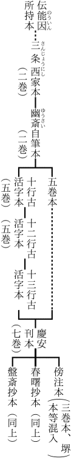
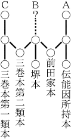

今度版を新たにするに当たり、全体にわたって語句の修正を施し、二、三の個所にはやや詳しく修補を加えた。が、根本的に変更したものはない。もともと習作的な論文を集めたものであるから、根本的な改修は不可能である。自分が念としたのはできるだけ
誤謬を少なくすることであった。
昭和十五年二月
著者
［＃改丁］
自分は『日本古代文化』の発表以後、それにつづく種々の時代の文化を理解せんと志し、芸術、思想、宗教、政治の各方面にわたって、おぼつかない足どりながらも、少しずつ考察の歩をすすめた。そのころ東洋大学における日本倫理史、後には法政大学における日本思想史の講義の草案として、在来この種の題目の著書にほとんど取り扱われていない
飛鳥寧楽時代
乃至鎌倉時代に特に力を注ぎ、雑駁ながらも幾分の考えをまとめてみたのであるが、その講案の副産物として、やがては日本精神史のまとまった叙述に役立つであろうとの考えから、ほとんど未定稿のごとき状態で発表したのが本書に集録せる諸論文である。だからそれらはさらに綿密な研究によって書きかえられ、日本精神史の叙述のうちにそれぞれその位置を持つはずであった。ところが考察をすすめるに従って仏教思想がいかに根深くこれらの時代の日本人の精神生活の根柢となっているかを見いだし、仏教思想の大体の理解なくしては考察を進め得ざるに至った。そこで自分はシナ仏教の理解によって、それがいかに日本人に受容され、いかなる意味で鎌倉時代の新運動となったかを理解せんと志したのであったが、シナ仏教の理解はインド仏教の理解なくしては不可能であり、結局原始仏教以来の
史的開展を理解することによってのみシナ日本における仏教思想の
特殊性が理解せられ得るものであることを悟るに至った。自分はかかる理解を、権威ありとせらるる先輩の著書によって得ようと試みた。が、不幸にも自分は自ら根本資料について研究すべき必要に押しつけられた。それは最初の目的にとってははなはだまわり道であるが、しかしこれを理解せずには考察を進め得ないと悟った以上、まわり道であっても仕方がない。のみならず学問としては日本精神史を明らかにするのも仏教思想を明らかにするのもその間に軽重の差があるとは思えない。かくして自分は日本精神史の叙述からは横道にそれ、右の諸論文は手を触れらるることなく数年間捨て置かれた。さらに幾年捨て置かれるか知れない。しかし自分のうちには、一つの時期を記念するものとして、これらの小篇を愛惜するこころがある。またこの種の問題を追究する人々にとっては、これらの未熟な研究も幾分の参考となるであろう。さらにもしこの書によって識者の
叱正を得ることができたならば、自分の将来の研究にとって幸福である。かく考えて自分は、ほとんど未定稿のごとき状態のままで、これらの論文をここに
輯録し世に問うのである。
本書の論文は、「推古天平美術の様式」及び「『枕草紙』の原典批評についての提案」の二篇を除いて、すべて関東大地震以前の数年間に主として雑誌『思想』に発表したものであるが、右の二篇も他と同じ覚え書きに基づいたものに過ぎぬ。なお「沙門道元」の初め三分の二は『思想』創刊以前に『新小説』に連載したものである。
本書のさし絵については源豊宗君及び奈良飛鳥園主の好意を受けた。記して感謝の意を表する。
大正十五年九月
於洛東若王子
著者
［＃改丁］
「まつりごと」が初め「
祭事」を意味したということは、古き伝説や高塚式古墳の遺物によって十分確かめ得られると思う。君主は自ら神的なものであるとともにまた
祭司であった。
天照大神がそうである。
崇神天皇がそうである。
邪馬台の
卑弥呼もそうである。かくて国家の統一は「祭事の
総攬」において遂げられた。種々の地方的な崇拝が、異なれる神々の同化やあるいは神々の血統的な関係づけによって、一つの体系に編み込まれたのは、この「祭事の総攬」の反映であろう。
かくのごとき祭事は支配階級の利益のために起こったというごときものではない。そこにはいまだ「支配」という関係はなかった。祭事に伴なっているのは「統率」という事実である。原始的集団においてはその生活の安全のために祭事が要求せられた。力強い
祭司の出現は集団の生活を安全にしたのみならず、さらにその集団の生活を内より力づけ活発ならしめた。祭司の権威の高まるとともに集団は大となり、その大集団の威力が神秘的な権威として感ぜられる。ここに「祭事の総攬」という機運が起こってくる。集団の側から祭事や祭司を要求することが、祭司の側からは統率となるのである。だから統率は君主が民衆を外から支配し隷従せしめるというのではなく、民衆がその生活の内的必然として要求したものであった。このことは卑弥呼が衆によって共立せられたというシナ人の記述や、衆人が天皇の即位を懇願するというさまざまの伝説によっても確かめられるであろう。
祭事が支配階級の利益というごときことのためでなく民衆の要求に基づいて起こったとすれば、この祭事の目ざすところが民衆の精神的及び物質的福祉にあったことは疑う余地がない。祭司の権威の高まることはさまざまの「まがつみ」を排除して民衆の福祉を増進することである。ここに我々は原始的な政治が決して少数者の権力欲によって起こったものでなく、民衆の福祉への欲望が（それ自身としては自覚せられずに）権威や統率関係の設定として自覚せられたものであることを見いだし得ると思う。ここでは祭事という言葉自身が示しているように、宗教と政治とは別のものでない。また統率さるることが民衆自身の要求であったがゆえに、統率者と被統率者との対抗もない。君民一致は字義通りの事実だったのである。自然の脅威に対する戦いが唯一の関心事である自然人にとっては、隣国の古き政治史が示すような権力欲の争いや民衆を圧制する政治のごときは、いまだ思いも寄らぬことであった。シナ文化を摂取して人々が歴史的記録を残そうと努め始めたころには、彼らはシナの史書から学んだ視点をもってこの国の古き伝説を解釈しようとしたが、しかし彼らの文飾をもってしても自然人的な素朴な祭事の実情は覆い隠すことができなかった。我々はこれらの記録の伝える天皇尊崇の実情を右のごとき祭事の意義において的確につかみ取らなくてはならぬ。
かくのごとき
祭事がいかにして
政治に変わって来たか。ここに我々はいわゆる「
大臣大連」の意義が見いだされはしないかと思う。応神仁徳朝をもって絶頂とする祭事の時代は、伝統としては推古時代の近くまで続いている。それは高塚式古墳の遺物が明らかに証示するところである。しかしながら「祭事の総攬」は、その黄金時代においては幾万の軍隊を朝鮮半島に出動させるほど有力であったとはいえ、それ自身は本質上神聖な権威による統一であって、最大の兵力による威圧でもなければ経済的な実力による支配でもなかった。神聖な権威の下に統一され、その権威の分身として自らも権威を持った地方的君主の中には、兵力や経済的実力において祭事の総攬者と大差なきものもあったらしい。もしここに神聖な権威の
結紐が破られたならば、国家的な統一もまたともに破れ去らなくてはならぬ。朝鮮半島との軍事的接触はやがて西方の文化との密接な関係を
喚び起こし、この方面からも素朴な原始的統一は
脅かされ始めた。この時、かつて祭事の総攬として立てられた統一をさらに経済的兵力的な権力によって確保しようと努力したものが、大臣大連の政治である。古き物語や書紀の記録などはともすればこれらの大臣大連の事蹟をただ家庭的私事の方面のみから観察しようとするが、事は朝鮮半島の南端より関東地方にまでわたる一つの国家の統一に関する問題であって、大和における私闘私事の問題ではない。当時の歴史家が大きい事蹟を私人的にしか把握し得なかったという
歴史記述上の能力と、当時の政治家が右のごとき国家の全範域にわたって中央政府の権力を確立しようと努力したという
実際生活上の能力とは混同してはならない。
我々はこの時代における大臣大連らの事業を書紀における短い断片的な記録から再建することができるであろう。雄略朝以後、特に継体朝以後推古時代までの間には、これらの大臣大連は西方文化との接触と中央集権の努力とをその活動の枢軸としている。中央集権は主として
屯倉（直轄地）の設置によって行なわれた。大伴の
金村にしても、蘇我の
稲目や
馬子にしても、この屯倉の設置には熱心に努力しているのである。そうしてこの努力のために西方より輸入せられた「知識」が最も有力な武器であったことは
否み難い。かくして中央政府は、経済的の実力を蓄積し、統一的な兵力を養い、国家としての組織を徐々に発育せしめて行ったのである。
かくのごとき政治的統一の努力に対して、天皇の神聖な権威は欠くべからざるものであった。屯倉の設置は地方の豪族の地位と権力とに大きい変化をもたらすものであるが、しかしそれは兵権をもってなされたものでなく天皇の神聖な権威によってなされたのである。言いかえれば
祭事としての権威によって
政治が行なわれたのである。しかしながら実際に行なわれるのはもはや祭事ではなくして西方の知識による政治であった。
ここに形式と内容との分離がある。かくして政治に権威を与えるものとしての天皇の意義に対する反省が起こり、前代にあっては反省せられざる直接の事実であった神聖な権威が今や組織されたる神話の形において自覚せられるに至った。一つのまとまった叙事詩としての『古事記』の物語はかくして発生したのである。かくのごとき自覚において、単に権力ではなくして権威が要求せられたということは、皇統の絶えんとするに当たって大伴の金村らのなした努力にも明らかに現われていると思う。
この変化は西方文化の刺激によって原始的な信仰の直接さがようやく破れ始めたことにも起因するであろう。祭事が政治となり、宗教と政治との区別がやや自覚されるに至ったのは、西方の知識の輸入と平行した出来事である。この点において帰化漢人が「まつりごと」の意義の変化に有力な刺激を与えたことは認めざるを得ないであろう。しかもこの時期の末には、宗教として高度に発達した仏教が旺然として流れ込んで来る。それが自然人の心情に適合した仕方でのみ受け容れられたとしても、それによって古来の祭事がその宗教としての位置をはなはだしく狭められたということは必然の勢いであろう。原始的な祭事において直接に明らかであった「まつりごと」の目的は、その祭事と引き離された「政治」において、今や新しくその意義を獲得し、その内容を深めなくてはならない。
中央集権がほぼ完成し、西方の文化の摂取がきわめて活発となった推古時代において、我々はこの新しき意味における政治の理想が「憲法」として設定されたのを見る。天皇が政治に神聖な権威を与えるものであることはここでも明らかに認められるが、かく権威づけられた政治が目的とするところは国家の富強というごときことではなくしてまさに
道徳的理想の実現である。民衆の物質的福祉ももちろんここには顧慮せられるが、何よりもまず重大なのは
徳の支配の樹立である。儒教の理想と仏教の理想とがここでは政治の目的になる。かくして主権者の権威は道徳的理想の権威と合致した。後に
聖武天皇が自ら
三宝の
奴と宣言せられたような、主権者の権威を永遠の真理によって基礎づけるところの決然たる言葉はここには用いられていないが、しかしそれを呼び起こす思想はすでにここに現われていると思う。
我々は現代においてもそのままに通用するごとき「十七条憲法」の光輝ある道徳的訓誡を、単に
シナの模倣とする歴史家の解釈に同ずることができない。そこに現われた思想は普遍妥当的なものであって、それを理解したものの何人もが心から共鳴し、その実現に努力せざるを得ないものである。かかる思想をシナから教わり、それを理解し、強き道徳的情熱をもってその実現に努力することは、「シナの模倣」と呼ばるべきものであろうか。「キリストの模倣」というごとき用語例に従えばそれは「孔子の模倣」「ブッダの模倣」などとは呼ばれてもよい。しかし内より必然性をもって出たものでないという意味の模倣ではあり得ないであろう。ことに国家の目的を道徳的理想の実現に認めるということは、単に「憲法」において思想として現われたに留まらず、推古時代の政治の著しい特徴であったらしい。たとえば四天王寺経営の伝説はかかる理想実現の努力を語っている。元来この寺は、書紀によると、仏教の流布に反対して亡ぼされた
物部一族の領地領民をその経済的基礎としたものであるが、その当時の寺の組織として後代の
縁起の語るところによると、それは明らかに仏教の慈悲を社会的に具体化せんとする努力を示したものである。
敬田院には、
救世観音を本尊とする
金堂を中心に
伽藍がある。ここに精神的な救いの手が民衆に向かってひろげられている。その北方には薬草の栽培、製薬、
施薬等を事業とする
施薬院、一切の男女の無縁の病者を寄宿せしめて「師長父母」のごとくに愛撫し療病することを事業とする
療病院、貧窮の孤独、
単己頼るなきものを寄宿せしめ日々
眷顧して飢

を救うを業とした
悲田院などが付属する。これらはまことに嘆賞すべき慈悲の実行である。我々はこの伝説がどの程度に事実を伝えているかを知らないが、しかし四天王寺にこの種の施設のあったことが確実であり、そうして他にその創設の伝承がないとすれば、我々は
暫くそれを信じてよいであろう。かかる努力にこそまさに当時の政治の意義が見いだされるのである。
しかしながら推古時代における政治的理想はなお十分に実現の力を伴なわなかった。それは大化の改新においてきわめて現実的な実現の努力となって現われ、天武朝より天平時代へかけて現実的と理想的との
渾融せる実現の努力となって現われたのである。すなわち大化の改新においては主として社会的経済的制度の革新として、天武朝より
天平時代へかけては精神的文化の力強い創造として。
曇らされざる眼をもって大化の改新の記録を読むものは、きわめて短日月の間に
矢継ぎ
早に行なわれた種々の革新の、あまりに多くまたあまりに意義の大きいのに驚くであろう。ことに土地人民の私有禁止、
班田収授の法の実施のごときは、屯倉による中央集権によって準備せられていたとはいえ、また他方では豪族らの
五分六割の形勢によって地方的勢力が減殺されていたとはいえ、高塚式古墳の示しているような地方的分権の時代から見れば非常な大革新である。この種の革新が、貴族らの幾分の不平を引き起こしたのみで、大いなる故障もなく行なわれたということは、推古時代の政治的理想が土地人民の所有者の階級にかなりよく理解せられていたと見なくては解し得られぬと思う。もちろんこの改新は反動なしにはすまなかった。北方の
蝦夷の征服や唐の勢力の脅威によって新政府が著しく軍国主義的に傾いたとき、かつて行なわれた改新は徐々として逆転せざるを得なかった。しかしながらこの逆転は、たとい保守派を喜ばせたとしても、より多く進歩派の反対を買った。蘇我の馬子の孫である
赤兄が、斉明天皇の失政として
水城石城等の築造や軍需の
積聚を攻撃しているごとき、明らかにこれを証示するものである。が、さらに著しいのは
天智天皇崩御後における
壬申の乱において、身分の低い
舎人や地方官をのみ味方とする天武天皇の軍が、大将軍大貴族の集団たる朝廷方を粉砕したことである。保守派たる大貴族は破れた。天武天皇は逆転せる大化改新を再び復興し、新しく爵位を制定することによって古来の
臣連を貴族の最下位に落とした。この時以後、昔臣連の大貴族として勢力を持ったものの
末裔が、おのおの数町の田をうけてわずかに家名を存続し、ついに
部民と同等の資格で戸籍につくに至ったのも少なくない（
正倉院文書、大宝養老の戸籍）。その反対に庶人に対しても人才簡抜によって官吏となる道を開いた。その他種々の点において天武朝の施政は大化の改新を徹底せしめたものである。そうしてさらに推古時代の理想を実現するために、仏教の理想の具体化が種々の施政となって現われ始めた。仏教の精神によってこの時に規定せられた
殺生の制限は、ついに長い後代まで菜食主義の伝統となって残った。「諸国の
毎家、仏舎を作り、仏像及び経を置き、以て
礼拝供養せよ」という
詔は、仏壇を一家に欠き難いものとする伝統の始まりである。かくのごとき形勢の下に白鳳天平の力強い文化創造の運動が始まるのである。
我々は右のごとき概観を一つの事例によって証拠立ててみたいと思う。それは『大宝令』における富の分配の制度である。
大化の改新は経済組織の上に行なわれた一つの断乎たる革命であった。皇族を初め一般の貴族富豪は、その私有するところの土地と人民を、すなわちその私有財産のほとんど全部を、国家に交付しなくてはならなかった。そうしてこれらの貴族富豪の私有民として「ほしいままに駆使」されていた百姓は、すなわちその労働の果実を特権階級によって搾取せられていた民衆は、その奴隷状態より解放され、国家の公民として一定の土地の自主的な耕作権を
賦与されることになった。もとよりこの際、特権階級の「特権」は全部剥奪されたわけでない。彼らはその地位と官職とに応じて国家より俸禄を受くるのである。が、この種の特権がなお依然として存するにもせよ、彼らはもはや数万
頃の田を兼併し、あるいは民衆をおのが私用のために駆使するというごとき利己主義的な特権を、公然と許されているわけではない。民衆は国家に僅少の租税を払うほか、何人の搾取をも束縛をも受くることなく、すなわち特権階級の特権に何ら彼らの生活を傷つけらるることなく、自由にその生を
享くるの権利を保証されたのである。
この改新がいかにして行なわれたか。またそれが単に官府の記録に現われた改新であって、実際には行なわれなかったものでないかどうか。あるいはまたそれが唐の法令からいかなる程度の影響を受けたものであるか。それらの問題はここに触れようとするものでない。ここにはただ右の国家社会主義的とも呼び得べき施設を、その明らかに法令の形をとって現われているところの『大宝令
（１）』について、観察してみようとするのである。この法令がいかなる程度に実行されたものであるにもせよ、そこには確かに当時の政治家の理想を見ることができる。その理想の実現において種々のつまずきがあったということは、この種の理想をもって政治家が事を行なおうとしたという偉大な事実の価値を没するものではない。
（１）現存『
令義解』による。その条文は恐らく養老年間に改修せられたものであって、『大宝令』そのままではあるまいという説がある。そうも思えるし、またそうでなく思える点もある。たとえば
田令第一条の租の
高がそうである。が、いずれであるにしろここにはただ耳なれた名であるゆえをもって便宜上『大宝令』と呼んでおこうと思う。
奈良朝初期の産業の大部分は、言うまでもなく農業である。従って土地の国有は総じて資本の国有を意味する。この国有の資本は、すなわち天下の公田は、いかなる方法によって一般に分配せられたか。
法令によれば民衆は戸籍についたものである限り、
五歳以下のものを除いて男子に一人あて二段、女子にその三分の二の「
口分田」を給せられる。彼らはこの田を耕作して、収穫の百分の三（
京畿は百分の四・四との説あり）の租税を払うほか、全部おのれの収入としていい。すなわち彼らは、国家の提供する
資本とおのれの
労働との協同によって生ずる果実を、その九割七分まで享受し得るのである。なおこの制度において特に注目に価する事は、全然労働能力なき小児や一般の女子にも土地を均分している点である。シナにおいてはかかる前例はない。そうしてこの相違には甚大な精神的意義がある。なぜならば一般の女子や労働能力なき小児にも土地を均分するという事によって、租税の徴収が第一義でなく生活の保証が第一義である事を明示しているからである。シナの法制においては労働能力ある
男子への配分は非常に大きいが、
主義として人民に土地を
均分するのではない。
これを実際の例についていうと、たとえば筑前国島郡川辺里
卜部乃母曾の一家は（
正倉院文書、大宝二、戸籍、による）、
戸主乃母曾、四十九歳。（正丁、一人前の権利義務全部を担うもの）
その母、七十四歳。（耆女、口分田をうけ田租を納めるも他に義務なし）
その妻、四十七歳。（丁妻、右に同じ）
長男、十九歳。（少丁、口分田をうけ田租を納めるほかに、四分の一人前の庸調を負担す）
長女、十六歳。（小女、丁妻に同じ）
次女、十三歳。（小女、右に同じ）
次男、六歳。（小子、右に同じ）
戸主の弟、四十六歳。（正丁、戸主に同じ）
その妻、三十七歳。（丁妻、戸主妻に同じ）
長女、十八歳。（小女、右に同じ）
長男、十七歳。（少丁、戸主長男に同じ）
次男、十六歳。（小子、小女と同じく庸調の負担なし）
次女、十三歳。（小女、右に同じ）
三女、九歳。（小女、右に同じ）
三男、二歳。（緑児、口分田なし）
四女、一歳。（緑女、口分田なし）
すなわち口分田をうくる権利あるものは、男二段ずつ六人女三分の四段ずつ八人である。従ってこの一家はこの後
六年間、田地二町二・六段を当然占有し得る。当時の平均によれば、一段の収穫米は五十束、すなわち二石五斗であって、二町二段は五十六石余の収穫を意味する。これに対して租税は総計一石七斗（五百束に対して十五束の割
（１））を払えばよい。しからば年収五十四石余、すなわち約百三十五俵
（２）は、この卜部一家の生計を支うる基本収入である。今日の農家の状態から推測すれば、たとい十六人の家族を擁するにもせよ、百三十俵の収入を持つ百姓は決して裕福でないとは言えぬ。従ってもしこの制度が予期通りに実現されるとすれば、一般民衆の生活は確実に保証されるのである。
（１）田令には「町租稲二十二束」とある。そうしてその個所に『義解』は町地穫稲五百束と注している。これはここに認めた割合と同一でない。しかし
久米邦武氏（奈良朝史、四六ページ）によれば、京畿は二十二束、
諸道は十五束である。氏はこの諸道十五束を『
続紀』慶雲三年九月の「遣使七道、始定田租法、町十五束」から判定せられたらしい。
吉田東伍氏（倒叙日本史、巻九、二七一ページ以下）の解はそうでない。氏によれば、田租二十二束の場合は町穫稲七百二十束、田租十五束の場合は穫稲五百束、すなわち度量衡の法の相違であって、
税率はほとんど等しい。前者は『大宝令』の制であり、後者は古制であって、この古制が『大宝令』制定後五、六年にしてまた復活されたと見るのである。が、今の場合にとってはいずれの解を取るもさしつかえはない。
（２）吉田氏（倒叙日本史、二七三ページ以下）によれば、段別穫稲五十束、一束米五升という場合の量升は和銅大量であって、その一石は今の六斗六升余に当たる。従って年収五十四石余は今の三十六石
九十俵に当たる。が、それでも今の百姓としては富裕の方である。
班田収授の法をかく社会主義的な施設と見るについては、もとより異論がある。たとえば、これらの
百姓は有姓の士族であって、今の農夫と同視すべきでないというごとき（
久米氏、奈良朝史、四四ページ）。しかしこの説は一顧の価値もないものである。大化改新の詔の第一条は、皇族及び貴族の私有民を解放せよと命じている。この私有民は農夫でなくて何であろう。またその前年の詔には「方今
百姓なほ乏し。而して
勢ある者、水陸を分割して私地となし、
百姓に売与して年々にその
価を
索む。今より後、地を売ることを得じ。
妄りに主となつて劣弱を兼併すること
勿れ」とあり、そのあとに「
百姓大いに喜ぶ」と付け加えられている。ここにいう「売与」とは
貸与である、「その価」とは
小作料である。これを地主と小作農の関係と見ずしてどうしてこの詔を解することができるか。一歩を譲って百姓を有姓の士族と見ても、それは
貧乏であり、また勢いある者の私地を
小作して苦しめられつつあった点において当時の農民と変わりがない。のみならずまた実際の問題として、『大宝令』の時代に、戸籍について口分田を給せらるる階級よりも下に、なおどんな階級が認められるであろうか。たとえば
御野国三井田の里は（
正倉院文書、大宝二、戸籍）戸令にあるごとく五十戸（五十軒の意味ではない、
戸籍数五十である。軒数は何倍かに上るであろう）である。そうしてこの戸籍数五十の村落は総人口八百九十九人の内、ただわずかに
奴婢十四人をのぞいて全部公民であり、またこの奴婢さえも、田令によれば公民の三分の一（官戸奴婢の場合には公民と同額）の口分田を給せられる。この公民及び奴婢よりも下に、なお低き労働者の階級が認め得られるであろうか。我々は『続紀』及び法令のいずれの点にもその種の階級の痕跡を認めることができぬ。またこの三井田の里が九百の公民のほかになお数百あるいは数千の賤民を包容し得たと考えることもできぬ。
かく見れば、班田収授の法によって生活を保証されたものは、確かに一般の民衆であって特権階級ではない。
いかなる人も、五歳を越えれば国家より土地の占有権を与えられる。一戸の内に普通の労働能力がある限り、そうして不可抗な天災が襲って来ない限り、何人も
餓えに迫られるはずはないのである。
が、一般の民衆の享受する富は、単に右のごとく「田」に関するもののみではない。農人としての労働はこのほかなお「畑」において、「山林」において、自由に行なわれ得る。法令にいわゆる「園地」はこの種の副業を考えずには解釈し得られない。田令によればこの園地もまた、地の多少に従って、人口に応じて、
均しく分かたれるのである。そうして園地を配分せられたものは、義務として一定数の桑漆を植えなくてはならぬ。その内特に桑は、当然
養蚕を予想するものであり、従ってそこに絹布をつくるための一切の労働領域が開ける。それは人口の半ばを占める女の仕事である。
下戸（すなわち口数の少ない一家）において桑一百根を植うることを規定されているのを見ると、この養蚕及びそれにつづく製糸製絹の仕事は、かなり大きいものでなくてはならぬ。賦役令によると、絹、

、糸、綿、布などが物産のまっ先に掲げられている。この糸が絹糸、綿が
真綿であるとすれば、それも養蚕の仕事に属するのである。
桑漆のごとく政府より特に奨励せられないものでも、民衆はその生活の必需のゆえに多くの副業を営む。賦役令の物産の名から判ずると、副業は非常に多種類である。そこに言う布が麻布であったとすれば、麻も盛んに作られ、麻布も多量に紡織せられたことになる。そのほかになお
胡麻油、麻子油の類さえもある。山地は狩猟によって得られる猪油、鹿角、鳥羽の類を産出し、海岸地方は塩の製造、魚貝の漁撈、海藻の採集などに非常に有力な副業を持った。これらはすべて農業の合い間に労働を楽しむ程度で働いても、かなりの分量を産出し得るものである。
これらの副業の収穫は、「調」と呼ばれる僅少の租税をのぞいて、全部自己の有になる。調は二十一歳以上六十歳以下のいわゆる
正丁一人について絹
八尺五寸、六十一歳以上及び残疾者――その半額、十六歳以上二十歳以下のいわゆる
中男――その四分の一である。前に例示した卜部一家十六人の内には、正丁二人、中男二人であるから、この一家が一年に収むべき調は、絹
約二丈一尺である。が、もしこの一家が百本の桑を植え、十三歳以上の女七人の手によって養蚕し糸を紡ぎ
織を織ったならば、年の絹布産額は恐らくこの数倍に達するであろう。のみならず調はこの絹布に限らない。まゆから当然取れる真綿は、二斤半（
一斤今の百八十目）をもって絹に代えることができる。なおまた海岸地方においては、塩三斗、
鰒十八斤、かつお三十五斤、
烏賊三十斤、紫のり四十八斤、あらめ二百六十斤等をもって調とすることができる。これもまた副業の年産額に比して高率とは言えぬであろう。
なお租調のほかに「庸」と呼ばれる租税がある。正丁一人につき年十日の労働を課するのである。農閑の時に課せられるとすれば、これもさほど重大な負担とは言えない。もし十日の労働を避けようと欲すれば、彼は調と同額の物資を納めればよい。（これによって見ると、一日の労働は塩三升に、あるいはあらめ二十六斤に、あるいは絹八寸五分に当たるのである。）
これらの観察よりすれば、法令によって保証せられた一般民衆の生活は、普通に勤勉でありさえすれば、かなり豊かなものである。そうして恐らく彼らの労働能力の全部を
費やさなくてもすむものである。（なおより以上に働くことを欲するものは、口分田以外に公田あるいは貴族の私田を小作することができ、また実際小作した。）この一般民衆の生活程度は、恐らく現在の中流階級に匹敵するであろう。ただしかし、天災に対する抵抗力の弱い当時の農耕は、民衆の生活にしばしば不時の変調を起こさせた。気候激変、長雨、洪水、暴風、
旱魃、虫害、それらのあるたびごとに
饑饉が起こる。それがこの時代の民衆の生活に暗い影を投げた最大の原因である。しかしこれは、制度の罪ではない。制度によって
醸される害悪をでき得る限り取り除いたあとにも、なお右のごとき害悪は
頻々として起こり得る。そうしてそれは土地分配の割り前を高めることによって救われるものではない。政治家の取るべき救済の方法としては、租税の免除、食糧の賑給、物資の廉売、平時の貯蓄、及び宗教的に絶対者にすがること等があるが、当時の政治家はこれらのすべてを行なったのである。ことに免租及び平時の公共的貯蓄（義倉）は、賦役令のうちに明らかに規定されており、宗教的な方法としては後に巨大な大仏さえも築造された。当時の知識程度においては、これら一切の富の分配の施設は、恐らく人為に望み得る最高のものであったろう。
が、ここになお一つの疑問がある。当時の社会においては、一般の身体労働者の階級に対して、官吏という頭脳労働者、及び位階あるゆえに徒食し得る貴族等の特権階級が認められていた。彼らはその頭脳労働が価する以上に、またその伝統的地位に対して許さるべき以上に、
奢侈の生活をしてはいなかったか。そうしてそれが
畢竟労働の成果の奪掠ではなかったか。もしこれらの奢侈を禁ずれば、一般民衆の生活はさらに安楽となるのではなかったか。
この疑問を解くために我々は官吏及び貴族の特権が何を意味するかを観察してみなくてはならぬ。
法令によれば特権階級の収入は次のごとくである。――（一）位あるものは
位田を給せられる。
一品（親王）八十町より四品四十町、
正一位八十町より従五位八町まで。女はその三分の二。（二）官職にあるものは
職分田を給せられる。
大政大臣四十町、左右大臣三十町、大納言二十町、
大宰帥十町、国守は国の大小に応じて二町六段より一町六段、郡司は六町より二町、大判事二町、博士一町六段、
史生六段の類である。
ところでこの位田
職田の一町は、収入として
幾何の額を意味するか。田令によれば「田を給う場合、もしその人がその土地の人でないならば、すべて、口分田さえ足らぬほどの耕地の少ない郷で受けてはならない」。この規定は、位田職田が実際に
田を給うのであって、単に抽象的に
町穫稲あるいは
町租を単位とする俸給を意味するのでないことを示している。が、
田を給うのみであってその
耕作者がなければ、それは全然意味をなさない。しからばこれらの田の所有者は、その田を公田と同じく収穫五分の一の小作料をもって農人に賃貸するのであるか。あるいはまた
公力をもって耕作し、収穫全体を収受するのであるか。田令のうちには、地方官新任の際は秋の収穫のころまでに「式によつて
粮を給へ」という一条がある。『義解』はそれに注釈して、「例へば中国守、職田二町、稲に准じて一千束（五十石）に当たる。新任守六月任に至らば、残余六ヶ月のために稲五百束を給ふ」と言っている。この解によれば職田一町とは直ちに町穫稲の全部、米二十五石を意味するのである。しかもこの地方官の職田は「交代の以前にすでに苗を
種えつけた場合はその収穫が前の人の収入となり、また前の人が自ら耕して苗を植えるばかりにしてまだうえていない場合には、後の人がその耕料を担う。官吏
欠員の場合には
公力をもって営種する」（
田令）とあるによって見れば、地方官が自己の
家人をもって自ら耕作する場合にのみ収穫の全部を得るのであって、公力すなわち百姓の賦役によって耕作させるのではない。新任守が式によって粮をうくる規定は、前任守が職田の収穫について権利を持っているからに過ぎぬ。すなわち位田職田の収入はその持ち主の経営法にかかる問題であって、一律に定めることはできないであろう。ここにおいて我々は位田職田の収入が小作料の五石と全収穫高の二十五石との間に種々変化するものであることを考えなくてはならぬ。特権階級は果たしてそれをいかに処置したであろうか。
ここでまずこの問題についての学者の説を
一瞥しよう。吉田東伍氏は「位田はその賜ふところの田地の穫稲を収め、一町につき二十二束の田租を官に輸す」（
前引書、三六七ページ）と言っている。すなわち
全収穫をとってその内から一般人と同じき田租を納めることを認めているのである。しかし位田は最も少ないものといえども八町を下らぬ。その田を誰が作るか、彼らは無報酬で働く奴隷を持っていたか、もしそうであれば初めて田を給わったものはその奴隷をどうして手に入れたか、――それらの問題について氏は何ら考うるところがない。私有民の禁ぜられたこの時代に、数十町の田を耕す多数の奴隷がなお官位あるものによって
私有せられていたことを証明した後でなければ、またこの種の奴隷が賜田に付随して給与されたのであることを証明した後でなければ、氏の解は成り立たない。久米邦武氏はこの点についてやや詳密に考えている。氏は賜田と
封戸との間に密接の関係を認め「田と戸とは土地と人民との別なるを以て大相違なれども、戸口の
副はぬ田と田地のつかぬ戸口とは利益甚だ乏しきものなり。故に領地は版籍と称して、田地四至の版図と住民の戸籍を併せて領するものなるに
因つて、或は田を表はし、或は戸を表はす。実際は同物といふも不可なかるべし」（
古代史、四九―五二ページ）と言っている。すなわち氏はこの点においては奴隷を認めず、賜田が封戸と同性質のものと見るのである。そうしてなお位田と位禄の対比から、「一町を封八戸
許に
較したる
（１）」ことを認めている。が、位田職田がいかなる方法により幾何の収入を得るものであるかについては、明白な解を示していない。
（１）田令には位田正一位八十町より従五位八町までを規定し、別に
禄令において正一位三百戸より従三位百戸までの
食封を規定している。しかるに慶雲二年に至って、「冠位已に高うして食封何ぞ薄き」という理由の下に、正一位六百戸より従四位八十戸に増額された。久米氏はこの六百戸を八十町に対比して、一町を封八戸許に較したりと言われるのである。しかしこの
食封は厳密に賜田と対応させられているとは言えない。正一位位田八十町に対して食封は六百戸であるが、しかし従四位は位田二十町に対して食封八十戸である。また令によれば、太政大臣の職田は四十町であるが食封は三千戸である。すなわち正一位においては一町すなわち七戸半、従四位においては一町すなわち四戸、太政大臣においては一町すなわち七十五戸である。
自分は位田
功田職田の類が、自ら耕作するを許さざるほどの広大な面積にわたるものである限り、必ず収穫五分の一の小作料をもってその収入としたに相違ないと考える。かの「代耕の禄」（
続記、慶雲三年三月、詔）とは恐らく小作料を指すものであろう。封戸は、賦役令によれば、その領するところの戸の田租を二分し、一半を官に収め一半を領主の有とするのであって、収入の高きわめて明白である。またその徴収も、官に委任して官収の半ばを受ければよいのである。しかし位田功田の場合には、その領主は自ら経営し、小作人をして作らしめ、その小作料を自ら徴収しなくてはならぬ。この際民衆は、もし貴族にして驕慢ならば、その小作を回避することもできるであろう。なぜなら彼らは口分田によって生活を保証されているからである。従って位田功田職田等の経営がしばしば貴族を不利の地位に陥れたことも容易に察せられる。「王公諸臣多く山沢を占めて耕種を事とせず、
競つて
貪婪を懐き空しく地利を妨ぐ。もし百姓柴草を採る者あれば、
仍つてその器を奪つて大に辛苦せしむ。しかのみならず、地を賜はること、実にたゞ一、二
畝あるも、これにより峰をこえ谷に
跨りて
浪りに境界となす、自今以後更に然ることを得ざれ」（
前引、慶雲三年詔）というごとき言葉は、明らかに貴族と農民と
軋轢を語るものである。すなわち貴族は、百姓が彼らの従順なる小作人たらざるゆえに、きわめて子供らしき方法をもって百姓に復讐し、その鬱憤を晴らしているのである。これらの事情によって察すれば、貴族は賜田よりも食封を好み、従って食封の増額という形勢を引き起こしたのであろう。かく解すれば位田と食封とは、久米氏の説くごとく全然同性質のものとは見られない。
賜田が百分の二十の小作料を意味するとすれば、それは田租の七倍弱であり、従ってその半額を収入とする封戸の田地に対して約十四倍の効力を有する。一戸平均二町を耕作するとすれば、十四町すなわち七戸が賜田一町に匹敵するのである。すなわち最高八十町の位田は、約五百六十戸の食封に当たる。位田の始まったのが『養老令』であり、それまではすべて位封であって特殊の場合を除けば一品親王もほぼ一千戸の位封をうけたに過ぎぬとすれば（
久米氏、古代史、四九、五三ページ）、『大宝令』の位田八十町食封八百戸、すなわち封戸に換算して約千三百六十戸は、はなはだそれに近い。この点から考えても自ら耕作する
能わざる位田職田の収入が、小作料に基づくことは確実である。
しからば全収穫高を収めるとする『義解』の解釈は、ただ家人の手によって自ら耕作することを事とする低い地方官にのみ通用するものであろう。この見方によって自分は、自分の解釈と矛盾することなく、『義解』の解釈をも容認し得ると思う。すなわち位田は総じて小作料に基づき、職田は従五位以上においては多く小作料に、正六位以下において多く自耕に基づいた収入を意味すると見るのである。たとえば大宰帥の職田は十町であるが（
田令）、彼はまた従三位であるゆえに（
官位令）、位田三十四町をうける。同じく
大宰大弐は職田六町とともに正五位の位田十二町、同じく大宰少弐は職田四町とともに従五位の位田八町。すなわち大宰官吏は長官より序を追うて四十四町、十八町、十二町である。しかるに第四位にある大宰大監は、ただ正六位であるという理由のみで、職田
二町をうくるに過ぎぬ。官位上ただ一段の相違によってたちまち俸給が六分の一に減ずるのは、一見はなはだ不合理のように見えるが、もし彼らがすべて家人をして二町を耕作せしめ、それ以上の田を小作人によって耕作せしめたとすれば、少弐の年俸
百石に対して大監は
五十石ということになる。さらに上に位するものも、大弐百三十石、大宰帥は二百六十石であって、その釣り合いが不自然でない。またもし高位にのぼったものの家人が、小作料のみによっても生活し得るゆえをもって身体労働をいとったとすれば、帥は二百二十石、大弐は九十石、少弐は六十石である。
右の解釈によれば、正六位以下の下級地方官吏は、二町乃至六段の職田を口分田以外にもらうということを除いて、農民と異なった何らの特典もない。（ただし大宰、
壱岐、
対馬の地方官は例外として在京官吏に等しき禄をももらう。）ここではむしろ職田二町というごときことが、官の倉庫より米五十石を給せられることであると解したく思う。たとえば上国守が職田二町二段と従五位位田八町、合計
十町二段を給せられるのは、その
小作料五十一石を意味し、下国守が単に職田二町をのみ給せられるのは、官米五十石を意味すると見るのである。しかしこの解釈を支持するためには、先に引いた田令の職田営種に関する条を別の意味に解し得なくてはならぬ。そうしてそれは我々に不可能である。あの条は職田の小作に関するにもしろまた自作に関するにもしろ、とにかく具体的な職田をうんぬんするのであって、職田一町すなわち
官米二十五石と見ることを許さない。だから我々はいたし方なく、下級の地方官吏が決して頭脳労働者としての特典を持っていなかったことを承認しなくてはならぬ。
しからば
在京の諸官吏はどうであるか。大納言、左右大臣、太政大臣等の最高官を除くほかは、すべて職田を給せられるということがない。その代わり彼らは禄令によって封禄をもらう。半年ごとに、その期間の出勤日数百二十日以上のものは、一位の
三十疋、綿三十屯、布百端、
百六十
口より従八位の
一疋、綿一屯、布三端、十口まで、官位に応じて禄をうける。また従三位以上には食封があり、従五位以上には正四位の
十疋、綿十屯、布五十端、庸布三百六十常より従五位の
四疋、綿四屯、布二十九端、庸布百八十常までの特別給与がある。ここでも正六位以下の
下級官吏はきわめて薄給であって、従五位との間の相違のあまりにも著しいのに驚かざるを得ない。正六位は年二期を合わせて
六疋、綿六屯、布十端、三十口、これら全部を賦役令の比例によって布にひきなおすと、布三十九端に当たる。一端米六斗
（１）として換算すれば米二十三石四斗にしか当たらない。従八位に至っては実に年七石五斗である。
口分田によって家族を働かせることなしには、彼らは一家をささえることができないであろう。また口分田による収穫を合して考えた時にのみ、従五位と正六位との間のあまりにもはなはだしい収入の相違が緩和されるのである
（２）。
（１）布価と米価との釣り合いは時代とともに非常に変わっている。天平中期（『続紀』神護元年六月）の饑饉年のごとき、米二百石（異本三百石）に対して
六百疋、綿六千屯、布千二百端を引きあてている。米一石＝
三疋＝綿三十屯＝布六端である。布三十九端は米六石五斗にしか当たらない。が、かくのごときは饑饉年の異例であろう。和銅五年紀に穀六升（米三升）＝銭一文、銭五文＝布一常（一丈三尺）とあるのを令制定の時に最も近しとすれば、布一端米六斗と見ていいであろう。
（２）従五位は禄三十四石余、特別給与四十石余、位田四十石、合計百十五石ほどである。これに対してもし正六位の家人が口分田において五十石を収穫するとすれば、合計七十三石余である。
では五位以上はどうであるか。正五位の年禄は右のごとく換算して
四十二石であり、その特別給与は同じく
五十四石である。（位田をもらえばこの上になお六十石を増加する。）従四位はその五割増、正四位はその倍に近い。これらは王と称せらるるごとき相当に地位の高い貴族であり、また官職はすべて一寮の長官（局長格）以上であって、いわゆる貴族階級の中堅をなすものであるが、その年収は実に普通農家の基本収入の三倍乃至六倍に過ぎぬのである。三位以上のきわめて少数な皇族貴族及び高官に至って、初めて数百石より数千石に至る高禄がある。が、主権者をのぞいて、いかなる人も
三千石乃至
五千石（すなわち一石三十五円として約十万円乃至十七万円、もし一石が今の六斗六升に当たるとすれば、約六万五千円乃至十一万円）以上の年収を持ち得ないこと、そうしてこれらの高禄者は決して二、三人以上に上らないことを思えば、これらの特権階級がその
私の奢侈のゆえに民衆に与える損害は、現在の資本家階級のそれに比して実に言うに足りない微弱なものである。
しからば皇室はいかん。禄令によれば
中宮の湯沐は二千戸（すなわち二千石あるいは七万円）である。
東宮一年の雑用は
従七位の年俸の約百倍、普通
農家の基本収入の約三、四十倍、換算して同じく六、七万円である。皇室はその欲せられるがままに浪費し得べき国庫の莫大な収入を、主として
民衆のための賑給と文化のための諸施設とに費やし、そうしてその私用は右のごとき少額に限られた。従ってその消費せられるところはほとんど無意義に終わることなく、日本文化をして世界的に光輝あらしむる一つの黄金時代の出現を可能ならしめたのである。
以上の観察によって我々は結論することができる。『大宝令』を制定した政治家はある意味で社会主義的と呼ばれ得るような理想を抱いていたのである。それは民衆が富の分配の公平を要求したためにしかるのではなかった。また経済学的な理論によってそこに到達したのでもなかった。彼ら政治家を動かしていたのは純粋に道徳的な理想である。「和」を説き「仏教」を説き聖賢の政治を説く十七条憲法の精神に動かされ、断乎として民衆の間の不和や困苦を根絶せんと欲したのである。前にも言ったごとく、この制度がいかなる程度に実現されたか、また何ゆえにこの後に私有地が拡大し、何ゆえに平安朝末期の変革を呼び起こさなくてはならなかったかについては、別に考察すべき多くの重大な問題がある。しかし実行の点で何があったとしても、この種の制度を確立した政治家の理想そのものには十分の意義を認めざるを得ぬ。「一種の空想に過ぎないこの極端な共産的制度が長く継続せらるべきものでないことは云ふまであるまい」（
津田左右吉氏、貴族文学の時代、四二ページ）というごとき見方は、この偉大な歴史的事実を理解したものと言えない。そこには「空想」ではなくして理想がある。それは「長く継続せらる
べき」ものとして立てられ、しかも事実上継続せられ
能わなかったものである。徹底的に実行せられない法令が「空想」と呼ばるべきであるならば、多くの私人法人が脱税に苦心せる現在の税法も、また「空想」であろう。が、我々は、現代においてすらも「空想」と呼ばるるごとき津田氏のいわゆる「共産的制度」を、理想的情熱と確信とをもって千余年前に我々の祖先が樹立したという事実の前に目をふさいではならぬ。
（大正十一年、五月）
［＃改丁］
仏教が日本に迎えられた最初の時代には、それはどういうふうに理解せられ信仰せられたのであるか。この問題に対して普通に行なわれている見解はこうである。「仏教思想に対する日本人の理解ははなはだ浅薄であった。仏はただ
現世利益のために礼拝せられたに過ぎぬ。言わば仏教は
祈祷教として以上の意味を持たなかった。」この見解は、聖徳太子の『
三経疏』が推古時代の作に相違ないとすれば、明らかに
誤謬である。これらの経疏は大乗仏教の深い哲理に対するきわめて明快な理解を示している。そうしてかかる著述を作り出した時代は、仏教に対して無理解であったとは言えぬのである。が、このような優れた人々あるいは専門家たちを度外して、当時の一般人をのみ問題とするならば、右のごとき見方も一応は許されるであろう。当時の日本人の大多数が原始仏教の根本動機に心からな共鳴を感じ得なかったことは、言うまでもなく明らかなことである。現世を止揚して
解脱を得ようという要求を持つには、『古事記』の物語の作者である日本人はあまりにも無邪気であり朗らかであった。また彼らの大多数が大乗仏教のあの大建築のごとき哲学を理解し得なかったことも、論証を要しない事実である。簡単な恋愛説話を物語るにさえも合理的な統一をもってすることのできなかった彼らが、特に鋭い論理の力を必要とする「仏」の理念にどうして近づくことができたろう。確かに彼らは、ただ単純に、神秘なる力の根源としての仏像を礼拝し、彼らの無邪気なる要求――現世の幸福――の
充たされんことを祈ったに相違ない。
しかしこの見解によっては、右の問題は何ら解決されるところがない。なるほど彼らは仏教を本来の仏教としては理解し得なかった。彼らは単に現世の幸福を祈ったに過ぎなかった。しかしそれにもかかわらず彼らの側においては、この新来の宗教によって新しい心的興奮が経験され、新しい力新しい生活内容が与えられたのである。しかもそれは、彼らが仏教を理解し得たと
否とにかかわらず、とにかく
仏教によって与えられたのである。従って彼らは、仏教をその固有の意味において
理解し得ないとともに、また彼ら独特の意味において
理解することができた。そうしてこの独特の理解の仕方は、ただ「現世利益のため」あるいは「祈祷教」というごとき言葉によって解決され得るものでない。現世利益のためには、木も石も、山も川も、あるいは犬も狐も、祈祷の対象となり得る。彼らが木や石を捨てて仏像を取ったのは、ただそれが外来のものであるがゆえのみであるか、あるいはまた仏教の特殊な力によるのであるか。仏教の力によるとすれば、それは木や石の崇拝といかにその内容を異にするか。異にするのみならずまたそれがいかに精神内容の開展を意味するか。これらの問題はすべてまだ解かれていない。そうしてこれらの問題が解かれることによってのみ彼らが「
いかに仏教を理解し信仰したか」の問題もまた解かれるのである。
この問題の考察のためにまず注意深く観察されねばならぬのは、自然児たる上代日本人にとって「現世の不幸災厄」が何を意味したかである。『古事記』によって知られるように、彼らは天真に現世を楽しんだ。恋愛は彼らにとって生の頂上であった。しかしこのことはまた逆に彼らが天真に現世を悲しんだことをも意味する。恋愛に生の頂上を認めるこころは、やがてまた
情死に生の完成を求めるこころである。『古事記』の最も美しい個所がすべて情死に関していることを思えば、このことは決して過言でない。まことに彼らは、享楽に対して新鮮な感受性を持ったがゆえに、またその享楽の失われる悲哀に対しても鋭い感受性を持ったのである。また『古事記』の疫病の伝説が示すように、肉体の健康を条件としてのみ享楽し得られる彼らの生活にとっては、病気は多くの悲哀の原因であった。彼らは病気というごとき現象を何らか外なる力に帰して考えざるを得なかったゆえに、そこには直ちに人の無力が痛感せられたのである。また同じく死に関する多くの物語が示すように、すべての幸福が現世的である彼らにとっては、人間の避け難い「死」は、死者の
枕辺足辺を這い
廻って
慟哭すべきほどに、またその慟哭の声が天上にまでも響き行くべきほどに、悲しいものであった。彼らの幸福のことごとくを一挙にして打破し去るこの「死」なるものは、いつ彼らのもとに忍び来るかも知れない。人間の運命は不安である。頼りない。これらの不安や頼りなさや無力の感じを、恐らく彼らは現代の人々よりもはるかに強く感じた。そうしてその現世の不幸の根拠を、恐らくまた現代の人々よりもはるかに純粋に、「現実の人生の不完全」において見いだした。（現代の人々の多くはそれを制度の不完全あるいは特権階級の罪として感ずる。それは一部分真実である。しかし不幸の
根拠がここにあると感ずるのは誇張である。フランス革命の時にはこれらの原因を王より初めてさまざまの制度や階級から取り除いてみた。しかし結局
根拠はそれらのどこにもなかった。）上代人はその単純な思想をもってしても、
畢竟不幸の
根拠を予覚したのである。
とは言え彼らには、現世を悪として感ずる傾向はない。現世は不完全であるが、この現世のほかに何があるだろう。暗黒と醜怪とのよみの国。従って彼らが完全なるものとして憧憬するのは、
この現世より
この不完全を取りのぞいた
常世の国である。
死なき国である。それを彼らは、「地上のここでないところ」に空想した。すなわち彼らの憧憬は地上の或る
異国への憧憬であって、天上への、彼岸への憧憬ではなかった。かくのごとく、「現世を否定せずして、しかもより高き完全な世界への憧憬を持つ」というところに、上代の自然児の理想主義がある。彼らはいかに現世的であるにもしろ、現実をそのままに是認するのではなかった。若きものが老い、熱烈な恋が冷め、かくて身も心も移り行いて、畢竟生まれたものは死ぬ、というこの現実の状態は、彼らにとって、現実であるがゆえに当然なのではなかった。現実なるものは何物も永遠でない、しかし彼らは
永遠を欲する。彼らは永遠がいかなるものであるかを知らない、しかし彼らは
永遠を基準として過ぎ行くものを評価する。
もとより彼らのこの理想主義は何ら思想的な形をとらなかった。我々はそれをあの
幽かな常世の国の伝説や、また悲しい恋を歌う情死の物語のうちに見いださねばならぬ。しかし彼らがそれを明白な形に現わし得なかったということは、それが彼らにおいて強く感ぜられなかったことを意味しはしない。我々は彼らが烈しい悲嘆を表現したことを知っている。そうしてこの「自然児の悲しみ」のうちに我々は、右に言うごとき憧憬の力強く動いていたことを推測し得るのである。試みに我々が幼いころ天真な自然児として感じた悲哀を追想してみるがよい。たといそれが親しい者の死というごとき重大な瞬間でない場合でも、たとえば夕暮れ、遊び疲れてとぼとぼと家路をたどる時などに、心の底まで
滲み
入ってくるあの透明な悲哀。そこには超地上的世界の観念が存しないにかかわらず、なお無限なるもの、永遠なるもの、完全なるものへの憧憬がある。この強い予感としての悲哀こそは、自然児の心に開かれたる大いなる可能性である。
この自然人の心にとっては、宗教はまことに欠くべからざるものであった。彼らはその頼りなさのささえを要する。あたかも幼いものがすべてを委せて母に頼るように、そうしてその悲しみをも苦しみをもまた心細さをも心の限りに泣き訴えることによって慰めを得るように。自然人はこの頼るべき力を木や石に、あるいは正確に言えば彼らがこの崇拝の対象に対して行なうところの彼ら自身の儀礼のうちに、見いだした。かくてたとえば「
祓い」というごとき儀礼が彼らを守る魔力を持つと信ぜられた。しかしこれは彼らの知力の開展とともにその魔力を減じて行く。シナ文化との接触は徐々にこの傾向を高めた。たとえば「
探湯」の魔力は、朝鮮において破られたのである。
仏教は、というよりも「仏像」は、ちょうどこの機運に乗じて日本に渡来したのである。それはさまざまの反対を受けつつも結局日本人の心を捕えた。国家の事業として大きい
法興寺が起こされる。仏教反対者なる
物部氏の財産の上には慈悲に名高い
四天王寺が築かれる。――そこで日本人の心には何が起こったか。
木や石の代わりに今や
人の姿をした、
美しい、神々しい、意味深い「仏」がもたらされる。魔力的な儀礼の代わりに今やこの「仏」に対する人間の
帰依が求められる。この「仏」が哲学的にいかなる意義を現わすかは、彼らの多くにとっては問題でない。彼らはただこの仏が、彼らより見てはるかに優れたる文化人であるところのシナ人によって礼拝せられることを知っている。それは礼拝に価するものである。そうして彼らの頼りない心の「願い」をきくところのものである。この眼をもって見るとき、仏像はいかに不思議な、深い力を印象するだろう。一切の美的な魅力が、ここでは宗教的な力に変形するのである。ここにおいて彼らは、その憧憬するところの完全な世界を、これらの「仏」のなかに、あるいはそれを通じて、予感した。彼らはその抱かれようと欲する母を、仏において見いだした。
明らかに彼らは、
彼ら自身の自然人らしい憧憬の心を、仏像に投射して経験したのである。彼らの持たざるものを新しく仏教から得たのではない。が、この経験は、彼らのすでに持てるものを、力強く開展させた。漠然たる予感として存した完全の世界への憧憬は、この
経験のゆえに、より高い内容を獲得した。たとえば彼らが
祓いの儀礼の内に頼るべき力を感じている間は、その力によって示唆される永遠者は非人間的なある者である。しかるに彼らが、ほのかに
微笑める
弥勒あるいは観音の像に頼るべき力を感ずる際には、そこに人間的な愛の表情が永遠なるものの担い手として感ぜられているのである。幼児を愛する母の表情、あるいは
無垢なる少女の天真なほほえみ、それらは彼らにとっても美しい嘆賞すべきものであったに相違ない、しかしそれは単なる現実であって憧憬の対象ではなかった。しかるに今や彼らは、これらの現実の姿を
象徴として憧憬の対象に接することを学んだ。語をかえて言えば、これらの人間的な美しさが完全なる世界の片影であることを学んだ。これは非常な進展である。この契機によって彼らは、理念としての「法」の世界への第一歩を踏み出すのである。
日本へ来た最初の仏教が、哲理でもなく修行でもなくして、むしろ
釈迦崇拝、薬師崇拝、観音崇拝というごとき名をもって呼ばるべきものであったことは、日本人にとって幸福であった。もしそれが造寺造塔を第二義とする道元の仏教のごときものであったならば、かく順当に受容せられたかどうかは疑わしい。あるいはまた、一切を抱擁する大乗教のうちから、ただかくのごとき仏像崇拝のみが摂取せられたと見ることもできよう。いずれにしても、仏教の最初の受容が単に外来のものの盲目的な受容ではなくして、日本人の側における順当な精神開展の一段階であったことは認めなくてはならぬ。
かくして受容せられた仏教が、現世利益のための願いを主としたことは、自然でありまた必然である。彼らは
現世を否定して彼岸の世界を恋うる心を持たなかった。彼らには現世は悲しいものではあっても悪ではなかった。現世的福祉と精神的福祉とは一つであった。従って彼らは、痛みを覚えた幼児が泣き叫んで母を求めるように、病めば必ず熱心に
願をかける。わが国の確実なる記録の最も古いものは法隆寺薬師像及び釈迦像の光背銘文であるが、両者はいずれも労疾による誓願を語るのである。がこれを、ある人々のように、「功利的」と呼ぶのは正当ではないであろう。彼らの信仰の動機は、物質的福祉のために宗教を利用するにあるのではなくして、ただその生の悲哀のゆえにひたすらに母なる「仏」にすがり寄るのである。この純粋の動機を理解せずには、彼らの信仰は解し得られないと思う。
しかしながら、彼らがいかに現世的であるにもしろ、彼らは現世を限定する大いなる事実からのがれることができぬ。その事実とは、死である。そうしてそこに彼らの悲哀が頂上に達する。
この悲哀のうちにすがり寄られるところの「仏」は、彼らの持ち得る最高の憧憬に答えるものとして、また彼らのうちに最深の意義を開顕した。ここに彼らの「彼岸」に対する理解が始まる。「彼岸」とは彼らにとって解脱の世界ではなくして死後の世界である。死後にこそ真実の生活がある。そうしてそれをこの人の姿をした仏が保証する。この信仰によってこそ彼らは死の悲哀を慰められることができたのである。これは上代の自然人が烈しく求めて、しかも得ることのできない慰めであった。今や彼らはそれを、「仏像において
高められた人間的なもの」のおかげで、得ることができる。
天寿国繍帳にいうところの、「
世間虚仮、
唯仏是真」や、あるいは天寿国における聖徳太子往生の状の空想のごとき、明らかにこの種の慰めを投影したものである。
推古時代の一般人はかくのごとくに仏教を理解し信仰した。それは仏教の理解としては浅薄である。しかし彼ら自身の精神開展の側から見れば、きわめて意味が深い。これを眼中に置いて考えるとき、法隆寺の建築や、夢殿観音、百済観音、中宮寺観音などの仏像は、彼らの創作として最もふさわしいものになる。これらの芸術こそ実にあの悲哀と憧憬との結晶ではないか。
これらの芸術が単なる模倣芸術でないということは、オリジナルな創作を模倣品から区別するあのまごう方なき生気を知っているものにとって、論を要しないことである。が、それは右のごとき観察によって裏づけられることを必要としないでもない。なぜならこれらの芸術を模倣芸術と見る論者は、当時の日本人がこれらの芸術によって表現すべき何らの内生をも持っていなかったと盲信しているからである。これらの盲信が根もない独断であることは、右の観察によって立証せられたことと思う。我々は、あのような偉大な芸術を創り出した人々を、もっと尊敬すべきではなかろうか。
視点を変える必要は単に芸術に関してのみではない。仏教の理解がかく日本人自身の内生活に即して始められたとすれば、総じて日本人のこの後の思想の開展、政治の発達等も、異なった眼で見られることを必要とする。単にシナの「模倣」だという言葉で一切を片付けようとする人々は、我々自身の時代の西欧文化との関係を参考として、模倣なる語がいかに多くの意味の濃淡を粗雑化し去るかを省みるべきである。
（大正十一年、六月）
［＃改丁］
仏像の
相好はただ単純な人体の写実ではなく、非常な程度の理想化を経たものである。そうしてその理想化は、ギリシアの神像においては
人体の聖化を意味しているが、仏像においては「
仏」
という理念の人体化を意味している。が、もとよりそれが造形美術である限り、芸術家は、この
理念の人体化に際しても、必ずや彼自身の人体の美の観照を基礎としているに違いない。
儀規によって明確に規定され、また絶えず伝来の様式を踏襲しているにかかわらず、東洋各国の各時代の仏像がおのおのその特殊な美を持つことは、単に造像の技巧の変遷のみならず、またこの芸術家の独自なる創作力を考えずには、理解し得られないであろう。自分はここに厳密な様式伝統の束縛にかかわらず、なお芸術家が自由に働き得た「余地」を、発見し得ると思う。そうしてこの「余地」こそは、実はおのおのの国と時代の仏像を、その芸術的価値において根本的に規定するものである。
このことをここには主として仏像や菩薩像の相好について考えてみたいと思う。
自分の考察は、
白鳳天平の仏菩薩像を眼中に置いて、これらの像の作者がいかなる人体の美を生かせて彼らの「仏」と「菩薩」とを創作したかについての、一つの落想から出発する。
ギリシアの流れを汲んだ西洋美術の写実的な美しさに親しんだ者には、仏像や菩薩像は多くの不自然と空虚の感じを与える。自分も十八歳の時、
関野貞氏の日本美術史の講義に間接に刺激されて、初めて奈良の博物館を訪れ、痛切にそれを経験した。仏像のあの眉と目との異様な長さ、頬の空虚な豊かさ、
二重顋、
頸のくくれ、胴体の不自然な釣り合い、――それらは自分に多いか少ないか反撥を感じさせずにいなかった。ただ
秋篠寺の
伎芸天や
興福寺の十大弟子のごとく不自然さの認められないものにおいてのみ、自分はこだわりなく没入し得たのであった。が、これらの不自然や空虚の感じは、通例、仏像や菩薩像に親しむにつれて薄らいで行き、その代わりに、そこに西洋美術の美しさとは質を異にした美しさが、見いだされてくる。そうしてこれらの特殊な、以前には不自然に見えた相好が、いかに仏像や菩薩像に必要であるかが理解される。が、それは何ゆえであるか。何ゆえにこの相好が仏菩薩として美しいのであるか。この疑問については、それがインド及びシナ伝来の様式であるという以外には、久しい間何の答えをも自分は見いだすことができなかった。しかるにこの疑問は、ついに
嬰児によって自分に解かれたのである。
最初自分は、生まれて間のない嬰児の寝顔を見まもっていた時に、思わず「ああ仏様のようだ」と言おうとした。が、その瞬間にまた
愕然として口をつぐんだ。我々の日常語においては、「仏」という言葉はその本来の深い意義を失って、ただ平俗に「死人」を意味する。（初めは
弥陀の信仰を背景とした慰めの心づかいから起こった用法であろうが、やがては、深い観念を現わす言葉を浅薄化するという日本に著明な傾向の有力な一例となったのである。）すでに死人を意味する以上、自分は内に残存する原始的な信仰――不祥な言葉が不祥な出来事を引き起こすという言葉の魔力の信仰によって、この「縁起の悪い」言葉を避けざるを得ない。が、こうして内に閉じ込められた自分の感想は、その魔縛のゆえに、一層特殊な力をもって自分の内に固執した。この後自分は嬰児のにおやかな顔を見るごとに、また湯に浸って楽しげに手足をおどらせるその柔らかな肢体を見るごとに、特にその神々しい、「仏」のように清浄な肉の感じを嘆美せずにはいられなかった。かくて幾月かを
経る内に自分は、仏像や菩薩像の作家がこの最も清浄な人体の美しさを捕えたのに相違ないことを、――すなわちこの美しさを成長せる人体に生かせることによって彼らの「仏」や「菩薩」を創作し得たのに相違ないことを、確信するに至ったのである。
嬰児と仏菩薩像とはどういうふうに似ているか。まず著しいのは、目である。が、この類似はどの時代の仏菩薩像においても認められるというわけではない。推古式彫像の目は比較的単純な弧を描いている（夢殿観音、百済観音、法隆寺金堂釈迦及び薬師）。やや複雑な曲線を描くものでも、顔全体に対するその釣り合いが普通の人体におけるそれに近いために、その曲線をきわ立って感じさせないか（中宮寺観音）、あるいは感じさせてもそこには柔らかい感じを欠くか（広隆寺弥勒）である。これらには嬰児のそれと比較すべき何物もない。しかるに白鳳以後の彫像（薬師寺三尊、同
聖観音、三月堂本尊、同
両脇侍、
聖林寺十一面観音等）になると、
上瞼の線はあの、初めに隆起して中ほどに沈み、再びゆるやかに昇って目尻に至ってまたゆるやかに降るという複雑な曲線になり、それをうける下瞼の線も、長い流動を印象する微妙な彎曲をもって、鋭い目尻のはね方まで一気に流れて行く。そうして目の「長さ」を特に強く人に印象する。それは、やや伏せ目になった、あるいは閉じた、通常人の目において、一般に認められる曲線ではあるが、しかし一見したところ非常に様式化せられたという感じを与えるものである。しかもこの様式化せられた感じこそ、自分をして嬰児の顔に仏像との類似を感ぜしめた第一の原因であった。眠れる嬰児の目の、あの
生々しく微妙な、長い、新鮮な明白さを持った曲線は、やや成長した子供、少年、あるいは
大人の目に見られると同じき曲線でありながらも、ただその、後には失われ去るところの、柔らかい、新鮮な明白さのゆえに、他に見られない清浄と端正との印象を与える。それは確かに仏像そのままである。ここにおいて自分は、逆に、仏菩薩像の目の清浄と端正とが実は嬰児のそれを借りたものではないかと思いついたのである。
この目の上に大きい曲線を描く眉もまた同様である。毛の明らかに生いそろった眉からはもはやあの端正な曲線の感じは得られない。しかるに嬰児の、あるかなきかのごときうぶ毛によって作られた眉は、まさに仏菩薩像のそれのごとくに、柔らかく大きい、そうして端正な感じを持っている。眉と目との間のあのふくらみのある広さもまた同様である。それはただ半ば閉じられた目であるがゆえではなく、視神経の疲れをかつて感じたことのない新鮮な瞼であるがゆえに得られる感じなのである。
この目と眉との顔全体に対する釣り合いも、推古式彫像（百済観音、夢殿観音、中宮寺観音等）においては
大人のそれが用いられているに反して、白鳳天平の代表作においては、大人のそれとは非常に異なった、明らかに嬰児のそれを思わせるものが用いられている。すなわち目の長さは、目より下の鼻の長さと同じであるかあるいはそれよりも長く、従って目と眉とが顔全体のうちに特殊な大きさをもって秀でているのである。もとよりこの事は右の諸作に限った特徴ではない。推古式彫像の中でも法輪寺
虚空蔵や広隆寺弥勒やその他小さい
金銅像においては目は非常に大きい。が、その大きさはある表情を現わすための誇大、あるいは技術が幼稚であり作者が原始的であるための無意識的な誇大である場合が多い。ここに問題とするのは、顔全体において微妙な調和を持つところの、
特殊な大きさである。そうしてその特殊な大きさを、我々は嬰児の顔においてさながらに見いだすのである。このような微妙な調和は、偶然に、あるいは漠然と、何のモデルもなしに作り出せるものではなかろう。我々はそこに嬰児の顔の美しさが利用せられていると見るのを至当と思う。
鼻及び唇は比較的に特徴が少ない。しかし鼻について言えば、推古時代の三傑作が、その単純な鼻のつくり方にかかわらず、なお成長した人間の鼻の美しさをきわめて鋭く捕え、そのために実に柔らかい感情に充ちたプロフィイルを持っているに反して、白鳳天平の諸作は、その十分に巧妙な技巧にかかわらず、決して成長した人の持つような「美しい鼻」を現わしてはいない。それは比較的に低く、小鼻が左右にひろがり、そうして肉の厚みが多すぎる。しかもその印象する所は大人において見られるこの種の鼻の感じではない。これこそまさにあの肉の軟らかい、鼻軟骨の固まらない、嬰児の鼻なのである。また唇について言えば、微妙な表情を含んだ夢殿や中宮寺の観音の唇が、無心の嬰児のそれでないことは言うまでもなく、また表情を含まない唇でも、推古式彫像においては多く輪郭の端正さを欠いている。しかるに白鳳天平の仏菩薩像の唇は、無心にして何の表情をも含まないとともに、実に明らかな、端正な輪郭を印象するのである。そうしてそれは目の曲線におけると同じく、一般人に通有な輪郭でありながら、ただその新鮮な明白さのゆえに嬰児において特に強く、特に清浄端正に感ぜられるところのものなのである。
頬の肉づけにおいては我々は目におけると同じき著しい特徴を見る。推古の三傑作の頬は、明らかに意味ある表情をふくんた、そうして肉のしまった、成長した人の頬である。が、白鳳天平の諸像においては、この種の表情は全然現われておらず、またそのふくらみも、成長した人の頬としては実に空虚であるが嬰児の柔らかい頬としては十分に我々を承服せしめるところの円さである。そうしてこの円い頬と目鼻口などとの美しい釣り合いも、――すなわちたとえば法隆寺壁画の西方阿弥陀仏の面相におけるごとく、顔面の周囲に比較的多く余地のあるあの
寛やかな朗らかな調和の感じも、――
面長な推古仏には見られず、また円く肥え太った大人の顔（それはむしろ過冗を印象して端正な感じを与えない）にも見られず、ただあの神々しい嬰児の顔の特殊な釣り合いにおいてのみ見られるものである。
顋と
頸の
くくれもまた同じく推古時代の彫像においては用いられず（たとい用いられたとしてもただ線条をもって暗示するに過ぎず）白鳳天平の諸像に至って初めて熱心に写実的に現わされるものであるが、ここにもまた我々は肥満せる大人のそれに全然見られない、そうしてただ
健やかに太れる嬰児の肉体においてのみ見られるあの清浄な豊満さを認め得るのである。肥満せる肉体に特有なこのくくれが、何ら
肉感的な印象を与えることなく、ただ端正に聖なる豊かさをのみ現わすというようなことは、その作家が嬰児の肉の美しさから得た霊感を根拠とするのでなくてはあり得ないと思う。
さらに我々は体全体についても同じ観察を繰り返すことができる。推古式彫像の体躯が一見したところ人体の釣り合いを無視しているように感ぜられるに反して、白鳳天平の彫像はかなり確かな写実を基礎としているように見える。がそれにもかかわらず我々は、たとえば薬師寺の薬師三尊のあの柔らかく緩んだ胸や腹の肉づけなどを見れば、そこに
大人の体としては許し難い
うそを見いだすであろう。ただそこに嬰児の肉体のあの柔らかい円さが生かされているゆえに、その大人の体としての
うそが仏菩薩の体としての
まこととなるのである。同じことは手足の細部の実に端正なつくり方や、あるいは胴の不自然な長さや、腰のつがいの非写実的な形などについても言えると思う。発達した筋肉を内に蔵しているとは思えない手足、正常な
骨骼を内に蔵しているとも思えない胴腰、それらは大人としては不可能であっても、嬰児としては実に必然で、また実に仏菩薩にふさわしいのである。
ところで我々は、仏像や菩薩像において嬰児の再現を見るのではない。作家が捕えたのは嬰児そのものの美しさではなくして、
嬰児に現われた人体の美しさである。それによって彼は、「嬰児」ではなくして「仏」や「菩薩」を表現する。従って仏菩薩像は、いかに嬰児の美しさを生かせているとはいえ、決して嬰児を印象しはしない。宇宙の根元的原理であるところの法の姿、その神聖さ、清浄さ、威厳、威力、――総じて嬰児の持たざる深き内容こそ、ここに現わされようとしているものなのである。すなわち仏菩薩像の作家は嬰児を
通じて仏菩薩を現わそうとした。これはあのキリストの嬰児讃美の心持ちを、芸術において生かせたものではないであろうか。
仏菩薩像の作家が表現せんと欲する仏菩薩は、経典の説く所によれば、ギリシアの神々のような具体的な幻相を伴なったものではなくして、むしろ理念である。もとより経典はこれらの仏菩薩にもおのおのその形姿や浄土を与えてそれを感覚的なる事物によって描いてはいる。しかしそれは理念の象徴的表現であって、「身長八十万億
那由他由旬、……その円光の中に五百の
化仏あり、一々の化仏に五百の化菩薩あり、無量の諸天を侍者とす、……また八万四千種の光明を流出し、一々光明に無量無数の化仏あり、一々の化仏に無数の化菩薩あり」（
観無量寿経、
観音）というごとく、ほとんど視覚の能力を絶するものである。ただ釈迦仏の三十二相（
仏本行集経、相師占看品）のみは最も具体的な描写であるが、しかし「皮膚、一孔に一毛
旋り生ず、身毛、上に
靡く」というごとき、彫刻に表現し難き多くの相を除いて、表現し得る相はすでにインド伝来の様式の内につくされている。かくて仏像作家にその創作の根本的な動力を与えるものは、仏菩薩の理念が彼の内に呼び起こした霊感でなくてはならぬ。彼らは伝来の様式が与えた輪郭の内にこの霊感を充たせることによって、模倣芸術に見られない原本的な美しさを創り出し得たのであろう。この際彼らが、その霊感を託するものをあらゆる人体の美のうちの最も超人間的な最も清浄な美に求めることは、そうしてその美を現世の汚れと苦しみとに染まること最も少なき嬰児の肉体において認めるということは、彼らに芸術家的本能を許す限り、承認していいことである。嬰児の肉体のあの無心な、天真な美を抽出し統合して、これをあらゆる悪と悩みとの克服者の姿に高める、――これはキリストのあの嬰児讃美にもかかわらず、ギリシアの流れをくむ美術家の何人もかつて試みなかったことである。そうしてまた「仏」や「菩薩」の理念を現わすに最も適した方法の一つである。我々はこの事の理解によって、あの寂然と坐しあるいはたたずむ仏菩薩が、何ゆえにあのユニクな深き美を示すかの理由に到達し得ようと思う。
が、ここで当然起こってくる疑問は、日本の彫刻家にこれほど意味深い創作力を認めていいかどうかである。彼らは伝来の様式を踏襲した。もし右に観察したごとき諸点がすでにインドあるいはシナの仏菩薩像においても認められるとすれば、白鳳天平の作家が自ら嬰児の美を生かせたということは直ちには許されぬであろう。そこで我々は右の視点から仏教芸術の全体を回顧してみなければならぬ。
仏菩薩像が初めて仏教芸術に現われたのは、ガンダアラにおいてである。そうしてそれは、ギリシア末期の写実的手法によって、三十二相を具備していたと伝えられる人間釈迦、あるいはその侍者としての菩薩を表現している。が、そこに理念を現わすために嬰児の美を利用したという痕跡は全然ない。横に長いあの目の線はすでに現われてはいる。しかしそれは瞑想に沈んで半ば閉じた目であって、そこに多くの知的なひらめきが見られる。くびのくくれのごときも明らかに認められはするが、それは肥満せる大人の
頸である。我々はここにギリシア彫刻の末流を認め得るのみであって、東洋固有のあの寂然たる美を見いだすことはできない。
中インド式仏菩薩像に至っては、多くの点においてすでに白鳳天平の仏菩薩像を先駆している。その伏せた目、長い眉、くびのくくれ、時には眉と目との特殊な大きさ。しかしたとえば目の大きさについて言えば、中インドの最も古き仏像とせられるマトラ博物館の仏坐像におけるごとく、アッシリアの彫刻に通有なあの「威力を現わすための目の誇大」の認められるものがあり、あるいはまた細長き型にあっては、女の大きい目に見られるようなあの複雑な感情を表現したものがある。そうしてこの目の大きいことは必ずしも全体に通じた特徴ではない。一般的に言ってこれらの仏像はきわめて人間的であり、その厚い下唇や円くしまった頬や意味ありげな目のふせ方などにおいては、むしろひそやかにして強い肉感的な表情がある。様式の酷似にかかわらず我々は白鳳天平の仏像との間に顕著な質の相違を認めざるを得ない。
しからばシナの仏菩薩像はいかん。
雲崗石窟の遺品によって見れば、我々が推古彫刻の
先蹤として考えている北魏式彫像は、実は北魏美術の一半に過ぎぬ。それはガンダアラの流風が漢式に変質されたものであって、他の一半すなわち中インド式の彫像とは著しく質を異にしている。そうしてこの後者は、その姿勢や体格の現わし方や
衣文の刻み方などにおいて、ほとんど全然中インド式であるにかかわらず、その与える印象において実に著しくインドのそれと
距たっているのである。その原因の一つは、技巧がインドほど精練せられていないことであろう。が、それに関連してさらに有力な原因を自分は、これらの仏菩薩像が写実を遠ざかって超地上的な印象を与える点に認め得ると思う。これは一方からは嬰児の肉体の美への接近とも見られる。第三洞の大きい仏と菩薩のごとき、嬰児の美に直ちに基づいているとは言えぬが、しかし種々の点において少なからず嬰児を思わせるものがある。小児の裸体像を無数に按配した天井装飾などの試みられている点から考えても、雲崗の彫刻家のうちに嬰児の美を生かせることに目ざめた人がなかったとは言えぬ。しかし何人も直ちに気づくだろうごとく、この嬰児に似た肉づけのうちには、なお清浄の感じは十分に生かされていない。そこには多分にエキゾティックな肉感的な感じを混入し、そのゆえに特殊な魅力を作り出しているのである。
この様式の流れをくみ、さらに著しく中インド式の影響をうけ、中央アジアで特殊な発達を見せたガンダアラ式をも取り入れつつ、力強い創作力によって新しい洗練の極致に達した初唐の彫像においては、我々は白鳳天平の彫像の直接なる模範を見る。日本人はただこの偉大なる芸術に追随せんことを欲したのであって、こまかき細部に至るまであえて異を立てようとはしなかった。が、なお我々は、この豊満な芸術においても、白鳳天平の仏菩薩像ほどに典型的な嬰児の美の様式化を認めることができぬ。我々があの嬰児に似た相好のうちになお感ぜざるを得ないのは、正倉院樹下美人図に見られるような、豊かな肉づきの女体の美である。それは柔らかい、新鮮な、時には清らかな美を感じさせる。しかし嬰児の美におけるごとき無心、天真の趣は乏しく、なおひそやかに肉感的であると言わざるを得ぬ。
かく見れば白鳳天平の仏菩薩像は、嬰児の美を生かせる点において決して原本的であるとは言えぬが、しかもそれを純粋に生かせ、それを強調し、そこから特殊な美を造り出した点において実に唯一だと見られてよい。これらの彫刻家は、嬰児の美から仏菩薩を造り出すという全過程を自分でやったのではないかも知れぬ。彼らはすでにこの方向に高い程度において完成せられた彫像をうけ入れ、それに追随し、それによって準備を整えたであろう。が、最後の一着手は、――すなわちこの完成せる様式を踏襲しつつその中の一つの特殊点を、嬰児の美を、強調することは、――彼の原本的な創作心においてなし遂げられたのである。それは一方から見れば、唐の彫像の有する豊かな美を狭め、従って芸術を小さくすることにもなるであろう。しかし他方から見れば、それは仏菩薩の表現としての芸術を最も純粋に、最も目的に近く、押し進めたのである。この仕事は造像の全技巧から見れば、ただわずかの部分的な変更に過ぎぬかも知れぬが、しかし作品に実現された統一は、このわずかの変更のゆえに、著しくその質を変ずるのである。これによって我々は、様式の上からは全然区別することのできない、そうして実際上には印象を異にする唐の彫像と白鳳天平の彫像との間の、真実の差違を理解し得ようかと思う。
白鳳天平の仏菩薩像をかく特性づけることによって、我々はまた時代による仏菩薩像の変遷をもよりよく理解し得る。推古彫刻と白鳳天平彫刻との相違は様式の差違から見てもすでに明白であるが、しかし後者が嬰児の美を生かせたに反して前者が清らかな
少女の美を観音にまで高めたことを思うとき、これらの彫刻の持つ内容がいかに根本的に相違するかは一層明白となる。また密教美術が輸入されるとともに新しく起こった様式も、あらゆる肉感的なものにおいてさえ法の姿をながめる密教の思想が、成熟せる
蠱惑的な女体をその蠱惑的なままに観音に高めるというごとき（たとえば観心寺の如意輪観音）あの著しい傾向を生んだことの理解によって、一層明らかに特性づけられるであろう。藤原時代に至っては、この密教の傾向が柔らかく感動的に変質され、恋の眼に映ずる男女の美しさが仏や菩薩に高められた（鳳凰堂本尊、中尊寺
一字金輪）。かくて芸術家が、その生かすべき美の霊感に動いていた間は、おのおのの時代に特殊な美しさを持った仏菩薩の像が作られたのである。様式の変遷は全極東的な推移において理解せられるとともに、またこの芸術家の心における変遷を顧慮することによっても理解せられなくてはならぬ。
（大正十一年、四月）
［＃改丁］
仏教美術の様式展開を考察するについては、二つの事を念頭から離してはならない。一は、同じく仏教美術と呼ばれて同じき題材を取り扱いながらも、様式としては全然別種類のものの存することである。たとえば推古様式と天平様式との間には、ゴシック様式と古典様式との間に存するとほぼ同様の相違が認められなくてはならない。次には、インドにおける仏教美術の展開とシナ日本におけるそれとが、それぞれ異なれる径路を取れること、及び日本はシナにおいて発生せる潮流の中に動きつつそれ自身の展開を遂行せることである。インドにおけるガンダアラ様式や中インド様式と、その影響の下になれる
六朝様式とは同じものでない。また推古様式は六朝様式に属するものではあるが、しかし単なる模倣と見らるべきではなくして、むしろ六朝様式の純粋化あるいは完成と考えられねばならない。
天平美術の様式は通例初唐及び盛唐様式の輸入ということによって説明せられている。確かにこの輸入が天平様式を発生せしめる機縁となったことは疑いがない。しかしそれによって天平様式が唐の美術の模倣に過ぎないと考えるのは、当時の日本文化をシナ文化と対峙せるもののごとく取り扱い、日本をシナから引き離して考うるゆえである。当時の東アジアにはただ一つの文化潮流があり、日本人もまたその内部において働いたに過ぎぬ。シナにおける種々の変動はまた日本における変動でもあった。隋唐の政治的統一や西方との盛んな交通は、天智天武時代の政治的社会的大変革やシナとの盛んな交通と相応ずる。それは外形的な模倣ではなくして、内部に同じき時代精神の踴躍せるを証示しているのである。当時の日本の特殊性はただこの
同じき文化潮流内における地方的、民族的特殊性として理解されねばならない。かく見るとき、天平様式がまた唐の様式の内部において芸術的に最も純粋化せるものとして、日本人の独自性を示すゆえんも理解せられるであろう。推古様式より天平様式への展開は、六朝様式より初唐様式への展開の特殊化にほかならぬとともに、またその展開を最も鋭く、最も純粋に遂行したものと考えてよい。
推古様式と天平様式との間には本質上の相違が存しているが、白鳳より天平に至る諸美術は様式上同一の本質を持っている。この意味から我々は天平様式の名によって白鳳より天平に至る諸美術の様式を言い現わし、いわゆる白鳳時代を前期、奈良朝特に聖武孝謙時代を後期として、この間に
同一様式内の開展があると考える。まずこの開展の考察から始めよう。
白鳳美術においてはすでに顕著に推古様式との原理的な分離が見られる。形に現われた点について言えば、推古様式の本質的特徴をなしているところの「抽象的にして鋼鉄のごとく鋭き線」や「抽象的な肉づけ」などを離脱することである。しかしこの分離は二つの方向に向かって行なわれている。一は薬師寺
聖観音、法隆寺壁画などにおけるごとく、直観の喜びの表現を著しい合理化の傾向と結合して遂行せるものである。ここにはいわゆるギリシア仏教式特徴が芸術的に醇化されて現わされているのを見る。北インドあるいは中央アジアのギリシア仏教式遺品は、ルコックの呼ぶごとく、古代末期の様式に属するとも言えるであろうが、白鳳の美術は決して末流的なものではなくして新鮮な溌剌とした新様式である。第二は橘夫人念持仏、新薬師寺香薬師などにおけるごとく、この新様式と推古様式との巧妙な融合に成功せるものである。精神の直接的な表現を目ざす様式がいかに直観の喜びや合理的な造形を慕い求めるに至ったか、――この内面的な開展の歩みを我々はこの派の作品に見いだし得ると思う。
次の時期に至れば、右の二傾向、すなわちギリシア仏教的様式の醇化と認めらるるものと推古様式のギリシア化と認めらるるものとのいずれもが止揚せられて、両者の特徴を外において滅するとともに本質的に内に生かせたる天平様式が出現する。その最も代表的な例を我々は三月堂本尊に侍立せる白く剥落せる二つの
塑像（
日光月光）や、戒壇院の四天王や、
聖林寺十一面観音などに見いだすことができる。不幸にして我々はこれらの作品の製作年代を明らかにしないが、天平五年に僧
良弁のために建立せられたと伝えられる三月堂中の乾漆諸像が、すでに明らかに天平様式を示しつついまだなお十分に自由の感じを与えないこと、及び大仏殿前大燈籠の浮き彫りや
唐招提寺金堂の諸像が言わば成熟の極度における沈滞を思わせることを考え合わせれば、完成に迫り行く力を保持しつつ完成を示せる右の諸作は、東大寺造営以前、三月堂建立以後の製作と見るべく、ここにも我々は内面的な開展の歩みをたどり得ると思う。
右のごとき前後期の開展や後期の内部における開展が、唐におけるそれとちょうど平行しているか否かは、自分のいまだ明らかにせざるところである。薬師寺聖観音や法隆寺壁画のごとき作品が唐の遺品中に存せざるゆえをもって、この種の様式が西域より
唐を素通りして日本に渡来したと説く学者もある。しかし我々の乏しい知見によれば、中央アジアのギリシア仏教式美術にも、またはアジャンター等のインド美術にも、右の諸作と全然様式を同じゅうするものは存しない。右の諸作は西方のものに比して明らかに芸術上の純粋化を示している。そこでこの純粋化が唐人の仕事であるかあるいは日本人の仕事であるかがここでは問題なのである。それが遺品によって決定し得られぬとすれば、我々は一歩を
退いて少なくともこの仕事が当時のシナ日本を含む東亜文化圏内での仕事であることを認めればよい。そうして右の諸作の製作地が日本であることに基づき、日本人の内にもこの仕事の有力な選手が存したことを認めればよい。次いで我々は天平の諸作をそれと近似せる唐の作品と比較し、天平の諸作が芸術としてより多く純粋であることを看取する。そこでたとい唐において日本と同じき様式開展が日本よりも早く日本に対する模範として行なわれたとしても、それをより純粋な形に高めたのが日本であると言い得るであろう。しからば新しき様式が唐より輸入せらるるごとに日本において新しき様式が始まるのは当然であり、また唐において存した様式展開の必然性がそのまま日本におけるそれとなっているのも当然であって、もしそれがなければ日本人の独自の仕事はできなかったことになるであろう。
右のごとき考察によって我々は、唐よりの影響を顧慮することなく、天平様式を推古様式より展開しいでたものとして、またそれ自身の内に展開の段階を含むものとして理解することができる。
まず彫刻についての考察から始める。
推古彫刻においては、人体を形作る線及び面が、人体の形を作ることを唯一の目標とせず、それ自身に独立の生命を持っている。しかるに天平彫刻においては、人体を形作れる線や面は、人体の輪郭、ふくらみ、筋肉や皮膚の性質、さらに衣の材料的性質やそれに基づく流れ方
皺の寄り方、衣と体との関係などを、忠実に表現することを目ざし、
この目標と独立にその生命を主張することはない。線や面はその現わさんとする客観（
見られたもの）に隷従し、主観はただこの客観を通じてのみ表現せられるのである。戒壇院四天王や三月堂の月光と百済観音との対比はこの差別を明瞭に示すであろう。百済観音においては、その衣文は意味の上で衣を示しているが、しかし衣の直観的性質は全然表現せられていない。あの下半身の鋭き垂直線は、ただ木において刻み出される以外には、いかなる衣においても認め得られるものでない。しかるに月光天が身にまとうのは、内に包む肉体の微かな凹凸からも影響を受けずにいられぬような柔らかい織物である。四天王が身にまとうのは恐らく獣皮によって作られたらしい武具であって、干せる皮の堅さ、体に合わせて作るための力強い
撓げ方、その皮を固く緊着せる帯の織物としての柔らかさなどが、実に細かく表現せられている。特にその肩の
扣金のごとき、皮と細き金属とで作られたことが塑土によって遺憾なく現わされている。この相違はその肉体について同様に認められる。百済観音の手は実に美しい手である。しかしそれが美しいのはその輪郭が我々の胸を打つように美しく走るからであって人の肉の手の美しさを表現しているがゆえではない。あの輪郭の鋭さや堅さは人の肉に属するものとは言えない。もとよりそれは人の手を
意味する形である。しかし人の手の直観的な性質は捨て去られている。それに反して月光天の左手はいかに肉の手として美しいであろう。輪郭の美しさは同時に指や指先や手首などの肉の柔らかさ、皮膚の細やかさなどの美しさである。
しかし、右のごとき写実が天平様式の唯一の特徴なのではない。元来この写実は、西洋古典美術におけるごとく、現実の人の姿から現実的に存しない理想の姿を睨み出し、それを表現しようとしたものでもなければ、また一般に自然において美の規範を見るというごとき写実主義の態度から出たものでもないのである。天平彫刻は人体の直観的性質を鋭く把捉しているとはいえ、この直観的な姿それ自身を永遠に価値あるものとして取り扱ってはいない。すなわち直観的な人体の美が出発点なのではなく、人体を手段として内より表現を迫る精神的内容が最奥の製作動機なのである。この点においては前述のごとき著しい差違を持つ推古彫刻と軌を一にしていると見なくてはならぬ。しかし推古彫刻がその直接の精神的表現のために特殊の抽象的な線や面を択び出すに対して、天平彫刻は特殊の写実的形象を択び出し、それを手段として用いる。ここに天平様式における写実の特殊性が見いだされるのである。そうしてこれが天平様式の第二の特徴と見らるべきものであろう。
内より表現を迫る精神的内容が特に力強くそれ自身を主張するとき、視覚作用は絶えずその根元によって
掣肘せられる。見られた物象のある物は内心の律動に共鳴し、他の者は共鳴せぬ。この共鳴する物象のみを択び出し、それによって特殊な形を作り出すのが天平様式における製作過程である。これは一見西洋古典様式における理想化と似ているようであるが、ここにはかつて「人体を神の姿に高める」過程と「神を人の姿に表現する」過程との相違として漠然言い現わした区別が存すると思う。ギリシアの彫刻家がある美しい女の体からアフロディーテーの像を作り出す場合には、彼はそのモデルから多くを捨て多くを付加するが、しかし彼をしてこの取捨を行なわしむる標準は
その現実的な女体において彼が直視した理想の姿である。もとよりこの理想の姿は彼が経験によって作り出した寄せ集めの姿ではない。彼の経験の根柢にあり、彼の経験を導くところのイデアである。しかも彼はこの理想の姿を現実の女における直視により
初めて一つの全体としてつかむのである。イデアが自覚さるる時、それはすでに一つのまとまれる「理想の姿」として、言いかえれば
具体的な人の姿に対する
取捨の標準として作者の内に生きているのである。しかるに天平の彫刻家は、現実の人の姿の内に「理想の姿」を直視するのではない。彼らにとっては理想は決して姿となり得ないものである。姿は総じて象徴にほかならない。従ってこの象徴としての姿は、具体的な
一つの現実の姿からではなく
多くの現実的の姿から、理想の標準のもとに択び出され構成されたものにほかならぬ。この事実を証示する著しい例は、天平の仏菩薩像の体が嬰児の肉体から作り出されていることである（「仏像の相好についての一考察」参照）。嬰児の肉体をモデルとしてしかも堂々たる偉大性を作り出すということは、全然他に類例を見ない。作者は一つの嬰児の姿において仏の姿を直視したのではない。嬰児の体の細部はただ手段として用いられ、本質的には嬰児と縁なき象徴的な姿が構成しいだされたのである。もとより天平の作者がすでに象徴として構成された姿を幻視するということはあったであろう。しかしこの幻視された像が製作の動機となる場合には、前述のごとき写実の特殊性は一層よく理解せられると思う。
以上のごとく考えれば、天平様式の根柢には、その視覚形式を支配する仏の理念が存している、ということが明らかになる。そうして推古様式から天平様式への展開も結局仏の理念についての理解の推移と平行的に考え得られると思う。これはやがて日本における仏教思想史の題目であるが、自分の乏しい知見をもってすれば、美術の様式と思想的あるいは宗教的理解とは確かに相関の関係にあり、両者の根柢に時代精神を想定することも決して困難ではない。（「推古時代における仏教受容の仕方について」参照。白鳳天平時代の仏教思想については南都六宗における熱烈なる学問的研究を理解するを要する。）なおまた右の考えは、天平様式より弘仁貞観様式への推移において、より著しく看取されると思う。
絵画についてもほぼ同様なことが言える。法隆寺金堂壁画や薬師寺吉祥天像などにおいては、特殊な律動を持った、抽象的な鋭い線の支配はもはや見られない。輪郭の線はなだらかに走り、形象の直観的な性質を現わすに専らである。
玉虫廚子の
密陀画における人物や樹木を金堂壁画と比較すればこの事は論議の余地なく明白である。前者は人物を意味する形に過ぎぬが後者は人物をその十分なる直観的な性質において描写する。しかもそれが一定の視点から択び出された形象によって構成された像であることは彫刻と異ならない。壁画西大壁の
脇立ち
勢至が、きわめて人間的な同時にきわめて人間を離れた印象を与えるのはこのゆえでなくてはならない。作者はあれほどに女性的な肉体を描きつつ決して女性としての印象を作り出さないのである。また玉虫廚子の密陀画が、その線の奇しき律動によって、一種神秘的な、同時に鋭い哀感を起こさせるに対し、右の勢至やその相脇立ちたる観音などの像が、そのなだらかにして朗らかな線の律動により幾分冷ややかに、超然とした、清浄な印象を与えるのは、その根柢にたどって行けば結局は二つの時代精神の相違に帰着し得ると思う。
建築はその本質上自然の姿を捕えるものではない。しかし上からの重みと下からささえる力との間の構造上の必然性と、それに与えられる形との関係から、主観的客観的の度差が現われる。推古建築においては、たとえば法隆寺金堂におけるごとく、屋根の彎曲や組物の輪郭は、構造の必然性に従うというよりもむしろその線の律動によって精神の直接的な表現を目ざしているように見える。あの金堂が調和や釣り合いの美しさを感じさせるよりもまず一種神秘的な印象を与えるのはそのゆえではないであろうか。あの鋭い屋根の彎曲は、百済観音の線と同じく胸を打つような美しい走り方をしているとともにまたきわめて抽象的である。しかるに天平建築に至ると、たとえば唐招提寺金堂のように、屋根のあらゆる彎曲が厳密に構造の必然性に服従するごとく感ぜられる。柱の多いことはささえる力の増大を意味するゆえに、中央の柱間が広く、左右に至るに従って漸減する柱の配置は、支力が左右の端に向かって漸増することを意味するが、この支力の疎密と屋根の重圧力をささえて下からはね返す軒の曲線とは、きわめて微妙に釣り合って感ぜられる。自分は厳密な計算によって屋根の曲率と柱の配置との間に或る数学的関係が見いだせるか否かを知らないが、もしギリシア建築に
幾何学的な関係が見いだせるとすれば、ここに見いだせるものは恐らく
微積分によって現わし得らるる関係であろう。もしこの感じがあやまっていないとすれば、天平建築には彫刻の写実的特徴と相応じて構造の必然性に従う合理的な傾向があり、推古建築には彫刻の抽象的特徴に応じて構造の必然性を無視する非合理的傾向があると言えるであろう。そうしてこの根拠から推古建築の神秘的な印象と、天平建築の朗らかにして調和的な従って直観の喜びに豊かな印象とを、説明し得るであろう。
しかしながら彫刻における写実的傾向が結局姿を超越せる理想によって支配せらるるごとく、建築における合理性もまた非合理的なる根元によって支配せられているのを拒むことはできない。最奥の根柢には依然として精神の直接的表現の要求があり、それに導かれて偶然にもこの合理的な傾向が択び出されたにほかならぬであろう。それは右のごとき構造の必然性が恐らく自覚せられてはいなかったこと、従って日本の建築家がこの点を重んぜず随意にこの伝統を離れて再び推古建築と同じき立場に帰ったこと、などによって察せられる。従ってこれらの建築の様式の最奥の根柢は、そこに直接に現われんとする精神内容に求めなくてはならないであろう。
右のごとき考察によって、天平美術の様式の最奥の根柢はこれを天平時代の精神に求めなくてはならぬと思う。そうしてこれは思想史、文芸史、政治史等の研究と相俟ち、究極の総合的研究によって明らかにさるべきものと思う。
［＃改丁］
推古時代から弘仁時代へかけての仏教美術、特にその最盛期としての天平時代の造形美術が、「
外来のもの」であって日本人固有の心生活の表現ではない、ということは、一般に説かれているところである。その極端な例としては
津田左右吉氏の『我国民思想の研究』貴族文学の時代（四九―五六ページ）をあげることができる。一体に津田氏は上代の外来文化一般が「国民の実生活から遊離していた」という事実を熱心に証明しようとする人であるが、仏教美術に関しては特に力強くその断定を繰り返している。仏教美術は「国民の信仰の象徴でもなければ趣味の表現でもない。」「知識の上から理解することは出来ても内生活とは何の因縁もない。」「要するに外から持って来た型によって作られた工芸品であり複製品であって、真の意味の芸術品ではない。実はその手本となったものが、仏教芸術の歴史から云えば、既に因襲化し、便宜化し、退化したもので、芸術品として価値高くないものである。従ってその作者は職工ではあるが芸術家ではない。或はその製作者に信仰的情熱があったかも知れないが、それは芸術的精神とは何の関係もないものである。」また宗教的信仰の表現としても、「信者の信仰を
内から現わしたものではない。」「法隆寺の建築、三月堂の仏像によって昔の日本人の情調をしのぶことは出来ない。それに対して我々の目につくものはただ
冷な技巧である。でなければ考古学の材料である。だから少くとも奈良朝頃までの芸術は六朝から唐代にかけて行われた支那芸術の標本であり、その模造であって、我々の民族の芸術ではない。」「どんなに様式が変化しても、民族の趣味の変遷したためではなかった。」
この見方にはもとより一理がある。奈良朝までの仏教美術が、
根源的に我々の民族の所産でないことは言うまでもない。またシナ人が西域伝来の美術をシナ化したほどに、日本人がシナ伝来の美術を日本化しなかったことも、疑いのないところである。しかしそれがために、右にあげたような断定を下すことは、果たして正当であろうか。シナ伝来の美術の様式をそのままに踏襲しながらも、なおそこに当時の心生活を表現するということは、果たして絶対に不可能であろうか。
すでにできあがった文化の所持者であったシナ人と、なお原始素朴であった日本人とが、同じ文化の流れを受け入れるについて、著しい結果の相違を示すのは当然である。シナには発達した文芸や哲学があった。だから経典を翻訳することができた。造形美術においても漢式と名づくべき明確な趣味があった。だから仏教美術をも漢式化することができた。日本にはそれに比すべき何者もない。従って形式上の日本化が起こる道理はない。しかしこの相違が直ちに仏教文化と心生活との関係の有無を示すとは言われないであろう。シナ人は固有の趣味の束縛のゆえに、ある程度の変更を経なければ、仏教美術に自己の感情を移入し得なかった。伝統において自由な日本人は、この種の変更を経ることなく、容易に自己を外来のものに没入し得た。そう見れば、少なくとも仏教美術の
鑑賞者の側においては、日本化の有無は心生活の関係の有無を示すことにならない。津田氏は仏教美術が知識的に理解はされても心情によって理解はせられなかったという。そうしてその理由を「仏教美術が異国の信仰や趣味の表現である」という点に置く。しかし人は「自国に固有な信仰や趣味の表現」でなければ、鑑賞し得ないであろうか。異国のものであるがゆえに一層強い情熱をもって自己を投入し行くということはあり得ないであろうか。およそ芸術が普遍人間的な
内奥の生命を有する限り、国民性に起因する趣味のごときは、一種の薬味たるに過ぎないであろう。それはむしろ異国情調として浪漫的な熱望を刺激するのである。のみならず仏教美術が上代人の心を捉えた記録は、『
続紀』の内にも随処に見いだされる。『日本霊異記』は史料としての価値の乏しいものではあろうが、仮構談として見ても、当時の民衆に仏像の美に対する感受力のあったことを証するに足るものである。
上代人は仏教美術において「自己の表現せられたこと」を感じた。それだけで仏教美術が当時の国民の実生活から遊離したものでなかったことは明らかである。しかしなお一歩を進めて、
創作の側からも、当時の仏教美術が時代の心生活と関係あることを証したい。「推古時代より天平時代に至る仏教美術の様式の変化は、日本人の心生活の変遷と平行する。仏像の多くは国民の信仰や趣味の表現である。型は外から持って来られたが、それに盛られたものは国民の願望であり心情であった。それはシナ芸術の標本ではなくて我々の祖先の芸術である。」
自分はこの証明のために、比較的多く固有の日本人を示すとせられる『万葉』の短歌を、古代の仏像に対照してみようと思う。
論を進める前に、自分は右に言った「日本人」あるいは「国民」の意義を反省しておかなくてはならぬ。上代の高い文化は貴族社会のものであって、国民一般のものではなかった、ということが、同じく津田氏によって極端に力説せられている。氏によれば仏教美術も万葉の歌も少数知識階級の
玩弄物であって、「一般民衆の心と関係あるものではない。」果たしてそうであろうか。それは徳川時代のような平民芸術でないにしても、また平安朝の宮廷文芸ほど特殊なものではなかろう。『万葉』の歌には確かに貴族社会の産物が多い。しかし十一巻より十四巻にわたる作者不詳の短歌の内には、何ら教養なき民衆にも理解せられ得べき、あるいはまた創作せられ得べき、単純な詠嘆が少なくないではないか。これらの無数の短歌は『万葉集』の精髄である。そうして文芸史家の呼ぶように、「国民詩」でないとは言えない。たといそれが官吏や都人士と交渉のある人々であったにもせよ、農人から出た兵卒が歌をよみ、諸方の地方人もまた地方
訛りをもって歌を作ったとすれば、――さらに一歩を譲ってこれらの歌の作者がすべて貴族階級に属するとしても、これらの歌において詠嘆せらるる感情が一般民衆的のものであるとすれば、――一般民衆がこの種の歌と関係したことは当然認められてよい。仏教の殿堂や彫刻にしてもそうである。諸方の国分寺がただ国司や少数貴族のためにのみあったとはどうして考えられよう。ことに薬師崇拝、観音崇拝のごとき単純な帰依は、特殊の教養なき民衆の心にも、きわめて入りやすいものである。従って造形美術の美が、その美的法悦によって帰依の心を刺激したろうことも、当然と認めてよい。津田氏は「仏像を礼拝するのは、単に信者の信仰からいうと、木や石を崇拝するのと何等の差異のないもので、それがいかなる形であろうとも無関係である」と言っているが、もしそうであるとすれば、『霊異記』などに現われている「仏像への愛着」はどう解していいか。いかに素朴な心的状態にあるものも、人の姿を具え親しみやすい感情を現わした仏像と、単なる象徴に過ぎない木や石とを同視するわけはない。美の感受は知識的な理解と無関係にも存在し得るのである。仏教の教理を理解したものでなければ仏像の美を感じ得ないと考えるごときは、美的受用の何たるかを解しない見方である。
もとより一般民衆が芸術と関係したということは、
国民のことごとくが芸術を理解したという意味ではない。そんなことはどの時代にもあり得ない。ただ芸術を解し得る
気稟を持つものは、たとい農夫といえども、それを受用する機会を持った、というまでである。従って芸術創作の天分を持つものは、たとい農夫といえども、その天分を発揮する機会を持ち得た。いかに多くの農人が僧侶となり、いかに多くの芸術的天才が僧侶から出たかを思えば、この想像は不当でない。
こういう意味で自分は、一般民衆が当時の文化に参与したことを認める。当時の文化は国民の文化である。
なおまた「シナ文化の影響」という言葉についても、一つの反省が必要である。当時のシナ文化は固定したものではない。
六朝、初唐、盛唐は一つの新しい文化の迅速な成生を意味する。同時に、目まぐるしい変遷と興廃を意味する。風俗は混乱し推移した。漢式の鋭い鉄線は豊かに柔らかい唐式の線に変わった。概念的に明確な漢詩は叙情的に
潤うた律動の細かい唐詩に変わった。そうしてこの偉大な変遷の時代が、推古より天平に至る我々の時代と、ちょうど相応じているのである。シナの文化の影響はまたこの文化変遷の影響でなくてはならぬ。
しかし一歩を進めて言うと、この「影響」という語は、当時のシナと日本との関係を現わすに適切な語ではない。当時の日本は隋唐文化の圏内に飛び込んだのであって、言わば日本人が受け持ち日本人が形成した限りにおいての隋唐文化が、当時の日本文化なのである。その意味においてそれは内から形成されたものであって、外からの影響とは言えぬ。外から影響を受けるというほどにシナに対して独立した文化は当時の日本には存しなかった。
さて『万葉』の短歌は、いかなる意味で仏教美術の変遷と相応ずるか。
仏教美術はシナ文化の変移に伴のうて変移した。六朝、初唐、盛唐の様式はすなわち推古、白鳳、天平の様式である。しかしこれは、前節に言える所によっても明らかなごとく、ただ様式上の
模倣をのみ意味するのではない。シナにおいてそれが国民文化の
脈搏であったと同じく、日本においてもまたそれは国民文化の脈搏であった。六朝芸術に現われた
憧憬の心持ちは、胡人の侵入によって混乱せる国民生活の反映と見られるが、それはまた新来文化に驚異の眼を見張った推古時代の日本人の動揺する心と相通ずるであろう。
中宮寺観音、夢殿観音、
百済観音等の神秘は、当時の人心の驚異と憧憬とを語りつくして余さない。初唐の大いなる国民的統一と活力の勃興とは、ある意味で六朝の憧憬の実現である。そうしてそれは
大化改新後における国家の新形成、――推古時代の理想の実現と相応ずる。唐において新シナが形成せられたごとく、大和においても新日本が築造せられた。唐が世界文化の融合地であったごとく、日本もシナを超えた西方の文化によって自己を高くした。薬師寺の
聖観音や法隆寺の壁画は、西域文化の渡来を語るとともに、また統一と創造とに緊張した国民の心の、力強い律動と大きい感情のうねりとを現わしている。盛唐の文化は成熟と完成である。天平の文化もまた成熟と完成である。緊張した力強さは豊満な調和に変わる。
聖林寺の十一面や三月堂の梵天の豊かな威容は、その著しい表現と見られよう。これらの美術はシナの美術の
直模なのではなくして、シナと同じき文化圏内にあった日本人の創作なのである。その変遷はシナにおける様式の変遷と
同じき必然性をもって内から起こったものにほかならぬ。日本人の心生活は隋唐文化圏内にあってただ民族的地方的の第二次的な特長を保持したに過ぎない。だからこれらの美術はその共通な様式に基づきつつただ
気品や
表情において民族的地方的な特徴を示すのである。様式は同一でありながらなおおのおのの時代の日本人自身の心の律動を表現しているということは、右のごとき第一次的と第二次的との二つの層において見いだされ得ると思う。しかしこの問題は美術鑑賞の微妙な範囲にはいって行く。従って論証するにはむずかしい。だからここでは想像力活動の他の領域から、すなわち『万葉』の叙情詩から、有力な証拠を見いだそうとするのである。政治上の現象において同じき心生活の推移が認められるということは、なお形式的模倣という言葉で
斥けることもできよう。しかし当時の人心の直接の流露である叙情詩に同じき律動が認められるとすれば、そこにはもう形式的模倣や知識的模倣として斥け難い確固たる心生活の事実が許されるであろう。
推古時代の心生活については、『万葉集』にはほとんど材料がない。
上宮太子の「家ならば妹が手まかむ、草枕旅に
臥せる、この
旅人あはれ」という歌も、『紀』に録するところの、「しなてる片岡山に、
飯に
飢て
臥せる、その
旅人あはれ。親なしになれなりけめや、さすたけの君はやなき、飯に飢て臥せる、その旅人あはれ」という歌に比して、表現法が著しく新しい。推古時代にふさわしいのは、道に飢臥する現状と愛妻に抱かるる
家居との対照ではなくて、目前に見るところの飢人への単純直接な愛憐の情の表出である。その意味で『紀』の歌は、孤独と飢饑の苦しみに対する同情が、驚くべく単純な露骨さで、同時に緊張した偏執の律動をもって、力強く現わされている。その心持ちはあの簡素な推古仏の、思い切った単純や偏執の美に通じはしないか。
もしこの片岡山の歌が推古時代の心生活を示しているとすれば、『記』『紀』の上代の叙情詩にも同様の意義を担うものが少なくないであろう。これらの叙情詩は、最も直接な具体的な表出によって、自然人としては実に珍しい
しめやかさ、
潤える心、
涙する愛情、
愛らしい悲しみを言葉の
端々にまで響かしている。いかなる不幸も悲劇的な苦痛の緊張によってではなく、叙情的な情緒の流露によって表現する。これは古代人の特性の著しい一面である。そうすれば推古時代は、この心によって仏菩薩の慈悲に味到した、と推測され得るのである。すなわちその潤える心は超人間的な「観念」に自らの影を投げた。そこに在来の原始的な、幼稚な、漠然たる神秘感が、温かい人間的情緒の内容をもって、新しい輝きをもって共働する。この心持ちを具体化して中宮寺観音が創造せられるのに何の不思議があろう。中宮寺観音は様式の上においてもそこばくの日本化が認められる作品であるが、そこに現わされた心に至っては、隋唐文化圏内における民族的地方的特徴としての、純然たる日本的のものと認められなくてはならぬ。我々は上代の叙情詩との比較によって、この世界的傑作が日本人の創作なることを推測し得るのである。
白鳳時代については『万葉』の古い歌が多くの証拠を提供する。この時代の後半には和歌の完成者と称せられる柿本人麿があり、その雄渾荘重な調子をもってこの時代の心の大きいうねりを現わしている。彼の歌集に出づと注せられている歌にも実に優れた作が多い。それらをも含めて、十三巻、十一巻、十二巻などの無名の人々の作には、真に驚異すべき作が多い。
一体にこの時代の作は、上代の歌謡よりもはるかに心持ちが複雑で、表現も豊かである。言葉には幾分原始的な新鮮な味が失われ、技巧の上にも型として固定する傾向が見え初めないではないが、しかし次の時代のように技巧そのものに対する関心や、言語の遊戯や、強いて複雑化した表現や、機智に富んだ諧謔などは、なおいまだ著しくはない。表現を迫る緊張した心とその律動を的確に現わす手法との調和において、恐らくこの時代の作は最高の価値を保有するだろう。そこにはもはや偏執の心持ちはなく、すべてを正面から受け容れる堂々たる心境がある。昔と同じく純粋、単純ではあるが、しかしその新鮮な活気、熱烈な情緒においてははるかに優れており、また潤える心、愛らしい悲しみは依然として認められるが、しかし感情のうねりははるかに大きい。恋歌においてさえも時には荘重を印象するものがある。たとえば、
しきしまのやまとの国に人ふたりありとし念はば何か嘆かむ （巻十三）
いにしへの神の時より逢ひけらし今の心も常念ほえず（常不所念。常わすられず） （巻十三）
のごとき歌がそれである。これらは恋の心の表白としてはまことに簡素であるが、しかしその強さにおいても深さにおいても実に申し分のない堂々たる作である。ことにこの種の感想は、後代においてはともすれば警句として、余裕のある軽い調子で歌われるのであるが、しかし右の歌にはきまじめな緊張がある。この緊張が失われると失われないとは、技巧をもてあそぼうとする心がわずかに動くと動かないとによって定まるであろう。心理的複雑を重んずる近代人にとって実に平板に感ぜらるべきこの種の歌が、なお荘重な印象をもって力強く我々の心を捕えるのは、そこに現われた律動の純粋と緊張とによるとほか考えられない。歌の内容のなお一層単純なものにあっても同様である。たとえば、
吾はもや安見児得たり皆人の得がてにすとふ安見児得たり （巻二）
のごときにあっては、
采女安見子を得た喜びが、叫ばるるごとき強さをもってあふれ出ている。が、このような単純な歌はむしろ例外であって、普通の歌の内容は、直視の鋭さと豊かさとにおいて決して後代の歌に劣るものでない。当時の歌人らは自然の種々相を活発に鋭敏に感受した。心裡に去来する情緒のさまざまの濃淡をもきわめて確実に把握した。そうして情緒の表現に外的事物の感じをば本能的な巧みさをもって利用している。たとえば、
早人の名に負ふ夜ごゑいちじろく君が名のらせ※［＃「女＋麗」、U+5B4B、118-14］とたのまむ （巻十一）
夕ごりの霜おきにけり朝とでにいと践つけて人に知らゆな （巻十一）
のごときがそれである。夜ごえを借り来たったことによって、恋に臆する恋人への歯がゆさは、非常に強い表現を得た。夕ごりの霜を歌う歌には、忍び逢うた時の喜びとその恋の背景全体とが、冬の夕、冬の朝の光景のうちに、驚くべく鮮やかに現わされる。
吾背子をやまとへやると小夜ふけて鶏鳴露にわれ立ち霑れし （巻二）
のごときにあっては、露にぬるる肉体の感覚と別れに涙する心の動きとが、実に率直な律動のうちに
渾然として響き合うのである。情緒の濃淡の
細やかな描写に至っては、
朝寝髪われはけづらじうつくしき君が手枕ふれてしものを （巻十一）
ますらをは友のさわぎになぐさもる［＃「もる」の左に「（むる）」の注記］心もあらむ我ぞ苦しき （巻十一）
のごとき、写実の妙をきわめたものもある。
これらは目にふるるままに不用意に引用した例であるが、その純粋、熱烈な音調と言い、緊張した心持ちと言い、直視の鋭さと言い、写実の妙と言い、これをギリシア盛時の叙情詩に比するも決して
遜色はあるまいと思う。そうしてこれらの叙情詩の特性は、白鳳時代の偉大なる造形美術の特性と、実によく相覆うのである。薬師寺聖観音、法隆寺壁画のごとく、西域伝来の様式を示す以外にほとんど日本人の痕跡の認められないとせられている傑作にも、自分は当時の叙情詩の示すと同じき気品や緊張や感情のうねりを感じ得ると思う。
天平時代に至っては、昇り切ろうとする心のあの強烈な緊張はもう見られない。しかしその前半においては、いかにも絶頂らしい感情の
満潮、豊満な落ちつきと欠くるところのない調和とが見られる。そうしてこのことを当時の短歌がまた証拠立てるのである。その満潮がようやく引き始める時期をここに正確に指定することはできないが、
弛緩の傾向はすでに天平の前半から始まり、後半に至っていよいよ著しくなったと見てよかろう。
この時代の作家としては山上憶良、山部赤人、大伴家持、
大伴坂上郎女、
笠女郎のごときがあり、歌の内容はますます複雑に、技巧はますます精練せられた。たとえば、
こと清くいともな言ひそ一日だに君いしなくば痛ききずぞも （高田女王）
来むといふも来ぬ時あるを来じと言ふを来むとは待たじ来じといふものを （大伴郎女）
相念はぬ人を思ふは大寺の餓鬼のしりへに額づくがごと （笠女郎）
さよなかに友よぶ千鳥物念ふとわび居るときに鳴きつつもとな （大神女郎）
あひ念はぬ人をやもとなしろたへの袖ひづまでにねのみし泣かも （山口女王）
のごとき歌は、白鳳時代にはなかった。歌おうとする情緒の捕え方がもはや万葉初期のごとく率直ではない。裏から捕える。押えて捕える。あるいはやり過ごして捕える。そうしてその表現がまた
刹那のひらめきの鋭い利用や、間投詞の巧妙な投げ込み方によって、一分のすきもないものである。一語一語のこのように力強い生かせ方は、前後を通じてこの時代のほかにない。また句の転置の自由さ、転置による律動の微妙化なども、万葉初期から見ると著しい相違である。
こういう豊満と完成とは、天平時代前半の彫刻と実によく相通うてはいないであろうか。この種の叙情詩を持つ日本人が、三月堂の
月光を造ったとして何の不思議があるだろう。仏教思想を歌ったか歌わぬか、あるいは仏像仏寺に対する讃嘆の心を歌ったか歌わぬか、それはこの両者を結び付ける根本のものではない。あの叙情詩に現われた芸術的敏感、情緒の豊富、直視の鋭敏、――それがあの彫刻に現われた心にふさわしければ、両者は直ちに結びつくのである。
が、技巧の練達はやがて技巧をもてあそぶ心を生ぜしめる。表現を迫る内生と表現に奉仕する技巧との緊密な協和は、ようやく破れ始めた。人は余裕ある心持ちで技巧そのものの妙味に没頭し得ることを知った。鼻の赤い
池田朝臣と痩せて骨立った
大神朝臣との贈答のごときがそれである。
寺寺の女餓鬼申さく大神の男餓鬼たばりてその子生まはむ （池田）
仏つくる真朱たらずば水たまる池田のあそが鼻の上を掘れ （大神）
「水たまる」が池にかぶせた枕詞であるとはいえ、そのあとに「鼻」が来るに及んで妙味のつきないものがある。女餓鬼に子を生ませ、赤鼻から朱を掘るなども機智の優れたるものであろう。しかしこの種の滑稽は芸術として価値高きものではない。そこには美を生むべき芸術家の心が君臨していない。技巧は単なる玩弄物として終わろうとする。この傾向のさらにはなはだしいものは、一定の言葉を詠み込む歌である。たとえば、
香塗れる塔になよりそ川隅の屎鮒はめるいたき女奴 （巻十六）
のごとく「香、塔、
厠、屎、鮒、奴」等結びつき難き六語を巧みに結びつけて意味ある一つの歌を作ったことが、当時のある人々には喜びであった。
この傾向もまた天平後期の彫刻に見られるところである。技巧が堅実であるにかかわらず生命の空虚の感ぜられる多くの作品は、右のごとく芸術家的な心持ちの弛緩した人の所産であろう。天平後期の歌は
戯れ
歌でないまでも一体にこの種の弛緩があった。
なでしこが花見る如に乙女等がゑまひのにほひ思ほゆるかも （家持）
のごときはその適例である。なおまた、
この世にし楽しくあらば来む世には虫に鳥にも我はなりなむ （旅人）
というごとき心持ちが天平後期の一つの特徴であって、仏教界にもこの種の頽廃気分が起こり、彫刻において単に肉感的であることを目ざすらしい傾向の現われ始めたことなども、注意する必要はあると思う。
はなはだ大ざっぱではあるが、右のごとく見れば仏教美術と『万葉』の歌とがともに同一の精神生活の表現であり、従って当時の仏教美術が単なる模造品複製品のごときものでないという事は幾分明らかになると思う。
最後に一言断わっておきたいのは、仏教
美術なるものが
当時の人々にとっては
礼拝の対象だったことである。彼らは事実上には仏像に対して美的受用の態度にあった。しかし彼ら自らはそれを美的受用とは解しなかった。それに反して花鳥風月のごとき自然の美に対しては彼らのとる態度が美的受用である事を自ら意識していた。従って歌は彼らにとっても芸術であった。この区別を閑却してはならない。寺塔や仏像の芸術的な美しさを彼らが歌わなかったのは、この区別が彼らの心を縛っていたからであろう。宗教的情緒の領域と叙情詩の領域とが截然区別されるということは別に不思議なことではない。
（大正九年、一月）
［＃改丁］
『万葉集』と『古今集』との歌風の相違についてはすでに十分に説かれていることと思う。ここにはその相違を通じて現われた心の相違を問題にする。それを追究して行けば、何ゆえに『万葉』の時代が純粋に叙情詩の時代であり、何ゆえに古今の時代が物語文芸への過渡の時代であるかという問題も解き得られるであろう。
まず初めに歌に現わされた感情の相違について観察する。
範囲を狭く「春」に限って考えてみると、相違はきわめて明白である。『古今集』の巻頭に置かれたあの有名な、
年の内に春は来にけり一年を去年とや言はむ今年とや言はむ
の歌は、集中の最も愚劣な歌の一つであるが、しかし『古今集』の歌の一つの特性を拡大して見せていると言える。それは、ここに歌われている「春」が、直観的な自然の姿ではなくして暦の上の春であり、歌の動機が
暦の知識の上の遊戯に過ぎぬという点に看取される。もとより叙情詩に歌われる春は必ずしも直観的な自然の姿でなくともよい。暦の上の春でもそれが詠嘆さるべき感情を伴なっていさえすればよい。たとえば少年の心が、一夜明けて新しい年になるというあの急激な変化に対して抱く強い驚異の念、あるいは暦の上の春が単なる人為的の区分でなくして何らか実体を持ったもののように感ぜられ、あたかも自然が暦の魔力に支配されているかのようなあの不思議な季節循環の感じ。それらは確かに強い詠嘆に価する。総じて暦なるものが、季節の循環と天体の運行との不思議な関係から生まれたものである以上、暦の知識の上に宇宙の深い理法への測るべからざる驚異の感情が隠されていることは否定し難い。しかし右の歌はこの驚異の情と何の関するところもない。季節循環の不思議さに対してはもはや何らの感情をも抱くことのできなくなった心が、ただ立春の日と新年との食い違いを捕えて洒落を言ったに過ぎぬ。それは詠嘆ではない。「人の心を種として」
言の
葉になったものではない。従って歌ではない。
これは特にはなはだしい例である。しかし『古今集』の春の歌にはすべて多少ともにこの傾向が見られると思う。ここに『万葉集』の春の歌との第一の著しい相違がある。『万葉集』の歌は常に直観的な自然の姿を詠嘆し、そうしてその詠嘆に終始するが、しかし『古今集』の歌はその詠嘆を何らか知識的な遊戯の
框にはめ込まなければ承知しない。春の初を詠じた二、三の歌を比較してみると、『古今集』では、
袖ひぢてむすびし水の氷れるを春立つ今日の風やとくらむ （貫之、春上）
春がすみ立てるやいづこみよしののよしのの山に雪はふりつつ （読人知らず、春上）
雪のうちに春はきにけりうぐひすの氷れる涙いまやとくらむ （読人知らず、春上）
のごときがある。これらはすべて「春立てり」という暦の知識を軸として回転する歌である。今日は立春の日だから、あの思い出のある水の氷っているのを、春の風がとかしてくれるかも知れぬ。もう春になったから春霞が立っているはずだ、が、どこに立っているか、山にはまだ雪が降っている。まだ雪は降っているが、もう春になったのだから鶯は喜ぶだろう。明らかにこれらの歌は、直観的に春の到来を認めたものでない。水は氷っているが、しかし陽気はぬるんでいるとか、雪は降っているがしかしもう春めいて来たとか、というごとき詠嘆ではない。光景は
冬である、が、暦の上では
春が立った、その直観的ならぬ春を彼らは歌うのである。『万葉』の歌はこのような場合に全然反対に出る。
わがせこに見せむと念ひし梅の花それとも見えず雪のふれれば
あすよりは若菜つまむとしめし野に昨日も今日も雪はふりつつ （以上二首、赤人、巻八）
ここにはすでに到来した春が冬によって引きとめられている光景の詠嘆がある。すでに梅の花は咲きほころびた、若菜は萌え出た、が、その春の歓びが雪によって妨げられる。いかに明らかに春が始まっているにもしろ、雪は依然として冬のものである。そうしてその、春を覆う雪を
冬としてそのままに受け取ることのために、歌人の春に対する愛が一層強く響き出るのである。すなわちこの歌人は、ただ実感にのみ即するがゆえに、『古今』の歌人と反対の感じ方をしたと言える。なおまたこのことは、
時はいまは春になりぬとみ雪ふる遠き山べに霞たなびく （中臣武良自、巻八）
うちきらし雪はふりつつしかすがに吾宅の園に鶯なくも （家持、巻八）
のごときについても明白に言える。光景は冬である。しかしそこにはすでに春が到来している。「春になったからもう霞が立つはずだのに、雪が降っている」ではなくして、「山には雪があるのにもうそこには霞がたなびいている、春になったのだ」である。「雪は降っていても春が立ったのだから鶯は喜ぶだろう」ではなくして、「雪は降っていてももう鶯が鳴いている、春が来たのだ」である。春の実感と暦の知識とが全然位置を替えるのである。
もとより『古今集』の歌は、右の引例のごとき単純なもののみではない。しかしその複雑性は、直観をはめこむ知識の框が一層複雑になるというに過ぎぬ。たとえば、
春やとき花やおそきと聞きわかむ鶯だにも鳴かずもあるかな （藤原言直、春上）
木伝へばおのが羽風に散る花を誰におほせてこゝら鳴くらむ （素性、春下）
のごとき歌である。ここには鳥の
音、散る花などの印象が、単に暦の知識という以上に複雑な連想によって、屈曲されつつ現わされている。まず第一の歌は、「春が来てもまだ花が咲かぬ、春が早く来過ぎたのか、花が遅れたのか、鶯が鳴けばそれをきめることができるであろうが、鶯さえも鳴かない」という詠嘆であって、「春が来たとはいうが、鶯が鳴かぬ限りそういう気持ちにはなれぬ」とか、「谷から鳴き出てくる鶯の声がなくば誰も春には気づくまい」とかいう意味の歌とともに、鶯の鳴く音の歓ばしい感じを根本の動機としていることは疑いがない。しかしこれらの歌人は、その感じに深く浸り入ろうとはしないで、むしろそれを内容の確定した概念のごとくに取り扱い、「春」という概念との結合関係のうちに主たる関心を持っているように見える。従って鶯の声の内に春を感ずるというよりも、鶯において春を考えるのである。この傾向が第二の歌に至ってさらに明白になる。「木々を伝う鶯が
己が羽風によって花を散らしている、その花の散るのを誰か他の者の
所為でもあるかのように、しきりに鳴く！」鶯は花の散るのを悲しんで鳴くのである。この動機は『万葉』の歌にも見られぬではない、たとえば、「梅の花散らまく惜しみ我園の竹の林に鶯なくも」（巻五、梅花三十二首中）のごとき。しかしそれは
特に『古今』の歌人の愛好した動機であり、また『古今』の歌人が複雑な表現に発達させたものである。この歌のほかにも、「鶯の鳴く野べごとに来て見ると、なくのも道理、風が花を散らしている」、「風を恨め、鶯よ、おれが手をふれて花を散らしたのではない」、というふうな意味の歌は、なおかなりに多い。ここに至ると「鶯鳴く」ということはもはやその直接の印象から切り離されている。それはただ「泣く」という意味に限局されて散る花を悲しむ心に結びつくに過ぎない。木々の間を伝うて花を散らしている鶯自身の、歓ばしそうな、軽やかな姿、その朗らかな、美しい音色、それらはあたかも感ぜられないかのようである。もし鶯の声が実際に悲しそうな響きを持っているならば、右のごとき詠嘆もまた我らの同感をひくであろうが、しかしあの声を悲しく聞くということは恐らく何人にも不可能に違いない。『古今』の歌人といえどもその例に洩れまい。従ってここには、鶯の声が詠嘆されているとは言えぬ。とともに鶯を使ったことによって、散る花を悲しむ心さえも概念的な空虚なものになっている。詠嘆が複雑であるように見えるのはただそこにさまざまの概念が結合されているからであって、感情の内容が複雑になっているからではない。『万葉』の歌人は、少数の例外を除いて、決してこのような空虚な詠嘆はしなかった。彼らにとっては鶯の声は、概念でもなければ「泣く」でもない。言いつくせない、無限の感じの源泉である。
冬ごもり春さり来らし足引の山にも野にも鶯なくも （巻十、春雑）
霞立つ野上の方に行きしかば鶯なきつ春になるらし （巻八、春雑、丹比乙麿）
打なびく春さり来ればさゝのうれに尾羽打ふりて鶯鳴くも （巻十、春雑）
いかに直観的に豊富で、また新鮮であろう。『万葉』の歌人は鶯の声の内に、
磅
として天地にひろがる春を感ずるのである。そうしてその声に融け入って、その声とともに、歓びに心を踊らせるのである。その詠嘆は単純であるが、しかしそこには、言いつくせない感じを把捉しようとする心の、強い律動が現われている。両者の相違は実に根本的である。
この相違は歌が真に叙情詩であるか否かを決定する。『古今集』の歌は叙情詩としての本質を遠ざかっている。にもかかわらず、これらの歌が物の感じ方の新しい境地を開いているかのごとくに見えるのは、彼らの概念の遊戯の裏に、実際に新しい感じ方や感覚が、しいたげられつつも、ひそんでいるからである。たとえば『万葉』の歌人が、
きぎしなく高円のへに桜花散り流らふる見む人もがも （巻十、春雑）
春雨はいたくな降りそ桜花いまだ見なくに散らまく惜しも （同）
のごとくまともに落花を讃美しあるいは愛惜するに対して、『古今』の歌人は、
久かたの光のどけき春の日にしづ心なく花の散るらむ （春下、紀友則）
と詠嘆する。「春光
怡々たるこの閑かな日に、何ゆえに花は
心ぜわしく散るか！」落花を惜しむ心を花に投げかけて
心ぜわしくと感ずることは『万葉』の歌人のなし得ないところであった。ただ『古今』の歌人は、その花の心になり切ることをしないで、それをまた外から、春日の閑かさに融け入った心から、ながめる。そこに本来相即したものである春日と落花とを、不自然に対立させるというわざとらしさが現われるのである。この新しい感じ方と概念の遊戯との結合は、左の歌において代表的に現わされている。
春の夜のやみはあやなし梅の花色こそ見えね香やはかくるゝ （春上、躬恒）
梅花の香は『万葉』の歌人のほとんど知らないところであった。ことにその香が闇の中で特に強く感じられる現象を捕えているごときは、全然『古今』の歌人の新境地である。ただ彼らのマニールが「闇はあやなし」――花の色を隠すことはできても、その高い香のゆえに梅花の有を隠すことができぬ、そのような春の夜の
闇は闇として矛盾したものである――という結論へ導かなければ承知しないところに、また彼らの歌の堕落を代表的に示すのである。
がしかし、『古今』の歌のこの傾向は、実際に一つの新しい境地を開拓する。すなわち自然の印象の上に概念の遊戯をやるのでなく、「自然」の印象に触発されて「人生」を詠嘆するのである。たとえば、
人はいさ心も知らず故郷は花ぞ昔の香に匂ひける （春上、貫之）
世のなかにたえて桜のなかりせば春の心はのどけからまし （春上、業平）
花の色はうつりにけりな徒に我が身世にふるながめせしまに （春下、小野小町）
のごとき、明らかに春の歌ではなくして人生の歌である。人の心はどうか知らぬが梅花は変わらない、――これは梅花の詠嘆でなくして懐旧の詠嘆である。桜がなければ春はかえってのどかであろう、――このパラドックスも桜の詠嘆とは言えない。桜はただ人の心に喜びや悲しみを与えるものの象徴に過ぎぬ。また、自分が恋の苦労に没頭していた間に、一度も見ぬうちに、花の色はあんなにうつった、という感慨は、恋に気をとられていた心の詠嘆ではあっても、花を歌ったものとは言えぬ。すべてこれらは眼を
己が心にのみ向けたものである。『万葉』においては、己が心を自然の物象に投げかけて、その物象において己が心を詠嘆するのであって、春の自然をただそのままに歌ううちにも、無限に深い感情が現われている。たとえば、
世のつねに聞くは苦しき喚子鳥声なつかしき時にはなりぬ （巻八、春雑、坂上郎女）
のごとき、喚子鳥の詠嘆のうちに作者の心が躍如として感ぜられる。しかるに『古今』においては、物象を己が心に取り込んで、ある感情の符徴として、その符徴によって己が心を詠嘆するのである。従ってそれは、直観的にはきわめて貧しく、ただ心理描写として、濃淡のこまかな、自然の物象のみによっては現わせない心の
隅々を、把捉し得るようになるのである。
この種の歌が『古今』の春の歌の中のやや見るべきものである。『古今』の歌の優れたものが主として恋の歌に多いのも、この心理描写的に歌う傾向がそこにおいて最もよく生かされるからである。がしかし、この傾向のために歌の具象性が著しく減じて行くことはやむを得ない。そうしてここに『万葉』の歌との最も著しい相違が現われて来る。
『万葉』においては、恋を歌うものといえども、『古今』の叙景の歌よりははるかに具象的である。たとえば、
さよなかに友よぶ千鳥物念［＃「物念」の左に「ものおも」のルビ］ふとわびをるときに鳴きつゝもとな （巻四、相聞、大神女郎）
皆人を寝よとの鐘はうつなれど君をし念［＃「念」の左に「おも」のルビ］へば寝ねがてにかも （巻四、相聞、笠女郎）
吾妹子が赤裳のすそのひづちなむ今日のこさめに吾共［＃「吾共」の左に「われと」のルビ］ぬれな［＃「な」の左に「（なば）」の注記］ （巻七、雑）
吾背子をなこせの山の喚子鳥君喚びかへせ夜の更けぬとに （巻十、雑）
ここに我々は恋の心に浸された鐘や春雨や喚子鳥がきわめて直観的に現わされているのを感ずる。しかし恋の心が物象の姿をからずに直接に詠嘆されている場合でも、依然として『万葉』の歌は直観的である。我らはそこに心理的な濃淡陰影を見るのでなく、恋の情熱を直接に感ずる。
夕されば物念［＃「物念」の左に「ものおもい」のルビ］まさる見し人の言問はすさま［＃「はすさま」の左に「（ふすがた）」の注記］面景にして （巻四、相聞、笠女郎）
わがせこは相念［＃「相念」の左に「あいおも」のルビ］はずともしきたへの君が枕は夢に見えこそ （同、山口女王）
吾のみぞ君には恋ふる吾背子が恋ふとふことは言のなぐさぞ （同、坂上郎女）
こひこひてあへる時だに愛［＃「愛」の左に「うつく」のルビ］しきことつくしてよ長くと念［＃「念」の左に「おも」のルビ］はば （同）
これらはまことに恋の感情の繊鋭な表現である。その感情は決して単純とは言えぬ。ただ彼らは複雑な恋の感情の急所を捕えた。そうして直ちにその悲しみ、追慕、恨み、甘えなどの情を、面前に投げつくるがごとくに詠嘆した。我らはそこにその恋の心と人とを切実に感じさせられる。しかるに『古今』の歌人は、恋の情を直接に詠嘆せずして、観察し解剖し、そうして人の言い古さないある隅を見つけ出すのである。
うたゝねに恋しき人を見てしより夢てふ物はたのみ初めてき （恋二、小野小町）
現にはさもこそあらめ夢にさへ人目をもると見るが侘しき （恋三、同）
これは恋の歌であるには相違ない。しかし直接に恋しさをではなく、ただ恋における夢を詠嘆するに過ぎぬ。夢を頼む恋人の心理、夢にさえも人目をはばかるのを見る不自由な恋の心理、それらが主たる関心事であって、恋そのものはただ「はかない恋がある」という以上に現わされていない。「夢にでも見たい！」という哀求と、「夢を頼みにしている」という叙述とでは、力がまるで違う。
かくて『古今』の恋の歌は、恋の感情を鋭く捕えて歌うよりも、
恋の周囲のさまざまの情調を重んずることになる。たとえば、
秋の夜も名のみなりけり逢ふといへば事ぞともなく明けぬるものを （恋三、小町）
ねぬる夜の夢をはかなみまどろめばいやはかなにもなり増るかな （同、業平）
秋の夜は長いと言われるが、恋人と逢う夜は何をしたという気もしないうちに明けてしまう、長いというのはうそだ。後朝に昨夜の共寝の「夢のごとき」味わい足りなさをはかなみつつまどろむと、ますますはかなさがつのってくる。――これらは明らかに恋愛に付随した情調ではあるが、恋愛の感情そのものではない。恋しさ、嬉しさはただ背景として、恋の心に起こる一つのこまかい情調の影を浮き出させるために役立っているに過ぎぬ。もとよりこの歌人たちは右のごとき詠嘆によってその恋愛の感情を伝えようとしたには相違ない。しかしそこに伝えられる感情はかえって漠然と「恋しい」「嬉しかった」というような粗大な表出をしか得ていない。『万葉』の歌人の、「あなたが愛するというのは気やすめだ」という恨みや、「せめて逢った時だけでも優しいことのありたけを言ってほしい」という訴えなどは、これに比べればはるかに細かく鋭い。
しかし直接な詠嘆より離れて、
幾何かの余裕を保ちつつ、恋の心理を解剖しあるいは恋の情調を
描くというこの『古今』の傾向は、必然に歌人の注意を「瞬間の情緒」よりもその「情緒の過程」の方に移させる。すなわち瞬間の情緒の告白である歌よりも、その情緒の歴史を
描くところの物語を欲する。
人しれぬわが通ひ路の関守はよひ／＼ごとにうちも寝ななむ （恋三、業平）
冬枯の野べと我が身を思ひせば燃えても春を待たましものを （恋五、伊勢）
のごとき歌は、もはや明らかに物語の要求を内に蔵した歌である。従ってかくのごとき歴史を歌わむとする心が、歌の形式の不便を漸次強く感ずるとともに、ついに物語を生み出すに至ったと考えることもできる。物語中の最古のものに属する『伊勢物語』が、『古今集』中の恋歌の前書きを拡張しまた数々の歌を連絡することによって生まれたという事実は、この見解を雄弁に立証するものである。
以上、歌われた感情についての観察は、この感情の表出法についても繰り返すことができるであろう。
ここにもまず、問題を簡単にするために、ほぼ同様の感情を歌ったと認められるものを比較する。
浅緑糸よりかけて白露を玉にもぬける春の柳か （古今、春上、遍昭）
浅緑染めかけたりと見るまでに春の柳は萌えにけるかも （万葉、巻十、春雑）
これらはともに芽の萌え出た柳の美しさを詠嘆したものである。が、前者は、糸と玉との比喩によって柳を詠嘆することを主眼としている。浅緑の糸を
縒って、掛けて、白露を玉にしてつないでいる春の柳、いかにも美しい、というのである。それに対して後者は、糸を染めて掛けた光景を暗々裏に示唆しないでもないが、しかし必ずしもその比喩によって表現しているのではない。細く長く柔らかく垂れた柳の枝が、浅緑に
染めて掛けられたように見える、それほど柳が萌えた、美しい、というのである。
浅緑に染めて垂らしたという現わし方は、急速に今萌え出たばかりの柳の枝の、あの新鮮な感じにふさわしい。この「浅緑に染める」という言葉の代わりに、「浅緑の糸を縒る」という言葉を置けば、もはやそこにはあの新鮮な潤いのある色の感じは出て来ない。いわんやこの糸に玉を通すに至っては、それはもはやあの柔らかな、生々たる力に燃えた柳の垂枝ではあり得ない。たといこの枝に白露が美しく輝いているとしても、その美しさは糸に通した玉と感ぜらるべきではなかろう。ここには「萌えにけるかも」という新緑への単純な詠嘆が、動かし難い中心的な力を持つ。かく見れば前者の表現法は柳をば玉を貫ぬいた糸と見立てるところに主たる関心を持つものであり、後者の表現法は実感を直ちに放出する以外に何事をも目ざさないものである。
感情の切実な表白よりも、その感情にいかなる衣を着せて現わすべきかの方が、『古今』の歌人には重大事であった。『古今集』の序において和歌のため気を吐いた貫之自身が、すでにこのことを歌の本領と心得ていたらしい。
青柳の糸縒りかくる春しもぞ乱れて花のほころびにける （春上、貫之）
の歌がそれを証する。糸を縒ってほころびを縫うのが普通のことであるのに、青柳の糸を縒ってかける春のころには、かえって花が咲き乱れてほころびる――柳の
糸と花の
ほころびとのしゃれである。萌え出る柳の美しさはこの厚い衣の下に窒息している。これを『万葉』の、
春がすみ流るるなへに青柳の枝くひもちて鶯なくも （巻十、春雑）
青柳の糸の細さを春風に乱れぬ今に見せむ子もがも （同）
のごとき歌に比するとき、我々はその相違のあまりにも著しいのに驚かざるを得ぬ。ここには春の風によって静かに揺らるる柳の枝のために、「春がすみ流るる」というごとき巧妙な表出が用いられる。それによって潤いある春の大気の感触と春の風の柔らかい吹き方とが、実に鮮やかに現わされるのである。さらにまたその揺らるる枝にとまって
体を逆しまにして鳴いている鶯のためには、「枝くひもちて」というごとき感嘆すべき表出が用いられる。鶯の愛らしい嘴、そのくび、その足、それらが我々には感覚的な親しさをもって感ぜられるではないか。またここには、「柳の糸」という言葉は現われてはいる。しかし青柳の
糸の細さと続けられたとき、それは萌え出たばかりの柳の枝の実に適切な表現になる。そうしてこの糸の細さの今の瞬間の美しさを詠嘆するために、「春風に
乱れぬ今」という言葉を使うのは、柳の芽の迅速な成長を顧慮して考えるとき、確かに鋭いつかみ方として許せる。その喜びを現わす言葉が「見せむ子もがも」であることも我らには興味深い。
ひとりで喜ぶには堪えぬ、喜びを
別ちたい、
ともにしたい、――これは叙情詩を産み出す根本の動力ではないか。かくのごとき巧みな表出法は一般に『万葉』の歌の特色であり、そうして『古今』の歌に見られないものである。
しかし『古今』の歌人は、前に指摘したごとく、『万葉』の歌人と異なった感情を歌おうとする。たとえばこまかい情調の陰影のごとき。そうしてそのためには『万葉』の率直な表現法は間に合わぬのである。「
現にはさもこそあらめ」という表出のごとき、『万葉』の歌人には到底見られない。彼らは人目をはばかる恋を一つの鋭い
瞬間において表現することはできるが、その恋全体を背景としてそこににじみ出る心の影を軽く現わすというごとき技巧は知らぬのである。また彼らは「夢」をいうことはできても、「
夢てふものは」と言うことはできぬ。名残り惜しい夜明けを詠嘆することはできても、「
事ぞともなく明けぬるものを」と嘆くことはできぬ。すべてこれらの、瞬間でなくして歴史的な、また個々ではなくして類型的な、情緒の表出には、『古今』の歌人はその独特な技巧を発達させたのである。
ここに言葉の使用法における新しい境地が開ける。『万葉』の歌人において単に具象的な、限定された意味をのみ持っていた言葉が、ここでは連想によって、広い、さまざまの意味と情緒とを指示する言葉に押しひろげられる。たとえば露、雨、というごとき言葉を取って見ると、『万葉』においては、
わがやどの尾花押し靡べ置く露に手触れ吾妹子ちらまくも見む （巻十、秋雑）
わが背子に恋ひてすべなみ春雨の降るわきしらにいでてこしかも （巻十、春相聞）
というふうに、単純に露であり雨である。たまたま涙に関連させられた場合にも、
ひさかたの雨には着ぬを怪しくもわが袖は干るときなきか （巻七、譬喩歌）
のごとく、雨を直ちに涙の意味に使うのではない。雨の日に
着ぬのに濡れているのである。しかるに『古今』においては、もとより単純に露であり雨である場合も多いが、しかし「袖の露」、「露の命」、「涙の雨」というふうな使い方はすでにもう始まっている。
秋ならでおく白露はねざめする我が手枕のしづくなりけり （恋五、読人不知）
夢路にも露や置くらむ夜もすがら通へる袖のひぢて乾かぬ （恋二、貫之）
わが袖にまだき時雨の降りぬるは君が心に秋や来ぬらむ （恋五、読人不知）
この傾向は連想の許す限りあらゆる言葉に現われてくる。「濡るる」と言えば雨露に濡れるとともに涙に濡れることを意味し、「まどふ」と言えば、道に迷う、恋に迷う、「せく」と言えば、水をせく、感情をせく、「燃ゆる」と言えば、火が燃える、思いが燃える、――それはさらに『古今』以後に複雑化され、徳川時代に至って極点に達する傾向ではあるが、しかし本来感覚的、具象的である言葉を
初めて情緒の表現に転用したのは『古今』の歌人である。もとより『万葉』の歌人も言葉の多義性について全然無関心であったのではない。しかしそれは多くの場合言葉の多義性そのものに対する興味であって転用ではない。
わが背子をこちこせ山と人は言へど君も来まさず山の名ならし （巻七、雑）
わたつみのおきつ玉藻の名のりその花妹と吾とここにしありと［＃「しありと」の左に「（ありとな）」の注記］名のりその花 （巻七、雑、旋頭歌）
明らかにこれは
こちこせ（此方に来らせ）、
名のりそなどの名に対する興味である。「子らが手を巻向山」という類の枕詞と同じく、直観的な連想に過ぎぬ。
『古今』の歌人が開いた用語法の新しい境地は一方に叙情詩の堕落を激成した。多義なる言葉を巧みに配して表裏相響かしめることが彼らの主たる関心となり、詠嘆の率直鋭利な表現は顧みられなくなった。が、また他方にはこれによって細やかなる心理の濃淡の描写が可能にされる。長い物語の技巧が漸次成育して行ったのは、情緒を表現する言葉の自由なる駆使が『古今』の歌人によって始められたことに負うところ少なくない。この意味でも『古今集』は物語の準備である。
歌われた感情においても、その表出法においても、我々は同じき相違と同じき進展の傾向とを見いだした。これによって我々は、『万葉』の歌が嘆美すべき叙情詩であるに対して、『古今』の歌が何ゆえに叙情詩として価値少なきかを理解し得る。また『古今』の歌がかつて高く値ぶみされたのは、そのあとに偉れたる物語文芸を控えているゆえに過ぎぬこと、従ってそれは後の優れたる文芸の源流としてのみ意義を持つのであることを理解し得る。両者の持つ特殊の意義は明白である。
（なお『万葉』と『古今』との相違については、格調律動の相違も重大である。しかしそれはこの小篇には故意に省いた。いずれ別の機会に論じてみたいと思う。）
（大正十一年、八月）
［＃改丁］
『竹取物語』は、すでに古く紫式部が命名したように、小説の
祖として有名な作品である。しかし有名なわりには適切な評価を受けていないと思う。通例の見解によれば、それは平安朝貴族の生活を写した「世態小説」である。それが後の物語と異なるところは、ただ
道教風の空想の影響が全篇の構想に著しく現われていることと、その構想にもまた細部の描写にも、
軽い滑稽が主導的に働いていることとに過ぎぬ。しかもそれらは読者に珍しさとおかしみとを印象するための副動機に基づくものであって、中心の動機はあくまでも一人の美人を競争する多くの求婚者の姿を描くにある。――しかし自分の見るところはそうでない。『竹取物語』の美しさは、それを世態小説と見る者の眼には、恐らく真実には映じないであろう。この物語にとってあの
神仙譚的な要素は本質的なものである。恋の苦しみと失敗とを描くあのユーモアの調子も、この作に必然なものであって偶然の副動機に基づくものではない。いかにこの作が平安朝貴族の恋愛生活を戯画化しているにもせよ、この作の描くのは現実界ではなくしてただ想像の中にのみ存する世界である。この世界を組成する
要素が現実界から借りて来られた写実的な形象であることと、
この世界自身が全然写実的でないこととは、厳密に区別して考えられねばならぬ。『竹取物語』は、「写実的」ということを特長とする世態小説ではない。その相反である。それはただお
伽噺としてのみ正当に評価せられる。
古い日本人にはお伽噺への傾向は顕著に存していた。『古事記』のうちに我々はその好個の例証を発見する。いなばの兎の話、鯛の喉から釣り針を取る
海神の宮の話、
藤葛の
衣褌や弓矢に花の咲く
春山霞男の話、玉が女に化する
天の
日矛の話、――これらを我々はお伽噺と呼び得ぬであろうか。奈良朝に至っては、浦島の伝説を歌った有名な長歌（
万葉、巻九、雑歌）がある。これは、「春の日の霞める時に、
住吉の岸に出で居て、釣舟のとをらふ見れば、
古の事ぞ
念はる」と歌い出し、浦島の子が海神の
妙なる殿に神のおとめと二人いて、老いもせず死にもせずに、永遠の幸福な日を享受し得たものを、「愚かにもこの世に帰って来た」と詠嘆した叙情詩である。しかしここにもお伽噺の世界への強い興味が存することは認めてよいであろう。日本古来の神話的・お伽噺的形象の上にシナの神仙譚の影響を受けたらしい「
仙女」（
常世の
天少女）への憧憬は、歌人が好んで歌った題目であって、彼らの空想にはこの超自然的な永遠の美女とその世界とが欠き難いものになっていた。ここに我々は、お伽噺が神話の沈渣であるという言葉の真実を省みさせられる。当時実際に人心を支配していた仏教は、いかに多く神話的要素を含んでいても、空想の所産としてのお伽噺を産み出しはしなかった。『日本霊異記』の超自然的な物語は、むしろ厳粛な幻視に充たされた宗教的伝説と見るべきものである。しかるに日本古来の、及びシナ伝来の神話的形象は、宗教的観念としての生気を伴なわざるがゆえに、直ちに詩人の空想を刺激してお伽噺の世界を造り出した。この後この空想には仏教芸術の影響が豊富に加わって行くが、しかしいかに仏教的に
彩られてもそれは決して神仙譚的な輪郭を失うことがない。『竹取物語』の理解にとっては、この事は看過されてはならぬ。
天平時代における右の興味は、中断さるることなく開展したらしい。一世紀の後、空海の時代もすでに去って藤原氏専権時代がまさに始まろうとしたころに（
嘉祥二年、続日本後紀、巻十九）、興福寺の法師が
仁明天皇の
宝算四十を賀した種々の催しをやった。そのうちで、仏教的ならぬものは、ただ「浦島子暫昇
二雲漢
一、而得
二長生
一、吉野女眇通
二上天
一而来且去等像」［浦島の子が暫く雲漢に昇り、而して長生を得しこと、吉野の女が
眇かに上天に通り、而して来りて且つ去ること等の像］を作ったことのみであった。その時これに添えた長歌は、
倭歌衰微の時代に「頗存
二古語
一」［
頗る古語を存］して感嘆すべきものであるとの理由で、正史に採録されているが、その中に次のごとき一節がある。――
大海の白浪さきて、常世島国なし建てて、到り住み聞き見る人は、万世の寿を延べつ、故事に言ひつぎ来る、澄江の淵に釣せし、皇の民浦島の子が、天つ女に釣られ来りて、紫の雲たなびきて、時のまにゐて飛び行きて、これぞこの常世の国と、語らひて七日経しから、限りなく命ありしは、この島にこそありけらし。
み吉野にありし美稲、天つ女に来り通ひて、その後は譴蒙ふりて、ひれ衣着て飛びにきといふ、これもまたこれの島根の、人にこそありきといふなれ。
この二つの神仙的な伝説が、ここに「この島根」の代表的な出来事として選ばれていることは、我々をしてこの神仙の興味を十分重大視せしめるに足りる。が、さらに一層我々の注意をひくのは、浦島の常世の国が海中から天上へ移され、
柘の
枝の化してなった
柘媛も吉野の山の仙女から羽衣で飛ぶ天女に変化させられたことである。この空想の変質を考えるとき、我々はここにすでに『竹取物語』が予告せられているのを見る。年代の関係から言っても、興福寺の法師が右の歌を作ってから『古今集』編纂まではわずか
半世紀である。『竹取物語』は通例『古今集』よりも古いとせられているが、たといそれが『古今集』以後に作られたとしても、仁明朝からの距離は、天平時代から仁明朝までの距離よりは近い。
かく見れば、神話の沈渣としてのあの永遠の美女への憧憬が、一世紀半の間にいかに開展したかは明白となる。仙女は天女、地上的な神仙界は天上的な浄光の国土に、変質させられた。ここに仏教の影響による超自然界の深化があることは疑うことができぬ。かくてついに、肉欲的恋愛から独立した、精神的に透明な、かぐや姫の空想が生まれ出るのである。ヴェヌス山にも等しい仙女の世界と、一切の地上の肉の汚れを遮断する天女の世界とは、一見はなはだしい対照をなすように見えるが、しかしこの世界を創り出す動機においては一つである。
竹取の翁の名はすでに『万葉集』（
巻十六）に長歌及び短歌の作者として現われている。前書きによると、翁は春の山で
煮羹之九個女子に逢った。非常に美しい。呼ばれてそばへ行く。しばらくすると乙女らは皆ともに笑みを含みつつ相譲っていう、誰がこの翁を呼ばうのかと。そこで翁は迷惑して歌を作った。その歌は翁が若いころいかに美しくいかに女らを迷わせたかを歌ったものである。そうして反歌では、「今に汝らも白髪になるであろう」、「白髪になれば自分のようにまた若い子らにののしられかねまい」と歌っている。それに対して九人の乙女が、九首の歌で答える。すべて翁に
挑みかかる歌である。これらの歌をよむと、そこには恋する力のない老翁と恋ざかりの若い乙女との間の唱和はあるが、神仙に逢ったという特殊な境位を思わせるものはなんにもない。また「竹取」の翁と竹との関係もこれらの歌からは知ることができない。しかしもしこの前書きが歌とともに古いものであるとすれば、竹取の翁が神仙の女に逢ったという伝説が、古くより存したことは疑いを容れない。そうしてまた、これらの歌がその伝説と矛盾しないものであるならば、我々はこれらの歌の作者が、神仙の女に逢ってしかもいかんともすることのできなかった
老翁の心に興味を持って、それを題材にとったものだと見なくてはならない。そう見ればこれらの歌は、竹取の翁の伝説を踏んではいるがその伝説を
詠んだものではない、とともにその伝説は、『竹取物語』とはよほど違ったものと認められなくてはならぬ。ただ唯一の共通点は、竹取の翁が超自然的な女子にある関係を持ったという最も外部の輪郭である。
竹取の翁が竹の中から美しい女子を得たという考えは、右の考察によって、『万葉』以後のものと推定することができる。
契冲は竹から
童子の生まれる話が『大宝広博楼閣経』と『
後漢書西南夷伝』とに存するのを指摘して、その影響を推測しているが、たといその影響があったとしても、それは古来の竹取の翁の物語に結びつき、そうして平安朝の詩人の空想のるつぼに
鎔かされたものであったろう。『楼閣経』や『後漢書』の描く世界は、竹取のそれとは恐ろしく異なったものである。
かぐや姫の出現はいかにも超自然的である。翁が「
本光る竹」の中から見いだした時には、「三寸ばかりなる人」であった。翁は手のうちに入れて家に帰り、籠に入れて養った。あたかも小鳥を取り扱うようである。この「三寸の人」は三月ほどの間にすくすくと成長して、「よきほどなる人」になり、髪上げや
裳着せなどをする。形清らかなること世にたぐいなく、この女のために家の内は光が満ちている。やがてかぐや姫と命名し、男女きらわず呼び集めて盛んな祝賀会をやる。「世界の男、
貴なるも
賤しきも」、かぐや姫を手に入れようとして騒ぎ始める。
この不可思議な出現に対して、作中の何人も怪しみいぶかるということがない。三寸ほどの人間を見いだした翁も、三月の間に大人にまで成長するのを見まもっている
嫗も、皆それを当然のことのように迎えている。そうして読者もこの作の世界にこの事の起こるのを不思議とは思わない。これが『竹取物語』の、最初の一段において作り出すところの世界である。
次いで五人の貴公子の求婚とかぐや姫の条件提出の段がある。ここで描写は写実的になるが、しかし作の世界は依然として超自然的である。第一には、皇子あるいは大臣というごとき人々が、まだ見もせぬかぐや姫に対して、「物も食はず思ふ」というほどに恋着する。祈祷をし願を立ててこの思いを止めようとするが、止まらない。第二には、最近まで貧しい平民であった翁の前に、皇子や大臣が「娘を我にたべと伏し拝み手を
摩り」て頼む。平安朝の社会を知るものにとっては、これらのことがいかに非現実的であるかは明らかであろう。しかもそれはこの作の世界において当然である。いかなる高貴の人もかぐや姫には死ぬほど恋着
しなくてはならぬ。かぐや姫はそういう女として、すなわち男の究極の目標、完全なる女として出現したのである。この熱心な求婚に対して、翁も姫を説く。「この世の人は男女相合ふ」、お前もそうしなくてはならぬと。姫はそれを拒絶する。が、しいて説き立てられてついに承諾の条件を提出する。姫に言わせれば、「いささかのこと」、「むずかしくないこと」であるが、しかしすべてただ観念としてのみ存し、現実には存しないものを手に入れよと命ずるのである。ここにおいてかぐや姫は、現実の人間界において現実の人を動かしながらしかも現実の人の手には
贏ち得られないものとして、すなわち理想として立てられたことになる。
このあとに五段にわたって、五人の貴公子がいかに失敗したかが物語られる。この際彼らのことごとくが失敗することはすでに予定されている。読者もそれを承知している。作者がここに描こうとするのは、成功するかもしれない可能性をもって読者の心を緊張させる事ではなく、人の手に
獲られない物を獲たらしく見せかける努力、あるいはそれをまじめに獲ようとする無駄な努力が、いかにさまざまな異なった姿をもって現われるかである。第一の皇子の詐欺は直ちに見現わされる。第二の皇子の詐欺は翁をはじめかぐや姫をも欺き得たが、最後に至って自分の使った
工匠のために破られ、皇子は世を恥じて深き山に姿を隠す。第三の大臣はまじめに求めはするが、彼自身が唐の貿易商によって欺かれる。第四の大納言は竜を殺してその首の玉を得ようと自ら海に出る。そうして暴風に逢って、竜にあやまりながら、半死半生のていで帰ってくる。「かぐや姫てふ
大盗人のやつが、人を殺さんとするなりけり」と悟って女を思い切る。第五の中納言は燕の巣を熱心にさがしていたが、綱が切れて、墜落して腰を折り、ついに死ぬ。これらの描写はユーモアに充ちた調子ではあるが、しかし滑稽とは言えない。たとえば第二の皇子が玉の枝を持って来たときに、「物もいはず頬杖ついて」嘆いている姫の姿や、工匠らの出現によって
肝を消す皇子、喜び勇む姫、あるいは工匠らを血の流るるまで
打擲して山に隠るる皇子などの姿は、決して涙なき滑稽でない。大臣が唐人に欺かれたと知って顔を草の葉の色にし、姫があなうれしと喜んでいる光景。大納言が船のなかであおへどを
吐き、中納言が腰をうって気絶したあとでようやく息をふき返しながら手に握った燕の糞を喜んでいるありさま。それらは真にあわれを伴なうユーモアである。またそれらはユーモラスでなければならなかった。なぜならそれらは、三寸の小人が三月にして大人に成長する世界にはめ込まれた現実の面影なのだから。
五人の貴公子が失敗した後に、いよいよ現世の権力の代表者
帝が現われる。しかしかぐや姫は帝の使いに対しても、「帝の召しての給はむことかしこしとも思はず」と放言し、面会を謝絶する。使いの
内侍が、民人として国王の命にそむくことはできぬと言葉をはげましていうと、「国王の仰せ事を
背かば、はや殺し給ひてよかし」と答える。帝は手をかえて、官位をもって翁を買収する。姫は死をもっても拒もうとする。最後に帝は自ら翁の家に行幸して、腕力をもって姫を率い行こうとするが、いよいよとなると姫の姿が影となってしまう。帝は「げにたゞ人にあらざりけり」と思って、連れ行くことを断念し、姫ももとの形に帰る。
作者はここにかぐや姫に対して、後の物語には決して見られない強い性格を与えている。姫は国王をも一蹴する。そうしてその強さは超自然的なものに起因するのである。人間界に生まれたものならばあなたに従いもしよう、しかし私は人間界のものでない、あなたは連れて行くことはできない、――これが帝の権力に対して姫の豪語するところであった。帝もまた姫の「たゞ人」でないことを認める。しかも帝は一度姫を見て後には、後宮の女たちに対して全然興味を失う。多くの女に優った美人と思っていた人も、姫のことを思うと、人でないように感ぜられる。かくて帝は、女を遠ざけて「たゞ一人」で暮らすことになる。すなわち現実の世界の代表者は、超自然者に完全に征服せられる。
そのあとに最後の段が来る。そこでは現実の世界が全体として超自然界に対照させられている。春ごろから月を見ては泣いていた姫が、いよいよ八月の月のころになって、翁に自分の素性を打ちあけこの世を去ることを告げる。自分は月の都の人である、宿命でこの世へ降りて来たが、今は帰るべき時になったと。そこで翁をはじめ帝その他の人々の嘆きが始まる。姫をこの世に留めようとして現世のあらゆるてだてをめぐらす。昇天の当日には二千人の兵を派して翁の家を
衛らせる。築地の上に千人、屋の上に千人、（これは物理的自然においては不可能であるが、心理的には可能である、）母屋のうちは女どもに守らせ、かぐや姫は
塗籠に入れて嫗が抱いている。翁は塗籠の戸口に番をする。しかしいよいよ大空から迎いの群れが来ると、人の守りは何の力もない。姫はやすやすと外に出る。そうして静かに、「あわてぬさま」で、せき立てる天人を制しつつ、翁と帝とに遺書をかき、昇天の支度をして、飛ぶ車に乗って立ち去る。――この段の描写は特に巧妙である。翁の悲しみも、年老いたる翁を見捨てる姫の悲しみも、また昇天を
禦ごうとする夜、興奮してののしり騒ぐ人々のありさまも、きわめて躍如として描かれている。ことに天よりの迎えが到着して、天上界と地上界とが全然重なり合った場面の描写はきわ立って巧みである。天よりの人々は地より五尺離れて立ち並んでいる、地上の兵士は力なえて呆然としている。飛ぶ車を屋の上によせる。塗籠の戸がおのずから開く、格子もおのずから開く。姫は立ちいでて泣き伏した翁にいう、「私も心ならず帰るのです、見送ってください。」翁は、「何しに悲しき見送り奉らん、我をばいかにせよとて棄てゝは昇り給ふぞ、具して
率ておはせね」と泣く。天人が
羽衣の箱や薬の壺を持ってくる。一人の天人が、地上の食を取って心地悪いであろう、壺の中の不死の薬を召せ、とすすめる。姫はちょっと
嘗めて、少しをかたみに地上の衣に包んで置こうとする。一人の天人がそれをとめて羽衣を着せようとすると、姫は、「ちょっと待って。それを着ると気持ちが変わる、まだ
一言言い残したい」と言いながら帝への手紙を書き初める。天人は「遅くなる」と心もとながるが、姫は、「物知らぬことなの給ひそ」とひどく落ちついている。――我々はこれらの描写を見て、それが平安朝貴族の生活からあらゆる形象を借りていることを否むわけには行かぬ。しかしこれはいかなる方面から見てもこの時代の「世態」の描写ではなくして、全然空想の世界の描写である。そうしてこの段に『竹取物語』全体の重心がある。そこには浄土の幻想が、すなわち彼岸の世界の幻想が、力強く浸透しているけれども、生きた信仰として働く仏教の色彩は注意深く避けられている。羽衣を身に着けるとともに地上的な物思いが、現世の煩悩が、立ちどころに消え失せるというような考えは、奈良朝の
神仙譚にはなかった。しかし
仏菩薩もなくてただ天人のみなる月の都、老いもせず、思うこともなく、しかも「
父母」というもののある
常世の国、それは仏教的な空想ではない。恋があり夫婦があり親子があった
海神の国が、地上的な不完全さを漸次払い落とし、煩悩なき浄光の土の観念を漸次取りいれつつ、ついに海底の国より天上の世界に発展して来たのである。この世界の空想を基調と見ずしては、『竹取物語』は正当に鑑賞されることがあるまい。
右の観察によって『竹取物語』がお伽噺と見るべきものであることは明らかだと思う。それとともに我々は、平安朝の日本人の空想が、――ひいては日本人の空想が、――いかに
飛 力
力の弱いものであるかをも省みさせられる。たとえば『千一夜の物語』を『竹取』と比較して見れば、そこに働く空想には、熱帯に咲く色彩強烈な花と、しおらしく愛らしくまた淡々たる秋草の花との相違がある。しかしまたこの淡々しさのゆえに、お伽噺としてのこの作の美しさが一つの特殊なものとなっている。はなはだ唐突な連想ではあるが、自分はこの作にメーテルリンクの『タンタジールの死』や『聖者』と相通う或るものを感ずる。世界はお伽噺の世界でありながら、そこにより多く象徴的な美しさが感ぜられるのである。人の手の及び難い世界と、人力のはかなさ。天上の永遠の美しさと、人間の醜さ。この対照は確かにこの作の根本の動機と言える。もとよりここにはあの近代的な戯曲にあらわれたような神秘的な緊張もなければ、痛烈な諷刺もない。姫を奪い行く不可抗の力とタンタジールを奪い行く不可抗の力とは、描写の上でも意味の上でも全然別物である。しかしあの神秘感に代うるに、永遠への思慕としての物のあわれをもってすれば、右の唐突な連想が必ずしも所を得ないものでないことを知り得ると思う。この作者がいたずらに
放恣な空想に身を
委せず、厳密に根本の動機に従ったことは、末尾に現われた不死の薬の取り扱い方によっても明らかである。帝は姫の贈った不死の薬を駿河の山の嶺で焼く。その理由として帝は歌う、「逢ふこともなみだに浮ぶ我身には死なぬ薬も何にかはせむ」。欲するものは現世の永続ではなくして、現世のかなたの永遠の美である。失われた永遠の美を慕うて嘆くものには、不死の薬は何の意味もない。ここに不死の薬というお伽噺的な物が、シナにおいて永生への思慕の象徴として案出せられた時に比べれば、はるかに高い立場から取り扱われていることを認めなくてはならぬ。この注意によってこの作は荒唐を脱する。芸術品としての美を獲得する。
なおまた我々は、この作が物語の最古のものであるゆえをもって、同時に幼稚であると考えてはならない。それは文章の簡勁、描写の的確、構図の緊密において、平安朝盛期の物語に優るものを持っている。その眼界においても、後のものよりは広く大きいと言える。ただしかし、お伽噺としてのこの作の様式は、この後によき後継者を持たなかったらしい。むしろそれは、天平時代以来展開したお伽噺文芸の流れの絶頂であって、この時に突如として現われたものではなかろう。これが物語の源流と見られるのは、お伽噺としてのこの作のうちに
世態小説の芽を含んでいたというに過ぎぬ。この作が「世態小説の道」を開いたと見らるべきでない。
この小論を草する際に津田左右吉氏の意見を駁する気持ちが幾分か自分にあったことは、ここに告白しておいた方がよかろうと思う。この作を世態小説と見るのは、氏のみならず藤岡作太郎氏などもそうである。描写が滑稽的であるという意見も一般に行なわれているらしい。自分が特に注目したのは、その見方の根拠を説く津田氏の著書の次の数節である。「その女主人公は多くの求婚者の心を迷わせ、最後に尽くそれを失望させる要件が具っている女であればよいので、必ずしもそれを天上の仙女にしなければならぬ必要は無いのであるが、最初の作だけに昔からある話の筋を仮りたのである。」（貴族文学の時代、二六二ページ）。「小説の初期に於ては、まだ多少読者におかしみと珍らしさとを与えねばならなかった。『竹取物語』が神仙譚や、竜の顋の玉や、火鼠の皮やをかりて来たことは、この珍らしさの為で、磯の上の中納言が燕の子安貝をとろうとした失敗譚や、帝が武士に命じて竹取の家を囲ませた咄などは、おかしみのためである。……全篇の着想も結構も軽い滑稽であって、多くの求婚者が一生懸命になって行った冒険や、愚な欺瞞や、権力やが、悉く可笑しい失敗に終って、最後にすべてのものが呆然と天を仰いでいるのが落ちになっている。」（同、二六九―二七〇ページ）
（大正十一年、十一月）
［＃改丁］
清少納言『
枕草紙』は、日本文芸史上屈指の傑作であり、また
この種の文芸作品としては世界においてもユニックなものと思われるが、こういう貴重な作品に対する
本文批評の現状ははなはだ自分にあきたらない。
武藤元信氏や
金子元臣氏の詳密な研究を前にしてかくのごとき生意気なことをあえていうのは、語句の意義や異同の
穿鑿からさらに進んで作品としての取り扱いに立ち入ってもらいたいからである。語句の
端々を穿鑿するのは作品としての取り扱いの準備であってそれ自身が目的なのではない。『
春曙抄』以来幾人もの国学者が試みたと同じようなことをいつまでも試みていたところで、要するに準備に終わって研究の本来の目的は達せられない。
『枕草紙』が正当に評価されるためには、『春曙抄』以来、あるいは徳川初期の活字本以来『枕草紙』として公認せられた
作品の形に対して、徹底的な批評を試み、できるならば作者が形成したろうと思われる
原形に還元して見なくてはならない。たとい随筆にもせよ、文芸の作品である以上、その「形態」は第一義の意味を持つべきであるが、『枕草紙』の現形は、その
個々の個所が示しているような優れた作者にふさわしいものでない。自分はかねがねこの点について疑問を抱き、『枕草紙』の現形の中から
原形に近いものを見いだし得べき予感を抱いている。そうしてもし暇があれば、諸異本の精細な対照によりその
原形を追究してみたいとも考えている。しかし自分にはその研究に着手する機会がなさそうに思われる。で、ここに自分の試みたいと思う研究のプログラムを提出し、若い国文学者のうちにもし一人でも同様の興味を抱く人があったならばその人にこの研究をやり遂げていただきたいと思う。研究者が
何人であっても、もしこの優れた作品がその正当な形態を回復し得さえすれば、自分の望みは足りるのである。
右のごとき研究は、まず、何人も異論がないであろうと思われる『
枕草紙』
の錯簡から出発する。それは左の個所である。（引用文は武藤元信氏の研究に敬意を表してその校定文を用いる。）
物のあはれしらせがほなるもの。はなひまもなくかみて物いふ声。眉ぬくをりのまみ。さてその左衛門の陣などにいきて後、里にいでて云々、
この個所において「
さてその左衛門の陣」なる語が、その前に左衛門の陣を描写してそれを受けたものであることは何人も疑わない。そうしてその左衛門の陣は、この個所よりはるか前に、すなわちその間に「あぢきなきもの」、「いとほしげなきもの」、「心地よげなるもの」、「とりもてるもの」、「
御仏名の又の日の描写」、「
頭中将に関する自伝的描写」、「
則光に関する自伝的描写」を
挿んで、物語られているのである。ここに錯簡を認め、そうして著しく離れて記されている二つの個所が本来は連続したものであったことを認めた点において、自分は在来の学者に敬服する。しかしながらかくのごとき明らかな錯簡を認めながらそれを解決しようとしなかった点において、自分は『春曙抄』の作者以来のあらゆる『枕草紙』注釈者に抗議する。右の二つの個所を連続させる事によって、その間に挿まれた種々の描写をどう処分しようというのか。一つの文芸の作品においてこのように大きい位置の異動が認められるということは、個々の百千の語句の意義が不明であるよりも大きい事件である。しかも人々はこの問題をさしおいて語句の穿鑿に没頭した。これは文芸の作品に対する正当な態度ではない。自分は『枕草紙』の研究がこの問題の解決をまず第一の任務とすべきであることを主張する。
この問題を解決する手掛かりとしては、
後光厳院宸翰本（群書類従、第十七輯）、堺本、別本（前田家所蔵古写本）などのごとき異本を取り上げて見ることができる。これらの異本は語句の校定のためにすでに武藤氏によって用いられたものであるが、しかしそれらはさらに右の問題の解決のためにも用いられ得るであろう。自分はただ刊本「群書類従」において伝宸翰本を見たに過ぎぬが、武藤氏によると、堺本もまた「宸翰本に比ぶるに文字の異同こそあれ
順序は全く同じく」、ただそのあとに宸翰本に存せざる景物人物、人の行為の批評などを加えたものであり、前田家本はかなり順序を異にするがしかし天然の現象、四季の風物、事と人の情趣、自伝的事件など同種の描写をまとめて記した点に着目すれば大体に傾向を同じくするものであるらしい。詳しい比較研究は専門家の研究に譲り、自分はここに三種の有力な異本が「
同種の描写をまとめて記し、春曙抄本のごとく雑然としたものでない」という点を問題にしてみたいと思う
（１）。
そこで問題は、これらの異本が春曙抄本のごとく雑然たる体裁のものから後の人の抄録あるいは改作によってできたものであるか、あるいは春曙抄本のごとき形と系統を異にして古くより伝わったものであるか、という点に集まる。伝宸翰本のごときは自伝的描写を全然含んでいないのであるから、学者によっては直ちにこれを
抜萃本として片付ける人もあるが、しかし
ある同種類の描写のみがことごとく存せぬということは、むしろその部分が欠本となっていることを証示するものであって、武藤氏が「これ
其下は欠けて伝はらぬなり」と言ったのは確かに当たっていると思う。さてこれが抜萃本でないとすれば、――しかもこれが春曙抄本のごとき体裁のものから出て来たのであるとすれば、この種の異本は一種の改作である、すなわち雑然たる順列のなかから同種類の描写を選り集めて一つの個所にまとめ、草紙全体を改造したのであると見なくてはならない。この見方のためには伝宸翰本の文章の相違が一つの証拠として用いられ得るであろう。たとえば、
春はあけぼの、やうやうしろくなりゆく山ぎは、すこしあかりて、紫だちたる雲の、ほそくたなびきたる。 （春曙抄本）
春はあけぼの、そらはいたくかすみたるに、やうやうしろくなりゆく山ぎはの、すこしづつあかみて、むらさきだちたる雲の、ほそくたな引たるなどいとをかし。 （伝宸翰本）
のごとき相違は、あまり優れた才能を持たない後代の人の拙い改造として説明され得るでもあろう。しかしかく見るには一つの困難がある。このように才能の劣った人が、むしろ改悪ともいうべき手を加えつつ機械的に個々の個所の位置を置きかえる事によって、どうしてあのように
緊密な連絡を、すなわち我々をして随筆の作者の心の動きをその必然の姿において感ぜしめるような緊密な移り行きのある形を作り出すことができたろうか。
この問題が出てくれば当然この随筆の製作手続きについての古来の見解が批評されねばならない。「ものかゝぬさうしをつくりて
つねにかたへにうちおきてみきゝすること、おもひえたることどもを、
わすれぬうちにそこはかとなくかきつくるれうのさうし」、「
ことさらにかきあらはせりといふばかりの
ものならねば云々」という『松の落葉』の説は武藤氏によって引用され賛成されている。しかしながら、「枕草紙」という語が右のような「手控え」を意味して用いられたとしても、作品としての『枕草紙』そのものが、果たして右のごとき「覚え書き」らしい体裁を持っているだろうか。自伝的な描写はすべて書くために長い時間を要するような複雑な過去の回想である。自然人生の種々の姿の描写は、見事な結晶を持てる芸術的な形成である。それらは「
ことさらにかく」態度をもってのみ初めて描かれ得る性質のものであって、「みきゝすることを
そこはかとなく」かきつけたものでは決してあり得ない。我々は右のごとき覚え書きとしてはたかだか短い断片的な、物の名を書きつらねたような個所をしか許すことができない。のみならず、もし『草紙』の末尾の記述が作者に帰せられ得るものであるならば、作者は「目にみえ、心におもふことを、人やはみんとすると思ひて、
つれづれなる里居のほどに、かきあつめ」たのである。公表するつもりでなかったということはそれが製作的な態度をもって書かれたのでないということを意味しはしない。つれづれなる
里居のほどに書いたという語によっても、それが
心の落ちつきと集中とをもって初めて書かれ得たのである事は明らかである。だから、そこはかとなくかきつけたという理由で直ちに春曙抄本の雑然たる体裁を是認しようとするごときは、文芸の作品の
製作がいかなるものであるかを解しない人の態度と言わねばならぬ。
そこで我々は、随筆的な作品を製作しつつある一人の優れた作者を眼中に置いて、その随筆がいかに書かれるのが自然であろうかを考えてみる。『枕草紙』中に比較的まとまった長い話として存する部分、たとえば
藤原行成との関係や
中宮定子の描写を取ってみれば、この作者は鋭い眼と頭とによって事物を統一的に捕捉する強い力を持っている。連絡のない断片的なことをとりとめもなく感じ考えるような作者ではない。もしこの作者にして自伝的な描写に興味を持ったならば、その描写はとにかくある程度にまとまった
種々の回想の系列として現われてくるであろう。またもし自然描写に興味が動くならば、そこにも
四時のさまざまな情景が
一つの系列として現われてくるであろう。いかに随筆であるとはいえ、連絡のない断片がつぎつぎに並べられるとは考えにくい。よし一つの興味が、それに相応する題材のことごとくを描写しない内に、他の興味に移ったとしても、この種の透徹した描写をなし得るほどの作者が、何らの縁もない他の描写のあとへ直ちに全然異なった題目を書きつづけるとは考えられぬ。自伝的興味が中途で絶えて自然描写の興味が新しく起これば、作者はそれを新しい紙に書いたに相違ない。そうして次の機会に再び自伝的興味が起こってくれば、彼女は前に書いた自伝のあとへそれを書きつづけたであろう。これは作者の文芸の才能を認めれば認めるほど当然の事として許されねばならない。
もし春曙抄本のごとき体裁の『枕草紙』以外に『枕草紙』が存しないのであるならば、右のごとき推測は少しく大胆に過ぎるかも知れぬ。しかし
伝宸翰本などのごとくちょうどこの推測にあてはまる異本が存し、しかもこの異本に加工したろうと思える後代の人からあの緊密な連絡を予期し難いとすれば、我々はこの異本に基づいて右のごとき推測が必ずしも架空のものでないことを主張し得るのである。しからばこの異本は、春曙抄本のごとき本に基づいて改造せられたものでなく、本来この種の本と系統を異にせるものであるかも知れぬ、しかもあるいはこれが『枕草紙』の
本来の輪郭を伝えているのであるかも知れぬ、といい得るのである。たといこの異本が後代の補筆を多分に含んでいるとしても、それが本来の輪郭を伝えているという事の妨げにはならないのである。
自分はただ「本来の輪郭」という。決して、『枕草紙』の
原形が、ここに保存せられていると言うのではない。ここにはなお諸異本の精細な対照が必要であり、特に個々の部分についての比較研究を欠くことができない。しかし「同種の描写をまとめて記す」のが本来の形であるかも知れぬという見当をつけて右のごとき精細な異本対照をやれば、そこに『枕草紙』の
原形を見いだす道が開けはしまいかと思うのである。
右のごとき見当をつけた場合に直ちに重大な問題として起こってくるのは、春曙抄本のような形がなぜ起こったか、どうしてそれが最も一般的な承認を得ることができたか、という疑問である。
活字本や
慶安版本が何によったかは知らぬが、『春曙抄』は
耄及愚翁の本によって校訂したといわれている
（２）。この
耄及愚翁本は奥書きに
安貞二（一二二八）年の年号があるものであって、
足利尊氏に擁立せられた後光厳院よりは少なくとも二、三十年は古い。学問の比較的盛んであった南北朝の宮中にもし宸翰本のごとき『枕草紙』が伝わっていたとすれば、他方にこれと
全然構造を異にする耄及愚翁本が存したということは、はなはだ理解し難いことである。自分は古写本についての知識はないが、たとい耄及愚翁本が安貞二年のものに相違ないとしても、それを転写した古写本が耄及愚翁本の原形を正確に伝えているということは断言し得られぬと思う。なぜなら
奥書きの保存は必ずしもその本が
原形のままであるということの証明にはならないからである。たとえば
応仁の乱の際には無数の典籍が焼かれたが、幸いに耄及愚翁本は助かったとする。しかし草紙の綴じ目が切れて紙がバラバラになり、それが秩序もなくつかねてあったとする。
天正、
慶長のころに少しく学問のあるものがこれを見いだして、その紙を自分の考えによって整理し、それを写したと仮定すれば、転写の原本は耄及愚翁の
自筆に相違なくその奥書きも真正なものに相違ないとしても、なおその原本写本ともに本来の秩序を伝えていないということは十分あり得るのである。これは単に想像に過ぎないけれども、
奥書きのゆえをもって安貞二年にも『枕草紙』は春曙抄本のごとき構造を持っていたと断定することの危険は、これによって明らかになると思う。しかしこの種の想像はさらにさかのぼって耄及愚翁が転写したその原本にも及ぼせるかも知れぬ。すなわち平安朝の写本が源平時代あるいは
保元平治のころに右に言ったような「綴じ目の切れた」という状態で次の時代へ伝えられる。それがもし諸本を対校し得るような学問的な世界でのことでなければ、その紙のそろえ方がそろえるものの随意に行なわれるということはあり勝ちであろう。かく見れば耄及愚翁本が当初よりすでに秩序の混乱した『枕草紙』を『枕草紙』として取り扱った、ということもあり得るのである。
こういう想像のいずれが当たるかは、耄及愚翁
自筆の原本を見なければわからない。転写本である古写本からは決定せられ得ない問題である。しかしもし我々が忍耐強く現存諸本の本文自身を研究すれば、これに対する解決の鍵が見いだせぬとも限らないであろう。本文中の動きやすい部分、あるいは本によって位置の異なる部分が、単に機械的に、紙のかさね方一つで、移動させられ得るかどうかを検査してみることも、その方法の一つとして、無意義ではないであろう。
これには平安朝あるいは鎌倉時代において『枕草紙』の写本がどういう体裁であったかを研究し、それを出発点としなくてはならぬ。今自分はそれをやっている暇がないから、座右にある絵巻物の複製を例として用いるが、『源氏物語絵巻』、『紫式部日記絵巻』、『
病草紙絵巻』、などで見ると、一行の字数は十四字最も多く、十三字、十五字、十六字なども混じっている。『
寝覚物語絵巻』では十六、七、八、九、などが普通である。草紙ということを頭に置き、紙の大きさや書き方が草紙にふさわしい方をとれば、源氏や紫式部のがちょうど適当なように見える。行数は明らかにするを得ないが、この字の大きさから判断すると一面に四行あるいは五行であろう。もし字をすきまなく書いたとすれば、一面四行ならば一枚ほぼ
百十二字乃至百二十字、五行ならば一枚ほぼ百四十字乃至百五十字ぐらいを含むことになる。
仮りにこのいずれかが古い『草紙』の一枚の字数であったとすれば、紙の重ね方で移動する部分の字数は右の字数によって割り切れなくてはならない。
試みに二、三の個所を取ってみる。流布本においては、「にくきもの」の描写の途中に何の連絡もなく
いみじうをかしき「今内裏の御笛」の話の描写が挿まれている。武藤氏は耄及愚翁本の古写本に基づいてこれをこの個所より引き離し、巻末に近い「
社は」の次へ移した。この新しい位置が本来の位置であるかどうかは別問題として、とにかく春曙抄本における位置がいかにも挿入らしく思われるということには異論がなかろう。ところでこの個所は、武藤氏校定本によって数えると、約
四七二字である。これは一一二字の四倍
四四八字と一二〇字の四倍
四八〇字とのちょうど中間にある。すなわち本来は草紙四枚に書いてあったと認める事ができる。
またこの草紙の発端、春はあけぼの云々は、語句の末に相違があっても、この草紙の発端としては諸異本ことごとく一致するところである。しかるに伝宸翰本においては、四季の総叙を終わって「
ころは」の一節を叙するとともに、直ちに、「せちは」、「ふる物は」、「風は」、「霧は」、「木の花は」というふうに連想の糸をたどって「何々は」のことごとくを列記する。春曙抄本に比べると発端の一致するのは「ころは」の終わりまでに過ぎない。もし紙の重ね方によって他の個所がここに続けられたのであるならば、この「ころは」の一節はちょうど一枚の終わりにあったと見られなくてはならぬ。すなわちこの場合にも「ころは」までの部分の字数は上記の字数によって割り切れるはずである。武藤氏校定本によるとここは
三三六字である。一枚一一二字で割り切れてちょうど三枚になる。
次に春曙抄本は、「ころは」に続けて、正月一日、七日、八日、十五日、
除目、三月三日、四月の祭りなどの年中行事や自然を描写している。この一連はそのまま伝宸翰本の巻末に現われるのであるが、しかし伝宸翰本では八日と十五日の間に「十日
のほど」の描写を挿む。これが
四七五字でちょうど四枚に当たる。春曙抄本においてこの四枚をそっくり含まぬとすれば、ここでもまた春曙抄本が八日の描写の終わりにおいてちょうど
紙の終わりになっていたと考えねばならぬ。一日より八日までの描写は校定本では
四五八字である。これもちょうど四枚に当たる。そこで紙の終わりになっていてさしつかえない。しからば同様に切れ目のあと、すなわち十五日から四月の祭りまでの描写もちょうど割り切れる字数でなくてはならない。校定本ではこの個所は一一七一字である。ちょうど十枚になる。（十四字詰めが全体の半分、残りの四分の三が十五字詰め、あとが十六字詰めとすれば勘定が合う。）
以上の諸例は一枚を十四、五字八行と見ての事であって、この根拠が確かでない以上何の証明にもならぬかも知れぬ。しかし問題の個所が四百六、七十字前後、あるいは三百二、三十字前後というふうに近い字数を持っているという事実は覆うわけに行かない。試みに計算の基礎を変えて十五、六字詰め十行が一枚であったと仮定すれば、前者は三枚後者は二枚と見られ得る。最後の例はやや十四字詰めを混じえたと見ればちょうど八枚として計算が合う。四枚とも見られ三枚とも見られるというような事はこの試みのでたらめなるゆえんを証拠立てると言われるかも知れぬが、しかしこれは古い写本の字数を精細に研究すれば直ちにわかることであり、また自分のしいて主張しようとする点でもない。ただ問題の個所の字数が何らか枚数との関係を示しているらしいこと、従って春曙抄本のような順序が単に紙の重ね方の相違からも
いで得ることを提言してみたいと思うだけである。
もっとも右の観察に対しては、「山は」、「みねは」というごとき、また「心ゆるいなきもの」、「つれづれなるもの」というごとき短い文章が、種々の反証を示している。伝宸翰本は「みねは」のあとに「野は」、「はらは」、「をかは」、「森は」というふうに続けるが、春曙抄本では野を省いて「原は」、「市は」、「淵は」、「海は」というふうに続ける。この際省かれる「をかは」のごときは、「をかは、ふなをか、しのびのをか」の十数字に過ぎぬ。また最初に問題にした「物のあはれ知らせがほなるもの」のごときも、「則光との関係」や「中宮の御召し」を物語る自伝的な描写の間に、ただ三十数字だけが、挿まっているのである。これらの短い個所が、紙の重ね方によって今の個所に持って来られたとはどうしても考えられない。だからこれらの短い、文章とも言えないような個所だけを取って言えば、作者が思いついたまま何の順序もなく並べておいたものを、後の人が選び集めて同じ個所へ持って来たというふうにも考えられぬではない。しかしながらこの種の、物名を並べたような個所が、最初作者によってどういうふうに書かれたかは容易に決し得られぬと思う。たとえば、
原は、たかはら、甕原、あしたの原、その原、萩原、粟津のはら、なし原、うなゐこが原、安倍のはら、篠原。 （春曙抄本）
はらは、なしはら、みかのはら、あたのはら、そのはら、うなひこが原、しのはら、はぎはら、こひはら。 （伝宸翰本）
というごときは、順序も違えば異なった名もあがっている。いずれが本来の形とも言えぬ。こういう個所はすでに古くから、すなわち耄及愚翁本や伝宸翰本が別れる時すでに、異本として異なったものとなっていたと見るほかはない。従って「野は」、「をかは」というごときは紙の重ね方の狂って来る以前から今のような順序に並んでいたと考え得るのである。春曙抄本の「山は」より「家は」に至る一連は校定本によれば五百七、八十字であって前述の計算法によればちょうど五枚に当たる。かく見れば困難は取り除かれるであろう。だから我々はこの種の短文を問題とするときにはひとまず春曙抄本の順序を錯簡以前のものと考え、各所に散在する一群をそのまま取って、その「一群」が紙の重ね方で移動し得たかどうかを観察することにしなくてはならぬ。
しかしこの方法を取ってもなお反証として残るものがある。一体「何々は」という項目の内で一つの群として存しないのは、「虫は」、「湯は」、「
修法は」、「法華経は」、「風は」の五項目に過ぎぬが、この内「虫は」は三枚ぐらい、「風は」は（野分の翌日の描写も入れて）ちょうど七枚と見られ得るから、ここで問題になるのはきわめて短い三項目、「
湯は」、「
修法は」、「
法華経は」のみである。これらは、伝宸翰本ではいかにも自然な場所に所を得ているのであるが、春曙抄本ではかなり唐突な場所に孤立して存する。作者の製作心理から考えても、また錯簡の可能性から考えても、この三者ばかりは説明のしようがない。
「何々のもの」という項目のうちにも、異種の描写の間に挿まっていながらそれだけでは一枚と認め難い字数のものがある。「ことごとなるもの」（六十字）、「あてなるもの」（約百字）、「物のあはれ知らせがほなるもの」（三十六字）、「はるかなるもの」（約百字）、「たゞすぎにすぐるもの及びこと人にしられぬもの」（約五十字）、「たふときもの」（二十字）の六個所である。このうち第二と第四とは書きようによっては一枚とならぬでもないが、第一と第五とは写本がすり切れて半枚ずつに離れた紙があったと見なければ説明がつかず、
第三と
第七とはいかにしても紙の置きかえから来たと考えられぬ。
これらの反証に対してしいて説明を求むれば、一つには、順序の錯乱した耄及愚翁本を転写した人が、転写の際の誤脱を転写の進行中に気づいて彼自身の適当と思う個所へ挿入したと考えることができる。たとえば右の第七の「たふときもの、九条
錫杖、念仏の
回向」という一行は本来「たのもしきもの」と並んでいたのを転写の際すでに
積善寺供養の長い描写を写し初めた後に気づき、書きなおしをいとうて供養のあとに付加したと見るのである。同様に「湯は」は「森は」に続いていたのを、淀のわたりの描写にかかった後に気づいて後に回したもの、「修法は」、「経は」の二項は誤脱に気づいた時ちょうど紙に余裕のある所へでも書き足しておいたものと見ることができよう。第二にはこの転写本が刊行に至るまでの間に錯乱したと考えることもできる。たとえば前にあげた第三の「物のあはれ知らせがほ」が自伝的描写の間に孤立して挿まっているのは、右の転写本において「さてその左衛門の陣」より「めでたきもの」に至るまでの個所が、本来は「あぢきなきもの」の前にあったのを、何かの間違いにより（恐らくここでも綴じ目の切れた際の重ね
損いとして、）現在の場所に移したためと見るのである。「物のあはれ知らせがほ」がちょうど紙の終わりに書かれてあり、
それとすぐに続いた「めでたきもの」が紙の初めに書かれてあったと考えれば、この二項の間の現在のような長い個所が誤って挿入されるということはそんなに不思議なことではないであろう。こういうふうに転写以後の錯乱を考えれば、右にあげた反証は避け得られるかと思う。『枕草紙』のあの多数な項目のうちわずか数個所の問題に過ぎぬとすれば、こういう説明も許されぬことはない。
以上のごとく考えれば、春曙抄本の形がなぜ起こったかは一応理解し得られるではなかろうか。しかしそれではそういう錯簡のあるものがなぜあのように一般的に承認されたか。この問題は簡単である。徳川初期に『枕草紙』が刊行せられた時、この系統の本が用いられた。そうしてこれがこの古い文芸の作品を再び世に出したのであった。その時これを手にした人々にとっては、この古典に接するだけがすでに喜びであって、異本のことまで気にしていられなかったのである。
字数による観察は根拠が正確とは言えないしまた単に一つの方法に過ぎぬ。本文批評はなおあらゆる方面からあらゆる方法をつくして試みられなくてはならぬ。が、とにかく春曙抄本の中に非常に多くの錯簡のあることを認め、それを解決する一つの道として、一応は伝宸翰本のごとき「同種の描写をまとめて記す」という構造に引きなおしてみることも必要だと思う。自伝的の部分は最初にあげた「左衛門の陣」の個所が直ちに結合し得られるのみならず、事件そのものに脈絡を見いだすことのできる最も取り扱いやすい部分である。これを一人の作者の自伝的叙述としてふさわしいような、内的に連絡のある、そうしてまた外的にも物語の進行の認められる形に引きなおせば、それが文芸の作品として与える印象ははるかに強いものとなるであろう。次に容易なのは四季の風物の描写である。春曙抄本においてたとえば自伝的なる「小白河の八講」の描写と「木の花は」との間に何の連絡もなく挿まっている「朝寝」の描写は、伝宸翰本のごとく四季の風物の描写の中に取り入れられると、前後の描写の印象と
相俟って非常に効果の多いものになる。所々に散乱せる四季の人事風物はすべて同様に取り扱い得ると思う。その他「何々なるもの」、「何々は」の類にあっては、その位置の前後は必ずしも重大ではないが、しかし順序は別として、伝宸翰本のごとく一個所にまとめられることは、自然でありまた必要と思われる。
我々は古写本の綿密な比較や本文の詳細な分析研究により、『枕草紙』がその本来の、芸術的作品として優れた形を回復し得んことを希望せずにおられぬ。
（大正十五年、二月）
（１）『枕草子』の異本のうち、堺本と宸翰本とは同系統の本と認められるが、前田家本は右の両者と著しく異なり、同系統の本とは認められない由である。で、ここにはこれらの異本を同系統であるかのごとくに言い現わしたのを改め、単に編輯の仕方における
同一傾向をだけ認めることにする。また群書類従本が後光厳院の宸翰であるということも確実ではないそうであるから、単に宸翰本と呼ぶことをやめて
伝宸翰本と直した。なおまた「『春曙抄』を流布本と称するがごとき簡単な頭脳」をもって『枕草子』の形態を論ずるのは学問的でないと言われているが、この論文は全くそういう頭脳をもって書かれているのであるから、読者がこの論文をあまり学問的に取られないように望む。しかし我々が最も手に入りやすいゆえに流布本と考えているものは実は春曙抄本に基づいたものにほかならないのであるから、流布本と呼ぶ代わりに春曙抄本を土台とした本、あるいは簡便に春曙抄本と呼ぶ方が精確であることはもちろんである。だからここには前に流布本と記した所を春曙抄本となおした。これらはすべて
池田亀鑑氏「枕草子の形態に関する一考察」に従ったのである。
（２）『春曙抄』が安貞二年の奥書きある耄及愚翁本を校訂に用いたということによって、自分はこの本を『春曙抄』の源流と速断したのであるが、池田氏によれば、「安貞二年奥書本と春曙抄とを同系統の本と見なし、これを混同して単純にも流布本と概称するような論者があるとするなら、それは全く『枕草子』諸本を知らない人であり、少くとも安貞二年奥書本を読んだことのない人と解釈しなければならない。」もっとも自分は初めからこの論文で『枕草子』の諸本を知らず、また安貞二年奥書本をも見ていないことを
標榜しているのであるから、氏の解釈を待つまでもなく、そういう論者にほかならなかったのである。で、ここには流布本の源流云々という一行を抹殺した。池田氏によれば、『
盤斎抄』、『春曙抄』などの系統は、

となるそうである。が、ここでの議論は一つの仮定論に過ぎぬのであるから、耄及愚翁本について言っても、伝能因本について言っても、どちらでもよいのである。
追記 なお『枕草子』諸本の研究が著しく進歩している今日においては、かかる幼稚な原典批評の提案はもはや全然無意義に化しているのであるが、しかし欧州における原典批評的研究の発達に比較して考えると、我々はなお多くを国文学者の努力に期待せざるを得ない。学問の進歩は疑いに促されるのである。疑いの余地ある限りはあくまでも疑いつつ進んで行かねばならぬ。かかる態度にとっては、『枕草子』のごときはなお疑いの余地があり過ぎるくらいであろう。
元来自分がこの論文のような考えを抱いたのは、大正十一年ごろ、日本思想史の講案のために平安朝の文芸に親しんだ時であった。従って自分は根本的に原典批判のごとき研究に立ち入る気はなかった。国文学者がすでに整理し解釈して与えてくれる作品に接して、その中に平安朝の人々の人生観を見いだそうとしたに過ぎぬのである。『枕草子』についても、自分はただ容易に手に入る刊本と松平静氏の注釈書とを手にして、それを読み味わっただけであった。しかるにその内容は、自分をいや応なしに原典批判的な問題に連れて行ったのである。自分の読んだ刊本は、『春曙抄』を本とし『盤斎抄』によって校訂したものであった。その校訂者は専門の国文学者であったが、しかしこの本文が多くの異本の内のただ一種に過ぎず、疑いの余地のきわめて多いものであることは一言も教えてくれなかった。注釈者松平静氏の本文に対する態度も同様であった。自分はそれに対して疑いを抱き、「群書類従」によっていわゆる宸翰本を読んだときに、突然眼を開かれたように感じたのである。
その後大正十四年の末ごろ、藤村作博士から『国語と国文学』に一文を徴せられた。その時右の考えを思い出してこの論文を草したのであるが、これを書くに際しては念のため専門の国文学者の教えを乞い、当時『枕草子』に関する最も進んだ研究と考えられるものを推薦してもらった。それが金子元臣氏及び武藤元信氏の研究であった。自分はそれらを一覧して専門外の者の陥る誤謬を避けようと努めたのである。のみならず自分はこの論文を専門の学者への門外からの要求の形で書いた。自分はただ『枕草子』の原典批判が学問的に推し進められることを希望したのであって、自らこの批判の仕事を学問的に試みたのではなかった。
その後昭和三年に至って『国語と国文学』は、池田亀鑑氏の「枕草子の異本に関する研究」を発表した。自分はこの優れた力作を一覧して『枕草子』の異本の複雑多種類なるに驚き、清少納言に帰せらるべき『枕草子』の原形のごときが容易に見いだし得べからざること、否、その発見がほとんど不可能に近いことを教えられたのであった。しかしそれとともに我々は国文学の研究に対して一種異様な感じをも抱かせられたのである。というのは、これほどにまで差異の著しい諸本が存しているにもかかわらず、その諸異本の刊行や比較研究が行なわれていなかったのみか、その内のただ一種があたかも疑いなき清少納言の作品であるかのごとくに我々素人に教え込まれていた、という事情が、我々をはなはだしく驚かせたのである。
その後また四、五年たって、昭和七年に村岡典嗣氏は「枕草子と徒然草」（続日本思想史研究、所輯）において自分のこの論文に言及し、その考えの誤りを指摘された。氏は自分が原典批判の一つの方法として例示的に持ち出した字数計算の方法を捕え、あたかも自分がこれのみによって錯簡の可能を証明せんとしたかのごとく取り扱われたが、自分の意図はそうではなかった。字数による方法が唯一のものでないことはそこに明らかに断わっておいたところである。自分としては『枕草子』の一層整った形態が何とかして見いだせないものかという点に関心を持ったのであって、それを見いだす一定の方法を提出したのではない。いわんや伝宸翰本を原形に近いものとして立証しようとしたのではない。もっとも自分は伝宸翰本において個々の項目の間に内的連絡のある並べ方を見いだし、それが春曙抄本におけるごとき無連絡の並べ方よりも文芸作品としての意義において優ることを主張した。しかし同様に内的連絡のある個所が春曙抄本に見いだせるとすれば、自分はその個所を『枕草紙』の原形に近いものとして認めるにやぶさかでない。村岡氏は春曙抄本の第七十段より第七十四段に至るまでの五段をあげ、これらの各段の間に存する内的連絡が前田本、宸翰本等におけるそれよりもはるかに興趣に富むことを指摘せられたが、これは自分にとって非常に教ゆる所の多い議論であった。が、この観察は、氏自身の主張に対してはむしろ反証となっているのである。なぜなら、氏は春曙抄本の一つの個所に意味深い内的連絡を見いだし、そうしてそれを尊重せられたのであって、そのために春曙抄本の他の個所が示しているような内的連絡を欠く並べ方を尊重すべからざるものとして立証されたにほかならぬからである。自分の意図したところは、氏の指摘されたような内的連絡が至るところに感受し得られるごとき『枕草紙』の形態を、学者の努力からして待望し期待することであった。
右と同じ昭和七年に、池田亀鑑氏は岩波講座「日本文学」で「清少納言とその作品」及び「枕草紙の形態に関する一考察」を発表された。後者は前掲の村岡氏の論文が発表されたよりも後に書かれたものである。この論文は恐ろしくポレミックなもので、自分のように初めから『枕草紙』諸異本を見たことがないと告白している素人でさえ、鋒先を胸先に感じさせられた。だから実際に異本を研究して説を立てていた専門の学者には、さぞ手ひどくこたえたことであろう。が、この論文の優れた点はそういうポレミックにあるのではない。該博な異本の知識を持ちつつ全体を博く見渡し得る氏の優れた力量を考えると、こういうポレミックなどは無くもがなの印象を与える。我々門外の者から見れば、これほど異本の多い『枕草紙』の本文を十分批判的に検討せず、また昭和三年の氏の力作をも十分生かすことができず、昭和七年に至ってなお氏のかかる攻撃を受けなくてはならないような状態を持続していた国文学界の学問的責任は、ほかならぬ池田氏自身の頭上にもまっすぐにかかっているのである。
さて氏の論文によると、『枕草紙』現存諸本の系統は、
（イ）伝能因所持本の系統（前掲注２の表を参照）
（ロ）安貞二年奥書き本の系統
（ハ）前田家本（鎌倉中期以前のもの）の系統
（ニ）堺本（元亀元年の奥書きあり。伝宸翰本はこれと同系統のもの）の系統
の四つに別たれる。これらは相互に同一系統と認めることのできないものである。が、また相互に本文の混入錯乱が認められるから、伝能因所持本の生じた時代、少なくとも平安朝末期にはこれらの本文はいずれも存在したものと想像せられる。もっともこれらの諸本には後人の異本校合による修正や私意による増補などがあるであろう。従って『枕草紙』の現存諸本はいずれも後人の改修本であって、一として原形を示すものはない。さらにさかのぼって言えば、四種の異本の成立していた平安朝末期においてすでに『枕草紙』の原形は失われていたのである。
ではこのような異本がなぜ発生したであろうか。池田氏はそれについて種々可能な場合を推測しているが、最後にこの問題を「散乱したる原本の各葉は、いかなる方法によって整理されたであろうか」という形で提出する。その答えは、
一、散乱せる形に手をふれず、そのまま綴じ合わせる場合。
二、明らかな部分だけを整理し、不明の部分は散乱の形のままに残す場合。
三、原本の形はかくあるべしと推定し、自己の識見によって新しく組織立てる場合。
の三つである。（一）（二）の方法からして伝能因所持本及び安貞二年奥書き本などが生まれ、（三）の方法からして前田家本、堺本などが生まれたと推定される。
かかる推定が当たっているとすると、この整理の仕方を媒介として『枕草子』の原形に迫ることは必ずしも不可能でない。そこで池田氏は、（一）（二）のごとく散乱したまま保存した場合にもその中に原本の姿の一部分が残存しているはずだという点に着眼する。それは原本の一葉の中に書かれた記事である。すなわち、冊子または巻子の紙一葉の表または裏各一面におさめられる範囲の長さ、胡蝶装の綴じ方において表から裏につづく場合は二面におさめられる長さの記事である。池田氏は安貞二年奥書き本によってこの長さの記事を探し、ほぼ五十個所を見いだした。これらの章段は多く孤立せず類似した章段と一群をなしている。すなわち原本の姿の残存と考えられる個所は、明らかに内的連絡を持って個々の項を列ねているのである。それに反して右のごとき長さより長い文章の場合には多く孤立的であり、また文中に錯簡が多い。そうしてみると、個々の章段の間に内的連絡のある形が『枕草紙』の原形であるという推定は、避けることができないであろう。
以上のごとき池田氏の意見を読んで自分は非常に幸福を感じた。『枕草紙』の原典批評がいよいよ本格的に始まったと思えたからである。もとより自分はこの困難な問題が早急に片付くとは思わない。しかし問題が困難であればあるほどその追求の努力は絶えず続けて行かねばならぬ。そういう倦むことのない追求の努力が国文学界の一つの運動として動き始めたと自分には感じられたのである。
超えて昭和九年には、光明道隆氏が『国語国文』に「枕草紙異本研究」を発表し、さらにその続きを翌十年同誌に「枕草紙三巻本両類本考」として発表した。光明氏によると、前掲の四つの異本系統中、前田家本はやや権威を失し、安貞二年奥書き本（三巻本）は二種に類別せられる。氏の表示を掲げると、

そこでこのＡＢＣの三系統が問題となる。氏が将来の追求の方向とせられるのは、ＡＢＣの三異本を最も純粋な形において捕えること、及びこの三異本と清少納言の原作との関係を考えることである。この論文もなかなか綿密なもので教えられるところが多い。
同じ昭和十年には、他に鈴木知太郎氏が『文学』に「枕草紙諸板本の本文の成立」を発表し、翌十一年には、『国語と国文学』に、小沢正夫氏の「枕草紙の成立時期についての考察」、大津有一氏の「枕草紙研究への示唆」が現われた。いずれも『枕草紙』の原典批評が着実に進展しつつあることを示すものであって、前途に矚目せしめるところ少なくない。これを大正末年の事情に比すれば、著しい進歩を認めざるを得ないであろう。
『枕草紙』は同時代の文芸作品のうちで最も感傷的でない作品である。その理由の一つは作者清少納言の性格にあると思う。彼女の性格はその文章の律動を見ても明らかであるが、しかし彼女自身の描いた二、三の自伝的事件ほど明快にそれを我々に示すものはない。
彼女が一条天皇の
中宮定子の侍女として、この若き中宮の
寵愛を一身に集めていたころ、宮内の私事を司どる
蔵人所の長官としては、
藤原行成（
頭弁）、藤原
斉信（頭中将）などがあった。彼女はこの両人と親しく交わり、特に行成との間は「見苦しき事ども」を露骨に言いはやされる仲であったが、彼女自身の弁解によれば、「をかしき筋など立てたる事」はなく、ただ親友として永久に変わらじと
契り合ったに過ぎない（
枕草紙、にげなきもの。「頭弁」）。こういう交情において斉信との間には次のごとき出来事（
同、とりもてるもの。「頭中将」）があった。
斉信がある時「そぞろなる
虚言」を聞いて彼女をひどくののしったことがある。「どうしてあんなやつを人と思ったろう」とさえ人前で言ったというのである。が、それを伝聞した彼女は、「
実ならばこそあらめ、おのづから聞きなほし給ひてん」と言って、弁解しようともせず、
ただ笑っていた。斉信はこの後、
黒戸（主上の御室）の方へ行く時など、彼女の声がすれば袖で顔をかくして反感を見せる。しかし彼女は、「とかくも言はず、見いれで」過した。ある春雨の日、斉信は「御
物忌」にこもってアンニュイに苦しめられながら、こんな日には彼女と話がしたいという気持ちになる。「何か言ってやろうか」などという。それを彼女に伝えるものがある。彼女は「まさか」と言って取り合わない。その日彼女は、一日じゅう自分の私室（
下局）にこもっていて、夜になって御殿へ行く。
長押の下に火を寄せて「
篇つぎ」の遊びをやっていた女房たちは、彼女を見ると、「ああ嬉しい、早くいらっしゃい」などと言って歓迎するが、しかし中宮がもう寝室にはいっていられるので、彼女は「すさまじき心地」がして「来なければよかった」と悔いながら火鉢の側を離れない。すると女房たちが、遊びをやめて彼女の側に集まり、いろいろの話を持ちかける。そこへ斉信からの使いが来て、直接に申し上げたいことがあるといって彼女を呼び出し、斉信の手紙を出して、返事を早くとせき立てるのである。彼女は、あんなに憎んでいながら何の手紙かと思いつつも、急いで見る気にはならず、「いね、今きこえん」と言って手紙を懐へ入れて引っ込んでしまう。しばらくして使いが引っ返して来て、すぐ返事ができなければ手紙を返してほしいという。相手が熱心なので、『伊勢物語』風の歌ででもあるのかと、心をときめかせながらあけて見ると、案外にも青き
薄様に「蘭省花時錦帳下」［
蘭省の
花時、
錦帳の
下］という白楽天の句を書いて、「末はいかに」とある。彼女は当惑しつつも、火鉢の消えた炭をとって、その手紙の奥へ、次の句「盧山夜雨草庵中」［
盧山の
夜雨、
草庵の
中］を「草の庵を誰かたづねん」と変えて書きつけて返す。翌朝私室へ帰っていると、昨夜の手紙についての報告がくる。斉信が、「彼女と絶交しているのは辛抱しきれない。何か言い出すかと待っているが向こうは平気である。
面憎い。今夜は絶交するともしないともきっぱりきめたい」と言って、雨で淋しい、同情してくれとの謎をかけた手紙をよこしたのである。しかるに使いが、「今は見まいと言ってはいられた」と報告する。斉信はいら立って、「袖を捕えて有無を言わせず返事を取って来い、でなければ手紙を取り返して来い」と雨の盛んに降る中に使いを追いやった。返事を取って見ると斉信が自分の心を知らせようとして暗に使った句を、逆に利用して「私のような醜いものを誰がかまってくれよう」と、斉信のこれまでの態度を責めている。そうして上の句をつけよと挑むのである。斉信は降服して、どうしても絶交はできぬと嗟嘆しつつ、一座のものとともに夜ふくるまで上の句をつけ
煩った。
この話によって我々は彼女の勝ち気で強情な、強い性格を知ることができる。彼女はただに女房たちの間の
大姐御であるのみならず、斉信のごとき
公卿たちに対してもはるかに
上手である。あたかも男と女が所を異にしているようにさえも見える。彼女が晩年零落していたころ、多くの若い貴族が車に同乗して彼女の家の前を通り、家の壊れたのを見て「少納言無下ニコソ成ニケレ」と言うと、
桟敷に立っていた彼女が
簾を掻き上げ、「如鬼形之女法師顔」［鬼形の如き女法師顔］をさし出して、「駿馬之骨ヲバ
不買ヤ。アリシ」と言った（
古事談、第二、臣節）という伝説は、いつごろからできたかはわからないけれども、恐らくこの彼女の強い性格の直接の印象、あるいは『草紙』を通じての印象から生まれたものに相違ない。弱々しい、ほとんど
無性格と言っていい当時の貴族には、彼女の強さは恐ろしいものにさえも感ぜられたのであろう。しかし我々にとっては、それは女らしい勝ち気以上の何物でもない。親友の誤解に対して弁解せずに笑っているのは、反撥を感ずる時の女らしい感情の硬さである。そこには、それほどの虚言にまどわされた男の心に対する不満と、それを許すことのできぬ女らしい狭量と、不釣り合いに大きい犠牲を払っても目前の一事を貫ぬこうとする、女らしい盲目的な意地とがある。この種の勝ち気の例は、このほかにもなお少なくない。庭に造った雪山がいつまで消えずに残るだろうという賭けの話（
物のあはれ知らせ顔なるもの、の条に混入せり）などでは、ただその時の軽い興味で起こった、そうして誰もそれを重大と考えない些細な賭けのために、彼女のみがほとんど全生活を集中して喜び悲しんでいる。たといそのような執拗さが当時の女（
否総じて当時の貴族）に珍しいものであったにしても、それは女らしいという特徴を失うものでない。
彼女のこのような性格は、男女の関係においても特異性を発揮する。彼女は『草紙』のうちに自己の恋愛生活を明らさまには書いていない。しかし彼女の「親しい友」は彼女にとっていかなる関係にあったであろうか。右にあげた斉信は、右の事件の一年後に、夜中彼女をたずねている（
とりもてるもの。「頭中将」）。中宮定子が中宮職の
御曹子に移られたあと、彼女が梅壺に残っていた時のことである。その夜は、「いたくたたかせで待て」という手紙があらかじめ来ていたにかかわらず、定子の妹
御匣殿から「
局に一人はなどてあるぞ、ここに寝よ」と召されたために、局に寝なかった。従って斉信がたたき起こした時には侍女が起きただけであった。しかし、どんな用事があったにもせよ、独身の（しかも性的生活に明るい）女の局に男が夜中自由に出入し得るとすれば、その親しさはいかなる意味の親しさにでもなり得るものである。ことに彼女は、この際には、斉信に対して特殊の愛を感じている。というのは、その翌朝斉信が訪ねて来たとき、「局はひきもやあけ給はむと、心ときめきして、わづらはしければ」、梅壺の東おもての
半蔀をあげて斉信に逢い、
凝花舎の前の西の白梅、東の紅梅を背景にして立っている美しい衣の男の姿を、「まことに絵に書き、物語にめでたきことにいひたる、これにこそは」と感嘆するのである。そうして「簾のうちに若やかな女房が、
髪美しく長くこぼれかからせて、添いいるのならば、さぞ釣り合ってよかろうに、年とった女の自分が髪なども散り乱れて、
薄鈍の喪服をつけて、中宮の留守のために裳もつけず
袿姿で立っているのは、いかにも不調和で口惜しい」と反省するのである。こういう感情を抱きつつ、またこれほど親しく交わって、しかもその間に友人として以上の関係がなかったとすれば、それは確かにこの時代の男女の関係としては異例であるに相違ない。いかにして彼女がそういう関係に立ち得たかは、ただ彼女がいかに愛を感ずる男に対してでも、支配される地位に立つことをきらった、と考えることによってのみ解し得られる。もしこの想像が当たっているならば、彼女は、多くの男の興味の対象となりつつ、いかなる放縦な男女関係も社会的あるいは倫理的制裁を受くるおそれのない境遇にあって、しかも、かなり厳密に、恋愛関係を遠ざけていたと見られなくてはならない。この見方によってのみ我々は、『中関白記』に清少納言は「肥後守秘蔵娘也、皇后愛憐之間、予密召
レ之、雖
レ然大酒不
二女所為
一、申
二宮方
一与
レ暇」［肥後の守秘蔵の娘なり、皇后愛憐の間、予密かに之を召す。然りと
雖も大酒は女の為す所ならず、宮方に申して暇を与う］と記されているのを
首肯することができる。単なるすき物の心をもって彼女を
籠絡しようとしても、彼女は大酒不女所為のごときをもって巧みに身をかわしたのである。従って彼女の自由な男との交際は、男の側から言えば、才能あり教養ある女に特有な、通常の女に見られない、言わば精神的な味を提供したのである。中宮定子の勢力が衰え、貴族の多くがこの宮を顧みなくなったときにも、清少納言の、「少々の若き人などにもまさりて、
をかしうほこりかなるけはひを、捨てがたくおぼえて、二三人づゝ連れてぞ常に来る」（
栄花物語、鳥辺野の巻、初め）と伝えられているのは、反対党の立場から右の消息を語るものと見られよう。
しかしながら、
左衛門尉則光との間柄は、やや色を異にしているように見える（
とりもてるもの。「左衛門尉則光」。春曙抄は情人と解し、黒川真頼は義兄妹と解する。）。二人が
いもうと、
せうとと呼び合ったことは、少なくとも則光の言葉には明らかである。しかし則光は彼女をほとんど崇拝し、彼女の名誉を「己が立身出世よりも嬉しく」感ずるのである。また彼女との応対に現われた彼の態度は、弟のそれであって兄のではない。そうして彼のみは、他の友人たちよりも一層親しい。彼女が
里に出ていた時、「夜も昼も」訪ねくる殿上人をうるさがって、住所を隠したことがあった。その時も則光のみは自由に訪ねて来る。そうして斉信に彼女の住所を責め問われて、ついには彼女のいない所をやたらに連れて歩くというようなことさえもする。それほどに苦心して彼女のわがままを立てるのである。しかし彼女の側では、則光をほとんど子供のように取り扱い、時には意地悪く翻弄さえもする。こういう仲で「かたみに
後見、語らふ」とはどんなことであったか。「契り」とは何であったか。則光が常々言うには、「私を思ってくれる人は歌などを
詠んでよこしてはいけない。そんなことをすれば仇敵だと思う。絶交しようと思う時にそうするがよい」。これは彼女の才能を崇拝する人の言葉としては己れの才なきを自任した「甘え」の言葉としか考えられない。則光が最後の手紙に、「不都合なことがあっても、契ったことは捨ててくださるな、よそながらもさぞなどと思い出してください」と言っているごときは、むしろ哀願と見られよう。思うに彼女は、支配さるる地位ではなく
支配する地位にあって彼を情人としていたのである。これは彼女のごとき性格、恋に対する彼女のごとき態度にとっては、当然の恋愛関係ではなかろうか。我々はここに女としての彼女の性格の最も明らかな表出を見得ると思う。
このような性格が「ものの哀れ」に対する彼女の態度を時人と異ならしめたのである。元来「ものの哀れ」なるものは、永遠なるイデアへの思慕であって、単なる感傷的な哀感ではない。それは無限性の感情となって内より湧き、あらゆる過ぎ行くものの姿に底知れぬ悲哀を感ぜしめる。しかし、この底知れぬ深みに沈潜する意力を欠くものは、安易な満足、あるいは軽易な涙によって、底の深さを遮断する。そこに感傷性が生まれて生活を浅薄化するのである。清少納言は時人とともに軽易な涙に沈溺することを欲しなかった。それをするには彼女はあまりに強かった。しかしその強さは、無限なるものに突き進む力とはならなかった。彼女もまた官能的享楽人として時代の子である。ただ彼女は、過ぎ行く享楽の内に永遠を欲していたずらに感傷するよりは、享楽が過ぎ行くものなることを
諦視するところの道に立ったのである。この点で彼女は、紫式部が情熱的であるに対して、むしろ確固たる冷徹を持する。そうして彼女の全注意を、感覚的なるものに現われた永遠の美の捕捉の方に向ける。彼女の周到にして静かな観察には、右の意味で主観的情熱からの超越がある。
しかし我々は彼女が「ものの哀れ」を感じなかったと考えてはならない。彼女の性格はそれを感傷的に詠嘆させなかった。が、彼女の客観的な描写には、明らかにその裏づけがある。たとえば中宮定子の描写がそれである。草紙の描いている時代の末期はちょうど中宮の運の傾いて行く時であり、彼女はこの悲しい運命の最も直接な目撃者として、最後まで中宮に忠実であった。しかし彼女はこの悲しさを泣き訴えようとはしない。ただ彼女が哀れな中宮の運命によせた
満腔の同情を、中宮の描写それ自身の内に生かせて行くのである。我々はこの草紙のうちに、人の心の隅々をまで見渡しつつ、
微笑みながらそれを見まもっていられるような、心広い、賢い、敏感な、そうして心やさしい中宮の姿を見いだす。それは、優れた人物と自任する彼女がなお仰ぎ見るに価する人格である。従って中宮の前には彼女の強い性格も愛すべきものとして是認される。たとえば、彼女が平生、「すべて人には第一の
最も親しい者と思われなければつまらない。でなければむしろ憎まれていよう。第二第三に思われるのは死んでもいやだ」と主張するのを聞いて、中宮はある時人々の多くいる前で、「お前を思おうか思うまいか、私がお前を最も親しい者と思わなければどうする」という問いをひそかに紙に書いて彼女へ投げられる。彼女は「
九品蓮台の中には、
下品といふとも」と同じく紙に書いて答える。中宮の情を仏の慈悲にたとえ、中宮に対してのみは日ごろの主張を撤回したのである。そこで中宮は、あからさまに言葉に出して言われる。中宮、「無下に思ひ
屈じにけり。いとわろし。言ひ
初めつることは、さてこそあらめ」。彼女、「人に随ひてこそ」。中宮、「それがわろきぞかし。第一の人に、又一に思はれんとこそ思はめ」（
くちをしきもの。「一乗の法」）。この問答においては明らかに中宮の方が姉として強情な彼女をいつくしまれるのである。しかも我々はこの中宮が、十六歳にして中宮となり、二十五歳にして皇后として
産褥に
薨ぜられたことを知っている。そうしてこの年若さにふさわしい描写もこの草子の内に欠けてはない。たとえば、中宮の妹原子が東宮の
女御として
淑景舎に入られたのは、中宮二十歳の時であるが、清少納言は、衣裳のことを気にせられる女らしい中宮の面影などを点出しつつこの時の儀式を詳細に描いた後に、次のごとき場面を書き加えている（
くちをしきもの。「淑景舎」）。その日の午後二時ごろに主上が中宮のもとへ来られて、ともに
御帳（寝所）に入られる。夕方主上は起きいでられて、髪を調えられて帰って行かれる。やがてまもなくまた中宮に御殿に上れという御使いが来る。中宮は、「
今宵はえ、など
渋らせ給ふ」。父関白がそれをきいて、「いとあるまじきこと、はやのぼらせ給へ」としかる。そこへ東宮から妹原子への御使いも来る。中宮は「まづさば、かの君わたしきこえ給ひて」（ではまずあの方を送り出してから）と答えられる。妹「さりともいかでか」（だってそんなわけには）。「猶みおくりきこえん」（いいえ、まあ見送ってあげましょう）。――かく寸刻をのばしつつ参殿を
渋られる中宮の心理は、決して功利的打算的な女の心理ではなく、また恋愛に心を充たされた女の心理とも思われない。しかも清少納言がこれを「いとをかしうめでたし」と見るとき、彼女は当時の男性よりも一段高き精神的要求を持った中宮の人格を、この恋愛生活におけるういういしさの内に見いだしているのである。これらの描写において我々は、彼女がいかに愛をもって中宮を描いたかを感ずる。彼女は中宮の悲しい運命を悲しめば悲しむほど、なお一層明るくめでたく中宮の姿を書き出すのである。「ものの哀れ」の裏づけなくして、単に享楽人の立場からはかくのごとき「人」を描出することはできまい。
彼女が自然及び人生における感覚的なるものを描く際には、右の中宮の場合におけると同じく「ものの哀れ」の裏づけがある。もとより彼女の眼界は、当時の貴族がそうであったように、きわめて狭い。人生は京都の貴族の生活をいでず、自然は秋草のごとき優しさの一面をしか見せない。しかしこの狭き眼界において彼女の見るところは、単なる享楽の対象ではなくして、美そのものである。過ぎ行く姿に宿れる「過ぎ行かざるもの」である。いかに多くそこに時代特殊の趣味が現われているにもせよ、我々はなお彼女の繊鋭細緻なる感受を嘆美せざるを得ない。
彼女は「わびしげに見ゆるもの」として、真夏の日の日盛りに下等な牛をつけてのろのろと行く
穢い車や、年老いた乞食や、身なりの悪い
下種女の子を
負える姿や、黒くきたない小さい板屋の雨に濡れた光景などをあげた。これらの姿を「わびしく」見る心は、人生の不調和に痛み傷つかない心ではない。しかし彼女は、倫理的なものと美的なものとに対して、異なった標準を持っているのではなかった。「にくきもの」として彼女は、「急ぐ事あるをりに
長言する
客人」、「ことなる事なき男の、ひき入れ声して艶だちたる」というごときをあげるとともに、その場に「墨の中に石こもりて、きしきしときしみたる」、「墨つかぬ硯」などを並べている。思う壺にはまって来ない、不調和なものは、彼女にとって一様に醜である。倫理的なものもまた美的規準によって評価されるのである。従って彼女は、「才ある人の前にて、才なき人の、物おぼえ顔に人の名などを言ひたる」を「かたはらいたきもの」と感ずるとともに、「にくげなる
児を、おのれが心地にかなしと思ふままに、うつくしみ遊ばし、これが声の真似にて、言ひけることなど語りたる」にも同情する余裕を持たない。醜い子供を美しいと
強弁する母親に対しては、かたはら痛い感じを抱くにも道理があるが、しかし醜い子供をも嬉しげに愛する母親の姿は、倫理的に見て、美しくはあっても醜くはない。彼女が「醜いものを愛する」というところに不調和を感ずるとすれば、それは唯美主義者の偏狭でなくてはならぬ。この偏狭が彼女の作品から、幾分、人間的な、温かい情緒を取り去ったように見えるのである。従って彼女の描写は、特に温かい同情を必要としない「物」「光景」などの写生や評価において、特に目ざましくさえてくると言っていい。
彼女の静かで細緻な観察は、ある情景、ある人物の描写において、力強い特性描写を可能にしている。硬化に陥ることなしに特性を拡大して示す力は、この時代の文芸においてただ彼女にのみ見られる特長である。デッサンの確かさは紫式部も到底彼女に及ばない。前にあげた中宮、その父の関白、行成、斉信などはその明らかな証拠である。特に特性拡大の例としては、
大進生昌（
ことごとなるもの）や
蔵人おりたる人（
心ゆくもの）などをあげることができる。
情調を具体的な姿において描く事も彼女の特長である。臨時の祭りの雅楽の稽古（調楽）の夜の情調を、忍びやかに短く立てる
警蹕の声や、若い男の口ずさむ流行唄や、この浮き浮きした夜の情調をあとに家路に急ぐ「まめ人」などによって描いているごとき（
ありがたきもの）。あるいは
七月の、「よろづの所あけながら夜をあかす」ころの、有り明けの情調を、
後朝の女と男とによって描いているごとき、――女は情人の去ったあと、「いとつややかなる板の端近う、鮮やかなる畳一
枚、かりそめにうち敷」いたところに、「三尺の几帳、奥のかたに押し遣」って、うす紫の裏の濃い着物を「かしらこめて、ひき着て」寝ている。「香染の
単衣、
紅の
濃かなる
生絹の袴の、腰いと長く、衣の下よりひかれたるも、まだ解けながらなめり。」側には長い髪がうねうねと波うつ。男は他の女のもとより帰るさ、濃い霧のなかを、霧に湿った衣を肌ぬぎにしつつ
鬢の毛を乱して、しどけない姿で、歌を口ずさみながら通りかかるのである。見ると格子があけてある。立ちよって簾を少しあけてのぞく。女は人のけはいに衣の間から見ると、男が微笑みながら
長押に押しかかっている。恥ずかしい人ではないが、打ちとける仲でもないのに、見られて悔しいと思う。男は、「こよなき名残りの御
朝寝かな」と簾のうちに半ば体を入れる。女は、「露より先に起きける人の、（手紙の来ぬ）もどかしさに」と答える（
春曙抄本、こころゆくものの末尾。「朝寝」）。これらの描写は確かに明徹と言える。情調の主観的な漠然たる描写ではない。
しかし彼女は、これらの個々の形象を、一つの心の歴史に編み込むことはしなかった。草紙中の最も長くまとめられている話でも、小さい短篇以上にはいでない。恐らく彼女にとっては、これらの短い写生に示されたと同じ程度の具象性をもって長い心の推移を描くことは、不可能だったのであろう。彼女自身が巻末に記すところによると、これほど鮮やかに印象を描くことのできた彼女も、「いと物おぼえぬことぞ多かる」と嘆いている。具象的に描かねば気の済まなかった彼女の心持ちが、ここに明らかに察せられるように思われる。その心持ちで、感情の葛藤や運命の推移を、感覚的に鮮やかに描き出すには、非常な力強い意志の力がなくてはならぬ。そうしてそれはこの時代に、ことに女の身にとって、望み難いものの随一であった。
かくて彼女がその豊富な印象を統一するために用いた主導動機は、連続的な人生の縦断面を見せることではなく、その横断面を造って見せることである。彼女は「いと色ふかく、枝たをやかに咲き、朝露にぬれて、なよなよと広ごり臥したる」萩（
草の花は）も、「冬のいみじく寒きに、思ふ人と
埋づもり臥して聞くに、ただ物の底なるやうに聞ゆる」鐘の音（
たとしへなきもの）も、同じように離れた立場から取り扱った。「蓮のうき葉のらふたげにて、のどかに澄める池の面に、大きなると小さきと、広ごり漂ひてありく」景色（
草は）の人情にたずさわることなき美しさも、「すずろなる事腹立ちて同じ所にも寝ず、身じくり出づるを、忍びて引き寄すれど、理なく心異なれば、あまりになりて、人もさはよか※
［＃小書き片仮名ン、200-13］なりと
怨じて、掻いくくみて臥しぬる後、いと寒き折などに、唯
単衣ばかりにて、
生憎がりて……思ひ臥したるに、奥にも外にも、物うち鳴りなどして
恐しければ、やをらまろび寄りて衣引きあぐるに、
虚寝したるこそいとねたけれ。猶こそこはがり給はめなどうち言ひたるよ」（
ねたきもの）というごとき閨中の痴情も、彼女にとってはともにそのまま独立せる
一つの姿である。彼女は何の展開もなくこれらの類型的な姿を点々として並べて行く。そうしてそこに、彼女の時代と彼女の心とによって屈曲せられた、人生そのものの姿を浮かび上がらせる。これも確かに一つの芸術的形式である。
我々は『枕の草紙』の持っている特殊の美しさから、特にこの草紙の世界に君臨している作者の心から、この時代の精神、特に唯美主義の精神について多くのことを学び得る。またこの唯美主義の心が、この時代の特殊な風俗や宮廷の私事の間に、いかに動いていたかということを、まざまざと見ることができる。その意味でこの書は、時代の姿を見るに最もよき材料を提供する。しかし我々はまずこの書において、一つの
溌剌として活きた心に触れなくてはならぬ。そうしてこの心の君臨するこの作の世界の、特殊の美しさを味得し得なくてはならぬ。この美しさは一つの美の類型を示している。が、それは再び創造し得られぬ美の類型である。
（大正十一年、八月）
［＃改丁］
『源氏物語』の初巻桐壺は、主人公光源氏の母桐壺の
更衣の寵愛の話より始めて、源氏の出生、周囲の嫉視による桐壺の苦難、桐壺の死、桐壺の母の嘆き、帝の悲嘆、源氏の幼年時代、桐壺に酷似せる藤壺の更衣の
入内、藤壺と源氏との関係、源氏十二歳の元服、同時に源氏と
葵上との結婚、などを物語っている。しかるにそれを受けた第二巻
帚木の初めはこうである。
光源氏、名のみことごとしう、言ひ消たれ給ふ咎おほか※［＃小書き片仮名ン、203-7］なるに、いとどかかる好色事どもを、末の世にも聞き伝へて、軽びたる名をや流さむと、忍び給ひける隠へ事をさへ、語り伝へけむ人の物言ひさがなさよ。さるはいといたく世を憚かり、まめだち給ひけるほどに、なよひかにをかしき事はなくて、交野の少将には笑はれ給ひけむかし。
この個所はどう解すべきであるか。「光る源氏、光る源氏と
評判のみはことごとしいが、たださえ欠点が多いのに内証事までも言い伝えた世間はまことに口が悪い」と解すべきであろうか。もしそうであれば口の悪い世間の言い伝えはその「評判」のうちにははいらず、従って世間の評判のほかに別にことごとしい評判がなくてはならぬ。「評判
のみはことごとしいが、世間には口の悪い評判がある」とはまことに解しにくい解釈である。それでは「名のみ」を文字通りに光源氏という名の意味に解して、「光源氏という名は
光るなどという言葉のためにいかにもことごとしいが、それは
名のみで、実は言い
消されるようなことが多いのに、なおその上内証事まで伝えた世間は口が悪い」と解すべきであるか。そうすれば前の解のような不可解な点はなくなるが、その代わり「さるは」とうけた次の文章との連絡が取れなくなる。なぜなら右のように口の悪い世間の評判を是認したとすれば、次の文章で源氏をたわれた
好色人でないとする弁護と矛盾するからである。で、自分は次のごとく解する。「光源氏、光源氏と、（好色の人として）評判のみはことごとしく、世人に非難される
罪が多い。のみならずこのような好色事を世間の噂にされたくないときわめて隠密に行なった情事をさえ人は語り伝えている。世間はまことに口が悪い。しかしそれは名のみである、濡れ衣である。というのは、源氏は世人の非難を恐れて恋をまじめに考えたために、仇めいた遊蕩的なことはなく、交野の少将のような好色の達人には笑われたろうと思われる人だからである。」――自分はかく解する。が、この解釈のいかんにかかわらず、この書き出しは、果たして第一巻を受けるものとしてふさわしいであろうか。
我々は第一巻の物語によって、桐壺の更衣より生まれた皇子が親王とせられずして臣下の列に入れられたことを、すなわち「源氏」とせられたことを、知っている。またこの皇子がその「美しさ」のゆえに「
光君」と呼ばれたことも知っている。しかし物言いさがなき世間の口に好色の人として名高い「光源氏」については、まだ何事も聞かぬ。幼うして母を失った源氏は、母に酷似せる継母藤壺を慕った、しかしまだ恋の関係にははいらない。十六歳の葵の上に対してはむしろ嫌悪を感じている。そうしてこの十二歳以後のことはまだ語られていない。我々の知るところでは、光君はいかなる意味でも好色の人ではない。しかも突如として有名な好色人光源氏の名が掲げられるのは何ゆえであろうか。
この問いについて本居宣長は次のごとく答えている。この語は『源氏物語』の序のごときものである。源氏壮年の情事を総括して評した語である。従って人に非難される
罪、隠密の情事とは、後の巻々に描けることであり、「語り伝へけむ」とは
この物語、この後の
巻々のことである（
玉の小櫛。全集五の一二六三）。かく宣長がこの発端の語に特に注意すべきものを見いだし、これを全篇の「序」とさえも認めた事は、彼が古典学者としてよき洞察力を持っていたことを明証するものであるが、しかし彼はこの洞察を果実多きものとするだけの追求の欲を欠いていた。右の発端の語は、どの解釈をとっても、世の口さがなき噂に対する抗議を含んでいる。世人は彼を好色人というが、しかし実は「なよひかにをかしき事はなく」、好色人として類型的な交野の少将には冷笑されるだろうと思える人なのである。彼の密事も「軽びたる名を流さむ」ことを恐れて忍び隠したのであって、実はまじめな事件なのである。この密事をさえ誤解しつつ語り伝えた人は「物いひさがなし」という非難に価する。この抗議は第一巻の物語からは全然出てくるわけはない。従ってそれは、
読者がすでに「好色人としての光源氏」を他の物語あるいは伝説によって知っているか、あるいは
作者がその主人公を、「好色人として有名でありながら実はまじめであった人」にしたいと考えたか、いずれかでなくてはならぬ。しかしそれがいずれであるにしても、とにかく作者はここで光源氏を恋の英雄として全体的に提示した。これは宣長も指摘したごとく、
一つの物語の発端としての書き方である。そうしてここに我々は、何ゆえに突如として有名な好色人光源氏の名が掲げられたかの疑問を解くべき緒を見いだす。宣長はそれを追求しなかったが、この発端の語は、もともと桐壺の巻を受くるものとして書かれたのではなかろう。桐壺の最後には、「光君といふ名は、
高麗人の
感で聞えて、つけ奉りけるとぞ、言ひ伝へたるとなむ」という一句がある。それを受けて帚木は、いきなり、光源氏、と書き出している。言葉の上ではつながりがあるように見える。しかし高麗人の名づけたのは幼児光君である。それに反して光源氏は有名な
好色人である。のみならず右の一句は、唐突に桐壺の巻末に付加せられたものであって、前文と何の脈絡もない。また、少し前に書かれた「……譬へむ方なく、美しげなるを、
世の人光君と聞ゆ」という言葉にも矛盾する。確かにこの一句は最も浮動的なものとして厳密な批評を受くべきものである。が、この一句を削り去ってみても、なお桐壺の巻と帚木の巻との間には、必然の脈絡が認められない。桐壺の巻末に描かれるのは、妻と定められた葵の上をきらって一途に継母を恋い慕う十二歳の源氏である。彼は葵の上のために建てられた新邸をながめて、「かかる所に思ふやうならむ人をすゑて住まばや」と嘆く。この描写に呼び起こされて帚木の発端の語が出て来たとは何人も信じ得ないであろう。帚木の発端は、後に来る物語を呼び起こすべき強い力を持っているが、それに先行する何の描写をも必要とするものでない。かくて我々は、帚木が書かれた時に桐壺の巻がまだ存在しなかったことを推定しなければならぬ。
そこで我々は、この発端の第一語として現われる「光源氏」が、果たして全然作者創出の人物であるか否かの考察に移る。読者の
何人も知っていない人名を、あたかも有名な人であるかのように取り扱って突然読者の前に投げ出すことは、巧みな作者の時おり使う手法である。他の物語中の仮構の人物である交野の少将を
拉し来たって源氏と対照させた作者の腕から見れば、この事はあり得ぬこととも思えぬ。しかしもし光源氏なる好色人の伝説あるいは物語がすでに存在していたのを利用して、この光源氏に関する一般の解釈にいきなり抗議を提出することによって物語を書き始めたとすれば、その方が一層巧妙であり、また一層端的に読者の心に具体的な幻影を呼び起こす方法ではないであろうか。この作者の描く光源氏はこの作者の独創の人物であるにしても、この人物を創造するためにすでに存した光源氏を材料として使用するということは、描写を簡便にし容易にするゆえんである。すでに多くの物語や好色伝説が産み出された後に、その絶頂として出現する『源氏物語』が、何ら過去の伝説を利用することなくして現われたとは信じ難い。我々はこの発端を、「読者がすでに光源氏を知れることを前提として書かれたもの」と認むべきではなかろうか。
読者が光源氏を知っていることを前提とするには、二つの場合がある。一つは紫式部がすでに光源氏について多くのことを書き、その後に帚木の巻を書く場合である。宣長は右の発端が後の巻々を暗示することを説いているが、それは全篇の構図をすでに知っている者の心に浮かぶことであって、後の物語を全然知らない者が初めて帚木の巻を読む時にはこの暗示には何の内容もない。従って彼の観察は
帚木が後に書かれたという所にまで持って行かなければ徹底しない。この場合には、作者が自分のかつて描いた光源氏に対して自ら抗議を提出するということになりはしないかという疑問が起こるが、しかしそうは見られない。後の巻々においては、作者は光源氏をまじめな、人情に富んだ人として描き、
たわれた人としては描かなかった。だから作者は
自分の描いた光源氏に対して何ら抗議の必要を見ない。むしろ作者は、自分の描いた光源氏が
多くの読者によって誤解され非難されたのに対して抗議を提出したのである。かく見れば『源氏物語』の成立について何ほどかの事情を察することもできるであろう。もしこの仮定を許せば、最初に書かれたのは恐らく継母藤壺との姦通や、六条の
御息所と葵の上との争いや、御息所の
生霊が葵の上を殺す話や、初々しい紫の上との関係や、朧月夜との恋などであったに相違ない。
が、我々はもう一つの場合を考えることができる。光源氏についての（あるいは少なくとも「源氏」についての）物語が、すでに盛んに行なわれていて、紫式部はただこの有名な題材を使ったに過ぎぬと見るのである。臣下の列に下る皇子がすべて源氏であったとすれば、源氏は常に恋の英雄たるべき地位にいる人であって、このころにはすでに二百年の伝統を負っていた。かの恋の英雄として有名な
業平のごときも
二世の源氏（皇孫にして臣下の列に下った人）である。ここに「源氏」の重ね写真がいくつかの伝説的な姿として結晶することはきわめて自然だと言われなくてはならぬ。『
河海抄』に、「いにしへ源氏といふ物語数多ある中に光源氏物語は紫式部が作といふ」という説を引用しているが、これはいきなり斥くべき説ではなかろうと思う。もししかりとすれば紫式部は周知の題材の上に彼女自身の芸術を刻み出したのである。
この二つの場合は同時に許されるかも知れない。すなわち周知の題材の上にまず短い『源氏物語』が作られ、それに後からさまざまの部分が付加せられたと見るのである。が、いずれであるにしても、とにかく現存の『源氏物語』が桐壺より初めて現在の順序のままに序を追うて書かれたものでないことだけは明らかだと思う。
右の観察を支持すべきよき証拠は、『源氏物語』の初めの十篇における構図の中にも認められる。『源氏物語』全篇の中でかなり重大な地位を占むべき葵上、藤壺、特に六条御息所の取り扱い方がそうである。夕顔の巻の初めの「六条あたりの御忍び歩きのころ」は六条御息所との関係を初めて暗示したものと言われている。またそうでなくてはこの句はほとんど冗句である。しかし読者は、この「六条あたりの御忍び歩き」という一語で、それが「
前坊の北の方」（
なくなられた前の春宮の北の方、今は寡婦）であり、美しい娘の母君であり、また八歳年上であるところの、六条の御息所との情事を暗示すると悟り得るであろうか。現在の『源氏物語』を現在の順序のままで読んで来た読者は、ここでそういうことを悟り得るわけは絶対にない。しかし作者の書きぶりは読者の知識を予想している。しからばこの情事は、主人公の生涯の有名な事件として作者がすでに書いたか、あるいは伝説として周知のことであるか、いずれかでなくてはならない。夕顔の巻は主として夕顔の女との恋を描いたものであるにかかわらず、右の書き出しによれば、この恋が「六条あたりの御忍び歩きの頃」の一挿話に過ぎぬとの印象を与える。そうして夕顔との恋から目を放して主人公の生活全体に目をやる時には、そこに藤壺への恋と六条御息所との関係とが主人公の生活の基調として暗示されるのである。夕顔の巻の初めの方に、
六条わたりにも、解け難かりし御気色をおもむけ聞え給ひて後、ひきかへしなのめならむはいとほしかし。されどよそなりし御心惑ひのやうに、あながちなる事はなきも、いかなる事にかと見えたり。女はいと物をあまりなるまで思ししめたる御心ざまにて、齢の程も似げなく、人の洩り聞かむに、いとどかくつらき御よがれのねざめねざめ、思ししをるる事いとさまざまなり。
として、御息所のもとにおける朝の別れの一情景を描いている。一方
空蝉や夕顔との恋は、源氏がいかに言い寄り女がいかに答えたかをきわめて詳細に描いているにかかわらず、この重大な御息所との恋は、右のごとくただ、「源氏が言い寄ってしいて関係した、だから冷淡になるのは気の毒であるのに冷淡になった、女は自分の年上を気にして苦しんでいる」と簡単に報告するのみである。そうしてそれが「御息所」であることを思わせる何の描写も説明もない。もし『源氏物語』が今のままの順序で書かれたとすれば、この事は最も理解し難いものとなるであろう。源氏の最初のアヴァンテュールとして描かれるのは一地方官の若き後妻空蝉との姦通であり、第二は親友がかつて関係し今は
陋巷に身を隠している夕顔との恋であるが、この二つの恋の間に挿まる御息所との恋は、その重大さにおいて、かくのごとき軽き取り扱いに価するものでない。従って我々は、この軽き取り扱いもまた十分な暗示の力を持っていたことを推測しなくてはならぬ。読者はすでに御息所の車争いや生霊の話を知ってこの個所を読むのである。
藤壺との情事についても同様のことが言える。帚木の雨夜の品定めのあとには、「
君は人ひとりの御有様を心の中に思ひ続け給ふ」とあり、空蝉に言い寄る夜には、女房たちが自分の情事の噂をするのを聞いて、「
おぼす事のみ心にかかり給へれば、まづ胸潰れて」とある。夕顔との挿話を描く途中には、「人やりならず心づくしに
思ほし乱るる事どもありて、」葵の上のもとへ熱心に通わなかったことが断わってある。幼い紫の上に対して愛着を感ずるのも、「
限なう心を尽し聞ゆる人に、いと好う似奉れる」ためである。これらはすべて藤壺との恋を暗示するものと解せられる。しかし桐壺の巻の末尾に描かれた十二歳の源氏の恋心のみでは、これらの暗示は利かない。若紫の巻に至っては、「我御罪のほど怖ろしう、あぢきなきことに心をしめて、生ける限りこれを思ひなやむべき」を思うて、出家の要求をさえも感ずるのである。果たしてこの巻においては、藤壺と源氏との恋が直写される。しかもそれは、二人の関係の最初でない。すでに「あさましかりし」ことがあって、藤壺はそれを苦しんでいる。そうして、「さてだに
止みなむ」と決意しつつも、なお引きずられて行くのである。ついに藤壺は罪の種を宿して「あさましき御
宿世の程」に苦しみ悩む。この道ならぬ恋もまた読者はすでにあらかじめ知っているのである。でなければ若紫の巻以前に現われるさまざまの暗示は力を持つはずがない。
もし我々が、六条御息所や藤壺や葵の上などを中心とする源氏の物語を、伝説としてあるいは作者が前に書いたものとして、すでに存したものと認め得るならば、帚木の書き出しはきわめて自然であり、そのあとに地方官の妻や陋巷にひそむ女との情事が挿入されるのも不思議はないと
肯くことができよう。我々は右の物語の既存を認めなければ理解し難い点があることを指摘した。そうしてそれを認めれば『源氏物語』の構造が明らかになる。我々はそれを認めてよいではなかろうか。
右のごとき観察は『源氏物語』全篇に及ぼすことができるであろう。それによって我々は、
本文自身の中から、『源氏物語』成立の事情を見いだし得るであろう。その時に初めて『源氏物語』本文批評の仕事は体をなすのである。古来の注釈家はこの点でほとんど仕事をしていない。ただ『源氏物語』に関する鎌倉時代以後の伝承に従って、この問題を不問に付し去ろうとするに過ぎぬ。
『源氏物語』についての最古の記録は、作者紫式部の日記の数節である。
うちのうへの源氏の物語人に読ませ給ひつつ聞しめしけるに、この人は日本紀をこそよみ給へけれ、まこと才有べしとのたまはせけるを……
源氏の物語おまへにあるを、殿の御覧じて、れいのすずろことどもいで来たる序に、梅の枝にしかれたる紙に書かせ給へる。
すき者と名にし立れば見人の折らで過るはあらじとぞ思ふ
左衛門督。あなかしこ、このわたりに若紫やさふらふとうかがひ給ふ。源氏に似るべき人見え給はぬに、かのうへは、まいていかでものし給はむと聞ゐたり。
宣長はこれによって『源氏物語』は紫式部の作なりと断定する。しかし右の日記は、現存の『源氏物語』が『源氏の物語』と同一のものであるか否かについて何事をも語らない。この『源氏の物語』が恐らく現存の蛍の巻と若紫の巻とを（何ほどかの程度に）含んだものであったろうことは推測するに難くないが、単純に『源氏の物語』と呼んだところから見ると、非常に大部なものであったと思えない。
『源氏物語』についての次に古い伝承は、道長の奥書きである。『河海抄』（
四辻善成著足利初期）によると、
法成寺入道関白の奥書に云、此物語世に紫式部が作とのみ思へり。老比丘筆を加る所也云々
しかしこの奥書きは信じ難い。この種の奥書きの必要が生じたのは、『源氏物語』が古典として尊重せられるに至った後のことであって、同時代たる道長の時代に問題が起こるはずはないからである。それよりも注意すべきは、やや時代が下って、『花鳥余情』（
一条兼良著足利中期）に引くところの、『宇治大納言物語』の一節である。
今は昔越前守為時とて才有て世にめでたくやさしかりける人は、紫式部が親なり。此為時源氏はつくりたる也。こまかなる事どもを娘にかかせたりけるとぞ。后の宮此事をきこしめして、むすめを召出しける。此源氏作たる事様々に申伝へたり。参りて後つくりたるなりとも申、いづれかまことならん。
これによると紫式部を作者とする伝説は存していたが、しかし作者についての確説は立っていなかったことがわかる。『紫式部日記』に見ても、彼女が才を包もうとしたのはただ「漢文学の知識」についてのみであって、和文の物語の作者であることはさほどの誇りでもなくまた名誉でもなかったらしい。従って物語の作者については、世人はさほど厳密に記憶しようとはしなかったと考えられる。またこの物語が純然たる彼女の独創であるか、あるいは以前の物語によったか、あるいは後人が加筆したか、というようなことも詳しくは注意せられなかったのであろう。かく見れば紫式部はいかなる意味の作者であるかは疑わしくなる。ことに院政の初期まで一世紀の間に、いかに本文が変化し増大したろうかを考えれば、鎌倉時代の伝承の直ちに信ずべからざるは明らかである。
『源氏物語』の芸術的価値については、自分は久しく焦点を定め惑うていた。しかしこの物語の成立を右のごとき方針によって明らかにすることができれば、焦点の定め方もまた従って指示されることと思う。もし
現在のままの『源氏物語』を
一つの全体として鑑賞せよと言われるならば、自分はこれを傑作と呼ぶに躊躇する。それは単調である、繰り返しが多い。従って部分的に美しい場面も、全体の鈍い単調さの内に溺らされてしまう。古来この作が人々の心を捕えたのは、ここに取り扱われる「
題材」が深い人性に関与するものなるがゆえであり、また所々にきわめて美しい場面があるからであって、必ずしもその描写全体が
傑れているゆえではなかろう。我々はこの物語を読み行く際に、絶えず転換して現われてくる場面の多くが、描写において不十分であることを感ずる。どれか一つをでも、もう一歩突き込んで書いてほしいと思う。たとえば桐壺の更衣の愛と苦しみと死とが、もっと深く、十分に、描かれるならば、この
一人の女の姿によって象徴されるところは、同じような境遇の女が同じような不十分さでもって十人二十人と描かれた場合よりも、さらに一層豊富であろう。その時に形式は一層簡素となり、意味は一層深まるであろう。しかるにこの作は、芸術の象徴的な機能を解せずしてすべてを語ろうとしいたずらに面を塗りつぶすのである。題材が大きいということは、この題材の取り扱い方が
拙いということを、救う力は持っていない。しかしもしこの物語からある部分を抽き出して鑑賞するならば、すなわちこの物語のうちに或る短篇を読むならば、事情は変化する。描写の不十分も、繰り返しから切り放たれた時には、著しくその罪を減ずる。が、この場合に我々は、『源氏物語』全篇のうちに、描写の比較的巧妙な巻とまた著しく拙劣な巻とが混在することを注意しなくてはならぬ。
森鴎外氏は、『源氏物語』の文章がある抵抗に打ち勝たずしては理解せられないものであることを説き、「源氏物語は悪文だ」と言った
松波資之氏の語をあげている（
鴎外全集、一九、四三八ページ）。鴎外氏はこの語が必ずしも『源氏物語』を
謗ったのではないことを言っているが、とにかく古来の学者の内にこの物語を悪文だと言った人があることを知るのは自分にとって心強い。確かに『源氏』の文章の
晦渋は、作者の責任であって、我々が語学の力の不足のゆえにのみ感ずるのではない。このことは『枕草紙』との比較によっても明らかである。自分はこの晦渋の原因の重大な一つを
描写の視点の混乱に認め得ると思う。たとえば「橋姫」のごときは、この混乱のために、不快な抵抗を感ぜずには読むことができない。作者は主格を省いて書きながら、作者の感想と、
薫中将の心をもって見た情景と、姫君の心をもって見た情景とを、相接して並べるのである。早朝の庭に忍んで薫中将が姫君たちの様子に感嘆している。我々は薫の心持ちになってこの情景を感ずる。しかるに突如として作者がこの心持ちを批評する。我々は一度浸った心持ちからまた連れ出されねばならぬ。次いで薫に見られるとも知らないでいる姫君たちの恥ずかしがる気持ちが姫君の側から描かれる。我々は姫君の心持ちに引き入れられる。と、また作者が第三者としての言葉を入れる。再び我々は引き戻される。この段取りを頻々として繰り返しつつ描写は進むのである。我々はこの三つの立場のいずれかに自分の位置をとることなくしては、統一ある一つの世界を持つことができぬ。この点においては、『枕草紙』の中の写生文は、一つの視点によって見られた明快な世界の描写であるがゆえに、我々をして直ちにその美を感ぜしめるのである。
しかしこの物語の全体がすべて右のごとき調子で書かれているというのではない。巻ごとに、ある時はすべてを超越する客観的な立場が優越し、ある時は一つの場景全体が主人公の眼をもって見られることもある。そうしてその立場のとり方によって描写の技巧にも巧拙があると思う。客観的な立場から描かれるときは、ともすれば説明に
堕ちて具体的な姿が浮かばない。桐壺などはそのよき例である。更衣がいかに人々に苦しめられたか、いかに悲しく死んで行ったかは、説明はされるが描かれてはいない。また
紅葉賀の試楽なども、「
上達部、
皇子だちも皆泣きぬ」と書かれてはいるけれども、何ゆえ泣いたかを肯かせるような描写は何もない。『枕草紙』の試楽の夜の描写などで補って見なくては、この場の情景は明らかに浮かんで来ないのである。しかしこういう説明の間にはめ込まれた短い場景で、ある人物の視点から描写されるときには、かなり活き活きとした姿が浮かび上がってくると思う。若紫、花の宴、葵、
賢木などの巻のうちには、そういういくつかの場面がある。もとよりこれらの描写にも視点の混乱がないとは言えぬが、それは比較的に軽微だと言ってよかろう。『源氏物語』の最も美しい部分は、筋を運ぶ説明によって連絡せられたこれらの個々の情景である。
もし我々が綿密に『源氏物語』を検するならば、右のごとき巧拙の種々の層を発見し、ここに「
一人の作者」ではなくして、一人の偉れた作者に導かれた「一つの流派」を見いだし得るかも知れない。もしそのことが成功すれば、『源氏物語』の構図の弱さが何に基づくかも明らかとなり、紫式部を作者とする「原源氏物語」を捕えることもできるであろう。何人も認めるごとく、この物語に現われる主要な女の多くは、愛人の独占を欲するものである。そこから彼らの苦しみも生ずる。いかに多妻が公認せられる時代でも、恋に内在するこの独占の要求はいかんともし難い。従って主人公源氏は、その恋人のおのおのに対して、この独占の要求に応ずる態度を取らなくてはならぬ。しかも作者はこの主人公を、口先だけ優しい女たらしとしてではなく、
真心から恋する男として描こうとする。従って恋人の数をふやすとともに、主人公の描写はますます困難の度を加える。現在の『源氏物語』は、この困難に押しつぶされている。源氏は一つの人格として描かれていない。その心理の動き方は何の連絡も必然性もない荒唐無稽なものである。しかし我々は「原源氏物語」に想到するとき、そこに幾人かの恋人に心を引き裂かれながらもなお一つの人格として具体的な存在を持った主人公を見いだすことができそうに思われる。それは自己を統御することのできぬ弱い性格の持ち主である。しかしその感情は多くの恋にまじめに深入りのできるだけ豊富である。従ってここに人生の歓びとその不調和とが
廓大して現わされる。この種の主人公が検出せられたとき、『源氏物語』の構図は初めて芸術品として可能なものとなるであろう。
以上は『源氏物語』を研究するについての一つの方針であって、研究された結果ではない。綿密な研究の後にもあるいは、『源氏物語』が、古来言われている通り、紫式部一人の作であると結論されるかも知れない。しかし少なくともそれが、一時の作ではなくして徐々に増大されたものだ、という事だけは、証明されそうに思う。が、いずれにしても、現存の『源氏物語』をそのままに一つの芸術品として見るべきであるならば、それは傑作ではない。作者はここに取り扱われた種々の大きい題材を、正当に取り扱う力を持たない人である。これだけは明らかに断言していいと思う。
（大正十一年、十一月）
［＃改丁］
「もののあはれ」を文芸の本意として力説したのは、本居宣長の功績の一つである。彼は平安朝の文芸、特に『源氏物語』の理解によって、この思想に到達した。文芸は道徳的教誡を目的とするものでない、また深遠なる哲理を説くものでもない、功利的な手段としてはそれは何の役にも立たぬ、ただ「もののあはれ」をうつせばその能事は終わるのである、しかしそこに文芸の独立があり価値がある。このことを儒教全盛の時代に、すなわち文芸を道徳と政治の手段として以上に価値づけなかった時代に、力強く彼が主張したことは、日本思想史上の画期的な出来事と言わなくてはならぬ。
しからばその「もののあはれ」は何を意味しているのか。彼はいう（
源氏物語玉の小櫛、二の巻、宣長全集五。一一六〇下）、「
あはれ」とは、「見るもの、聞くもの、ふるゝ事に、心の感じて出る、嘆息の声」であり、「もの」とは、「物いふ、物語、物まうで、物見、物いみなどいふたぐひの
物にてひろくいふ時に添ふる語」（
同上一一六二上）である。従って、「何事にまれ、感ずべき事にあたりて、感ずべき心をしりて、感ずる」を「物のあはれ」を知るという（
同上一一六二上）。
感ずるとは、「よき事にまれ、あしき事にまれ、
心の動きて、あゝはれと思はるゝこと」である、『古今集』の漢文序に「感
二鬼神
一」と書いたところを、仮名序に「おに神をもあはれと思はせ」としたのは、この事を証明する（
同一一六一―六二）。後世、「あはれ」という言葉に哀の字をあて、ただ悲哀の意にのみとるのは、正確な用法とは言えない。「あはれ」は悲哀に限らず、嬉しきこと、おもしろきこと、楽しきこと、おかしきこと、すべて
嗚呼と感嘆されるものを皆意味している。「あはれに嬉しく、」「あはれにをかしく、」というごとき用法は常に見るところである。ただしかし、「人の情のさま／″＼に感ずる中に、うれしきこと、をかしきことなどには、感ずること深からず、たゞ悲しきこと憂きこと恋しきことなど、すべて心に思ふにかなはぬすぢには、感ずることこよなく深きわざなるが故に、しか深き方をとりわきて」、特に「あはれ」という場合がある。そこから「あはれ」すなわち「哀」の用語法が生まれたのである（
同一一六一下）。
宣長の用語法における「物のあはれ」がかくのごとき意味であるならば、それは我々の用語法における「感情」を対象に即して言い現わしたものと見ることができよう。従って彼が、これを本意とする文芸に対して、哲理の世界及び道徳の世界のほかに、独立せる一つの世界を
賦与したことは、時代を
抽んずる非常な卓見と言わなくてはならぬ。
しかし彼は、文芸の本意としての「物のあはれ」が、よってもって立つところの根拠を、どこに見いだしたであろうか。それは何ゆえに哲理及び道徳に対してその独立を主張し得るのであるか。彼は文芸の典型としての『源氏物語』が、「特に人の感ずべきことのかぎりを、さま／″＼に書き現はして、あはれを見せたるもの」であると言った（
同一一六二下）。そうしてこの物語をよむ人の心持ちは、物語に描かれた事を「今のわが身にひきあて、なずらへて」物語中の人物の「物のあはれをも思ひやり、おのが身のうへをもそれに比べ見て、物のあはれを知り、憂きをも思ひ慰むる」にあると言った（
同一一四七上）。すなわち表現されたる「物のあはれ」に同感し、憂きを慰め、あるいは「心のはるゝ」（
同一一五二上）体験のうちに、美意識は成立するわけである。が、表現された「物のあはれ」は、いかなる根拠によって「心をはれ」させ、「うきを慰める」のであるか。また晴れた心の清朗さ、慰められた心の
和やかさは、憂きに閉じた心よりもはるかに高められ
浄められていると見てよいのであろうか。よいとすれば、表現された「物のあはれ」は、何ゆえに読者の心を和らげ、高め、浄化する力を持つのであるか。これらの疑問を解くことなくしては、「物のあはれ」によって文芸の独立性を確立しようとする彼の試みは、無根拠に終わると言われなくてはならぬ。
彼がここに根拠づけとして持ち出すものは、「物のあはれ」が「心のまこと」「心の奥」であるという思想である。彼は、「道々しくうるはしきは皆いつはれる
上面のことにて、人のまことの情を吟味したるは、かならず物はかなかるべき」ゆえん（
石上私淑言下。全集五。五九〇―九一）を説いて、人性の根本を「物はかなくめゝしき
実の
情」に置いた。すなわち彼にとっては、「理知」でも「意志」でもなくてただ「感情」が人生の根柢なのである。従って、表現された「物のあはれ」に没入することは、囚われたる
上面を離れて人性の奥底の方向に帰ることを意味する。特に彼が典型と認める中古の物語は、「
俗の人の情とははるかにまさりて」、「こよなくあはれ深き」、「みやびやかなる
情」のかぎりを写している（
玉の小櫛、全集五。一一九八―九九）。ゆえに、これを読む人の心には、その日常の情よりもはるかに高い、浄められた、「物のあはれ」がうつってくるのである。
かくして前の疑問は、彼の「人情主義」の立場から解かれている。が、かく「物のあはれ」を根拠づけるとともに、「物のあはれ」をば単に感情を対象に即して言い現わしたものとのみ見ることは許されなくなる。もとより「物のあはれ」はその領域としては「人の感ずべき限り」を、すなわち広さにおいては、単に官能的のみならず道徳的宗教的その他一切の感情を、――たとえば人の品位に感じ仏心の貴さにうたれるというごときことをも、――また深さにおいては、およそ人間の感受力の能う限りを、包括しなくてはならない。しかし最初に定義したごとく
いかなる感情も直ちにそのままに「物のあはれ」と見らるべきであるとすれば、右のごとき「物のあはれ」の浄化作用は解き難いものとなるであろう。そこで彼は、（ここに説くごとき論理的必要によってではないが、）「物のあはれ」に性質上の制限を加える。
（一） 人としては感情なきものはない。しかし彼は「物のあはれ知らぬもの」を認める。その一例は法師である。出家の道は「物のあはれを知りては行ひがたきすぢなれば、
強ひて心強く、あはれ知らぬものになりて、行ふ道」（
全集五。一一六五）であるゆえに、法師が真に法師である限り、彼は「あはれ」知らぬものである。この意味では、「物のあはれ」は世間の人情に即するものと解せられなくてはならぬ。また他の一例は
夫たる
帝が悲嘆に沈まれているにかかわらず、お側にも侍らで、月おもしろき夜に夜ふくるまで音楽をして遊ぶ
弘徽殿のごとき人である（
同一一六四）。もとより彼女は喜びあるいは苦しむ心を持たぬ人ではない。彼女が帝の悲嘆に同情せぬのは、その悲嘆が彼女の競争者たる他の女の死に基づくゆえである。しかしたとい、その悲嘆さえもが彼女の嫉妬を煽るにしろ、その嫉妬のゆえに心を硬くして、夫の苦しみに心を湿らさぬ女は、「物のあはれ」を知るとは言えない。この例によって見れば、「物のあはれ」は単に自然的な感情ではない。（たとえば嫉妬のごとき。）むしろある程度に自然的な感情を克服した、心のひろい、大きい、同情のこころである。
（二） 「
物のあはれ知り顔をつくりて、なさけを見せむ」とするのは、まことに「あはれ」を知るのではない（
同一一六六上）。すなわちここでは感情の誇張を斥ける。感情が純でなくては「物のあはれ」と言えぬ。
（三） 「物のあはれを知り過す」のも「物のあはれ」を知るのでない（
同一一六六下）。この「知り過す」というのは、深く知る意ではなく、さほどに感ずべきでないことにもさも感じたようにふるまって、そのために、深い体験を伴なうべきことも軽易に、浮か浮かと経験して通ることである。従ってその経験は多岐であっても、内容は浅い。たとえば移り気に多くの女を愛するものは、「なさけあるに似たれども然らず。まことには物のあはれ知らざるなり。……これをもかれをもまことにあはれと思はざるからにこそはあはれ」（
同一一七〇下）。一人を愛する心の深さを知らぬものが、すなわちまことに「物のあはれ」を知らぬものが、多くの人に心を移すのである。これは感傷や享楽的態度を斥けた言葉と見られるであろう。従って「物のあはれ」は、感傷的でない、真率な深い感情でなくてはならぬ。
これらの制限によって、「物のあはれ」は、世間的人情であり、寛い humane な感情であり、誇張感傷を脱した純な深い感情であることがわかる。従って「物のあはれ」を表現することは、それ自身すでに浄められた感情を表現することであり、それに自己を没入することは自己の浄められるゆえんであることもわかる。かくて彼が古典に認める「みやび心」、「こよなくあはれ深き心」は、我らの仰望すべき理想となる。
しかし彼は果たして理想主義を説いているであろうか。「物はかなきまことの情」が人生の奥底であり、そうして「物のあはれ」が純化された感情であるとすれば、その純化の力は人性の奥底たるまことの情に内在するのであるか。すなわち人性の奥底に帰ることが、浄化であり純化であるのか。言い換えれば、彼のいわゆる人性の奥底は真実の Sein であるとともに Sollen であるのか。彼はこの問題に答えておらぬ。彼が「物のあはれ」を純化された感情として説く典拠は、『源氏物語』に散見する用語例である、従って結局は紫式部の人生観である。しかし彼は紫式部の人生観がいかなる根拠に立つかを観察しようとはしない。紫式部は彼にとって究竟の権威であった。彼はただ紫式部に従って、『源氏物語』自身の中から『源氏物語』の本意を導き出し、それをあらゆる物語や詩歌の本意として立てた。我々はここに彼の究竟の、彼の内に内在して彼の理解を導くところの、さらに進んでは紫式部を初め多くの文人に内在してその創作を導いたところの、一つの「理念」が反省せられているのを、見いだすことはできぬ。
かくのごとく彼自身はこのことを説いていないのであるが、しかし彼の言葉から我々は次のごとく解釈し得る。彼のいわゆる「まごころ」は、「
ある」ものでありまた「
あった」ものではあるが、しかし目前には完全に
現われていないものである。そうして現われることを要請するものである。従ってそれは十分な意味において理想と見られてよい。彼が人性の奥底を説くとき、それは真実在であるとともにまた当為である。そのゆえに、あの「みやび心」は、――「まごころ」の芸術的表現は、――現わされたる理想としての意義を持つのである。
我々はこの宣長の美学説に相当の敬意を払うべきである。ある意味では、推古仏のあの素朴な神秘主義を裏づけるものは、宣長の意味での「物のあはれ」だと言えなくはない。白鳳天平のあの古典的な仏像やあの
刹那の叫びたる叙情詩についても同様である。鎌倉時代のあの緊張した宗教文芸、哀感に充ちた戦記物、室町時代の謡曲、徳川時代の俳諧や浄瑠璃、これらもまた「物のあはれ」の上に立つと言えよう。しかし我々は、これらの芸術の根拠となれる「物のあはれ」が、それぞれに重大な特異性を持っていること、そうして平安朝のそれも他のおのおのに対して著しい特質を持つことを見のがすことができない。これらの特異性を眼中に置くとき、特に平安朝文芸の特質に親縁を持つ「物のあはれ」という言葉を、文芸一般の
本意として立てることは、あるいは誤解を招きやすくはないかと疑われる。
我々は宣長が反省すべくしてしなかった最後の根拠を考えてみなければならぬ。宣長は「もの」という言葉を単に「ひろく言ふ時に添ふる語」とのみ解したが、しかしこの語は「ひろく言ふ」ものではあっても「添ふる語」ではない。「物いう」とは
何らかの意味を言葉に現わすことである。「物見」とは
何物かを見ることである。さらにまた「美しきもの」、「悲しきもの」などの用法においては、「もの」は物象であると心的状態であるとを問わず、常に「或るもの」である。美しきものとはこの一般的な「もの」が美しきという限定を受けているにほかならない。かくのごとく「もの」は
意味と
物とのすべてを含んだ一般的な、限定せられざる「もの」である。限定せられた何ものでも
ないとともに、また限定せられたものの
すべてである。究竟の Es であるとともに Alles である。「もののあはれ」とは、かくのごとき「もの」が持つところの「あはれ」――「もの」が限定された個々のものに現わるるとともにその本来の限定せられざる「もの」に帰り行かんとする休むところなき動き――にほかならぬであろう。我々はここでは理知及び意志に対して感情が特に根本的であると主張する必要を見ない。この三者のいずれを根源に置くとしても、とにかくここでは「もの」という語に現わされた一つの根源がある。そうしてその根源は、個々のもののうちに働きつつ、個々のものをその根源に引く。我々がその根源を知らぬということと、その根源が我々を引くということとは別事である。「もののあはれ」とは
畢竟この永遠の根源への思慕でなくてはならぬ。歓びも悲しみも、すべての感情は、この思慕を内に含む事によって、初めてそれ自身になる。意識せられると否とにかかわらず、すべての「詠嘆」を根拠づけるものは、この思慕である。あらゆる歓楽は永遠を思う。あらゆる愛は永遠を慕う。かるがゆえに愛は悲である。愛の理想を大慈大悲と呼ぶことの深い意味はここにあるであろう。歓びにも涙、悲しみにも涙、その涙に湿おされた愛しき子はすなわち悲しき子である。かくて我々は、過ぎ行く人生の内に過ぎ行かざるものの理念の存する限り、――永遠を慕う無限の感情が内に蔵せられてある限り、
悲哀をば畢竟は永遠への思慕の現われとして認め得るのである。それは必ずしも哲学的思索として現われるのみでない。恋するものはその恋人において魂の故郷を求める、現実の人を通じて永遠のイデアを恋する。恋に浸れるものがその恋の永遠を思わぬであろうか。現実の生において完全に充たされることのない感情が、悲しみ、あえぎ、恋しつつ、絶えず迫り行こうとする前途は、きわまることなき永遠の道である。人生における一切の愛、一切の歓び、一切の努力は、すべてここにその最深の根拠を有する。「もののあはれ」が人生全般にひろまるのは、畢竟このゆえである。
かく見ることによって我々は、「物のあはれ」が何ゆえに純化された感情として理解されねばならなかったかのゆえんを明らかに知ることができる。「物のあはれ」とは、それ自身に、限りなく純化され浄化されようとする傾向を持った、無限性の感情である。すなわち我々のうちにあって我々を根源に帰らせようとする根源自身の働きの一つである。文芸はこれを具体的な姿において、高められた程度に表現する。それによって我々は過ぎ行く
ものの間に過ぎ行くものを通じて、過ぎ行かざる永遠の
ものの光に接する。
が、また右の理解とともに我々は、「物のあはれ」という言葉が、何ゆえに特殊のひびきを持つかのゆえんをも理解することができる。永遠への思慕は、ある時代の精神生活全体に規定され、その時代の特殊の形に現われるものであって、必ずしも「物のあはれ」という言葉にふさわしい形にのみ現われるとは限らぬ。愛の自覚、思慕の自覚の程度により、あるいは、愛の対象、思慕の対象の深さいかんにより、ある時は「物のあはれ」という言葉が、率直で情熱的な思慕の情の直接さを覆うおそれがあり、またある時は、強烈に身をもって追い求めようとする思慕のこころの実行的な能動性を看過せしめるおそれがある。「物のあはれ」という言葉が、その伴なえる倍音のことごとくをもって、最も適切に表現するところは、畢竟
平安朝文芸に見らるる永遠の思慕であろう。
平安朝は何人も知るごとく、意力の不足の著しい時代である。その原因は恐らく数世紀にわたる平和な貴族生活の、眼界の狭小、精神的弛緩、享楽の過度、よき刺激の欠乏等に存するであろう。当時の文芸美術によって見れば、意力の緊張、剛強、壮烈等を讃美するこころや、意力の弱さに起因する一切の醜さを正当に評価する力は、全然欠けている。意志の強きことは彼らにはむしろ醜悪に感ぜられたらしい。それほど人々は意志が弱く、しかもその弱さを自覚していなかったのである。従ってそれは、一切の体験において、反省の不足、沈潜の不足となって現われる。彼らは地上生活の
はかなさを知ってはいる、しかしそこから充たされざる感情によって追い立てられ、哲学的に深く思索して行こうとするのではない。また彼らは地上生活の愉悦を知ってもいる、しかし飽くことなき楽欲に追われて、飽くまでも愉悦の杯をのみ干そうとする大胆さはない。彼らは進むに力なく、ただこの両端にひかれて、低徊するのみである。かく徹底の傾向を欠いた、衝動追迫の力なき、しかも感受性においては鋭敏な、思慕の情の強い詠嘆の心、それこそ「物のあはれ」なる言葉に最もふさわしい心である。我々はこの言葉に、実行力の欠乏、停滞せる者の詠嘆、というごとき倍音の伴なうことを、正当な理由によって肯くことができる。
かくて我々は「物のあはれ」が、平安朝特有のあの永遠の思慕を現わしているのを見る。我々はそれを特性づけて、「永遠への思慕に色づけられたる官能享楽主義」、「涙にひたれる唯美主義」、「世界苦を絶えず顧慮する快楽主義」、あるいは言い現わしを逆にして、「官能享楽主義に囚われた心の永遠への思慕」、「唯美主義を曇らせる涙」、「快楽主義の生を彩る世界苦」等と呼ぶことができよう。
本居宣長は「物のあはれ」を文芸一般の本質とするに当たって、右のごとき特性を十分に洗い去ることをしなかった。従って彼は人性の奥底に「
女々しきはかなさ」をさえも見いだすに至った。これはある意味では「絶対者への依属の感情」とも解せられるものであるが、しかし我々はこの表出にもっと弱々しい倍音の響いているのを感ずる。永遠の思慕は常に「
女々しくはかなき」という言葉で適切に現わされるとは考えられない。『万葉』におけるごとき朗らかにして快活な愛情の叫び、悲哀の叫び。あるいは殺人の血にまみれた武士たちの、あの心の苦闘の叫び。あるいはまた、禅の深い影響の後に生まれたあの「
寂び」のこころ。それらを我々は「
女々しくはかない」と呼ぶことはできぬ。もとよりここにも「物のあはれ」と通ずるもののあることは明らかである。なぜならそれらはともどもに永遠の思慕の現われであるから。しかし力強い苦闘のあとを見せぬ、鋭さの欠けた、内気な、率直さのない、優柔なものとして特性づけられる「物のあはれ」は、――すなわちこの意味での本来の「物のあはれ」は、厳密に平安朝の精神に限られなくてはならぬ。
「物のあはれ」をかく理解することによって、我々は、よき意味にもあしき意味にも、平安朝の特殊な心に対して、正当な評価をなし得ようかと思う。それは全体として見れば、精神的の
中途半端である。求むべきものと求むる道との混乱に苦しみつつ、しかも混乱に気づかぬ痴愚である。徹底し打開することを知らぬ意志弱きものの、煮え切らぬ感情の横溢である。我々はいかにしてもここに宣長のいうごとき理想的な「みやび心」を見いだすことができぬ。しかしまた我々は、この中途半端の現実を通して、熱烈に完全を恋うる心のまじめさをも疑うことができぬ。彼らの眼界の狭小、実行力の弱さは、言わば彼らにとっては宿命であって、必ずしも彼らに責任を負わすべきものでない。この宿命の範囲内においては彼らは、その細やかな感受性をもって、感ずべき限りを感じ、恋うべき限りを恋うた。このまじめさが彼らの享楽主義をして、叛逆的な気分や皮肉な調子に染まざらしめたのである。我々はこの点に彼らの功績を認めてよい。
なおこの点を考察するについては、平安朝文芸における婦人の功績を見落としてはならぬ。平安朝盛期の傑作と目すべきものは、すべて皆婦人の作である。すなわち婦人がこの時代の精神を代表するのである。従って我々はかの「物のあはれ」と女の心との密接な関係に想到せざるを得ない。
数多く描かれた恋愛の物語を通じて、我々は次のごとく言うことができる、この時代の男は女よりもはるかに肉的である、しかもそこに万葉人に見るごとき新鮮な、率直な緊張はなく、弛んだ倦怠の情に心を
蝕まれている、と。彼らの生活の内容をなすものは、官能的な恋かしからずば権勢である。しかも彼らは恋においても権勢においても、その精神的向上に意を用いることがない。しかるに女は、恋を生命としつつ、しかも意志弱き男の移り気に絶えず心を掻き乱される。彼らが恋において体験するところは、はるかに切実であり、はるかに深い。彼らはここに総じて人生の意味価値を思量し、永遠への思慕に根ざす烈しい魂の不安を経験する。かくて彼らの精神は、緊張し、高まり、
妊み、そうして生産するのである。明らかに女らは、精神的に言って、男よりも上に出ている。しかし女らには、このより高い立場から男を批評する眼は開けなかった。彼らにとっては、現前の男が畢竟男であった。従って彼らは、この与えられた男において、すなわち彼らの求むるものの存しないところに、彼らの求むるものを捜した。ここに彼らの哀感の特殊な魅力がある。彼らは官能的なる一切のものを無限の感情によって凝視し、そうしてそこに充たさるることなき渇望を感ずるのである。
我々は彼らの製作に横溢するあのはかなさ、「あはれさ」の裏に、右のごとき背景の存することを忘れてはならぬ。「物のあはれ」は女の心に咲いた花である。女らしい一切の感受性、女らしい一切の気弱さが、そこに顕著に現われているのは当然であろう。しかも女が当時の最も高き精神を代表するとすれば、この女らしい「物のあはれ」によってこの時代の精神が特性づけられるのもまたやむを得ない。
かく見ることによってまた我々は、平安朝の「物のあはれ」及びその上に立つ平安朝文芸に対しての、我々の不満をも解くことができる。言い古されたとおり、それは
男性的なるものの欠乏に起因する。しかもこれらの感情や文芸を生み出した境位は、まさにその男性的なるものの欠乏なのである。我々は魅力の湧き出るちょうどその源泉に不満の根源を見いださねばならぬ。
（大正十一年、九月）
［＃改丁］
自分は
沙門道元の人格と思想とを語るに当たって、最初にまず自分が「禅について門外漢であること」と、ただ単に「道元に対する驚嘆を語るに過ぎないこと」とを断わっておきたい。自分はただ
自分が彼の
真面目と感ずるところを書き現わすのみである。それによってある人々の内に我々の祖国が生んだ一人の偉大な宗教家への関心を
喚び起こし、我々の文化の本質がこの種の宗教家を顧慮せずしては正しく理解せられるものでないことを明らかにし得れば、自分は満足する。
が、ここに問題がある。
（一）禅について門外漢であるお前が、
特に坐禅を力説した道元を理解するということは可能であるか。自ら
揣らずして高きもの深きものを捕えようとするお前は、
畢竟その高きもの深きものを低くし浅くするのではないか。
（二）また、たといある程度に理解し得たとしても、偉大な宗教家の人格とその顕現した真理とを、文化史的理解に奉仕せしめようとするとは何の
謂いであるか。一切のものの「根柢」としてある宗教の真理が受け容れられた時に、文化史的理解が何であるか。総じてお前の「世の智慧」をもってする一切の理解が何であるか。お前がもし宗教の真理を得たとすれば、お前は究竟に達したのである。人類のさまざまの迷いや願望や、歓びや苦しみ、それを通じて過去の人類の道を見いだそうとする文化史的理解のごときは、
もはや何の用もない。しかるになおそこに執する心を保っているとすれば、お前は畢竟宗教の真理に触れていないのである。
この二つの抗議は確かに正しい。しかしそれが正しいことは直ちに自分の労作を無意義にするものでない。自分はこれらの抗議に対しておのおの答えるところを持っている。
もし道元の真理が純粋に
直伝さるべきものであるならば、何ゆえに彼はその多量な説教の書を書き残したか。
言うまでもなく彼はそれによって彼の真理を伝え得ると信じたからである。彼自身は修行の際に語録を読むことをやめて専心に
打坐した。しかし打坐を重んずることは言葉による表現と
背馳するものではない。「邪師にまどはされ」ているもののために「仏家の正法を知らしめん」として、彼は『
正法眼蔵』を書き始めた。また「
頌につくらずとも心に思はんことを書き出し、文筆ととのはずとも法門を書くべき」ことを説いて、「理だにも聞えたらば、
道のためには大切なり」と言い切った。しからば与うるものの側においては、一切の論理的表現もまた可能とせられているのである。
しからば我々は彼の説教書を読む場合に、いかにして彼の真理をうくべきであるか。
彼の指示するところによれば、
直下承当の道は、参師問法と
工夫坐禅とである。今我々は彼の著書あるいは語録を読んでいる。そこに、行と行との間に、彼の強い人格が躍如として現われている。すなわち我々は彼に参ずることができるのである。そうして我々が彼に法を問えば、彼はその残した言葉の範囲において我々に答える。が、我々はこの言葉を理解し得るために工夫し坐禅しなくてはならない。よろしい、我々は坐禅し冥想する。草庵樹下を
択ばない彼の精神より言えば、それが禅堂であると我々の書斎であるとは問う要はない。かくして我々は現在の禅寺と禅僧とに、――不浄なる寄付によって建てられた寺院と、堂塔の
建立に腐心しあるいは政治家、資本家の「都合よき」師となりあるいは仏教学に秀でんと努力するごとき僧侶とに、――近づくことなくして参師問法し工夫坐禅することができる。現時の禅宗の門に入ることが必ずしも道元の真理をうくる唯一の道ではない。あるいは、語を強めて言えば、現時の禅宗の門に入ることはかえって道元から遠ざかるゆえんである。なぜなら道元を
宗祖とするある宗派においては、今はもはや真理王国の樹立を唯一の関心事とせず、巨大なる堂塔の建立と管長なるものの選挙とに力をつくしているのだからである。聞くところによればかつてその管長であったある僧侶は近代まれに見る高僧であったそうである。恐らく彼はその坐禅工夫によって
大悟徹底した人であろう。従って彼が、宗教家にとってきわめて多事であるべき現代にあって、堂塔建立というごとき閑事業にその精力を注ぐことは、――あるいは彼が五分をも要しない簡単な
揮毫のために少なからぬ報酬を要求することは、（この種のことは彼の意志ではないかも知れない、しかし彼の近侍の者がこの種の商人的態度をもって一種の「
喜捨」を強要するとすれば、彼はその責めを負わなくてはならぬ、）すべてこれらのことは彼の体得した真理の流露であろう。しかしここに体得せられた真理が、堂塔の建立に
腐心することを
唾棄し、一切の財欲を排斥した道元の真理と同一であるはずはない。いかに彼が高僧であったにもせよ、我々は彼に近づくことによって道元の真理を遠ざからなくてはならぬ。道元の真理をうくることを関心事とする以上は、この種の僧侶が「高僧」であるところの現時の寺院には、近づいてはならない。
しかしながら、参師問法と工夫坐禅とが門外にあって可能であるとしても、それは直ちに我々が
道元の真理をうけ得るということにはならない。我々は道元の説くほどの強烈な覚悟をもって真理に身を投げかけているか。彼の説くほどの強烈な決意をもって工夫し坐禅しているか。これのみが我々の体得の真偽を決定するのである。道元の言葉を論理的に理解することはさほど困難でない。しかしそれを体得することは、道元の深さに比例してむずかしい。自分は正直に白状する、自分はまだ「それ」を得たという確信に達していない。しかしこのことは門外にあって
彼の道を得ることが
可能でないという証拠ではない。自分がそれを得ないのは自分の覚悟が足りないからである。それを足りさせる方法は、ただ自分の内にのみあって、門内に入ることにはない。
しからば門外にあって彼の道を得ることは覚悟一つで可能である。しかしこの可能性は何ら自分の助けにはならない。自分は、彼の真理を得ていないのである。その自分が彼について説くことは越権の
譏りを
免れぬではなかろうか。
自分はそうは思わない。彼の言葉のうちにも自分が自信をもって「解し得たり」と感ずるものがある。門内の人の注釈を読んで、自分の意見との一致を認めることもあれば、あるいはその注釈の浅薄に気づく場合もある。自分はこれらの点について「説いてはならない」とは考えることができぬ。もとより自分は「解し得た」だけを自分の生活に実現し得たとは言わない。たとえば、自分は彼が「衣糧に
煩ふな」と言い、「
須く貧なるべし、財おほければ必ずその志を失ふ」と言った心持ちを解し得たと信ずる。これらは「一日の苦労は一日にて足れり」「往きて汝の
有てる物をことごとく売りて、貧しき者に施せ。さらば
財宝を天に得む」「富めるものの神の国に入るはいかに
難いかな」というごとき言葉とともに、唯一なる真理を体得した人の自由にして清朗なる心境、その心境に映った哀れな人間の物欲を、叱責しつつ憐れみ嘆く心、の表現である。自分はその心を理解し、その心境に憧憬する。しかし自分は人並みの暮らしをするために明日を煩い、わずかながらも財を貯え、また財を得るための努力をする。もし我々が自己の生活に実現し得たものでなければ説いてはならないのであるならば、自分は道元のあの言葉を説くべきでない。が、自分はこの憧憬のゆえに、この理想のゆえに、これらの言葉を讃嘆してよいと考える。またこの言葉を讃嘆する権利において、大悟徹底した現時の禅僧に劣るとも思わない。彼らもまた我々以上に財を貯え、あるいは「生活の保証」を求めている。彼らは恐らく「貧なるべし」という言葉に「
捕われてはいけない」と
悟っているのであろう。が、この悟りそれ自身の価値は別として、この悟りのゆえに「貧」を説く心が我々においてよりも一層よく理解せられているとは思えない。
自分は、理解の自信を持ち得ない道元の真理
そのものについて、自分の解釈が唯一の解釈であると主張するわけではない。しかし少なくともここに新しい解釈の道を開いたという事は言ってもよいであろう。それによって道元は、一宗の道元ではなくして人類の道元になる。宗祖道元ではなくして我々の道元になる。自分があえてかかる高慢な言葉をいうのは、宗派内においてこれまで道元が殺されていたことを知るからである。在来の道元の伝記のうち、『
元亨釈書』及び『本朝高僧伝』に載するところは、明治大正の歴史書に載するところの簡単にして無意義なる叙述とともに、単に彼の生活の重大ならざる
輪郭を伝えたに過ぎぬ。ただ一つ詳細なる伝記として彼の宗派の伝える『道元和尚行録』も、ほとんど道元の人格を理解せざる者の手に成ったように見える。それに拠ったらしい道元伝が永平寺蔵版の道元全集巻頭に付せられているところを見ると、この宗派の高僧たちも宗祖に対するかくのごとき侮辱を寛容するほどに悟りを開いているらしい。しかし自分は、道元の言葉に驚嘆すればするほど、このばかばかしい伝記に対して憤りを感ぜずにはいられない。ここには道元の高貴なる人格的生活は看過され、その代わりにあらゆる世間的価値と荒唐なる奇蹟とが彼を高貴にするために積み重ねられている。もとよりこれらの伝記は、真実に道元の著書に親しむものにとっては、何の害にもならないであろう。しかしこの偉大な宗教家の伝記がこのような形でのみ製作せられていたという事実は、道元に対する理解がその宗派内においてさえもいかに乏しかったかを最も雄弁に語るものである。
禅門に入る人々は彼ら自身の悟りを目的とする。道元に対する歴史的理解のごときは第一義の問題でない。かく抗弁する人があるかも知れない。が、しからば彼らは何ゆえに「彼」を宗祖とするのであるか。何ゆえに彼の人格を核として集団を作るのであるか。彼の人格を核として集まり、しかも彼の人格に対する正しい理解を持とうとしないということは、正直な人間のすべきことでない。
――これらのさまざまな理由から、自分は門外漢として道元を説くことの、必ずしも無意義でないことを主張する。これが第一の抗議に対する自分の答弁である。
第二の抗議に対しては自分はまず二つの問いを提起する。人類の持った宗教が単一の形に現われずしてさまざまの「特殊な形」に現われるのは何ゆえであるか。またその特殊の形に現われた宗教が「歴史」を持つのは何ゆえであるか。
宗教の真理はあらゆる特殊、あらゆる差別、あらゆる価値をしてあらしむるところの根源である。それは分別を事とする「世の智慧」によってはつかまれない。ただ一切分別の念を
撥無した最も直接なる体験においてのみ感得せられる。人はその一切の智慧を
放擲して
嬰児のこころに帰ったときに、この栄光に
充ちた無限の世界に摂取せられるのである。――自分はこのことを自証したとは言わない。しかし自分はそれを予感する。そうしてしばしば「知られざるある者」への祈りの瞬間に、最も近くこの世界に近づいたことを感ずる。しかもそれは、世の智慧を離脱し得ない自分にとっては、確固たる確信の根とはならないのである。自分がそれを
つかもうとするとき、確かにそこには一切の「根源」がある。それは自分の生命でありまた宇宙の生命である。あらゆる自然と人生とを可能にするところの「一つ」の大いなる
命である。それは永遠なる現在であり、この瞬間に直感せられ得るものである。が、かく理解せられたものは、祈りの瞬間に感ぜられるあの暖かい、言うべからざる権威と親しみとを持った「あのもの」ではない。自分の「あのもの」は、「アバ父よ、父には能はぬことなし」というごとき言葉に、「
御意のままをなし給へ」という言葉に、はるかに似つかわしい表現を得る。しかしこれらの言葉の投げかけられたあの神は、自分の神ではない。「あのもの」は畢竟知られざるある者である。
自分はロゴスの思想に共鳴を感ずる。不断に創造する宇宙の生命の思想にも共鳴を感ずる。時にはかくのごとき全一の生がたとえば限りなく美しい木の芽となって力強く
萌えいでてくる不思議さに我れを忘れて見とれることもある。しかしこの種の体験は自分の内に真理を植えてはくれない。自分の求めるのは「
御意のままに」という言葉を全心の確信によって発言し得る心境である。「知られざるある者」が「知られたる者」に化することである。イエスが神を信じたごとくに自分のある者を信じ得ることである。自分は永い間それを求めた。しかし現代の「世の智慧」に煩わされた自分にとって、このことはきわめて困難なのである。
この種のこころにとって唯一絶対なる宗教の真理が、苦しみつつ追い求める最高の価値として感ぜられるのに何の不思議があろう。その真理の
内に生きる人にとっては、それは相対的に位置づけられた「価値」なるものではないかも知れない。しかしそれを得ようとするものにとっては、たとい価値のなかの価値であるにしても、とにかく価値であることを失わない。
我々は在来の宗教をかくのごとき求める者の立場から観察するとき、そこに宗教的真理の
特殊な表現のみあって、宗教的真理
そのものの存しないことを、涙する心によってうなずくことができる。人々は追い求めた。人々は直感した。そうしてその心の感動をその心に即して現わした。彼の直感したものは絶対のものであろう。しかし彼の心の感動は彼の心が特殊である限り特殊であらざるを得ない。かくして絶対者は常に特殊の形に現わされる。その特殊の形が永遠にして神的なる価値を担うのは、それが絶対者を現わすゆえである。しかしそれが絶対者を現わすにかかわらず常に特殊の形であるところに我々は、追求し苦しみ喜んだ人々の、価値を求めてあえいだ心を感ずることができる。
もとより我々がある一つの宗教を「特殊な形」と認めることは、その宗教の信者にとっては許されないことであろう。たとえばキリストを
信ずる者にとっては、キリスト教は「特殊な形」ではなくして絶対的宗教である。彼らはナザレのイエスが、旧約聖書の内に神の約したキリストであり、神の子であり、そうして人間救済のために多くの苦難を受け、十字架につけられ、三日目に
甦ったことを
信ずる。（この歴史的事実を信ぜざるものは、キリストを信ずるのではない。キリストを単に偉人あるいは宗教的天才と見て、
神の子であることをただ象徴的にのみ解するのは、全然別の立場である。）パウロはキリストを信じた。キリストの十字架は彼にとって絶対的真理であった。彼が「世の智慧」を
斥けて「神の智慧」を説くのは、
この真理を受けしめんがためであって、究竟の一、あるいは無念の
真如を受けしめんがためではない。人格的なる神、エリヤとモーセをイエスに遣わした神、雲より声を出して「これはわが
愛しむ子なり、汝らこれに聴け」と命じた神、その神が「死人の復活により大能をもて
神の子と定め」たイエス・キリスト、「神に立てられて汝らの智慧と義と聖と
救贖とになれる」イエス・キリスト、――これこそ彼の宗教の根本直観、根本事実である。彼にとってはこの事のほかに何らの真理も
奥義もない。
が、我々はパウロにとって直観的なこれらの事象を純粋に象徴的に解する場合にも、なおそこに限りなき深さを感ずる。自分は雲よりいづる神自身の物理的な声を信ずることができない。しかし祈りの対象たる「知られざるある者」が
人格的なるある者であること、すなわちそれが絶対者でありながらしかも個性的なものであることは――自分を包摂しつつしかも自分と対するものであるということは、理解し得るように思う。従ってこのある者が聖霊によってある
人を神的に高め、その高められた
人がわれらの智慧と義と聖と救贖とになったことも、信ずることができる。しかしここには明らかにキリストを唯一の救いとする信仰は失われている。
キリストは人に貶される。キリストのほかにもキリストと意味を同じくする多くの聖者が認容せられる。たとえば我々は
親鸞においても聖霊によって高められた一人の仲保者を認め得よう。雲より声を出す神と浄土に坐する阿弥陀仏とがその直観的な姿においてはなはだしい相違を示すにかかわらず、神を愛なりとする直観においては両者はきわめて近い。我々はキリストを信ずることによって親鸞を斥けることはできぬ。従ってキリスト教を絶対的宗教と見ることもできぬ。
ここにおいて我々はいくつかの真実の宗教を認めざるを得ない。それらは根をひとしくするゆえに、すなわちともに絶対者を現わすゆえに、すべて永遠にして神的である。しかし我々はこれらをともに認めることによって、これらの信仰のいずれにも属することができない。我らは新しく神を求めるのである。キリストの神、親鸞の仏をすべて象徴的表現と見、それらのおのおのに現わされてしかも現わしつくされない神を求めるのである。（それは自分にとって
知られざるある者である。）が、キリストにとっても親鸞にとっても、彼らの神と仏とは我々の意味する「象徴」ではなかった。彼らはその
直観せる姿において神と仏との実在を信じた。我々はここに「特殊な形」を感ぜずにはいられない。
かくのごとき観察によって自分は、宗教的真理がただ特殊な形にのみよって現わされるという。一切の宗教は、この絶対の真理を直感したある特殊な人格のまわりに、この真理を願望する無数の心を吸い寄せ、そこにその時代特殊の色をつけつつ結晶したものである。そこに直感され願望された真理が絶対のものであるにしても、人の心が十全のものではなく時代の特性と個人の性格とによって特殊である限りは、この結晶は特殊であることを
脱れない。
かく見れば個々の宗教が「歴史」を持つこともまた理解しやすい。宗教の真理が本来
永遠にして不変なる「一切の根源」であることと、特殊な形にしか現われない現実の宗教が
必ず歴史的に変遷することとは、何ら矛盾するものでない。いかなる宗教においても宗祖、あるいは新しい運動の創始者は、その説くところの真理を究竟のものとして与える。従って彼の立場からはこの真理の歴史的開展というごときことは許されない。しかし歴史は、これらの真理がただ特殊な形にのみ現われていること、従って時代とともに他の特殊に移り行くことを実証する。古きキリスト教がすでに第四福音書に至っていかに重大な変化を受けたか。同じき
釈迦の教えが時代とともにいかに雑多な経典を産み出したか。これらのことは既成の宗教を宗教的真理
そのものと混同することによっては決して理解されないであろう。
自分の提出した問いをかく答えることによって、第二の抗議への答弁は容易にされる。既成の宗教をすべて特殊な形と見、その宗教の内に歴史的開展を認めることは、畢竟宗教を歴史的に取り扱うことである。我々はこの態度のゆえにいずれかの一つの宗教に
帰依することはできぬ。しかしいずれの宗教に対してもその永遠にして神的なる価値を看過しようとはしない。いわんや一切のものの根源たる究竟の真理を文化体系に服属せしむるのではない。もし我々が既成の宗教のいずれかにおいて一切のものの根柢たる絶対の真理を受けることができれば、その時我々にとってこの宗教は「特殊な形」ではなくなり、一切の歴史的開展は無意義となるであろう。しかし我々が既成の宗教のいずれにも特殊な形に現われた真理を認め、しかもそのいずれにも現わしつくされていない「ある者」を求めるならば、我々は宗教の歴史的理解によってこの「ある者」を
慕い行くことになる。
我々はこの種の果てしのない思慕と追求を人類の歴史の巨大なる意義として感ずる。いかに彼らが迷い苦しみ願望しつつ生きて行くか。いかに彼らがその有限の心に無限を宿そうとして努力するか。人は永遠を欲する！ 深い永遠を欲する！ しかも欲する心は過ぎ行く心である。ある者はその心に無限なるものの光を
湛えた。人々は歓喜してその光を浴びた。しかし――その光もまた有限の心に反射された光であった。人々はさらに新しい輝きを求めて
薪を
漁る。これら一切の光景が無限なるものの徐々たる展開でなければ、――神の国の徐々たる築造でなければ、総じて人類の生活に何の意義があるだろう。
自分はこの心持ちをもって第二の抗議に答える。自分が絶対の真理を体得していないのは事実である。体得していないからこそ探求しているのである。そうして探求者がその探求の記録を書くことは、彼自身にとって最も自然なことである。自分は自ら持たざる真理を人に与えようとはしない。自分は自分の受けた感動をただ自分の感動として書く。この意味で自分は越権なことはしていないはずである。また自分が文化史的理解のために道元を使おうとすることも、人類の歴史のうちに真理への道を探ろうとするものにとっては、当然のことでなくてはならぬ。あらゆる既成の宗教を特殊な形と認めるものには、宗教もまた人類の歴史の一部分である。
ある時、
建仁寺の僧たちが師
栄西に向かって言った。「今の建仁寺の寺屋敷は
鴨河原に近い。いつかは水難に逢うでありましょう。」栄西は答えた。「自分の寺がいつかは亡び失せる――そんなことを考える必要はない。インドの
祇園精舎は
礎をとどめているに過ぎぬ。重大なのは寺院によって行なう真理体現の努力である。」
ある時一人の貧人が建仁寺に来て言うには、「私ども夫婦と子供は、もはや数日の間絶食しております。餓死するほかはありませぬ。慈悲をもってお救いくだされたい」。栄西は物を与えようとしたが、おりあしく房中に衣食財物がなかった。で彼は、薬師の像の光の料に使うべき銅棒を取って、打ち折り束ねまるめて貧人に与えた。「これで食物を買うがよい。」貧人は喜んで去った。しかし弟子たちは承知しなかった。「あれは仏像の光だ。仏の物を
私するのは
怪しからぬ。」栄西は答えて言った。「まことにその通りである。が、仏は自分の身肉手足を割いて
衆生に施した。この仏の心を思えば、現に餓死すべき衆生には仏の全体を与えてもよかろう。自分はこの罪によって地獄に落ちようとも、この事をあえてするのだ。」
またある時、貧乏な建仁寺では、寺中絶食したことがあった。その時一人の
檀那が栄西を
請じて絹一疋を施した。栄西は歓喜のあまり人にも持たしめず、自ら懐中して寺に帰り、知事に与えて言った、「さあこれが明日の朝の粥だ」。ところへある俗人の所から、困る事があるについて絹を少し頂きたいと頼んで来た。栄西は先刻の絹を取り返してその俗人に与え、あとで不思議がっている弟子たちに言った、「おのおのは変な事をすると思うだろうが、我々僧侶は仏道を志して集まっているのだ。一日絶食して餓死したところで苦しいはずはない。世間的に生きている人の苦しみを助けてやる方が、意味は深い」（
正法眼蔵随聞記）。
以上はわが国に禅宗を伝えた栄西の言行の一端である。
この時代には鎌倉初期の社会革命はすでに完成されつつあった。かつて上層階級であった
公家の階級は、昔ながらの官位と儀式と習俗とを保持しながらも、もはや力なき形骸に過ぎなかった。かつて中層あるいは下層にあって永い間の侮蔑と屈辱に甘んじていた武士の階級は、公家の奴僕すなわち「
侍」という名を保存しつつも、今や上層としての実権を握り、自己の要求に従って社会の新組織を樹立しかかっていた。が、数世紀の間人心を支配した南都北嶺の教権は、古い政治的権力の統制を脱するとともに、なお新しい政治的権力の支配には服しないで、自らの経済力と武力とをもって独立の勢威をふるった。それはもはや宗教ではなくして現世的権力である。僧徒は法悦をも真理をも捨てて、ただ世俗的なる福利を追った。社会革命が生んだ人心の動揺、その動揺のなかから聞こえる信仰への叫び、それらは彼らの関するところでなかった。栄西が建仁寺にあって貧者のために自己の饑死を賭しようとしたころには、南都の衆徒はしばしば蜂起して寺領のために血を流し、山門の衆徒は
近江へ下って長者の家を焼き人を殺し、あるいは京都に下って公家の階級を
脅かした。
かくのごとき運動と関係なく京都の諸寺にあって仏事につとめた僧侶たちも、実力を失った公家階級の一部として、ただ因襲的に儀式を行ない、公家の生活の古いプログラムを充たすに過ぎなかった。
一切経会、御八講、
祈雨御読経、御
逆修、塔供養、
放生会、――それらは
賀茂祭、
五竜祭、
大嘗会などと異なるところがない。
この時民衆の苦悩を救うべく現われた宗教家には、栄西の徒のほかにも
源空の一派があった。その道が著しく相違するにかかわらず、両者はともに真実の宗教であるゆえをもって民心にある力を与えた。が、この現象は、すでに宗教としての活力を失った古い教権にとっては、最も大なる脅威でなくてはならぬ。かくて山門の衆徒は栄西を訴え、公家階級もそれに同じて
達磨宗停止の令を発した。南都の衆徒は源空を法敵として立ち、公家階級もまた「念仏宗の法師
原」を狂僧と認めて、源空の上足を斬り、その徒を獄に投じ、源空らを流罪に処した。が、衰微し行く教権や公家階級の力は、真に動きつつある新興の力をいかんともすることができなかった。僧衆の食物にさえも事欠いた建仁寺にはすでに年少の道元がおり、源空の墓を山門の衆徒にあばかれた念仏宗にはすでに親鸞が熟しつつあった。
栄西が死んだのは道元十六歳の時である。道元は真実の道心のゆえに山門を辞して諸方を
訪い、ついに栄西によって法器とされた。が、右にあげた栄西言行の二、三は、道元の実見であるかあるいは伝聞であるか、明らかでない。ただこれらの栄西の言行が道元の心に深い印象を残し、後年の彼によって意味深く語られるところに、我々は栄西の道元に与えた真の感化を看取することができる。官位権力というごとき外面的な福利を追うのが僧侶の常道である時代に、あらゆる迫害と逆遇に堪えて真理の探求と慈悲の実行に没頭した一人の僧侶、――そうしてこの僧侶の言行に真実の道を認めた年少の弟子。そこに著しいのは一つの「宗派」の勃興ではなくして、永遠に現在なる価値の世界の力強い顕揚である。後年の道元が仏法に関する師との問答を語らずして、ただ単純に師の言行を語り、そうして「
先達の心中のたけ、今の学人も思ふべし」と言ったことは、自分が在来不用意に作っていた禅宗の概念を崩れさせるに十分であった。
栄西の死後道元は、建仁寺の明全に就いた。道元の言葉によれば、「全公は祖師西和尚の上足として、ひとり無上の仏法を正伝し」た人である。
後年の道元はこの明全についてもただその人格をのみ語っている。彼はいう、――先師全和尚
入宋を企てた時に、その師
叡山の明融
阿闍梨が重病で死に
瀕した。その時明融が言うには、「自分は老病で死ぬのも遠くない。しばらく入宋をのばして自分の老病を
扶け、冥福を
弔ってほしい。入宋は自分の死後でも遅くはあるまい」。明全は弟子法類等を集めて評議した。「自分は幼少の時両親の家を出てから、この師の養育をうけて、このように成長した。その養育の恩は実に重い。のみならず、仏法の道理を知って、幾分の名誉を得、今入宋
求法の志を起こしたのも、皆この師の恩でないものはない。しかるに今師は老病の床について、余命いくばくもない。再会期し難きを思えば、入宋を
留め給う師の
命もそむき難い。しかし今身命を顧みず入宋求法するのは、慈悲によって衆生を救い得んためである。このために師の命にそむいて宋土に行くことは、道理あることではなかろうか。おのおのの考えを聞きたい。」人々は皆答えた。「今年の入宋はお留まりなさるがよい。師の死期はもうきまっている。今一年や半年入宋が遅れたとて何の妨げがあろう。来年入宋なされば師の命にもそむかず入宋の本意も遂げられる。」この時道元も
末臘にあって言った。「仏法の悟りが今はこれでよいと思われるならば、お留まりになる方がよい。」明全は答えた。「さよう、仏法の修行はこれほどでよかろう。始終このようであれば、出離得道するだろうと思う。」道元は言った。「それならばお留まりなさるがよい。」そこで評議がおわって、明全は言った。「おのおのの評議、いずれも皆留まるべき道理のみである。が、自分の所存はそうでない。今度留まったところで、死ぬにきまった人ならば死んで行くであろう。また自分が看病したところで、苦痛が止むはずはない。また自分が臨終の際にすすめたからといって、師が生死を離れられるわけでもない。ただ師の心を慰めるだけである。これは出離得道のためには一切無用だと思う。むしろ自分の求法の志を妨げたために
罪業の
因縁となるかも知れない。しかしもし自分が入宋求法の志を遂げて、一分の悟りでも開いたならば、たとい一人の人の迷情に
背いても、多くの人の得道の因縁となるであろう。この
功徳がもしすぐれているならば、師への報恩にもなるわけである。たとい渡海の間に死して目的が達せられなくとも、求法の志をもって死ねば本望と言ってよい。
玄奘三蔵の事蹟を考えてみよ。一人のために貴い時を空しく過ごすのは仏意にはかなうまい。だから今度の入宋の決意は翻すことができぬ。」かくて明全はついに宋に向かった。
道元はこの真実の道心に打たれた。後年彼がこの話をした時、弟子
懐奘は問うていう、「
自らの修行のみを思うて老病に苦しむ師を扶けないのは、
菩薩の
行に背きはしないか」。道元は答えた、「利他の行も自利の行も、ただ劣なる方を捨てて勝なる方を取るならば、大士の善行になるであろう。
今生の暫時の妄愛は道のためには捨ててよい」（
随聞記五）。
これが明全の道元に与えた真実の影響である。ここに真理の探求と体現との純粋な情熱がある。ここから彼の真理の世界に対する異常な信仰が生まれた。後年の彼はいう、――仏法修行は、すなわち真理の探求と体現とは、ある目的のための手段ではない。真理のために真理を求め、真理のために真理を体現するのである。真理の世界の確立が
畢竟の目的である。
行者自身のために真理を求めてはならない。
名利のために、幸福のために、
霊験を得んがために、真理を求めてはならない。衆生に対する慈悲は、自身のためでも他人のためでもなくして、真理それ自身の顕現なのである。従って慈悲の実行は、「身を仏制に任じ」、「
仏法のためにつかはれて」なさしめらるる所、すなわちただそれ自身を目的とする真理の発動にほかならぬ（
随聞記一、五、学道用心集四）。――この覚悟にとっては
自らの修行は自らのためではない。自他を絶した大いなる価値の世界への奉仕である。このことを道元は明全の人格から学んだ。それは道元の生活にとって、一つの力強い進転であったと思われる。
が、何ゆえに「入宋求法」がそれほどに重大であったか。宋土に入れば直ちに真理をつかみ得るごとく考えるのは、あまりにはなはだしい外国崇拝ではないか。この問いに対しては我々は再び彼の時代を顧みなくてはならぬ。彼の時代は南都北嶺の衆徒が放火殺人を事とする時代である。あるいは官僧が過去的な階級とともに娯楽を事とする時代である。真実に道を求むる者は当然新しい活力ある方向に向かわなくてはならぬ。彼はいう、「悲しむべし
辺鄙の小邦、仏法未だ
弘通せず、
正師未だ出世せず、たゞ
文言を伝へ
名字を
誦せしむ。もし無上の仏道を学ばんと欲せば遥かに宋土の知識を訪ふべし。正師を得ざれば学ばざるに
如かず」（
学道用心集五）。これ彼が禅宗をもって正法とするがゆえのみの言ではない。堕落せる当時の精神生活に対する彼の正しい反撥である。しからば当時の入宋求法は、真実の道の探求を意味していたと言ってよい。
価値の世界においては国土の別は末である。より高き価値に対して盲目であることは、いかなる場合にも偏狭の
誹りを
免れない。道元はすでに年少のころよりこの偏狭を脱していた。彼はいう、――自分は最初無常によって少しく求道の心を起こし、ついに山門を辞してあまねく諸方を
訪い道を修した。が、そのころには、建仁寺の正師にも逢わず、また善き友もなかったゆえに、迷って邪念を起こした。それにはそのころの教道の師の言葉も責めを負わねばならぬ。彼らは、先輩のごとく学問して天下に名高い人となれ、と教訓したのである。で、自分は
弘法大師のように偉くなろうなどと考えていた。ところがその後『高僧伝』などを読んでみると、そういう心はいとうべきものとせられている。自分は考えた。
名聞を思うにしても、当代の下劣の人によしと思われるよりは、上古の賢者、未来の善人を
愧じる方がよい。偉くなろうと思うにしても、わが国の誰のようにと思うよりは、シナ、インドの高僧のようにと思うがよい。あるいは仏菩薩のように偉くなろうとこそ思うべきである。こう気づいてからは
大師などは
土瓦のように思われ、心持ちが全然変わった（
随聞記第四）。こういう言葉によっても明らかなように、彼の世界は国土の限界を超越した意味価値の世界であって、そこには最高の権威として仏菩薩が君臨する。向上の一路はただここに向かうのみである。
道元は二十四歳の時宋に入った。途次船中の出来事について彼は語る、――自分は船の中で
痢病にかかった。その時悪風が吹きいでて、船中は大騒ぎになった。するとその騒ぎで自分の痢病は止まってしまった。彼はこのことからも一つの真理を見いだしている。「心的の緊張は肉体の病に打ち克つものである」（
同上第五）。
彼は宋に入って
天童如浄に就いた。如浄は「名を愛すること」を「禁を犯すこと」よりも悪しとする人であった。（なぜなら
犯禁は一時の非である。
愛名は一生の
累である。）彼は一生の間
帝者と官員を遠ざかり、まだらなる
袈裟をつけず、常に黒き袈裟
 子
子を用いた。そうして十九歳より六十五年の間、時に
臀肉の
爛壊することがあっても、緊張した坐禅の生活は絶やさなかった。道元はいう、「まのあたり
先師を見る、これ人に逢ふなり」（
正法眼蔵行持）。
道元の天童禅院追懐は、如浄の鍛錬の仕方をつぶさに語っている。――如浄は、夜は二更の三点まで坐禅し、暁には四更の二点より起きて坐禅する。弟子たちもこの長老とともに僧堂の内に坐するのである。彼は一夜もこれをゆるがせにしたことがない。その間に衆僧は多く眠りに陥る。長老は巡り行いて、睡眠する僧をばあるいは
拳をもって打ちあるいは
履をぬいで打つ。なお眠る時には照堂に行いて鐘を打ち、行者を呼び、蝋燭をともしなどする。そうして卒時に普説していう、「僧堂の内で眠って何になる。眠るくらいならなぜ出家して禅堂に入ったのだ。世間の民衆は労働に苦しんでいる。何人も安楽に世を過ごしているのではない。その世間を逃れて禅堂に入り、居眠りをして何になる。生死事大、無常迅速と言われている。片時も油断はならない。それを居眠りするとは何たるたわけだ。だから真理の世界が衰えるのだ」。ある時近仕の侍者たちが長老に言った、「僧堂裡の衆僧、眠り疲れて、あるいは病にかかり退心も起こるかも知れぬ。これは坐禅の時間が長いからであろう。時間を短くしてはどうか」。長老はひどく怒って言った、「それはいけない。道心のないものは、片時の間僧堂に居ても眠るだろう。道心あり修行の志あるものは、長ければ長いほど一層喜んで修行するはずだ。自分が若かった時ある長老が言った、以前は眠る僧をば拳が欠けるかと思うほどに打ったが、今は年とって力がなくなり、強くも打てぬ。だからいい僧が出て来ない、と。その通りだ」（
随聞記第二）。
が、如浄の鍛錬は、坐禅が真理への道であることの確信に基づくのである。従って彼の
呵嘖は彼の慈悲であった。道元はこのことについて言っている、――浄和尚は僧堂において眠る僧を峻烈に呵嘖したが、しかし衆僧は打たれることを喜び、讃嘆したものである。ある時上堂のついでに浄和尚のいうには、「自分はもう年老いた。今は衆を辞し、菴に住して、老いを養っていたい。が、自分は衆の知識として、おのおのの迷いを破り、道を
授けんがために、住持人となっている。そのために呵嘖し
打擲する。自分はこの行を恐ろしく思う。しかしこれは仏に代わって衆を化する方式である。諸兄弟、慈悲をもってこの行を許してもらいたい」。これを聞いて衆僧は皆涙を流した（
同上第一）。
この慈悲心とあの厳しい鍛錬と、それが道元の心に深く記された如浄の面目である。我々はここにも真理の世界を確立しようとする火のごとき情熱の具現者を見ることができる。この如浄の道が唯一の道であるか否かは別問題として、その力強い人格は嘆美に価する。道元はこの人格に打たれて、恐らく衆僧とともに泣いたのであろう。「これ人に逢ふなり」の詠嘆は、まさしくこの人格に対する嘆美の声なのである。
が、道元に力を与えたものは、右のごとき浄和尚の人格のみではない。如浄を中心とする天童禅院の雰囲気もまた彼に力強い影響を及ぼした。彼はいう、――大宋国の叢林には、末代といえども、学道の人千人万人を数える。その中には遠国の者も郷土の者もあるが、大抵は貧人である。しかし決して貧を憂えない。ただ悟道のいまだしきことをのみ憂え、あるいは楼上にあるいは閣下に、父母の喪中ででもあるかのごとくにして、坐禅をしている。自分が目のあたり見た事であるが、ある西川の僧は遠方よりの旅のために所持の物をことごとく使い果たして、ただ墨二、三丁のみを持っていた。彼はそれをもって下等な弱い唐紙を買い、それを衣服に作って着た。起居のたびごとに紙の破れる音がする。しかし彼は意としなかった。ある人が見かねて、郷里に帰り道具装束を整えてくるがいい、とすすめると、彼は答えていう、「郷里は遠方だ。途中に
暇をかけて学道の時を失うのが惜しい」。こうして彼は寒さにも恐れず道を学んだ。こういう緊張した気分のゆえに、大国にはよき人が出るのである（
同上第六）。同様にまた彼はいう、――大宋国によき僧として知られた人は皆貧窮人である。衣服もやぶれ、諸縁も乏しい。天童山の書記道如上座は官人宰相の子であったが、親類を離れ、世利を捨てたために、衣服のごときは目もあてられなかった。自分はある時如上座に問うて言った、「和尚は官人の子息、富貴の種族だ。どうして身まわりの物が皆下品で貧窮なのか」。如上座は答えて言った、「僧となったからだ」（
同上第五）。
この種の雰囲気が道元を取り巻いた。そこで彼は精進して道に向かった。ある時彼が古人の語録を読んでいると、ある西川の僧が彼に問いをかけた、「語録を見て何になる」。彼は答えた、「古人の
行履がわかるだろう。」「それが何になる。」「郷里に帰って人を教化するのだ。」「それが何になる。」「衆生を救うのだ。」「要するにそれが何になる」。ここで彼は考えた。なるほどすべては無用である。専心に
打坐して真理をつかめば、そのあとは語録公案の知識がなく、また一字も知らない場合にも、説き尽くせない泉が内から湧いて出よう。「何になる」とは真実の道理である。ここにおいて彼は語録を読むことをやめて、専心に坐禅に向かった（
同上第二）。
坐禅は如浄の最も重んずるところであった。彼は如浄のもとに昼夜定坐して、極熱極寒をもいとわなかった。他の僧たちが病気を恐れてしばらく打坐をゆるがせにするのを見ると、彼は思った、「たとい発病して死ぬにしても、自分はこれを修しよう。修行しないでいて体を全うしたところで、それが何になる。また病を避けたつもりでも、死はいつ自分に迫るかわからない。ここで病んで死せば本意である。大宋国の善知識のもとで、修し
死に死んで、よき僧に弔われるのは、結構なことだ。日本で死ねばこれほどの人には弔われまい」。かくして彼は昼夜端坐を続けた（
同上第一）。
如浄もまた彼を認めて言った、「お前は外国人ではあるが器量人だ」（
同上第六）。
この如浄のもとに道元は「一生参学の大事」を終わったのである。しかしその終わりがいかにして来たかは、我らの説き得べき事でない。もしそれが言葉によって現わし得られるものならば、行によって証入すべき禅の道は無意義に化するのである。確かにそれはただ一瞬の出来事であったかも知れない。しかしこの一瞬によって彼は一つの世界から他の世界へ飛躍した。そうしてこの一瞬の光耀を作り出すためには、彼の大力量をもってしても、なお永い
難行苦行を必要とした。ここに最も個性的な、また最も神秘的な、不可説の瞬間がある。
もとより人は、この瞬間に導ききたる難行
工夫について、詳しく語ることができる。またこの瞬間を経た後の、自己と宇宙とを一にする光明の世界についても、豊かな象徴的表現を与えることはできる。ただこの両者を結びつける
身心脱落の瞬間のみは、自らの身心をもって
直下に
承当するほかはないのである。
が、我々は知っている、人を動かし人を悟らせるものは真理を具現した人格の力である。動かされて悟りにたどりつくものも同様に人格である。道元はいう、「仏祖は身心如一なるが故に、一句両句、皆仏祖の暖かなる身心なり。かの身心来りてわが身心を道得す」（
正法眼蔵行持）。その最奥の内容は説くべからずとするも、その内容を
担える人格は、我々の前に明らかに提示せられている。我々はいかなる人格が道元を鍛錬したかを見た。また道元の人格がいかにしてこれらの人格に鍛錬せられたかを見た。ここに道元の修行時代は終わるのである。
一生参学の大事を終えた道元は、二十八歳の時日本に帰った。頼朝の妻政子が年老いて死んだ翌々年である。
このころには、武士の新しい政治に対する叛逆的暴動が、京都鎌倉等においてなおしばしば企てられはしたが、もはや武士の支配を揺るがすほどではなかった。公家の階級は、
承久の乱後、反抗の力を失って、好んで武士に
媚びた。粗暴な活気を保持していた大寺の僧兵も、武士階級の威圧によってようやくその
鋒先を鈍らせた。
が、道元の帰って来た京都は、決して平和な都ではなかった。公家の階級においては男も女も生活の不安のゆえにただ放縦にのみ走る。子弟の或る者は
博奕にふけり群盗に伍している。摂政関白の子さえもそうである。市中は盗賊横行のために無警察の状態に陥った。捕うるに従って斬るという高圧的な武士の警備手段もほとんどその効がない。夜ごとに放火、殺人、掠奪が行なわれる。皇室の宝物さえもしばしば掠奪を受けた。皇居もついに焼かれた。「朝廷之滅亡、挙
レ趾可
レ待」［朝廷の滅亡、
趾を挙げて待つべし］である。
かくのごとき京都に帰った道元は、まず先師の寺建仁寺に入った。そうして法門を問う多くの人に、「非義も過患も」とがめずして、「ただありのままに法の徳を」語った。が、当時の建仁寺は彼を安住させなかった。彼は後に財宝と淫語とに関する言説において、悪しき例として建仁寺を引いている。
彼はいう、――学道の人は最も貧でなくてはならぬ。世人を見るに、財ある人は
必ず嗔恚恥辱の二つの難に逢っている。財宝あれば人がこれを奪い取ろうとする、取られまいとすれば
嗔恚がたちまちに起こる。所有の権利を説き奪掠の不義を論じて、ついには闘争合戦に及ぶのである。しかも結局は掠奪せられ恥辱を受けることに終わっている。その証拠は眼前の京都に歴然として現われているではないか。古聖先賢も財宝を
謗り、諸天仏祖皆財宝を恥ずかしめた。貧しゅうして
貪らざれば、右のごとき難を免れるのみならず、また諸仏諸祖も喜ぶのである。しかるに痴愚なる人は財宝を貯え嗔恚を抱く。僧侶にさえもそれがある。眼前に仏法は衰微し行くのである。自分が初めて
建仁寺に入った時に見たのと後七、八年を経て見たのとの間の著しい相違もまたそれにほかならない。寺の寮々に
塗籠を置いて、おのおの器物を持ち、美服を好み、財物を貯え、放逸の言語にふける、そうして
問訊礼拝等は衰微している。恐らくは
余所もそうであろう。本来仏法者は
衣盂のほかに何ら財宝を持ってはならないのである。何を置くために塗籠を備えるのか、人に隠すほどの物ならば持たぬがいい。盗賊を怖れるからこそ隠すのでもあろうが、その物を捨ててしまえばその怖れは起こらないのだ。財物のみではない、身命もまたそうである。たとい人を殺すとも「自分は殺されまい」と思えばこそ、苦しい用心も必要になる。たとい
人我れを殺すとも、我れは報いを加えじと思い定めていれば、盗賊などは問題にならないのである（
随聞記第三）。
道元のこの語は無警察なる当時の京都を背景とする。財宝の欲から起こされたあらゆる惨禍は彼の眼前にあった。そうしてその欲からの離脱は彼の真理の王国の必須の条件であった。しかも建仁寺はこの欲の渦中に巻き込まれていたのである。
また彼はいう、――世間の
男女老少、多く
交会婬色等の事を談じ、これをもって慰安とすることがある。一旦は意をも遊戯し
徒然をも慰めるようであるが、僧には最も禁断すべきことである。俗人といえどもよき人は、まじめな時にはそういう話をしない。ただ乱酔放逸の時にするのみである。いわんや僧はただ仏道をのみ思わなくてはならぬ。宋土の寺院などではそういう話は一切行なわれない。わが国でも建仁寺の僧正の在世の時はそうであった。僧正の滅後にも直接に薫陶を受けた門弟子らが幾分残っていた間は、そうであった。しかるにこの七、八年以来、「
今出の若き人たち」は時々それを談じている。存外の次第である（
同上第一）。
この話もまた淫逸なる当時の京都を背景とする。煩悩即菩提を文字通りに体現して官能の悦楽に極楽を感受する数世紀来の風潮は、社会生活の烈しい動揺に刺激せられて病的な形を取った。
糜爛せる官能受用のために、至るところに「心」は荒らされ傷つけられている。この欲からの離脱もまた彼の真理の王国の必須な条件であった。しかも建仁寺は官能の香気を喜んでいたのである。
もし彼にして断然たる改革をなし得たならば、彼はこの寺に留まったであろう。しかし彼は留まらなかった。三十歳に充たない彼の言動は、恐らくこの世俗化しつつある栄西の寺院をいかんともすることができなかったのであろう。のみならず栄西は、天台真言と妥協して、純粋な禅の伝統を立てていなかった。坐禅すらも建仁寺においては正式に行なわれなかった。坐禅を無上の修行法とする道元は、勢い自らの道を独立に
拓かなくてはならなかったのである。
三十歳のとき道元は、洛南深草の安養院という廃院に移った。この廃院において彼の真理王国建設の努力は始まるのである。
が、この努力の開始は、異常なる社会的不安と同時であった。彼の帰朝の年に諸国に現われた農作凶荒の
兆は、彼が廃院に移った翌年に至って、ついに恐るべき現実となったのである。盛夏のころに寒気が迫って人は皆綿衣を重ねた。美濃と武蔵のある個所には雪さえも降った。
盂蘭盆のころには冬のように霜が降り、稲の実るころには大風と霖雨が続いた。自給自足のわが国においてはたちまち飢饉が全国を襲い、米価の暴騰に続いて最高価格の制定が行なわれた。幕府の将軍さえも夜は灯なく、昼食は廃し、酒宴の類は行なわなかった。この種の飢饉は早急に止むものではない。翌年に至って民衆の困窮はますますはなはだしくなった。気候の不順と饑餓による抵抗力減退とのために疫病の流行が加わって来たのである。生活の不安は良民をさえも盗賊に化せしめた。盗賊となり得ない者の中には餓死を免れんがために妻子を人に売る者さえもあった。単なる肉体保存の欲が
細やかな心情の要求を
蹂躙したのである。ことに食糧を地方の供給に待つ京都においては、惨状は一層はなはだしかった。餓えた民衆は至るところに
彷徨し、餓死者の
屍は大道に横たわって臭気を放った。この状態において民衆の暴動の起こるのは当然である。彼らは徒党をくんで富家に
闖入し、手当たり次第に飲み食った。あるいは銭米を
強請してそれを徒党の間に分配した。ここに小規模ながらも社会共産主義が実現せられたと言われている。
この種の生活不安に際しては、いかなる迷信もその所を得べきほどに、人心は破れ痛んだ。この苦しめる民衆のただ中にあって民衆の心に直ちに救いをもたらそうとしたものに念仏宗がある。彼らは説いていう――人は無力である。この肉体において生きている以上は、肉体に起因するあらゆる欲望を離脱することができぬ。欲望あれば他の人を害し自らも苦しむであろう。しかしそのために、絶対者なる弥陀は人を救おうとするのである。無力なる者が自ら己れを救おうとしても効はない。ただ絶大の愛に頼れ。ただ絶大の力に呼びかけよ。すべては許される。すべては救われる、と。この絶大の愛の信仰は、あさましい食糧争奪に破れ傷ついた心にとって、最も大なる救いであった。それは本来無力である人の罪悪に対する是認である。が、同時にこの罪悪の根拠を滅尽する大いなる世界の樹立である。人は絶対者に呼びかけることによって、人間の相対の境界をそのままに、人間以上の絶対の境界に触れ得る。あるいは、そのままに、絶対の境界に救い入られる。
が、道元にとってはこの種の救いは「凡夫迷妄の甚だしき」ものであった。絶対の境界――永遠なる最高の価値の顕現が究竟の目的であるならば、何ゆえに直ちに自余の価値を
放擲しないか。罪悪の根拠が
畢竟滅尽せらるべきものであるならば、何ゆえに直ちに罪悪を離れようとしないか。たとい人は弱いものであるにしても、ある人々はそれをなし遂げたのである。我々のみがその道を踏み得ないわけはない。もとよりこの道は困難である。が、本来仏法そのものが釈迦の難行苦行によって得られたものではないか。本源すでにしかりとすれば流末において難行難解であることは当然であろう。古人大力量を有するものさえも、なお行じ難しと言った。その古人に比すれば今人は九牛の一毛にだも及ばない。今人がその小根薄識をもってたとい力を励まして難行するとも、なお古人の
易行には及ばないのである。その今人が易行をもってどうして深大な仏の真理を解し得るか。困難であるゆえをもって避け得られる道ならば、それは仏の真理ではない（
学道用心集第六）。
道元は、餓えたる者苦しめる者に対して、社会的に働きかけようとはしなかった。彼は深草の廃院にあってあるいは
打坐しあるいは法を説くのみであった。現前の飢饉惨苦については彼はただいう、「無常を観ぜよ」。無常を観じて真実の生を求むるものの前に真理の王国への道は開かれるのである。
彼の主著『
正法眼蔵』の第一章は、この廃院において、右のごとき社会的環境の下に、書かれたのであった。彼は序していう、――自分は宋より帰って真理を
弘め
衆生を救うのを念とした。肩に重荷を置いているようである。しかしながら自分は今、伝道のこころを
放下しようとする「激揚の時」を待っている。だからしばらく「
雲遊萍寄」して、ここに先哲の風をまねようと思う。が、真実の求道者が邪師にまどわされているのは見るに堪えない。それをあわれむゆえに自分は大宋国の禅林の風を記しておこうとするのである（
正法眼蔵弁道話）。かくて彼は、坐禅による仏法の正門、身心脱落によって得らるる天真の仏の真理を説いた。これが彼の真理王国建設の努力の第一歩であって、彼三十二歳のときである。
廃院の生活がいかに推移したかは知る由がない。しかし少数ながらも有為なる弟子が彼のもとに集まり始めたことは事実であろう。三十四歳のときには、同じ深草の極楽寺の旧趾に一寺を建立して喜捨しようと企てた尼僧があった。で、そこへ移った。『正法眼蔵』の第二はこの年の
夏安居に「
衆に示した」ものと記されている。また第三はこの年の秋に「鎮西の俗弟子楊光秀」に書き与えたものと記されている。三十五歳の時には『学道用心集』の著がある。後に永平二祖となった
懐奘もこのころに彼についた。その後二年を経て、企てられた
伽藍は落成し、その年の暮れには懐奘が師として学人を接化することを許されている。このころより彼の語録も弟子たちによって筆録せられた。ことに重んずべきは、懐奘が師事の後三、四年の間に筆録したと言われる『正法眼蔵
随聞記』である。
これらの年の間に飢鍾の惨苦はすでに去ったが、人心の不安は依然として鎮まらなかった。政権を擁する武士の階級にさえも現世的欲求を捨てて仏法に帰しようとするものが少なくはなかった。しかし古い教権は、なおその武力的示威を止めない衆徒の手中にあった。新興の念仏宗は、この教権の抗議のゆえに禁止せられなくてはならなかった。従って武士の階級が最も容易に近づき得るのは、ただこの清新なる禅宗のみであった。この形勢を道元が看取しないはずはない。しかし彼は、生涯「帝者に親近せず、
丞相と親厚ならざりし」天童如浄の弟子であった。彼の目ざすのは真理王国の建設であって、
この世に勢力を得ることではなかった。彼は「
仏法興隆のために」関東への
下向を勧めたものに答えて言っている――否、自分は行かない。もし仏の真理を得ようとする志があるならば、山川江海を渡っても、来たって学ぶがよい。資力を得、世間的に名をなすために人を説くごときは、自分の最も苦痛とする所である（
随聞記第二）。
すなわち彼は世間的に仏法を広めることをもって仏法興隆とは解しなかった。造像起塔を盛んにするごときはもとより仏法興隆ではない。たとい草菴樹下であっても、法門の一句を思量し、ひと時の坐禅を行ずる方が、真実の仏法興隆である。また帰依者の数の多数であることも、仏法興隆を意味しはしない。たとい六、七人といえども、真実に仏祖の道を行ずるものがあれば、それこそ仏法の興隆である。
かくのごとき道元の態度が多数の帰依者を集むるに不便であったことは言うまでもない。懐奘を
首座に請じたのは道元三十七歳の暮れであるが、その時に彼は「衆の少きを憂ふること
勿れ」と言っている。
追随するものは少なかった。しかし彼のいわゆる「激揚の時」は、すでに来ているのである。『学道用心集』を読み『随聞記』を読むとき、真理王国建設の情熱は火のごとくに我々に迫って来る。そうして我々はここに確固たる一人の「師」を認める。
この師の言説は永遠なる価値の顕現を中心とする。従って世間的価値の破壊はその出発点でなくてはならぬ。
この価値の破壊を彼は仏教の伝統に従って「無常を観ずる」という表語に現わした。彼はいう――世間の無常は思索の問題ではない、現前の事実である。
朝に生まれたものが
夕に死ぬ。昨日見た人が今日はない。我々自身も今夜重病にかかりあるいは盗賊に殺されるかもわからない。もしこの
生命が我々の有する唯一の価値であるならば、我々の存在は価値なきに等しい（
随聞記第二）。この言葉は当時の生活不安を背景として見れば、最も直接な実感であることが
肯かれる。が、それが人生観の根拠として置かれたとなると、それはもはや単なる感傷ではありえない。それは人間の肉体的欲望及びその上に築かれたあらゆる思想、制度、努力等に対する
弾劾である。すなわち欲望の指標なる財貨、世間的名声、これらのものを得んとする一切の生活活動、それらを無意義であり愚かであると断ずるのである。これは現前の社会組織を可能にする価値を断然として拒否することを意味する。従ってここからは、民衆の物質的福利を増進する一切の努力は生まれない。反対に人は「遁世」しあるいは「世を捨てる」。
が、これは現実生活全般の否定、死後の生活の
欣求を意味するのではない。否定せられるのはただ矮小なる物質的福利あるいは
名利の念を内容とする生活であって、偉大なる人類的価値を目ざすところの超個人的な生活そのものではない。この意味で
此岸と
彼岸との別は
現世と
死後との別ではないであろう。死後と生前とを問わず、真理に入れる生活が
彼岸の生活なのである。生前と死後とを問わず、迷執に囚われた生活は
此岸の生活である。従って理想の生を
此の世から
彼の世に移すことは無意義である。理想の生はここに直ちに実現さるべきものとして存在するのである。
現世的価値の破壊は直下にこの生を実現し得んがための価値倒換にほかならぬ。
この価値倒換によって永遠なる価値への真実の「要求」が生まれる。そうしてこの要求によってのみ真理への証入は可能である。
道元はいう、――仏の真理は何人の前にも開かれている。天分の貧富、才能の利鈍というごときことはここには問題でない。しかも人がそれを得ないのは何ゆえであるか。得ようとしないからである。要求が切実でないからである。要求さえ切実であるならば、
下智劣根を問わず、痴愚悪人を論ぜず、必ず仏の真理は獲得し得られる。だから道に志すものは第一にこの要求を切実にしなくてはならない。世人の重き宝を盗もうと思い、強い敵を打たんと思い、絶世の美人を得ようと思うものは、
行住坐臥、その事の実現のために心を砕いている。いわんや
生死の
輪廻を切る一大事が、生温い心で獲られるわけはない（
同上）。
すでに要求がある。精進の意志がある。ここにおいて問題となるのは学修の方法でなくてはならぬ。
その方法は第一に「
行」である。「行」とはあらゆる旧見、
吾我の判別、吾我の意欲を放擲して、
仏祖の
言語行履に
随うことである。すなわち世間的価値の一切を放擲して、虚心なる仏祖の模倣者となることである。たといあらゆる経典を読破し理解しても、学者としての名誉を得ようとするごとき名利の念に動いている時には、その理解は真実の体得ではない。かかる人の説く一念三千の妙理には、ただ
貪名愛利の妄念のみあって、さらに真理の影はない。またたとい
専心打坐の生活に入っても、世人の批評になお幾分の力を認める間は、仏弟子とは言えない。道元はいう、――もし行者が、この事は悪事であるから
人が悪く思うだろうと考えてその事をしない、あるいは自分がこの事をすれば
人が仏法者と思うだろうと考えてある善行をする、というような場合には、それは世情である。しかしまた世人を顧慮しないことを見せるために、ほしいままに心に任せて悪事をすれば、それは単純に我執であり悪心である。行者はこの種の世情悪心を忘れて、ただ専心に仏法のために行ずべきである（
同上第二）。
遁世とは世人の情を心にかけないことにほかならぬ。世間の人がいかに思おうとも、狂人と呼ぼうとも、ただ仏祖の行履に従って行ずれば、そこに仏弟子の道がある（
同上第三）。仏道に入るには、わが心に善悪を分けて善しと思い悪しと思うことを捨て、己れが都合好悪を忘れ、
善くとも悪くとも仏祖の言語行履に従うべきである。苦しくとも仏祖の行履であれば行なわなくてはならない。行ないたくても仏祖の行履になければ行なってはならない。かくして初めて新しい真理の世界が開けてくるのである（
同上第二）。
この「
仏祖への盲従」が道元の言葉には最も著しい。もとより彼はこの行の中核として
専心打坐を唱道する。が、それは、打坐が仏祖自身の修行法であり、またその
直伝の道だからである。かくて「仏祖の模倣」は彼の修行法の根柢に横たわっている。戒律を守るのも仏祖の家風だからである。難行工夫も仏祖の行履だからである。もし戒律を守らず難行を避くるならば、それは「仏の真理」への修行法とは言えない。
この修行の態度は自力証入の意味を厳密に規定する。確かにここには「たまたま生を人身に受けた」現実の生活に対する力強い信頼がある。この生のゆえに我々は永遠の価値をつかむこともできるのである。が、この信頼は
吾我、
我執に対する信頼ではない。吾我、我執を払い去った時にのみ明らかにされる「仏への可能性」に対する信頼である。すなわち自己の内にあってしかも「自己のものでない力」に対する信頼である。従って我々は、自己を空しゅうして仏祖に乗り移られることを欲する。乗り移られた時に
燦然として輝き出すものが本来自己の内にあった永遠の生であるとしても、とにかく我々は自力をもってそこに達するのではない。我々がなし得、またなさざるべからざることは、ただ自己を空しゅうして真理を要求することに過ぎない。すなわち修行の態度としては「自らの力」の信仰ではない。
自力他力の考え方の相違はむしろ「自己を空しゅうする」ことの意味にかかっている。他力の信仰においては、自己を空しゅうするとは吾我我執をさえも自ら脱離し得ない自己の無力を悟ることである。この無力の自覚のゆえに
煩悩具足の我々にも絶対の力が乗り移る。従って我々の行なう
行も善も、自ら行なうのではなくして絶対の力が我々の内に動くのである。それに反して道元の道は、自ら我執を脱離し得べきを信じ、またそれを要求する。すなわち世間的価値の無意義を観じて永遠の価値の追求に身を投ずることを、自らの責任においてなすべしと命ずる。ここに著しい相違が見られるのである。前者においては、たとえば死に対する恐怖を離脱せよとは言わない。死後に浄土の永遠の安楽があるにかかわらず人が死を恐れるのは、「煩悩」の所為である。もしこの恐怖がなく死を急ぐ心持ちがあるならば、それは「煩悩」がないのであって、人としてはかえって不自然であろう。弥陀の慈悲は人が愚かにもこの煩悩に悩まされているゆえに一層強く人を抱くのである。この考え方からすれば、病苦に悩む人が「肉体の健康」を求めて弥陀にすがるのは、きわめて自然の事と認めざるを得ぬ。しかし後者にあっては身命への執着は最も許すべからざることである。肉体的価値を得んがために永遠の価値に呼び掛けるごときは、軽重の
顛倒もまたはなはだしい。死の恐怖に打ち勝ったものでなくては、すなわち十丈の竿のさきにのぼって手足を放って
身心を
放下するごとき覚悟がなくては、仏の真理へ身を投げかけたとは言えなかろう。かくのごとく前者は肉体のために弥陀にすがることを是認し、後者は真理のために肉体を放擲することを要求する。しかも前者は解脱をただ
死後の生に置き、後者は
この生においてそれを実現しようとする。一は自己の救済に重心を置き、他は仏の真理の顕現に重心を置く。自己放擲という点ではむしろ後者の方が徹底的であると言えよう。
身命に執する一切の価値を放擲し、永遠の価値への要求をもって「行」に身を投ずる。そうして虚心なる仏祖の模倣者となる。これ仏の真理への真実の修行である。が、この仏祖の模倣は、正しい導師なくしてなし得ることでない。何が仏祖の
行履であるかは、自らの判別によって知られるのではなく、すでに仏祖の道に入ったものによって教えられなくてはならぬ。
ここに人格から人格への直接の薫育がある。道元自身の修行が主として人格の力に導かれたものであったごとく、彼の説く修行法もまたこの人格の力に依頼する。仏祖の行履の
最奥の意味は、固定せる概念によって伝えられずに、生きた人格の力として伝えられている。人は知識として受け得ないものを、直接に人格をもって
承当して来たのである。だから修行者は師の人格に具現せられた伝統を直接に学び取らなくてはならぬ。師は文字通りに「導師」である。師の正邪は修行の功不功を規定する。道元は言った、――修行者の天分は素材であり、導師は彫刻家である。良き素材も良き彫刻家に逢わなければその良質を発揮することができない。悪しき素材もよき彫刻家に逢えばたちまち美しい製作となる。そのごとく師の正邪は修行者の悟りの真偽を定めるのである。わが国にも古来さまざまの師があってさまざまの思想を教えた。しかしそれは単に言葉であった。あるいは単に
名字を
誦するに過ぎなかった。その言葉その名字に含まれた生きた真理はつかまれていない。そのためについに浄土の往生を願うごとき邪路さえもはびこるのである。経典の言葉は良薬に等しい。たとい良薬を与えても処方を教えなければ毒になる。我々にとって重要なのはすでに与えられている良薬ではなくしてその飲み方である。しかるに在来の師は、自らもこの飲み方を
会得していなかった。だから我々はこれを会得した人を、すなわち自らの人格に真理の理解を具現した人を、師としなくてはならない（
学道用心集第五）。彼によればこの正師は仏祖直伝の真理を人格的に把握した宋土の諸禅師である。ひいては彼自身である。
導師がかくのごとき重大な意義を持つとすれば、師についた修行者は自己を空しゅうして師に随わなくてはならぬ。これについても道元はいう、――世間には「師の言葉が自分の心に合わない」というものがある。これは誤った考えである。師の言葉に現われた
聖教の道理が自分の心に合わないのならば、彼は一向の凡愚に過ぎぬ。
師自身の言葉が自分の心に合わないのならば、何ゆえ初めからこの人を師としたか。また日ごろの自分の意見をもって批評するのならば、それは無始以来の妄念に執するのである。師についた以上は、心に合う合わぬを問わず、一切の我見を捨てて、師に服しなくてはならぬ。かつて自分の友人に我見を執して知識者を訪うものがあった。我見に違うものはすべて
拒け、ただ我見に合うもののみを取ったが、結局仏の真理を理解することはできなかった。自分はこれを見て師に服すべき事を知り、ついに道理を得たのである。その後
看経のついでにある経に「仏法を
学せんと思はゞ三世の心を相続することなかれ」とあるのを見て、これだと思ったことがある。諸念
旧見を捨てて師に随従するのが学道第一の用心である（
随聞記第五）。
明らかにここには個性への顧慮は存しない。模倣にしろ追随にしろ、永遠の真理をつかむことがただ一つの重大事である。が、この事は個性の没却ではなくしてかえって個性の顕揚を意味する。模倣追随が可能であるのはただ修行の道においてであって、真理の体得そのものに関してではない。体得するのはその独自なる人格である。その時にこそその個性は、天上天下に唯一なるものとして、最奥の根拠から輝き出るであろう。
仏祖の模倣は、かくのごとき人格的道取を中核とするに至って、初めてその意義を明らかにする。ここに一切の
仏語はその概念的固定から救われるのである。そうして仏弟子は、仏語の概念的繋縛から離れて、
融通無礙なる生きた真理に面接するのである。
なおこの修行にとっては、「求道者の団体」すなわち「僧」もまた欠くことができない。仏祖の模倣に志す者は、この和合団体の内にあって互いに刺激し励まし助け合う時に、自己の人格の鍛錬と真理の人格的道取とを容易にすることができるのである。
懐奘を初めて
首座に
請じた夜、道元は衆に向かって言った、――当寺初めて首座を請じて今日
秉払を行なわせる。
衆の少なきを憂うるなかれ。身の初心なるを顧みるなかれ。
汾陽はわずかに六、七人、
薬山は
十衆に
充たなかった。しかし彼らは皆仏祖の
道を行じたゆえに、叢林盛んであると言った。見よ、竹の声に道を悟り、桃の花に心を明らむるものがある。竹に利鈍あり花に浅深があるのではない。またこの竹の響きを聞きこの花の色を見る者がすべて得悟するわけでもない。修行の功によって得悟の機に迫ったものが、これらを縁として悟るのである。学道の縁もそれに変わらない。真理はすべての人の内にある。しかしそれをつかむには衆を縁としなくてはならない。ゆえに衆人は心をひとつにして参究すべきである。練磨によって何人も器となる。非器なりと自ら卑下することなく、時を惜しんで切に学道に努めよ。云々（
随聞記第四）。
以上が道元の説く修行の方法である。ここに彼の師としての態度は明らかに示されている。が、特に注目すべきは、この修行の目的に関する彼の覚悟である。彼は「自己の救済」を目的とせずして、「真理王国の建設」を目的とした。もとより自己は真理の王国において救われる。しかし救われんがために真理を
獲ようとするのではない。真理の前には自己は無である。真理を体現した自己が尊いのではなく、自己に体現せられた真理が尊いのである。真理への修行はあくまでも
真理それ自身のためでなくてはならぬ。
「仏法のための仏法修行。」この覚悟が日本人たる道元において顕揚せられたことは、我々の驚嘆に価する。真理それ自身のために真理を求めることは、必ずしもギリシア文化のみの特性ではなかった。真理において最高の価値を認めるものは、――すなわちここに究竟の目的を認めるものは、必ずこの境地に達しなくてはならない。そうして道元はそこに達したのである。彼にとって仏法の修行は他のある物を得んがための手段ではなかった。「仏道に入り仏法のために諸事を行じて、代りに所得あらんと思ふべからず。」皆無所得！ 皆無所得！ これ彼の言説を貫通して響く力強い主導音である。仏法は人生のためのものでない。人生が仏法のためのものである。仏法は国家のためのものでない。国家は仏法のためにあるのである。
この覚悟は、世上的価値を倒換して永遠の真理に唯一最高の価値を認めるとき、単純明白に現われてくる。しかも世上に行なわれている仏法の修行は、
放擲せらるべき世上の価値の奴隷となっている。道元はこの点について幾度か激語を放った。――仏法は他人のために修行するものではない。しかも今世の仏法修行者は、世人の
賞翫する所であれば非道と知る時にもなお修行する。世人の讃嘆しないものは、正道と知る時にも棄てて修しない。これまさに世人の価値とする所を仏法の上に置くのである。「恥づべし恥づべし、聖眼の照らすところなり」（
学道用心集第四）。――あるいはまたいう、初めは道心を起こして求道者の群れに入ったものが、やがては真理探求の心を忘れ、ただ自分の貴い由を
施主檀那に説き聞かせて彼らの尊敬供養を得ようとする。はなはだしい時には他の
衆僧をののしって我れひとり道心ありと宣伝する。そうして世人はそれを信じている。「これらは言ふに足らざるもの、
五闡提等の
悪比丘の如し。
決定地獄に落つる心ばへなり」（
随聞記第五）。
この種の邪道を別にしても、真実信心と言われるものの多くは、福利を得んことを目ざしている。「わが身のために。」「己が悩みを救われんがために。」「己が魂を救われんがために。」「永遠の安楽を得んがために。」これらはすべてなお我欲名利の心に根ざしたものである。有所得のこころである。魂の救い、永遠の幸福が究竟の目的であるならば、仏法は手段であって最高の価値ではない。真実の仏法修行はこの種のこころをも放擲しなくてはならぬ。「ただ
身心を仏法に投げすてて、
さらに悟道得法までをも望むことなく」、修行しなければならぬ。
かくのごとき「仏法のための仏法修行」の信念が、「ただ専心に念仏して弥陀の慈悲に救われようとする」浄土の信仰と、時を同じゅうして相対した。確かにこれは偉大な対照である。が、この真理の王国と慈悲の王国とは、その修行法を異にするほどに内部の光景をも異にするであろうか。
親鸞の教えは無限の「慈悲」を説くことにおいて特に著しい。親鸞にとっては慈悲は絶対者の姿である。最高の理想である。従ってこの慈悲が人間生活に現わされることは、最も望ましいことでなくてはならぬ。しかも彼は、汝の隣人を愛せよ、人類を愛せよ、人と人との間の愛こそは人生最高の意義である、と説いてはいない。なぜなら彼は人間の愛の力がいかに微弱であり、没我の愛が人間においていかに困難であるかを知っていたからである。彼は慈悲を人間のものと仏のものとに明らかに分けた。そうして人間の慈悲心については言う――聖道の慈悲とは、物を哀れみ、悲しみ、はぐくむことである。しかしながら、人がこの世に生きてある限りは、いかにいとおし、ふびんと思う場合にも、心のままに他を助け切ることができない。――これこそ彼の強い人間愛のためいきであって、我々の心を深く動かさずにはいない。まことに我々は、いかに多くの苦しめる心を我々の周囲に感ずるだろう。そうしてその苦しみを救い得んがために――否、むしろ、救い得ざるがために、いかに自ら苦しむだろう。我々はこの苦しみをぬぐい去るべき方法を知らぬのではない。しかしその方法は、我々の愛の力の乏しさのゆえに、あるいは人の能力がある限度を超え得ないゆえに、我々のものとなることができない。この無力のゆえに我々の同情は、高まるに従って
より多くの苦しみを伴なうのである。しかしもし我々にして心に欲することを直ちに実現し得る無限の力を持ち得るとしたら、我々はいたずらに同情に苦しむよりも、この力量への道を急ぐべきではないか。ここにおいて親鸞は仏のものである慈悲を説いていう――浄土の慈悲はただ仏を念じ、急いで仏となって、その大慈悲心をもって心のままに
衆生を救うのである。始終なき慈悲のこころに苦しむよりも、仏を念ずることによって
無礙の慈悲に達しようとする方が、「すゑとほりたる」慈悲心であると言わなくてはならない。――すなわち自己の救われることが、同時に他を救うゆえんである。他を救い得るためにはまず自己が救われなくてはならぬ。「汝の隣人を愛する」ことを完全に実現しようと思うならば、まず
弥陀に呼びかけるほかはない。弥陀において我々は完全に
愛せられるとともに、また完全に
愛することができるのである。
親鸞の説く慈悲はかくのごとく「人間のものならぬ」大いなる愛である。彼が力説したのはこの愛と人との関係であって、人と人との間の関係ではない。そうしてこの愛と人との関係において、「一切は許される」という彼の信仰の特質が現わされるのである。彼はいう――
善人さえも浄土に（天国に）入ることができる。いわんや悪人をや。――救いを必要とするものは善人ではなくして悪人である。悪が深まれば深まるほど、救いの必要も強まらなくてはならぬ。従って弥陀の慈悲は、より多く救いを必要とする悪人に、より多く注がれるのである。この思想よりすれば、人間の行為の善と悪とは、弥陀の慈悲の前には何の差別をも持たない。否、むしろ善よりも悪が積極的な意義を持つように見える。
しからば親鸞の慈悲の世界においては、悪は責むべきものではないのか。あるいは救いのために
必要なものであるのか。親鸞がかの「本願ほこり」をさえも弁護している態度から見て、人はあるいはこれを肯定するかも知れない。「本願ほこり」とは、弥陀の慈悲が悪人に注がれるゆえをもって悪を恐れない態度である、この態度は弥陀の救済の願につけ上がるものとして
斥けられた。しかるに親鸞はこの排斥をさらに斥けているのである。しかし、自分はそれによって悪が肯定せられたとは考えることができない。弥陀はいかなる悪人をも捨てずして救うが、しかし悪を是認するのではない。悪はあくまでも悪である。ただこの悪から脱することのできない哀れな「人」を救うのである。親鸞が「本願ほこり」をさえも斥けない理由は、願にほこりて造る罪もまた
宿業に起因するという点にある。親鸞はこの事を明らかにするために「善悪の
宿業」を熱心に説いた――よきこころの起こるも、あしき心の起こるも、すべて宿業のゆえである。「人」はこの「業」によって善へも悪へも導かれる。だから善行も悪行もすべて
業報に打ちまかせて、ただ専心に弥陀の救済のこころにすがるべきである。――ここに人を支配する「業」と、業に支配せられる「人」との明らかな区別がある。業は人間をさまざまの行為に導くが、人は業に動かされながらも心を業の彼岸に置くことができる。すなわち念仏することができる。そうして彼の心が業の彼岸にある限り、言い換えれば彼が仏を念ずる限り、いかに彼が業によって悪行を造らせられるにしても、彼はこの行為の真実の責任者ではない。だからこそ彼は、この悪行のために罰せられずして救われるのである。しかしもし人が一切を仏にまかせないならば、すなわち彼を支配する業と心を一にして、行為の責任をみずからに取るならば、彼はその運命を業とともにしなくてはならない。すなわち救われることはできない。救われると否とはただ「人」が「業」に対して取る態度にかかるのである。
しかし人が「よきこともあしきことも、業報にさしまかせて」ただ
専心に弥陀にすがった場合に、その行為の責任を解かれるということは何を意味するか。彼の行為は彼の人格の発現ではなくして、他より付加せられたものである、と考えるのであるか。否、そうではあるまい。宿業とは目前のこの人生を可能にする原理である。「
卯毛羊毛のさきにゐるちりばかりも、つくる罪の宿業にあらずといふことなし。」現世のある悪行はかつて行なわれたある悪行の結果として現われる。現在の自分の生はかつてあったある生の再来である。が「かつて行なわれ」、「かつてあった」ものはどこにあるか。総じて過去とはどこにあるか。空間的比喩を遮断して時間を考えるとき、この瞬間が過去未来を包含する永遠の相を示現してはいないか。一切の過去とは畢竟現前の生に内存するものではないか。しからば宿業もまたこの生に内存するものである。我々が生物として生きる限り、生物としての一切の衝動、本能を脱することができない。そうしてこの衝動、本能こそは、我々をこの世に生み、数知れぬ祖先をこの世に生んだその
業縁である。しかもその数知れぬ祖先の衝動や本能は、現前の我々の衝動や本能を除いてどこに存在するか。すなわち数知れぬ年月の間つながって来た業縁は、我々の内なる業縁を除いてどこに存在するか。まことに我々はこの業縁のゆえにこの世に生存するのである。またこの世に生くる限りこの業縁を脱することもできない。だから業縁による行為は彼自身の行為であって他から付加されたものではない。しかしながら、我々はこの業縁を超えた世界を有する。かつてどこにも存在しなかった特殊のたましいを有する。業縁そのものを否認しようとする精神をも有する。そうしてこの業縁以上の存在が我々の人格の最も主要な本質なのである。従って業縁による行為は我々の人格の
この本質の発現ではない。業縁に包まれた人格がかく現われるにしても、その人格の本質はこの行為を否認し、許しを求める。後者に人の重要な意味を認める以上は、業縁による行為は軽視せられていいものである。が、なお一歩を進めてこの軽視が無視に移るためには、業縁を離脱し得ない人間の無力が反省せられなくてはならぬ。彼が「この世」に生きるとは、業縁に縛られることである。否、「人」であること自体が業縁によるのである。従って彼が超人となりこの世以上に生息し得る力を持たない限り、彼は業縁を離脱し得ない。業縁を離脱せざる者はさまざまの悪行に導かれる。が、これは人としてやむを得ないことである。ただそこに
この行為を是認しない心があるならば、すなわち業縁の中にあって自ら安んぜず仏を念ずるの心があるならば、この悪行は直ちに許されていい。罪業になやまされる自己を「かかるあさましき身」と観じ、その罪をにくみ、恥じ、苦しむ「心」のあるところには、もはや救いを
阻む何らの
障礙もないのである。かくのごとく一切が許されるのは念仏という条件の下においてである。もししからずして何らの条件なしに一切が許されるのであるならば、念仏を説くことは不必要である。弥陀の本願を説くことも不必要である。総じて弥陀の本願なるものは、救いを必要とする人がなくては意味のないものである。そうして救いを必要とするということは、そのままでは安んずることのできない悪の状態が認められるということである。
このような解釈が親鸞の真意に適うか否かは知らない。しかし悪人成仏の思想が一切をそのままに是認する思想でないことは明らかであろう。弱い人にとって罪は避け難い。しかし罪を犯す人の内にもより高き心は存在する。そうしてこれを条件としてのみ、彼は許され救われるのである。
以上によって自分は二つの事を明らかにした。親鸞の説くのは弥陀の人に対する慈悲であって、人の人に対する愛ではないこと。一切は許されるとする彼の思想の根柢には、悪を恐れ恥ずる心が必須とせられていること。この親鸞の特徴に対して自分は「真理のための真理探求」を叫ぶ道元を
検してみる。彼はいかなる意味において慈悲を説くか。彼はいかなる意味において悪を許し、あるいは恐れるか。
道元は仏法のために
身心を
放擲せよという。そうしてこの身心の放擲は、「汝の隣人に対する愛」にとってきわめて重大なる意味を持つものである。愛を阻む最大の力は道元のいわゆる「身心」に根ざした一切の利己心、我執にほかならない。自己の身心を守ろうとするすべての欲望を捨て、己れを空しゅうして他と触れ合う喜びに身をまかせるとき、愛は自由に全人格の力をもって流れる。親鸞の絶望した人間の慈悲も、身心を放擲した人には可能となるであろう。なぜなら前者において自ら否認する以外にいかんともすべからざるものであった宿業は、後者においては捨て得られるものだからである。他の苦しみを完全に救い得る力が自分にあるかどうかは、ここでは問題でない。ただ自分の内にあって隣人への愛を阻む一切の動機を捨て得るかどうか。ただ一つ愛の動機にのみなり得るかどうか。それによってのみ自己の問題としての慈悲心は解決せられるのである。
道元はこの問題についてきわめて力強い例をもって語っている。――昔、
智覚禅師という人は、初めは官吏であったが、
国司となっていた時に、公金を盗んで衆に施した。それを
傍人が皇帝に奏したので、帝は驚き諸臣も皆怪しんだが、罪過すでに軽からざるゆえに、死罪に定まった。その時帝が言うには、この男は才人である。賢者である。今ことさらにこの罪を犯すのはあるいは深き心によるかも知れない。首を切ろうとする時、悲しむ気色あらば、速やかに切れ。もしなければ、切るな。勅使はその旨をうけて死罪の場に臨んだ。罪人は平然として、むしろ喜びの色を見せている。そうして「
今生の命は一切
衆生に施す」という。勅使は驚いて帝に奏した。帝はいう、そうだ、定めて深い心があるだろう。そこで罪人を呼んでその志をきいた。その答え、「官を辞して、命を捨て、
施を
行じて、衆生に縁を結び、
生を
仏家に受けて、一向に仏道を行ぜんと思う」。道元はこの物語を結んで言った、「今の
衲子もこれほどの心を
一度発すべきなり。これほどの心一度起さずして仏法悟ることはあるべからざるなり」（
随聞記第一）。
これほどの心とは、「命を軽んじ、衆生を憐れむ心深くして、身を仏制に任せんと思ふ心」である。それは仏祖の模倣であり、
仏法のためであって、人を救うことを目的とするのでない。しかし仏法のためにもせよ、身命を衆生に施す瞬間には、慈悲心がこの世の彼の生を残るくまなく領略しているのである。すなわち彼は慈悲そのものになり切っているのである。そうしてこの慈悲を、――自己を空しゅうして汝の隣人を愛することを、道元は仏徒に欠くべからざる行と見た。
もとよりこれは親鸞のいわゆる「
聖道の慈悲」であろう。いかにこの慈悲が高まるにしても、衆生を「助け遂ぐる」ことはできない。智覚禅師は今世の命を衆生に施した。しかし衆生は彼の施した公金によって助けられたに過ぎぬ。この慈悲の効果を問うとすれば、それはきわめてはかないものである。が、道元はこの効果のゆえに慈悲を説くのではない。慈悲が仏祖の
行履だから説くのである。彼はしばしば繰り返して言った、「仏は身肉手足を割きて衆生に施せり」。仏の身肉を貪り食った餓虎は、わずかにその餓えを充たしたに過ぎぬ。一猛獣の一時の餓えを救うために身肉を施すのは効果より言えば微弱である。しかし身命を放擲して野獣の餓えを充たした仏の心情は、無限に深く貴い。仏徒はこの心情を学ばなくてはならぬ。彼にとっては、衆生の悩みをいかなる程度に「助け遂ぐる」かよりも、衆生救済の仏意をいかなる程度に「自己の内に」体現し得るかが問題なのである。
ここにおいて親鸞の慈悲と道元の慈悲との対照が明らかになる。慈悲を目的とする親鸞の教えは、その目的を達するために、一時人間の愛から目をそむけて、ただ専心に仏を念ずることを力説し、真理を目的とする道元の教えは、その目的を達するために、人間の没我の愛を力説するのである。前者は
仏の慈悲を説き、後者は
人間の慈悲を説く。前者は慈悲の
力に重きを置き、後者は慈悲の
心情に重きを置く。前者は無限に高められた
慈母の愛であり、後者は鍛錬によって得られる
求道者の愛である。
しからばこの道元の慈悲の前に悪はいかに取り扱われるか。親鸞の慈悲の前には、悪を恐れる心ある以上は、いかなる悪も許された。しかし人間のものである道元の慈悲は一切を許すことができるか。
第一に悪人成仏の問題について言えば、道元の説く慈悲は人のたましいを救い取る性質のものでない。人が自分の身命を賭して餓えたる人に食を与えることは、道元によれば完全な慈悲である。しかしこの場合、食を与えられた悪人が仏法の悟りに達するか否かは、問題でなかろう。慈悲は仏法のためであり、また行者自身の行であって、救済を目ざしたものではない。次に「悪人」に対する態度について言えば、この慈悲は相手が悪人であると善人であるとを問わないものである。「如来の家風を受けて、一切衆生を一子のごとくに憐れむべき」仏子にとっては、悪人もまた「憐れむべき」衆生に過ぎない。
ここにおいて親鸞におけると同じ問題が現われてくる。「悪は責むべきものではないのか。」――その答えは、それが弥陀の態度に関せずして我々の態度に関する以上、親鸞におけるほど重大な意味を持つものでない。道元によれば、人の「本心」は悪ではなく、ただ縁によって善とも悪ともなるのである。従って人はよき縁を求めなくてはならない。そうして仏子は最勝の縁を求めたものである。彼は善悪をわきまえ是非を分かつところの「
小乗根性」を捨てて、善くもあれ悪しくもあれ、仏祖の
言語行履に随えばよい。従って彼が忠実なる仏祖の模倣者である限り、彼は仏祖の斥けた「悪」をおのずから斥けるのである。しかし他人の行為に対しては、彼が慈悲をもって対する限り、善悪を問う要がない。なぜなら彼は仏祖に倣って慈悲を行なうのであって悪を
審くのではないから。さらに言えば、彼にとって慈悲を行なうことは重大であるが悪を審くことは重大でないから。
かく道元の説く慈悲の前には、「悪は必ずしも
呵嘖すべきものでない」。このことを証するものとして道元の次の言葉をあげることができる。あるとき故
持明院の中納言入道が秘蔵の
太刀を盗まれた。犯人は侍者であった。が、他の侍者がそれを摘発したときに、入道は「これはわが太刀にあらず」とて突っ返した。盗んだ侍者の恥辱を思うて返したのである。このために侍者は身を誤らず子孫も繁昌したという。俗人さえもこの心がある。出家人はもちろんでなくてはならない（
随聞記第四）。これによって見ると、彼は窃盗を罪するより盗者の心を
労わることを重しとするのである。
もとよりこれは「悪は是認すべきものである」という意味ではない。悪は仏祖の斥けたごとく斥くべきものである。しかし悪縁によって一時の悪に落ちたことのために、いかなる善にも向くべきその「本心」を斥けることは、慎むべきだとするのである。この「本心」のゆえに罪を責めようとしない道元の態度は、悪を恐れることを条件として一切の罪を「許される」とする親鸞の態度と、多分に相通ずるものを持つように見える。が、親鸞においては「許す」ものは弥陀であった。道元においては人である。絶対者の慈悲はすべてを許してしかも自ら傷つかないであろう。しかし人間の慈悲は悪を許すことによって正義を
蹂みにじる過ちに落ち入りはしないか。たとえば慈母の偏愛におけるごとく、かえって悪を助長する結果になりはしないか。
慈悲が単に人間の自然的な愛を意味するならば、恐らくこの危険を脱れることはできまい。しかし道元の説く慈悲は身心を放擲したものの慈悲である。我執
名聞を捨てたものの慈悲である。それは仏の真理のために、――正義や善に充たされた世界のために、行なわれるのであって、現世的な効果のために行なわれるのではない。従ってそれは、いかなる悪を許す場合にも、悪そのものを許すのではなくして人を憐れむのであることを忘れない。この覚悟ある以上は、いかなる手が助力を求めて差し出されようとも、何の
躊躇もなくそれを充たすことができるのである。道元はこのことについて日常の些事を例に引いている、――たとえば人が来て、他の人に物を乞うとか、あるいは訴訟するとかのために、手紙を書いてくれと頼むとする。この場合に、自分は世捨て人である。現世的な利を追うことに関与するのは柄でない、と言って断わるとする。それは世捨て人の法にかなっているように見えるが、しかしもし世人の非難を思うて断わるのであるならば、それは我執名聞に動いているのである。頼む人に一分の利益をも与える事ならば、自己の名聞を捨てて頼まれてやるがいい。仏菩薩は人に
請われれば身肉手足さえも
截った。この道元の言葉に対して、
懐奘は問うていう、――まことにそうである。しかし人の所帯を奪おうとする悪意のある場合とか、あるいは人を傷つける場合などにも、助力していいかどうか。道元は答える、――双方のいずれが正しいかは、自分の知ったことではない、ただ一通の状を乞われて与えるだけの話である。その際言うまでもなく正しい解決を望むと書くべきであって、自分が審くべきではないであろう。またたとい頼み手の方が正しくないと知っている場合でも、一往その望みをきいて、手紙には正しい解決への望みを披瀝しておけばよい。「
一切に是なれば、かれもこれも遺恨あるべからざるなり。かくの如くのこと、人に対面をもし、
出来ることにつきて、よく／＼思量すべきなり、所詮は事にふれて、名聞我執を捨つべきなり」（
随聞記第一）。
以上のごとく道元は、名聞我執を捨てた透明な世界において、一切に
是なる広い愛の可能を説くのである。この愛の救済の「力」を度外に置けば、それは人間に実現せられた弥陀の慈悲とも見られるであろう。
親鸞は「信」において仏祖先達に盲従する。「親鸞にをきては、たゞ念仏して弥陀にたすけられまいらすべしと、よき人の仰せをかうふりて、信ずるほかに別の子細なきなり。念仏は、まことに浄土に生るゝたねにや
侍るらん。また地獄におつる業にてや侍るらん。総じてもて存知せざるなり。たとひ法然上人にすかされまいらせて、念仏して地獄におちたりともさらに後悔すべからずさふらふ。」――これに対して道元は「行」において仏祖先達を模倣する。善くとも悪しくとも、彼はただ従うのである。我見を放擲して「従う」ところに両者の一致があり、「信」と「行」とに焦点の別れるところに両者の著しい相違がある。（もとよりここに
信と
行とを別つのは、ただ強調の相違を認めるのであって、根本的な相違を意味するのではない。親鸞はその弥陀への信を自己の生活に具現する意味において、徹底的な
行者であった。そうしてその信の強い力はこの行の中から輝き出た。また道元はその仏模倣の行を純粋に仏への信の上に築いた意味において、徹底的な信者であった。そうしてその行の深い意味はこの信の中から流れ出た。かく見れば両者は根本において一である。が、それにもかかわらず両者はおのおの異なった特殊性をもって現われる。我々はその特殊性に注目するのである。）
この一致と相違とは両者の内容に常に繰り返して現われるように見える。一致するものは常に色彩を異にしつつ一致し、相違するものは常に根を一にしつつ相違する。釈迦の説いた「慈悲」が両者に生かされる方法もまたそれである。「慈悲」の前に善悪の軽んぜられることもまたそれである。親鸞においては慈悲は弥陀のものであった。従って人間の道徳はその前に意義を失う。道元においては慈悲は人間のものであった。従って人間の道徳は慈悲によって一層その意義を深められる。親鸞は人の善悪と弥陀の慈悲との関係を説くのみであるが、道元は人と人との間の関係に深く立ち入っている。しかもたまたま両者が同じき徳の問題に説き及ぶと、両者の説くところはその中核において常に一致するのである。たとえば親鸞は「孝」についていう――自分は「父母の孝養」のためにかつて仏を念じたことはない。なぜなら、第一に自分は自分の力で父母を助けることができない。第二に、一切の
有情はすべて皆世々生々の父母兄弟である。――すなわち彼は、現世において、人として、父母の永遠の幸福を祈るのを無意義とするのである。道元もまた同じく「孝」についていう――
在家の人は『孝経』等の説を守るがよい。しかし出家は恩をすてて無為に入ったものである。出家の作法としては、恩を報ずるに一人に限らず一切衆生をひとしく父母のごとくしなくてはならない。
今生一世の父母を特別に扱い特別に
廻向するのは仏意であるまい。父母の恩の深きことは真実に知らなくてはならないが、しかしまた余の一切も同様であることを知らなくてはならない（
随聞記第二）。――すなわち慈悲の前には、特に「孝」と名づけられる徳の存在は許されないのである。
が、この種の一致は多く数えることができない。なぜなら親鸞の徳に関する言説はきわめて少ないからである。従って我々は弥陀の慈悲に裏づけられた道徳を知ることができない。それに反して我々は、人間の慈悲を説く道元において、熱烈なる道徳の言説を見いだすことができる。民衆に直ちに触れ、その生活を直接に動かした親鸞が、その「信」のゆえに人間の道を説くこと少なく、山林に隠れてただ真理のために努力した道元が、その「行」のゆえに人間の道に情熱を持つ。この対照は興味深いものである。
もとより道徳への関心は、絶対者との合一を目ざす宗教にとって、第一義のものではない。親鸞に道徳の言説が少ないのはむしろその絶対者への情熱の
熾烈を語るものであろう。が、またここには、弥陀の浄土を現世のかなたに置く教えと、この生をもって直下に絶対の真理を体現しようとする教えとの、必然の相違も認められる。親鸞においては人はその煩悩のままに「浄土」に救い取られるのである。絶対界の光明の前には矮小なる人の煩悩は何らの陰をも投げない。しかし道元においては煩悩の克服が真理体現の必須の条件である。矮小なる人の内界も一度煩悩が征服せらるる時無限なる自由の境地を現じ得るのである。ここにおいて前者は僧に
肉食妻帯を許して僧俗の区別を
緩やかにし、後者はこの間に最も厳格な区別を立てる。前者はただ悪の許されることを説き、後者は戒律による力強い自己鍛錬を力説する。この意味で道元は、「
煩悩即菩提」の思想のうちに生活と理想との或る調和を造り出していた日本の仏教へ、再びあの原本的な「あれかこれか」を力強く引き戻したのである。
が、道元は戒律をそのままに一切の人に課しようとするのではない。仏の模倣者となったものは、すなわち僧は、仏家の
風として戒律を守らなくてはならぬ。しかし俗人にとっては、それは必ずしも必要でない。仏は「一切有命の者
故らに殺すことを得ざれ」という。「汝等沙門
当に愛欲を捨つべし」という。しかし俗人が魚鳥を殺し愛欲に生くることは何の罪とも認められない。このことは戒律から「万人の踏むべき道」としての普遍的な意味を奪う。とすれば、それは道徳としての権威を失いはせぬか。この疑問は僧尼の心にも起こった。ある時一人の
比丘尼が道元に問うて言う――世間の女房などにも仏法を学んでいるものがある。比丘尼に「少々の不可」があっても、仏法にかなわぬはずはない。いかん。道元は答えた――
在家の女人は愛欲に生きつつ仏法を学んで、なお得ることがあるかも知れない（「たゞこれ志のありなしによるべし。身の在家出家にはかゝはらじ」）。しかし出家の女人に出家の心がなければ、彼女は絶対に得ることができまい。在家の女人に仏法の志がある場合は、その生活がいかに戒律に合わないものであろうとも、なおプラスである。出家の女人に在家の心があれば、たといその仏法の志が在家の女人よりも優れているとしても、なおマイナスである、「二重のひがこと」である（
随聞記第三）。言い換えれば、在家の女人は愛欲肯定の立場にあるゆえに、愛欲によって
煩わされない。しかし比丘尼は愛欲否定の立場にあるゆえに、愛欲によって甚大の害をうける。立場の相違が同一のものの意義を異ならしめるのである。しからばこの相違は何を意味するか。一は仏を慕いつつも仏祖の模倣をあえてし得ない立場である。何がゆえに愛欲が断ぜらるべきであるかは、ここでは
十分に理解せられていない。他は身をもって仏祖の模倣を志した立場である。愛欲を断たなくてはならなかった仏祖の心境は、ここでは十分に理解せられていなくてはならぬ。仏の真理を標準として考えれば後者ははるかに前者よりも高い。が、この「より高い」ことのために、後者は「より厳格な」徳を要求せられるのである。
道元はこの意味で僧の徳と俗の徳とを明白に区別する。「孝順に在家出家の別あり。在家は
孝経等の説を守つて、生につかへ死につかふること、世人皆知れり、出家は恩をすてゝ無為に入る故に、恩を報ずること一人に限らず」というごときそれである。在家はただその「親」に孝順であればよい。しかし出家は万人に対してその親に対すると同じくふるまわなくてはならない。すなわち「孝」というごとき特殊の人に対する徳に拘泥してはならない。在家にとっては親のために自己を犠牲にすることは徳の中の徳である。しかし出家にとっては、親のためにその道心を捨てるというごときは、私情に迷ってその本分を
傷うことである。在家は利己心のために親を捨ててはならない。しかし出家は道心のために親を餓死せしめてもよい（
同上第二）。
道元は
求法のために瀕死の師を捨てた
明全和尚を讃美している。その心持ちが彼をして「孝」をも
斥けしめた。「孝」とは本来親子の間の深い愛である。それは人間的情愛の純なるものとして、何人も承知しているところである。ただ自然の傾向が親の子に対する愛を子の親に対する愛よりもはるかに強からしめる。従って親の子に対する愛は徳として力説せられずに、ただ子の親に対する愛のみが徳として力説せられたのである。しかしもし孝が捨離し難い特殊の力を持つとすれば、それは孝が徳であるゆえではなくして愛情であるゆえでなくてはならない。この愛情は在家にとっては美しい。しかし出家にとっては
障礙である。
ある僧が道元に問うて言った――自分には老母があって、ひとり子である自分に
扶持せられている。母子の間の情愛もきわめて深い。だから自分は己れを
枉げて母の
衣糧をかせいでいる。もし自分が
遁世籠居すれば母は一日も活きて行けないであろう。が、そのために自分は仏道に専心することができない。自分はどうすればいいのか。母を捨てて道に入るべきであるのか。道元は答えていう――それは難事である。他人のはからうべき事でない。自らよくよく
思惟して、
まことに仏道の志があるならば、どんな方法でもめぐらして
母儀を
安堵させ、仏道に入るがよい。要求強きところには必ず方法が見いだされる。母儀の死ぬのを待って仏道に入ればすべてが
円く行くように思えるが、しかしもし自分が先に死ねばどうなるか。老母は真理への努力を妨げたことになる。これに反して「もし今
生を捨てて仏道に入りたらば、
老母はたとひ餓死すとも、一子をゆるして道に入らしめたる
功徳、
豈得道の良縁にあらざらんや」（
同上第三）。
真理の前には母子の愛は私情である。もし母がその愛を犠牲としてもその子の真理への努力を助けることができれば、それは母として以上の大いなる愛であろう。これ真理王国の使徒としての道元にふさわしい言葉である。が、それは彼の説く慈悲と矛盾しはしないか。仏は
請わるればその身肉をさえも与えた。この僧は餓えたる母に彼の全生活を与うべきでないのか。しかり。彼は請わるれば与うべきである。が、それは「
母」
なるがゆえではない。彼は何人に対しても同じき徹底をもってその全所有を与えねばならぬ。しかるにここに問題とせられるのは、「母なるがゆえ」の苦心である。従ってここに答えられるのもまた「母なるがゆえ」の特殊の情を捨てることである。すなわち「孝」は「慈悲」に高まらなくてはならない。「子」は「仏弟子」に高まらなくてはならない。かくして実現せられる愛の行は、「母のため」ではなくして「真理のため」である。
僧の徳と俗の徳との右のごとき区別は、
畢竟彼が現世的価値と仏法との間に置いた「あれかこれか」に起因する。彼の言葉で言えば、「仏法は事と事とみな世俗に違背」するのである。彼はその仏法を選んだ。そうしてその仏法は彼にとって唯一無上の価値であった。それならば、何ゆえに彼は世俗の徳を認めるのであろうか。仏法と違背する世俗の立場は、それ自身すでに斥けらるべきものではないのであろうか。
この点については道元は明らかに徹底を欠いている。彼は仏徒の世界に対して俗人の世界の存立することを是認する。そうしてこの俗人の世界にもまた貴ぶべき真人のあることを、僧徒への訓誡のために、しばしば指摘している。この二元的な態度は恐らく彼が仏法に対して
儒教を認めていたことに起因するのであろう。彼は絶対の真理の体得に関しては、仏法以外の何物にも権威を認めない。しかし人間の道や、道に対する情熱などに関しては、彼は
外典の言葉にも強く共鳴するのである。「
朝に道を聞けば
夕に死すとも可なり」というごとき言葉は、彼がその真理への全情熱を託して引用するところである。
この儒教への信頼（恐らくは道に対する孔子の情熱との共鳴）が、彼をして暗々裏に俗人の世界の道徳原理を認めしめ、ついに右のごとき不徹底な立場に立たしめたのであろう。が、この不徹底のゆえに彼はまた仏儒両教を通じて存する一つの倫理を、――僧俗を通じてあらゆる人間に通用すべき倫理を、把捉するに至ったとも考えられる。彼が「俗なほかくのごとし」として僧侶に
訓える美徳は、すべて儒教の徳なのであるが、彼はそれを仏徒にもふさわしいと見るのである。そうしてこれら一切の美徳に共通な点は、それが我執や私欲を去るということである。「俗は天意に
合はんと思ひ、
衲子は仏意に合はんと思ふ。」「
身を忘れて道を存する。」畢竟これが――絶対者の意志に合うように「私」を去って行為することが、――あらゆる人間に共通な道徳の原理として道元の暗示するところである。
道元の道徳の言説には、もう一つ著しい特徴が認められる。内面的意義の強調がそれである。彼は説く――人がある徳を行なうのは
自ら貴くあらんがためであって、人に賞讃せられんがためではない。悪を恥ずるのもまた自らの卑しさを自ら恥ずるのであって、人に
謗られるゆえではない。行為はそれ自身に貴く、あるいは卑しい。人は密室であると衆人の前であるとによって行為を二三にしてはならない。世人の賞讃すると謗るとは、行為それ自身の価値には何の関係もない。従って人は、「仁ありて人に謗せられば愁ひとすべからず。仁無うして人に讃せられば、是れを愁ふべし。」「真実内徳なうして人に貴びらるべからず」。道元はこのことを特に「この国の人」に対していう。この国の人は「真実の内徳」を知らず、外相をもって人を貴ぶ。従って無道心の
学人が魔道に引き落とされやすい。たとえば「身を捨てる」という事を顕著にするために、雨にぬれても平気で歩くというごとき奇異な行ないをすると、世人は直ちに「貴い人だ、世間に執着しない」と認めてしまう。学人自らも貴い人のごとくに構える。この種の「貴い人」がこの国には多いのである。しかしこれは魔道というほかない。
外相は世人と変わらず、ただ内心を
調え行く人こそ、真の
道心者と呼ばるべきであろう（
随聞記第二）。
道元はこれらのことを「学人」に対する言葉として残している。しかし彼のこの精神は、学人を通じ学人を超えて、広く武士時代の精神に影響を与えたであろう。後年彼を越前に招いたのは京都警護の任にあった武士波多野義重である。鎌倉に禅寺を興した北条時頼が最初に
招聘しようとしたのもまた彼であった。もし彼の内面的道徳の強調が、何らかの形において武士の思想に影響を与えたとすれば、武士の道徳の一面たる尊貴の道徳は、彼の精神と結びつけて考うべきものとなるであろう。
道元は俗人の世界を認め俗人の徳を認めた。しかし彼は、この俗人の徳もまた徹底する時僧の徳に一致すべきものであることを、――「私欲」を去って「天意」に
即くことが畢竟「煩悩」を断じて「仏意」に従うことに帰着すべきであることを、説こうとはしない。なぜなら「私欲」を去ることは、必ずしも肉欲や食欲を克服することではないからである。俗人が私欲を去って道を存する、それによって実現せられようとする理想の世界は、一切の民衆がその欲するままに肉欲を充たし食欲を充たして、しかも争いなく不公平なき世界である。しかし彼にとってはこの種の欲望の充足は何らの価値をも意味するものでない。欲望そのものがすでに苦悩の因であり、欲望の充足はさらに新しき苦悩の因である。それらは単に克服せらるべきものに過ぎない。人が真実に目ざすところは、これらのものを越えた大いなる価値である。
このために道元は俗世界における生活不安を俗世界の徳によって救おうとはしない。生活不安の根源は畢竟人の欲望にある。この不安を救うものはこの根源を断ずる仏祖の道のほかにはない。ここにおいて彼はただ仏祖の道の顕現にのみ努力する。そうしてその顕現は、たとい少数であっても、その弟子に最もよく仏法を体現させることである。
このような立場に立った彼は、その時代に著しい荘園のための争いや、新しく権力を得た
地頭の百姓に対する
苛斂などを、批評しようとはしない。数次の戦争によっておのが力を自覚した多数の武士が、その恩賜を（すなわち所領を、財産を）要求するのは当然である。限られた土地に対する制限なき欲望が争いを起こすのもまた当然である。これはこの時代の人々には嘆かわしい現実であったかも知れない。しかし道元にとっては人間とともに古い現象である。彼の言うべきことはただ「財欲を捨てよ、衣食に心を煩わすなかれ」の一語につきる。しかも彼はこれを俗人に向かって言うのではない。「
学道の人」、「
衲子」にのみ言うのである。生活の不安を除却するためではなくして、ただ「真理」の建設のために。
しかし道元の時代にとっては僧は実に人生の本道を代表するものであった。公家も武士も百姓も、男も女も、痛苦のどん底に沈めば僧と寺院に頼って来たのである。そうして彼を苦しめたさまざまの欲望、情熱、憎悪などは、「十悪五逆」として仏の前に
懺悔せられたのである。道元の時代に作られた『平家物語』によれば、大仏殿を焼いた
平重衡は、囚われた後に「
生身の如来」と言わるる法然房に懺悔して言う、――平家が権力を持ったころには自分はただ「世の望み」にほだされて驕慢の心のみ深かった。いわんや運尽き世乱れてからは、「是に争ひ彼に争ふ、人を滅ぼし身を助けんと
営み、悪心のみさへぎりて、善心はかつて起らざりき」。これこそこの時代の争闘の心が畢竟帰着するところの嘆息であろう。彼らが「命を捨て
軍をする」のも、
熊谷の言葉をかりて言えば、おのが子の「末の世を思ふ故」である、すなわち家族の生活を保証するためである。これだけの動機で人の命を絶とうとする際に、生命の貴さに打たれて「
俄に
怨敵の思ひを忘れ、
忽ち武意の気を
抛つ」たものは、単に熊谷のみには限るまい。これらの苦しめる心が結局傾いて行くところは、仏門のほかにはなかったのである。従ってここに真実の
僧伽（和合団体）を築き上げることは、最も本質的な意味で人生を指導することにほかならない。たとい一人といえども真実仏徒の名に価するものを造れば、やがてそれは人生問題解決の標式を樹立することになる。
この意味で道元は財欲の放棄と
乞食の生活とを「僧侶」に向かって力説した。それは土地を所有し裕福に暮らすに慣れた在来の僧侶にとっては、確かに新しい道であった。僧侶の生活がもし仏の真理の体得にあるならば、
檀那外護の
扶持をうけて「
衣糧に煩ふことなく」仏道を行ずるのが、畢竟目的にふさわしいではないか、と人はいう。しかし道元にとっては、極少の財といえども、貯えることによって道心を害する。檀那の
信施を明日の食のために取っておくのは、財を貯えることである。「衣糧に煩ふことなく」とは明日の準備をあらかじめしておくことではなくして、明日の食を全然念頭に置かないことでなくてはならぬ。もとよりこのことは、寺院に
常住物なく、乞食の儀もまた絶えて伝わらないわが国においては、特に困難であるかも知れない。しかしそれにもかかわらず仏徒はあらかじめ食を思うべきでない。絶食するに至って初めて方便をめぐらすべきである。「
三国伝来の仏祖、
一人も飢ゑ
死にし
寒え
死にしたる人ありときかず。」世間衣糧の資は「
生得の
命分」があって、求めても必ずしも得られない。求めずとも必ずしも得られぬのではない。道元自身は「
一切一物を持たず、思ひあてがふこともなうして」十余年を過ぎた。わずかの命を生くるほどのことは、いかにと思い貯えずとも、天然としてあるのである。「天地これを授く。我れ走り求めざれども必ず有るなり。」ただ
任運にして心を煩わすなかれ。たとい餓え死に寒え死にするにしても仏教に随って死ぬのはこれ
永劫の歓びである（
随聞記第一、第三）。
かくて道元はその徒に対して絶対に「貧」を説く。「学道の人は
先づ須く貧なるべし。財おほければ必ずその志を失ふ。在家学道のものなほ財宝にまとはり、
居処をむさぼり、
眷属に交はれば、たとひその志ありと云へども、障道の
因縁多し。」
 公
公は俗人であるが僧侶に劣らなかった。それは彼が財宝を捨てる勇気を持ったからである。彼がその財宝を海に沈めようとしたとき、人は
諫めて言った、貧人にも与え仏事にも用いられよ。彼は答えて言った、自分は有害のものと認めて捨てるのである、すでに有害と知ってどうして人に与えられよう。かくて彼は貧人となり、
笊を作って活計を立てた。この覚悟が彼の内生を深めたのである。「俗すらなほ一道を専らに嗜むものは、田苑荘園等を持することを要せず。」「我身も田園等を
持たる時もありき。
亦財宝を領せし時もありき。
彼の時の
身心とこのころ貧うして
衣盂にともしき時とを比するに、
当時の心すぐれたりと覚ゆる、これ
現証なり」（
同上第三）。
かく道元は衣食住の欲からの脱離を真理への道の必須の条件とする。従って日本在来の仏教、――王侯貴族がその奢侈の生活のままに仏道に入ることを認めた日本在来の仏教を、彼は力強く否認する。釈迦は何ゆえに太子の位置を捨てて乞食となったか。財宝を分かち与え所領を均分することによって一切の問題が解かれるならば、彼は王となってそれを実行したはずである。王侯が仏に帰する第一歩は乞食となることでなくてはならない。これが道元の道であった。
この道元の考え方はやがて仏教の芸術的労作を否認することになる。
聖徳太子と法隆寺とによって推測せられる推古時代の仏教、光明后と大仏殿とによって想像せられる天平時代の仏教、
降っては貴族の美的生活に調和した藤原時代の仏教、これらを通じて著しいのは、彼らの法悦がいかに強く芸術的恍惚に
彩られているかの一点である。そうして我々もまたこれらの時代の宗教芸術を、その深い、清浄な、神秘的な美しさのゆえに、宗教それ自身よりも重んじようとする。仏祖の教えに合わないにもせよ、これらの芸術は人類の偉大な宝である。仏祖の
行道に違うにもせよ、この芸術を宗教的に礼拝した心には、豊かにして
寛やかな美しい信仰が認められる。
しかし原始仏教の原本的な「あれかこれか」を蘇らせた道元にとっては、仏像堂塔の類は真理への道に何の益するところもない。「当世の人、多く造像起塔等のことを仏法興隆と思へり。是れ非なり。たとひ高堂大観玉をみがき金をのべたりとも、これによつて
得道のものあるべからず。ただ
在家人の財宝を仏界に入れて善事をなす福分なり。また小因大果を感ずることあれども、僧徒のこのことをいとなむは仏法興隆にあらざるなり。たとひ
草菴樹下にてもあれ、法門の一句をも思量し、
一と
時の坐禅をも
行ぜんこそ、誠の仏法興隆にてあらめ。」仏像
舎利を
恭敬して
得悟すると思うのは邪見である。「天魔毒蛇の所領となる」因縁である。もとより仏像舎利は如来の遺像遺骨であるゆえに軽んじてはならない。特にその美醜のゆえに恭敬の念を二三にしてはならない。「たとひ泥木塑像の
麁悪なりとも仏像を敬ふべし。」しかしそれは「法の悟り」と関するものではない（
随聞記一、二）。これは明らかに「美」の力を無視するものである。そうしてこの無視は、官能的なる一切のものに対する不信の表白である。宗教心の緊張に際してはこの傾向はいずれの国いずれの時にも現われる。パウロはギリシアの彫刻家と戦った。サヴォナロラはメディチの勢力と戦った。芸術の歓びが官能の歓びを伴なうとすれば、芸術がこの種の信仰に対して「あれかこれか」の
秤にかかるのは当然であろう。
道元が斥けるのは単に仏教美術のみではない。「文筆詩歌」等もまた「
詮なき事なれば捨つべき」ものである。法の悟りを得んとするものに美言佳句が何の役に立とう。美言佳句に興ずるごときものは「ただ
言語ばかりを
翫んで理を得べからず」。自らの内生を表現する場合にも、重大なのはその内生であって、言語文章ではない。「近代の禅僧、
頌を作り法語を書かんがために文筆等をこのむ。是れ便ち非なり。頌につくらずとも心に思はんことを書出し、文筆とゝのはずとも法門をかくべきなり。」「思ふまゝの理を
顆々と書きたらんは、後来も文はわろしと思ふとも、理だにも聞えたらば、
道のためには大切なり」（
同上第二）。
ここにも道元は、「法門」「理」などの表現として以外に、文芸の意義を認めていない。この道元が経典の芸術的結構に無関心であったのは当然である。彼は断片的に経典の句を引用する以外、主として唐宋の禅僧、あるいは王侯官人の言行を引いた。それはすべてある「理」を現わせば足るのである。これに比べれば、念仏宗の潮流には幾分文芸に対する寛容があった。もとよりそれも勧善懲悪であるがゆえに「法門の意」にかなうとせられるのではあるが、「諸法実相の理を按ずるに、かの
狂言綺語の戯、かへりて讃仏乗の縁なり」とする思想は、単に『
十訓抄』の著者（「
蓮の
台を西土の雲に望む翁」）のみならず、一般に戦記文芸の記者を動かしていた思想であろう。この対立はやがて美術文芸の潮流の内に王朝の流風を追う表現法と極度に官能的要素を没却する表現法との対峙となって現われるのである。
以上説くところの道元の思想は、すべて彼の根本の情熱――
身心を
放下して真理を体得すべき道への情熱に基づいている。自分はこれらの思想を明らかにしつつもなお絶えず彼の「真理」の外郭に留まった。そもそも彼のいわゆる「仏の真理」とは何であるか。
ここに我々は最も重要な、しかも最も困難な問題に逢着する。
我々が取り扱った道元説法の初期、すなわち彼が三十七、八歳に至るまでの数年間においては、彼はわずかに『
正法眼蔵弁道話』、『正法眼蔵
摩訶般若波羅蜜』、『正法眼蔵
現成公案』の三篇によってこの問題に触れているのみである。『永平広録』に載するところの彼の語録も、この時代に属するものはきわめて少ない。しかるにこの後四十四、五歳に至るまでの数年間においては、彼は実に七十篇以上の『正法眼蔵』を草して彼の真理を説いている。彼の思想はまさにこの時期に至って昂揚の極に達するのである。この間に彼は
六波羅に招かれて武士の前に法を説いた。六波羅の
評定衆波多野義重が
請うままに、四十四の歳の夏越前
吉峰の
古精舎に移り、翌年の七月に大仏寺（すなわち永平寺）を開いた。吉峰精舎に移った七月より翌年の三月初めに至る八か月間のごときは、三十篇の『正法眼蔵』を矢継ぎ早に草しているのである。著作の量をもって彼の心生活の緊張の度を推察し得るとすれば、四十二歳より四十四歳に至るまでの三年間は、彼の生涯に特殊の意味を持つらしい。
が、『正法眼蔵』の全体にわたって彼の思想を組織的に叙述することは、到底今の自分の力の及ぶところではない。ここにはただ例示的に二、三の問題について彼の思想を考察し、その片鱗を
伺うに留めよう。
道元の『正法眼蔵』のうちに「
礼拝得髄」と題せられる一篇がある。そのなかに含まれている興味深い問題をまずここに取り出して見ようと思う。
道元によれば、真理を修行体得しようとするものにとって、第一に重大なのは導師である。正しい師に面接し、「人を見る」のでなければ、求道者は永遠の理想を把捉することができない。第二に重大なのはこの師に
従い、一切の縁を投げ捨て、寸陰を惜しんで精進弁道することである。師を疑い精進を欠くものは同じく真理を体得することができない。しかしかくのごとく迷蒙を断じて仏の真髄を体得した場合に、彼をして体得せしめた
畢竟のものは、他の何人でもなくして彼の
自己である。彼の人格の底よりいづる至誠信心である。「髄を得ること法を伝ふること、
必定して至誠により信心による。」しからばこの至誠信心とは何であるか。それは外より与えられるものではない。が、また自分の心よりいづるものでもない。自ら欲し、自ら努めて至誠信心をつくり出すことはできぬ。「たゞまさに
法を重くし身を軽くするなり。世をのがれ道をすみかとするなり。いさゝかも身を顧みること法よりも重きには法伝はれず、道得ることなし。」すなわち真理体得の究極の契機は、法を重くし身を軽くすることである。
「身心はうることやすし。世界に
稲麻竹葦の如し。」ただこの身心をもって法の容器とするときにのみ、我らの身心は稲麻竹葦よりも価値あるものとなる。我らにして自己の生活に価値あらしめんと欲するならば、この価値なき身心を「あふことまれなる法」の担い手として、全然、法に奉仕せしめねばならぬ。
この信念から、ものの価値に対する一つの確固たる標準が生まれてくる。大法を保任し真髄を得たものは、それが
露柱、
灯籠、諸仏、
野干、鬼神、男、女、貴族、賤民、の何であろうとも、礼拝すべき貴さを担っている。その物その人が貴いのではなくして、そこに具現せられた法が貴いのである。その物その人を敬うのではなくしてその
得法を敬うのである。だから人間にあっても人は、その保任するところの法に応じて価値を獲得する。この価値の標準の前には、世上の一切の尊卑の差別は権威を持たない。「われは大比丘なり、年少の得法を拝すべからず。われは
久修練行なり、得法の晩学を拝すべからず。われは師号に署せり、師号なきを拝すべからず。われは法務司なり、得法の余僧を拝すべからず。われは
僧正司なり、得法の俗男俗女を拝すべからず。われは三賢十聖なり、得法せりとも比丘尼等を拝すべからず。われは
帝胤なり、得法なりとも
臣家相門を拝すべからず」というごときは、「
不聞仏法の愚痴のたぐひ」である。世間的な階級秩序は、法の権威によってことごとく覆されねばならぬ。
この見地から道元は世上に行なわれる一切の差別に対して痛撃を加えた。特に彼が熱心に攻撃するのは、仏教界に著しい女の差別待遇である。彼は暖かい同情をもって、宋の
末山尼了然がいかに
志閑禅師を教化したか、また
仰山の弟子
妙信尼がいかに十七僧に痛棒を喰らわせたかを語った。そうして女流もまた男子と同じく得道することを説いた後に、淫欲の誘惑として女を斥けるものを痛罵している。女が染汚の因縁であるならば男もまた女にとって染汚の因縁であろう。それを嫌わば男女は永久に敵である。のみならず染汚の因縁となるのは女人のみでない。夢も天日も神鬼も、あるいは仏像さえも、その因縁となることがある。「女人なにのとがかある。男子なにの徳かある。悪人は男子も悪人なるあり。善人は女人も善人なるあり。聞法をねがひ出離をもとむること、かならず男子女人によらず。もし未断惑のときは男子女人おなじく未断惑なり。断惑証理のときは男子女人、簡別さらにあらず。」女人の済度を拒むのは人類の半ばを捨てるのである。それは慈悲とは言えぬ。――かくて道元は「日本国にひとつの
わらひごとあり」として、女人禁制の道場あることをあげている。釈迦仏在世の時の集会には多数の女人が混じていた。「如来在世の仏会よりもすぐれて清浄ならん結界をば、われらねがふべきにあらず。」仏弟子の位は第一比丘、第二比丘尼、第三
優婆塞、第四
優婆夷である。仏弟子第二の位は
転輪聖王よりも貴い。「いはんや小国辺土の国王大臣の位にならぶべきにあらず。」かくのごとく貴い比丘尼をさえも入るべからずという道場を見ると、田夫野人、国王大臣が自由に出入するのみならず、そこに住む僧侶は
十悪十重を犯して恥じない。まことにこの小国に初めて見る堕落である。
この道元の攻撃はただ僧侶にのみ向けられたものであるが、しかし我々はここから人間全体に対する彼の態度を透見することができる。道を得た比丘尼の存することは女人全体の「道への可能性」を立証する。かつて悪人であったものが道を得たことは、一切の悪人の「道への可能性」を立証する。単に淫婦であり悪人であるゆえをもって、道場に入る権利を奪わるべきでない。一切の人は、その稲麻竹葦のごとき身心を法の容器と
なし得るがゆえに、平等に待遇さるべきである。人としてこの世に生を
享けたということは「あひがたき法」に逢ってそれを得るという幸福な機会が与えられたことを意味するのであって、何人もこの機会を
遮げる権利は持たない。
我々はここに二つのことが説かれているのを見る。一つは世上の価値の差別を
撥無することである。種姓も美醜も、階級の貴賤も、官位も長幼も、すべて人の貴さには関するところがない。人は平等である。稲麻竹葦のごとき価値なき身心において平等であるとともに、この身心が法の容器であり得る点においても平等である。が、第二は、法を重んずることによって人間に真実の価値の階段を与えることである。人は得髄を礼拝せねばならぬ。人としては平等であっても、法を担うものとしては平等でない。法の貴さを認めるものは、やがてこの不平等を認め、価値高きものを尊ぶことを知らねばならぬ。ここに明らかな貴族主義がある。礼拝得髄はこの万人平等の上に立つ精神的貴族主義の標語である。
歴史的背景から見れば、道元の時代はこの平等の思想が強く主張さるべき時であった。平安朝の貴族主義は今やその根柢において
覆えされていながら、なお伝統として力を保っている。武士階級も表面においてはこの伝統に逆らわない。しかし新しい社会の意識はこの伝統に昔ながらの権威を認めることを拒む。道元の言葉にもこの伝統に対する反抗の
痕は明らかに認められる。「小国辺土の国王大臣」を比丘尼よりも賤しとし、あるいは「わが国には帝者のむすめ、或は大臣のむすめの后宮に準ずるあり、また皇后の院号せるあり、これら髪を剃れるあり髪を剃らざるあり。しかあるに
貪名愛利の比丘僧に似たる僧侶、この家門にはしるに、
頭をはきものにうたずといふことなし。なほ主従よりも劣るなり」という。当時の戦記文芸が公家階級を描く場合のうやうやしい言葉使いに比べれば、非常な相違である。ここではもはや公家階級のみが人間なのではない。公家たちが「野蛮人」のごとく取り扱って全然その眼中に置かなかった下層の武士や農民は、今や人としての全権利を主張する。公家階級の繊細な趣味や煩瑣な学問に通じないことは、もはや恥としては感じられない。（道元によれば、それらはむしろ法に努むるものにとっての邪道である。）かくて数世紀来の豊かな遺産を担った文化、及びその文化によって築き上げられた巨大な社会的差別は、新しい精神的創造の前に何の権威をも持たないものとなる。
しかしこの階級破壊の努力は、道元において、ただ公家階級への反抗にのみ留まらなかった。総じて世上の価値の差別は、それが武士階級に関するにせよ、また仏教界に関するにせよ、すべて否定されねばならなかった。新しい支配階級の頭領たる鎌倉幕府の将軍も、彼の眼にはいっこう貴くない。美しい法衣に官位を誇る僧侶に至ってはむしろ
唾棄すべきものである。人の価値はこれらの一切の外衣をはぎ去った赤裸々の姿において認められなくてはならぬ。その価値の標準は、人生の深い根柢よりいで、人格の内奥の核を貫ぬき、その意志の方向を全体として、統一として規定するそのものである。人は、その人類性を失わぬ限り、無常迅速なる現世を超えて、永遠の法を慕う。従って彼は、世上の差別に煩わされることなく、それ自身の貴い魂を持つと言える。学問なきことも、戒律を守らざることも、この魂の貴さを消し去る力は持たない。戒律は仏祖の家風として当然僧侶の守るべきものであって、それを守ることは何の誇りにもならぬ。かくて道元においては、一切の世上の階級の打破のあとに、明らかに人間の平等が提示されるのである。
この点において我々は、彼が
釈迦の平等の思想を生かせ、キリスト教の「神の前での万人の平等」の思想と多分に相通ずるものを持つことを、否むわけに行かない。しかし彼はただこの平等の思想にのみ
停まらなかった。そこに停まりそれを徹底せしめたのは、むしろ同時代の念仏宗である。それもまた古き階級の打破の運動に伴なって起こった新宗教であって、階級闘争の血なまぐさい苦悶のなかから、総じて世上の階級を無意義とする自覚を呼び醒ました。公家階級を押し倒すために生命を賭して働いた武士たちの或る者は、この自覚のために、新しく得られた彼らの階級の優越なる地位を惜しげもなく捨てたのである。そうして矮小な人の間に存するあらゆる差別が、大いなる弥陀の前に、人類救済を本願とする仏の前に、跡形もなく消失することを喜んだのである。この念仏宗の立場に立てば、弥陀仏の前での人の平等の上に、さらに価値の段階を持ち来たすごときことは、思いも寄らない。弥陀の大いなる慈悲を思うとき、人間に保持する微少な価値が何の権威を持ち得よう。救われるために仏を念ずるか、否か、それのみが問題である。価値を作り出すための一切の努力は何の意味も持たない。高き価値を体現した人が自分の前にあるということも顧みるに足らず、得髄を礼拝するというごときことも不必要である。人はただ大いなる弥陀仏を念ずればよい。
しかし道元は別の道を歩いた。彼にとって「法と人との関係」は「弥陀と人との関係」のごときものではない。法は弥陀のごとき人格的存在者ではなくして、人間に保任せられるものである。人に
憑くことによって、現われ働くものである。釈迦仏はその模範であるが、しかし唯一の仏ではない。あらゆる人は、釈迦仏に従って、自己において法を現われしめねばならぬ。すなわち人の真正の任務は自己の活働によって法を実現することである。救いとは
赤児が母のふところに抱き取らるるがごとく何物かに抱きとらるることではなくして、自己を仏にすることである。法を我々において具現することである。
この立場に立てば、法と人との間には、人々相互の間の価値の
距たり以上に大きい差違は存しない。礼拝せらるべきは超越的な仏ではなくして、仏となれる人である。法を得たる人である。もとよりこの礼拝の対象は「人」でなくして、人に担われた「法」である。しかしその「法」は、人から人へと直接に伝えられるものであって、人を離れた独立の形而上的なるものとはならない。法を礼拝することは必然に法を得たる人を、その得法のゆえに、礼拝することになる。ここにおいて法を標準とする人格的価値の段階が、再び平等なる人の上に打ち建てられなくてはならない。すでに価値の段階がある。そうして人生の意義は「あひ難き法」に逢ってそれを得ることに認められる。しからば法を目標として価値の段階を昇らんとする我々の努力が我々の生活の最大の意義とならざるを得ない。
ここに道元の思想の優れたる特徴がある。彼の「
脱落身心」が何を意味するにもせよ、とにかく彼は、永遠の理想（法）を自己の全人格によって把捉せんとする人間の努力に、十分な意義を与えた。それによって
此岸の生活が再び肯定せられる。絶えざる「精進」が人生の意義になる。精進を斥け文化の展開を無意義とした弥陀崇拝に対して、これは明らかに人類の文化への信頼の回復である。「礼拝得髄」は文化の上昇を可能にする重大な契機と見ることができる。
「法を重くし身を軽くすべし」という道元の標語は、かくして、「努めてやまざるものはついに救われる」という思想に接近する。それは生活を永遠の理想に奉仕させることである。人類の健やかな生活は、この精神に導かれることを
措いてほかにないであろう。
道元のいわゆる「法」が、人類の文化の根源でありまた目標であるところの一つのものを、
余蘊なく意味しているか否かは別問題である。しかしその究極の意義に対する止み難い根本的要求――現世のいかなるものをもってしても結局満たし切られることのない心は、ここに欠くことができない。それは社会の組織に対して働けば、一切の特権の打破や人間の権利の平等への要求となって現われるであろう。人間生活に対して働けば、愛と調和との要求として現われるであろう。しかしこれらのものを通じて働く際にも、それは人類の生活を意義づける最後の目標を忘れてはならない。道元の道はこの目標を端的につかむにある。我れらは彼の道を歩む力を持たないにしても、得髄としての彼を礼拝し、彼の言葉に鼓舞されて「精進」の道にいで立つことはできる。礼拝すべきものを持ち得ることは我れらの幸いである、――平等の後にさらに非平等を、価値の段階を、認め得ることは。かくて我々は、高き意味における貴族主義が、経済的政治的及び宗教的の平等主義よりもさらに根本的であることを認めざるを得ない。
教祖の権威に対して敬虔であった道元は、仏教思想史上重大な論議を生んだ「
仏性」の問題に論及するに当たっても、主として歴史的な顧慮の上に彼の論をきずいた。すなわち彼は十四段にわたって歴史的に有名な仏性の言説を注解し評論するのである。しかし彼の目ざすのは、それらの言説がその説者によって実際にどう意味せられたかではなく、彼の立場より見てそれがいかなる意味を持つべきかである。従って歴史上の諸言説は彼自身の思想の組織に化せられた。彼にとっては論理的の真以外に歴史的の真はあり得ない。
彼が『正法眼蔵仏性』においてまず考察するのは、「
一切衆生、
悉有仏性、
如来常住、
無有変易」という
涅槃経（
巻二十五、師子吼菩薩品の一）の言葉である。「一切衆生、悉有仏性」は、通例、「一切衆生、
悉く仏性有り」と読まれる。そうして涅槃経の文（
巻二十五）から察すると、この仏性は「仏となる可能性」である。「一切衆生、
未来の世にまさに菩提を得べし、これを仏性と名づく。」
心ある者はすべて菩提を
成じ得る。
一闡提（極悪人）も
成仏し得る。そのゆえに彼らに仏性
があるのである。しからば「一切衆生悉有仏性」は、「
現在煩悩に捕われている一切の衆生にも、
悉く、解脱して仏となる可能性がある」という意味でなくてはならない。しかし道元にとっては、この語が
涅槃経においていかに解せらるべきかは問題でなかった。彼はこの仏語を経から独立させ、直ちにその中を掘り下げて行く。彼はいう、「悉有は仏性なり。
悉有の一分を衆生といふ。
正当恁麼時は、衆生の
内外、すなはち仏性の悉有なり」。ここに道元は「一切衆生悉有仏性」を全然異なった意味に読んでいるのである。悉有は、「衆生に
悉く仏性が
有る」、あるいは「衆生が
悉く仏性を
有する」というごとく、衆生と仏性との関係を示す言葉としてではなく、独立に、「悉く有ること」、すなわち「普遍的実在」を意味すると解せられている。悉有すなわち All-sein である。従ってそれは一切を包括する。衆生も仏もともに「悉有」の一部分に過ぎない。そうしてこの「悉有」が仏性なのである。だから悉有仏性はまた仏性の悉有（仏性の遍在）でなくてはならぬ。かくのごとく道元は悉有の語義を涅槃経の知らざる方向に深めた。もはやここでは
衆生の内に可能性として仏性が存するというごとき考え方は成り立つことができぬ。逆に
仏性の内に衆生が存するのである。衆生の内（心）も外（肉体）もともに同じく悉有であり仏性であって、この仏性に対立する何物もない。
ここにおいて道元は、「悉有」の「有」を
絶対的な有として、あらゆる相対的な有の上に置く。有無の有、始有、本有、妙有などは、限定せられた有として皆相対的である。しかし悉有は、「
心境性相にかゝはらず」、ただ有である。因果性に縛られない。時間を超越し、差別を離れる。「尽界はすべて
客塵なし、
直下さらに第二人あらず。」すなわち、
我に対する客体も、我に対する
彼、
汝もない。従って
我が
悉有を認識する、というごときことは全然不可能である。仏性を波羅門の「
我」のごとくに解するものは、仏性の
覚知を説く点において、右の消息を知らない。彼らは「風火の
動著する心意識」を仏性の覚知と誤認しているのである。仏性は悉有であって覚知を絶する。「まさにしるべし、悉有中に衆生
快便難逢なり。悉有を
会取することかくの如くなれば、悉有それ
透体脱落なり。」
道元がかく仏性をアートマンとする解釈を排し、「仏性の
言をきゝて学者おほく
先尼外道の
我のごとく
邪計せり。それ人にあはず、自己にあはず、師を見ざるゆゑなり」というとき、我々はここに仏教の根本的思想に対する道元の深い洞察を認めざるを得ぬ。そもそも仏教はアートマン思想の否定に始まり、大乗仏教の根柢もまたその立場において築かれた。しかるに外道の哲学におけるアートマン思想の優勢はついに仏教の内に（特にこの涅槃経において）我の思想の浸入を引き起こした。シナに来たってはこの傾向が特に強く現われる。おおくの学者が仏性を我のごとく邪計するとはまさにシナにおけるこの傾向を指摘した語であろう。道元が涅槃経を捕えながらこの解釈を排することは、彼の経の解釈がわがままなるにもかかわらず、彼がいかによく大乗哲学を理解していたかを語るものである。
道元は悉有仏性の一語を右のごとく解釈するがゆえに、この語を中心思想とする涅槃経は、全体にわたって彼独特の意義づけを得たと言ってよい。しかし涅槃経の新解釈は彼の目ざすところではなかった。彼はただ彼の悉有仏性の意義を確立しようとするのみである。そこで彼はあの大巻の中から、「欲
レ知
二仏性義
一、当
レ観
二時節因縁
一」［仏性の義を知らんと
欲わば、まさに時節因縁を観ずべし］の一句を選んだ（
涅槃経師子吼品の二のこの句は時節形色であって、時節因縁ではない。しかしこの品においては因縁についての長い説明がある。時節因縁がこの品の論題である）。そうしてそのあとに「
時節若至、
仏性現前」の一句を添加して第二段の論題とした。涅槃経は衆生
の内の成仏可能性を説く立場に立って時節因縁をいう。そこに用いられた比喩をとって言えば、乳が乳である
時にはそれは
酪でない、酪が酪である
時にはそれは乳でない、しかし酪を作ろうとする人は水を用いずして乳を用いる。乳は乳でありながらすでに酪と離し難き因縁を有する、すなわち
乳の内には酪となる可能性（酪性）が存するのである。「乳の中に酪あり、衆生の仏性も亦かくの如し、仏性を見んと欲せば、まさに時節形色を観察すべし。」この経文の意義は動かし難く明白である。しかし道元にとっては乳
の中に酪性が、すなわち衆生
の中に仏性が、あるのではない。そこで彼は「当観時節因縁」を新しく読み変えた。当観は、
当に時節因縁を観ずべしではなくして、独立した「当に観ずべし」（Schauensollen）である。すなわち、能観、所観、正観、邪観のごとき経験的な「観」ではなくして、規範としての、当為としての「観」である。従って「当観」には
自他の差別はない（「不自観なり、不他観なり」）。また特殊態にも縛られない。
何々を観ずる観ではない。かく見れば当観の内容は、ある特殊な時節因縁ではなくして、「時節因縁
［＃「」の左に「にい」のルビ］」（時節因縁
そのもの）である。「超越因縁」（因縁一般）である。仏性
そのものである。時節因縁すなわち仏性、それが当観である。他の言葉をもって言えば、「いはゆる仏性をしらんとおもはば、
しるべし時節因縁これなり」である。かくして涅槃経が特殊の契機を指した時節因縁は、一切の特殊性を超えた
悉有の義に転ぜられる。従って「時節若至仏性現前」もまた、「時節
若し至らば仏性現前
せむ」の意に解せられてはならない。仏性の現前する時節を
未来に期待する者は、「かくの如く修行しゆく所に、
自然に仏性現前の時節にあふ、時節至らざれば、参師問法するにも弁道工夫するにも現前せず」と考えるが、これは非常な
謬見である。「時節」は悉有であって、時を超越している。およそ時節でない時処はどこにも存しない。「時節若至といふは、すでに時節至れり、なにの
疑著すべきところかあらんとなり。」「およそ時節の若至せざる時節いまだあらず、仏性の現前せざる仏性あらざるなり。」
かくて道元は諸法実相の思想を徹底させる。「この山河大地みな
仏性海なり。」山河大地はそのままに「仏性海のかたち」なのである。山河を見るはすなわち仏性を見るのであり、仏性を見るとは
驢馬の
顋、馬の口を見ることである。ここに現象と本体との区別は全然
撥無される。
世俗諦（シナにおいてはこの語は自然的態度における真理の義に解された）と、
勝義諦あるいは第一義諦との区別もない。有るものはただ仏性のみである。否、「有るものは」と言うこともできない。ただ「仏性」である。ただ「悉有」である。
しかしながら、我々はこれを一つの認識の論と目すべきではない。悉有仏性は、道元によれば、仏教の中心の真理である。釈迦の説いた真理であるばかりでなく、「一切諸仏、一切祖師の、
頂※眼睛［＃「濘のつくり＋頁」、U+29573、329-10］なり。参学しきたること、すでに二千一百九十年、
正嫡わづかに五十代。西天二十八代、代々
住持しきたり、東地二十三世、世々
住持しきたる。十方の仏祖ともに
住持せり」。すなわちそれは大力量の士たる「仏祖の児孫」のみが、
嫡々相伝して住持するところの、
什麼物（Was）である。理論的にいかに精細に思惟されようとも、それはこの真理の把捉でない。「
諸阿笈摩教（
阿含）及び
経論師［＃「経論師」の左に「きょうろんじ」のルビ］のしるべきにあらず。」かくて悉有仏性の真理は、ただ少数の大悟者に限られた奥秘となる。「仏性の道理は、仏性は
成仏よりさきに具足せるにあらず。
成仏よりのちに具足するなり。仏性かならず成仏と同参するなり。この道理よくよく参究
功夫すべし。二三十年も功夫参学すべし」（
仏性、第五段）。ここに恐らく禅宗としての特殊の立場があり、そうして道元の解する「悉有」が単なる諸法実相の思想で
なくなる契機も存するのであろう。驢馬の顋を見て仏性を見るのは、驢馬の顋を驢馬の顋とする世俗諦を超脱して第一義諦に立つゆえでない。また世俗諦すなわち第一義諦という実在論的な立場を取るがゆえでもない。認識をより高き立場の「行」において
活かせ、行の権利によって認識するがゆえである。「悉有仏性と道取する力量ある」がゆえである。すなわち、悉有仏性と知って解脱（成仏）するのでなく、解脱して悉有仏性と知るのである。道元はこの点に仏法参学の正的を置き、「かくのごとく学せざるは仏法にあらざるべし」という。我々は道元の説く悉有仏性をかくのごとき真理体得の指標として解せねばならぬ。
悉有仏性がかくのごときものであれば、「無仏性」の語も自ら解かれるであろう。無仏性を道破したのは四祖大医であって、やがてこの無仏性の道は「
黄梅［＃「黄梅」の左に「おうばい」のルビ］に
見聞し、
趙州［＃「趙州」の左に「じょうしゅう」のルビ］に
流通し、
大 ［＃「大」の左に「だいい」のルビ］
［＃「大」の左に「だいい」のルビ］に
挙揚」した。道元はこれらの諸祖について一々その語を評釈する。彼に言わせれば、「見仏聞法の最初に
難得難聞なるは、
衆生無仏性なり」。しかしながら、それが難得難聞であるのは、一切衆生悉有仏性を「一切衆生
悉く仏性
有り」と解して、それに「一切衆生仏性
無し」を対せしめるからである。乳に酪性
あり、乳に酪性
なし、というと同じき意味において、仏性の
有無を問題とするからである。これは仏性の意義を体得せざるに起因する。もし悉有仏性を道元の説くがごとくに体得すれば、そこに有無の論は起こらない。悉有、すなわち仏性は、有無を超絶した絶対の有である。その仏性の意義は、無仏性というときにも失われるのではない。従って無仏性の語は、「衆生
の内に仏性
なし」というごとき意に解されてはならない。悉有
仏性の仏性は、無
仏性の仏性である。無
仏性は無
悉有である。
無は悉有である。「悉有の
有、なんぞ無無（
四祖の無と五祖の無と）の
無に嗣法せざらん。」悉有が絶対的であるごとく、この
無もまた絶対的であって、両者別物ではない。
もとより道元の引く諸祖の問答が、道元の解する意味において行なわれたかどうかは別問題である。六祖が黄梅山に参したとき、
五祖とふ、なんぢいづれのところよりかきたれる。六祖いはく、嶺南人なり。
五祖いはく、きたりてなにごとをかもとむる。六祖いはく、作仏をもとむ。
五祖いはく、嶺南人無仏性、いかにしてか作仏せん。六祖いはく、人有南北なりとも、仏性無南北なり。
という問答があった。これを、
「どこから来た。」「嶺南人だ。」「何がほしい。」「解脱したい。」「嶺南人には仏性（解脱の素質）がない、どうして解脱するか。」「人間には南北の差別があっても、仏性には南北の差別はない。」
のごとき意味に解してならないわけはない。また実際にはこういう意味で行なわれた問答であるかも知れない。なぜなら、こう解しなければ六祖の答えは生きて来ないからである。しかし道元の立場からはそういう解は許されない。彼の祖師が口にした無仏性の語は、必ず、彼の解するごとき意味でなくてはならぬ。従ってこの問答の嶺南人無仏性も、彼によれば、「嶺南人は仏性
なしといふにあらず、嶺南人は仏性
ありといふにあらず、嶺南人無仏性となり」である。すなわち、仏性の
有無を問題とした言葉でなく、仏性が成仏の後に具足するという立場に立って、いまだ成仏せざるもののために仏性の真義を解いて無仏性と道破したのである。六祖は今専心に作仏を求めている、五祖は六祖を作仏せしむるに他の言葉を知らない、だからただ無仏性と言う。「しるべし無仏性の道取聞取、これ作仏の
直道なりといふことを。」道元はかく解した。従って六祖の答えは十分でない。道元は批評していう、「このとき、六祖その人ならば、この無仏性の語を功夫すべきなり。
有無の無はしばらくおく、
いかならんかこれ仏性と問取すべし。……いまの人も仏性ときゝぬれば、さらにいかなるかこれ仏性と問取せず、仏性の有無等の義をいふがごとし、これ
倉卒なり」。――恐らくこれは、道元が、彼自身の解釈に基づいて五祖六祖の問答に与えた批評である。しかしそれによって無仏性の語に対する彼の見解は明らかに現わされていると思う。
狗子還有
二仏性
一也無［
狗子にまた
仏性有りや
無や］の問答についても同様の事が言える。「犬は仏性が
あるか
ないか」、趙州曰く「無」、「一切衆生は皆仏性があるのに犬はなぜ無いか」、趙州曰く「為
三佗有
二業識在
一」［佗に
業識の在ること有るが為なり］。――これも表面の意味通りに取るのが必ずしも間違いとは言えない。しかし道元は次のごとく解している。この僧はもともと犬に仏性が有るか無いかを問うているのではない、仏性は犬
の内に有無を論ぜらるべきものではないのである。彼はただ「鉄漢また学道するか」と問うている。すなわち犬に事よせて、仏性は
所在を
有つかどうかの問題を考えているかときくのである。ところで仏性は悉有である、従って所在を有たない、そこから趙州の「無」という答えが出る。僧はさらにこの「無」に引っかけて、一切衆生が無であるならば仏性も狗子も無であるだろう、その意義いかんと問う。「犬や仏性は、もし無であるならば、お前が無と言わなくとも存在し無いはずだ」という意である。趙州は答えていう、為佗有業識在。為佗有（相対的有）は
業識である、業識有、為佗有であっても、狗子無、仏性無である。――ここには
無明業識の「有無」を超えた絶対的な「無」が含意される。かくて道元は、この問答をも「仏性の有無」の問題ではなくした。悉有の別名が無である。無が仏性である。
かく見ればこの無仏性もまた、成仏と同参する仏性の道理にほかならないであろう。「無仏性の
正当恁麼時、すなはち作仏なり。」無仏性と道取する力量あればこそ、無仏性の意義は把捉される。そうしてそれが把捉されたときには、把捉者はすでに解脱している。これもまたただ行によって、自らの生活全体に実現さるべき真理なのである。
もとより道元は、有仏性無仏性の意義をただ右のごとくにのみ説いたのではない。
塩官斉安の「一切衆生有仏性」や、大
大円の「一切衆生無仏性」などを解釈する場合には、「衆生なるが故に有仏性なり」と言い、また「仏性これ仏性なれば、衆生これ衆生なり。衆生もとより仏性を具足せるにあらず、たとひ具せんともとむとも仏性はじめてきたるべきにあらず。……もしおのづから仏性あらんは、さらに衆生にあらず、すでに衆生あらんは、つひに仏性にあらず」ともいう。これらの場合には衆生と仏性とは相対せしめられ、その間の関係が問題となる。仏性
あり、仏性
なし、の有無であって、絶対的な悉有あるいは無ではない。従って道元自身も、百丈の語をひいて、有仏性と言い無仏性というもともに仏法僧を
謗るのであることを認めている。しかもなお彼は、「
謗となるといふとも、道取せざるべきにはあらず」と主張する。有仏性も無仏性も、ともに仏性を現わす言葉だからである。有無の差別に執すればそれは仏性を毒するであろう。しかしその毒はまた抽象知を破する良薬ともなる。有無を言うはやがて有無を超越せんがためである。現象と本体との区別を焼尽せんがためである。
仏性の意義はかくのごとく悉有あるいは無において現わされる。しかしそれは単に思惟さるべきものではなくして、大力量によって体得され、住持さるべきものである。従って、いまだ成仏せざる立場にあって仏性を知ろうと思うならば、それを思索するのではなくして、それを住持せる「人」において見なくてはならぬ。この消息を道元は
竜樹の伝説によって語っている。竜樹が南天竺に行って妙法を説いた時、福業を信ぜる聴衆がいうには、「人には福業があればそれに越した事はない、いたずらに仏性などと言っても誰がそれを見得るのか」。竜樹がいうには、「仏性を見ようと思うならば、先須
レ除
二我慢
一」［先ず
須らく我慢を除くべし］。問者、「仏性は大か小か」。竜樹、「大でもなく小でもない、広でもなく狭でもない、福もなく報いもない、不死不生である」。問者はこの語に動かされて
帰依した。竜樹は座上において満月輪のごとき自在身を現わす。聴衆はただ法音のみを聞いて師の相を見なかった。衆中に
迦那提婆があって言った、「尊者は
仏性の相を現じて我らに見せてくれるのだ」。「どうしてわかるのか。」「無相三昧、
形満月の如くなるを以て、仏性の義
廓然として
虚明なり。」言いおわると輪相が消えて竜樹は元の座に坐している。
偈を説いていうには、「身現
二円月相
一、以表
二諸仏体
一、説法無
二其形
一、用弁非
二声色
一」［身に円月相を現じ、以て諸仏の体を
表す、説法
其の
形無し、
用弁は
声色に非ず］。――道元はこの伝説を解いていう。竜樹がかりに化身を現わしたのを
円月相というと思うのは、仏道の何たるかを知らない愚者である。人である竜樹が円い月に化けたなどというばかな話はない。竜樹はじっと坐していただけである。今の人が坐せるごとく坐していたのである。しかもそのままに諸仏の体を表現した。円月相とは感覚的の相ではなくて精神的の相である。
竜樹はそこにいない、なぜなら我慢を除いて仏となっているから。すなわち竜樹は、その肉体をもって、肉体にあらざる仏を表現しているのである。その身現相を見て、提婆は、「仏性なり」と道取した。仏法は今広く流布しているが、しかしここに着眼したのはただ提婆のみである。余の者は皆、「仏性は眼見耳聞心識等にあらず」と考えている。
身現は仏性なりとは知らない。だから、竜樹の
法嗣と自称するものがいかにあっても、提婆の所伝でなければ竜樹の
道と考えてはいけない。
道元のこの解釈は、伝説を全然象徴的に解したと言うべきである。しかしそれによって、道元が、人における仏性の具現をいかに考えたかは、明白に現わされている。彼が石頭草庵歌の欲
レ識
二菴中不死人
一、豈離
二只今這皮袋
一［菴中不死の人を識らんと
欲わば、
豈只今のこの皮袋を離れんや］を引いて、肉体の主人たる不生不滅者は、たとい誰の（釈迦や弥勒の）それであっても、決してこの皮袋（肉体）を離れることはない、と説いているのを見ても、仏性を最も具体的に、人格において現わるるものと見たことは確かである。そうしてここに我々は、彼の悉有と、差別界に住する我々の生活との、直接な接触点を見いだすのである。
悉有仏性あるいは無仏性の真理は、ただ解脱者にのみ開示せられる。逆に言えば、この真理の体得者はすなわち解脱者である。そうしてそこに達する道は、道元に従えば、ただ
専心打坐のほかにない。単に思惟によっては、人はこの生きた真理を把捉する事ができぬ。もし我々が道元を信ずるならば、彼の宗教的真理は哲学的思索の
埒外にあるものとして、思索によるその追求を断念せねばならぬ。しかし一切の哲学的思索が結局根柢的な直接認識を明らかにするにあるならば、我々はかかる直接認識が何であるかをこの場合においても思索することができよう。彼によれば仏性は人格に具現する。仏性を具現せる人は仏性と我々との間の仲介者である。我々は「人」を見ることによってその真理に触れ得る、また触れねばならぬ。彼の場合について言えば、悉有仏性あるいは無仏性の真理は、彼の人格を通じて我々に接触する。この真理を体得した彼は、真理を真理のために追求する熱烈な学徒、生活の様式において教祖への盲目的服従を唱道する熱烈な信者、無私の愛を実行する透明な人格者、真理の王国を建設するために一切の自然的欲望を克服し得た力強い行者、として我々の前に現われる。我々は
この人格を通して彼の「悉有」の認識を思索せねばならぬ。その時にこの悉有の内的光景が幾分かは
彷彿せられるであろう。思うにそれは、最も深き意味における「自由」である。彼の「
身心脱落」の語も、恐らくこれを指示するのではなかろうか。
仏性が悉有であり無の無であるとせられるとき、「
即心是仏」の思想もまたその特殊な解釈を受けるのは当然である。
即心是仏について彼が力強く
斥けている思想はこうである。――われわれの心は宇宙の本体たる霊知のあらわれであって、そこに凡と聖との区別はない。差別の世界の万象は去来し生滅するにかかわらず、霊知本性は永遠にして不変である。それは万物に周遍して存し、迷と悟とにかかわらず我々の生命の根源である。たとい我々の肉体は亡びても、我々に宿った霊知は亡びない。この我々の本性をさとることがすなわち常住に帰ることであり、また
ほとけとなることである。そのとき我々は真理に帰り、不生不滅の永遠の生に証入する。
道元はこの種の汎神論的思弁を斥けていう。仏祖の保任する即心是仏は、
外道の哲学のゆめにもみるところでない。ただ仏祖と仏祖とのみ即心是仏しきたり、究尽しきたった
聞著、
行取、
証著がある。ここにいう「心」とは一心一切法、一切法一心である。宇宙の一切を一にしたる心である。かくのごとき心を識得するとき、人は天が墜落し地が破裂するごとくに感ずるであろう。あるいは大地さらにあつさ三寸をますごとくに感ずるであろう。かくのごとき打開によって人格的に享取せられた心は、もはや昔の心ではない。山河大地が心である。日月星辰が心である。しかもその山河大地心はただ山河大地であって、波浪もなく風煙もない。日月星辰心はただ日月星辰であって、霧もなく霞もない。この極度に自由にして透明なる心、――自ら生くるほかには説明の方法のない心、――
その心こそすなわち仏である。だから即心是仏は発心、修行、菩提、涅槃と離して考えることができない。一瞬間、発心修証するのも、また永劫にわたって発心修証するのも、ともに即心是仏である。長年の修行によって仏となるのを即心是仏でないと考えるごときは、いまだ即心是仏を見ないのである、正師にあわないのである。「釈迦牟尼仏、これ即心是仏なり。」
かくのごとく悉有あるいは無の無がすなわち心であり、この絶対的な意識において山河大地がそのまま心でありまた山河大地であるという思想には、我々は一つの深い哲学的立場を見いだし得ると思う。
道元の著作には絶えず二つの思惟動機が働いている。一つは彼の説かんとする真理を概念的に把定しようとする動機であり、他はその真理がただ仏と仏との間の面授面受であることを明らかにしようとする動機である。この両者の相互作用によって、彼はその言説が抽象的固定的に堕することをでき得るだけ防ごうとする。と同時に彼の真理の概念的表現をもでき得るだけ可能ならしめようとするのである。もとより彼はかくのごとき言語による表現のみをもって能事おわれりとしたのではなかった。しかし彼が言語による表現を重んじたことは、「
頌につくらずとも
心に思はんことを書出し、文筆とゝのはずとも
法門をかくべきなり」（
正法眼蔵随聞記二）という言葉によって明らかである。これは近代の禅僧が頌を作り法語を書かんがために文筆を練るのを斥けて、美言秀句に心を捕えられることなく直接端的に自己の精神を表現すべきことを
奨めた言葉である。もし彼が書くことによる真理表現の可能を信じなかったとすれば、彼が日本文をもってあの大部な『正法眼蔵』を書いた情熱は理解し難いものとなるであろう。
禅宗は
不立文字教外別伝を標榜し、坐禅と公案とを特に重んずる。道元もまた坐禅を力説した。しかしながら彼は、禅宗のこの種の特徴を認めない人なのである。禅宗という名称をさえも彼は力強く斥ける。諸仏諸祖は必ずしも
禅那をもって証道したのではない、禅那は諸行の一つに過ぎぬ、禅那は仏法の総要ではない、仏々正伝の大道をことさら禅宗と称するともがらは仏道を知らないのである。諸仏祖師の何人も禅宗とは称しなかった。「しるべし禅宗の称は
魔波旬の称するなり、魔波旬の称を称しきたらんは魔党なるべし、仏祖の
児孫にあらず」（
正法眼蔵仏道）。彼によればこの事は当時大宋国においても理解する人が乏しかった。禅宗と称し、またその内に五宗を別つごときは、仏法が
澆薄となり、「人の参学おろかにして弁道を親切にせざる」がためである。従ってまた彼は教外別伝の標榜をも斥ける。教外別伝を説くものの主張はこうである、釈迦は一代の教法を宣説する
ほかに、さらに
拈華瞬目のとき
破顔微笑した
摩訶迦葉に
正法眼蔵涅槃妙心を
正伝した、それを
嫡々相承したのが禅宗である。
教は機に臨んでの
戯論に過ぎぬ、その
教以外に正伝した妙心こそ「理性の真実」であって三乗十二分教の所談と同日に論ずべきものでない、この一心が最高の真理であるゆえに
直指人心見性成仏なのである。道元はこの主張を謬説と呼ぶのみならず、また「仏法仏道に通ぜざるもの」、「仏をしらず、教をしらず、
心をしらず、
内をしらず、
外をしらざるもの」（
正法眼蔵仏教）と呼んだ。何となればそれは、仏の
教と仏の
心とを別のものと考えているからである。
教の外に
妙心があるというならばその
教はまだ
仏教ではない。
妙心の外に
教があるというならばその
妙心は釈迦の正伝した
涅槃妙心ではない。もし涅槃妙心が
教外別伝であるならば、教は
心外別伝でなくてはならないであろう。しかし釈迦が
心なき教を説いたと考えられようか。心と教とは一である。釈迦は仏法でない教を説いたのではなかった。涅槃妙心とは三乗十二分教である、大蔵小蔵である（
正法眼蔵仏教）。かくのごとく道元は、一方に仏と仏との単伝を主張するにもかかわらず、言語による表現を決して拒否しなかった。言語文字によって妙心が説かれ得ないとするのは、固定的に堕した禅宗においてのことであって、道元の生ける仏法の関知するところでない。
しかしながらまた道元にあっては、言語による表現がただそれだけのものとして独立に通用することも許されなかった。真理は言語によって表現せられてはいる、しかし仏と仏との面授面受によらずしてはその真理を受けることができぬ。それはここに用いられた表現が文芸的であって思惟するよりも直観することを必要とするゆえのみではない。道元の文章は自在に文芸的表現を活用するとはいえ、大体として概念による論理的表現である。が、論理的に現わされた真理といえども、ただ抽象的に概念の推理によるのみでは捕捉され得ない。そこにはこの真理の生きた力を捕捉すべき知的直観が必要である。この契機を力説するために道元は仏と仏との面授面受を説く（
正法眼蔵面授）。真理を体得し実現せる人を
目のあたりに見、
また見られることによってのみ、真の捕捉理会が可能になるというのである。もとよりここにいうところの「見る」は、心眼をもって見るのであって、単にただ感覚的に見るのではない。
霊山会上に釈迦が
優曇華を
拈じて目を
瞬くのを
見たのはまさに百万衆であった、が、この時
真に見たのはただ摩訶
迦葉一人である。他の百万衆は
見て見なかった。けれどもまた、心眼をもって見た迦葉尊者といえども、感覚的に見なかったのではない。感覚的に見ることによって心眼で見ることが可能になるのである。かくのごとく知的直観が「感覚的に見ること」と結合させられる点に、恐らく「人格に具現せられた智慧」の真義が示されているのであろう。知識は人格において実現されなければ真に体認された智慧とはならない。そうして知識が智慧となる活機は、ただその活機を経た人格からのみ直接に伝受せられる。師を見るとは自己を見るなりという彼の言葉は、この消息を指示するものであろう。ここに「師」ということの最も正しい意義が存するのである。
このことはただに禅宗において説かれるのみではない。が、道元が一方に論理的表現を許しつつ、他方に師を
見ることによって得られる知的直観を力説して、概念の固定を防ぐとともに直観に豊富な概念的内容を賦与するのは、禅宗において特に重んずる以心伝心あるいは正師の
印可というごとき主観的事実を哲学的に活かせたというべきであろう。それは抽象的思弁に陥らず、また漠然たる神秘主義を避ける。仏の真理は面授面受によらずしては把捉されないが、しかも面受された真理はすでに仏々祖々の言葉に表現されているものであって、それ以外の不思議な何ものでもない。もとより道元は、諸仏諸祖の言説を説くとき、常に彼自身の解釈によって新しくその内容を開展させる。しかもその開展には気づかない。従っていかに新しく開展させられても、それは常に仏祖の言説である。が、まさにこのところに、彼が概念の固定を破した趣を看取すべきであろう。古き概念は絶えず新しく改造され、そうして
常に仏法を開示する。ただ彼は仏法よりいづる「開展」に着目せずして、すべての開展がいでくるところの「仏法」に着目するのである。かくて彼においては、一々の
新しい開展である面授面受が、常に
一つの仏法の具現として解せられている。もちろんこれは彼のみに見られる傾向ではない。一般には宗教の
閾内における思索、特に東洋の思想において、開展の自覚の乏しいのは著しい事実である。このために歴史的理解は遮断され、思想の順当な開展は阻害された。が、それにもかかわらず、彼の思想が生々として力を持つのは、無意識的な開展によって絶えず概念の固定を破したからである。従って彼が「すでに仏々祖々の言説に表現された」真理をいうとき、実は彼自身の新しく開展した思想を意味している。面授面受によって彼は仏祖の言説の内に自己を見いだす。というよりも仏祖の言説を自己の組織に化する。面受は重大な契機であるが、それは思想的表現を斥けるものではなくかえって可能にするものである。面受によって得られた仏法は、彼の語を用いれば、「道得」の真理であって、無言、沈黙、超論理の真理ではない。
右のごとき道元の見地は、彼の「
道得」の論（
正法眼蔵道得）に十分示されていると思う。
道得の語義については彼は何の説明も与えていない。が、彼の用語法から見ると、この語の意義はかなり大きい振幅を持っている。
道とはまず「言う」である、従ってまた
言葉である、さらに真理を現わす言葉であり、
真理そのものである。
菩提すなわち悟りの訳語としてもこの語が用いられた。道元はこれらのすべての意味を含めてこの語を使っているらしい。その点でこの語はかなり近く Logos に対等する。道得とは「
道い得る」ことである。進んでは
菩提の道を道い得ることである。従って真理の表現、真理の獲得の意味にもなる。ここでも道元は、これらのすべての意味を含めてこの語を使った。
さて道元はいう、「諸仏諸祖は道得なり」。この場合彼が仏祖を「道得する者」と呼ばずして単に道得と呼んだところに我々は深き興味を感ずる。諸仏諸祖は菩提を表現せる人格である、しかるに彼は、人格なくしてあり得べからざるこの表現の中からその人格を抜き取って、ただ菩提の表現のみを独立せしめる。そうしてそれを道得と呼ぶ。そこに彼がこの道得の語によって現わそうとした特殊の意義が看取されると思う。それは単に菩提あるいは仏の真理のみを意味するのではない。そのさし示すのは、菩提あるいは真理の
表現である、それを道い得ることである。しかもそれは特殊の人格から引き離されて、いわば「道い得ること一般」として立てられている。従って諸仏諸祖をその大用現前の側より見れば道得にほかならない。もとより仏祖の大用現前は単に言語によるのみでなく、瞬目、微笑、弾指、棒喝等、人間の表現手段の一切によって行なわれる。それらもまた意味を伝える限り道得である。しかしことさらに「
道う」という語を選んだところに、我々は言語による表現の重んぜられていることを看取しなくてはならぬ。道元が
趙州の「

若一生不
レ離
二叢林
一、兀坐不道、十年五載、無
三人喚
二作
唖漢
一」［
若し一生
不離叢林なれば、
兀坐不道ならんこと十年五載すとも、人の
を唖漢と喚作すること無からん］を論じたなかに、「唖漢は道得なかるべしと学することなかれ。……唖漢また道得あるなり。唖声きこゆべし。唖語きくべし」（
正法眼蔵道得）と言っているのを見ても、道得はまず第一に
言語をもって道い得ることである。この道得に右のごとき所を与えたことを、まず我々は注意しなくてはならぬ。
さらに一歩進んでこの道得は、それ自身独立の活動として規定される。修行者が他人に従って、あるいは「わがちからの能」によって、道得を得るのではない。「
かの道得のなかに、むかしも修行し証究す、いまも
功夫し
弁道す。仏祖の仏祖を功夫して仏祖の道得を
弁肯するとき、
この道得おのづから三年八年三十年四十年の功夫となりて
尽力［＃「尽力」の左に「じんりき」のルビ］道得するなり」（
同上道得）。すなわち一切の修行は
道得のなかに動くのである。道得が功夫として活動し、努力して道得するのである。道得自身の自己道得である。修行者（その修行が
道得のなかにある意味においてすでに仏祖である）が数十年の修行は、道得がそれ自身を実現する過程にほかならない。ここに道得は、
何人かが道い得る道得ではなくして、主格を抜き去れる道い得ること、すなわち道の能動的な活動として立てられる。ロゴスの自己展開である。
道得をかく規定することによって、道得が功夫となり道得となる活動は、きわめて論理的な姿を得てくる。数十年の修行功夫によって道得した場合、その数十年の功夫はその道得にとって必須のものであり、従ってその道得は数十年来
間隙なく持続していたと言える。修行の中途に得た見解はまだ道得ではないが、道得した時その中に生きている。今の道得が右の未道得の見解を内に
具えているとすれば、その見解なくしては今の道得は起こり得ない。しからばその未道得の見解は、すでに今の道得を内にそなえていたのである。いわばこの到着点たる道得が、すでに出発点に存し、一切の修行、一切の見解を導きつつ、結局それ自身に還ったのである。「道得おのづから功夫となり尽力道得す」と言い、「
いまの道得と
かのときの見得と一条なり、万里なり」というのは、確かに右のごとき意味を示す言葉に相違ない。かく道得がイデーのごとき働きをするものとすれば、この道得の働きとして現われる
功夫は、道得が内より産み出す開展の過程であるほかはない。「いまの功夫、すなはち道得と見得とに
功夫せられゆくなり」という言葉は、恐らくそう解すべきものであろう。達せらるべき道得を内に具えた一つの見解が、その道得に呼び出されて現われてくる。しかしそれはまだ道得でない。従ってそこに疑団が生ずる。この見解と疑団との対立のために
功夫が必要となるのである。ところでこの疑団もまた右の見解に内具する道得が呼び出したものであるゆえに、この功夫は道得と見得とに
功夫せられると見られなくてはならぬ。かくて一切の功夫は、人が
任意に取り上げるものではなく、道得自身の内より
必然に開展しいづるものと解し得られるのである。そうしてそれは、一つの疑団が解けて新しい見解に達しても、その見解が
道得でない限り決して止むことがない。新しい見解はさらに新しい疑団を産む。「道得と見得とに
功夫せられゆく」という言葉がこの事を含意すると見られるであろう。やがてついに、「この功夫の把定の月ふかく年おほくかさなりて、さらに従来の年月の功夫を
脱落するなり。」脱落とは恐らく aufheben に当たる言葉であろう。いまの道得はかの時の見得をそなえたるものであり、一切の功夫は今の道得の内に生かされる。脱落は滅却ではなくして、より高き立場に生かせることである。ここに道得は、一切の見解一切の功夫をそれぞれその立場において殺し、より高き一つの立場において全体的に生かせたものとして現われてくる。
かくてついに
道い得るということが実現せられるのである。しかしそれは、前に説いたごとく、一切の功夫の原動力であって、努力と独立に自存する目標なのではない。一切の功夫の脱落を「究竟の宝所」として到達しようと努力する、その努力自身が究竟の宝所の現出である。道得への努力の一歩一歩が道得の現出である。従って道得は、目ざした目標に到達する時のごとき心持ちで到達されるのではない。が、また不思議な新世界に突如として入り込むというふうにして達せられるのでもない。「正当脱落のとき、またざるに現成する道得あり、心のちからにあらず身のちからにあらずといへども、おのづから道得あり。すでに道得せらるゝに、めづらしくあやしくおぼえざるなり。」
道得の一語、意味するところは以上のごとくである。面授面受によって正法の伝受せられるとき、「道い得る」こともまた成就する。もとより道得の語に捕われるのは仏祖の面目ではない。不道（もの言わず）してしかも正法伝受の実を表現することはできる。しかしそれは言語以外の表現の手段をも是認するというまでであって、言語による表現を斥けるのではない。いわんや概念的把捉を斥けるのではない。無言、沈黙にして表現し得る人も、その体験の内容には概念的把捉の過程が存するであろう。道得が自ら開展して修行功夫となるというとき、
不離叢林兀坐不道もまた道得の開展である。イデーが自らを実現するために不離叢林兀坐不道となって現われるのである。兀坐不道者は何ら思惟を働かせることなく、漠然として神秘的直感を待ち受けているのではない。究竟の道得に導かれつつ、その道得を内に蔵するところの差別的な見解を、その全身心によって、間隙なく思惟しつつあるのである。我々はこの
道得の活動において
ロゴスの開展を見、道元の思想における論理的傾向を理解しなくてはならぬ。が、またこの開展のあらゆる段階に知的直観の契機を織り込んでいることにおいて、彼の思惟法は純論理的でもない。しかもその知的直観は、全身心による思惟を、すなわち修行証究を、前提とするものである。道元にとっては、絶対精神の創造的な自己活動は、単に弁証法的必然性として現われるのではなく、不純な要素の一切を包括する生活全体をもっての弁証法的開展として――しかもその開展の一歩一歩が非合理的な契機によって押し進められるものとして、現われるのである。そうしてこの開展を導くものはこの開展の根源でありまた目的であるところの道得であるがゆえに、右の非合理的契機はまたこの道得に内具するものと考えられなくてはならない。
道元はその道得を純論理的なものに仕上げる要求は持たなかった。彼においては修行功夫によって実現せられる証悟は、動かし難い事実であった。しかしもし彼の思想を哲学的に追究して行くならば、一条万里なる道得の開展に欠き難い契機として入り来たるこの非合理的なるものは、さまざまに発展させらるべき問題として残るであろう。それが
修行者と師との間の面授面受というごとき個人的問題である限り、我々はそこに心理的説明を挿んで困難を除去することもできる。が、修行者と師とを抜き去って道得をそれ自身に開展する活動として考えるとき、それはもはや心理的説明を許さない。この点が道元の思想において残されたる暗点である。そうして道元の説くところが哲学にあらずして宗教であることの唯一の契機である。
我々は道元の「道得」がロゴスの自己開展を説くものであることを見た。「かの道得のなかに、
むかしも修行し証究す。
いまも功夫し弁道す。
仏祖の仏祖を功夫して仏祖の道得を弁肯するとき、この道得おのづから三年八年三十年四十年の功夫となりて尽力道得するなり」という彼の言葉は、「道」が常に修行功夫において現われ仏々祖々の真理相伝が道得自身の開展であることを意味している。しかしながらこの場合には、いかなる修行功夫も、また仏と仏との相伝も、すべて一なる道得の活動である、という点にのみ強調を置き、その道得がいかにさまざまの異なった形に現われるかには言及していない。この点を明らかにするものは『正法眼蔵』「葛藤」である。
達磨がある時門人たちに向かって、「時
将に至らむとす、何ぞ所得を言はざるや」と言った。門人
道副は、「文字に執せず文字を離れずして道用を為す」と答える。達磨いう、「汝得
タリ二吾皮ヲ一。
尼総持は「
慶喜の
阿仏国を見、一見更に再見せざるが如し」と答える。達磨いう、「汝得
タリ二吾肉ヲ一」。道育は、「四大
本空、
五陰有に非ず、我見る処、一法得べきなし」と答える。達磨言う、「汝得
タリ二吾骨ヲ一」。最後に
慧可は
礼三拝後、依
レ位而立。達磨云、「汝得
タリ二吾髄ヲ一」。果たして達磨は慧可を二祖となし伝法伝衣した。この伝説を捕えて道元は次のごとく言っている、――正伝なきともがらは、この四人の弟子の解するところに親疎あるによって達磨の評言もまた皮、肉、骨、髄と深浅を区別するのだと考える。すなわち最も表面的な解を皮、やや深きを肉、さらに深きを骨、中心に徹したのを髄と評したのであって、慧可の不言の答えは見解すぐれたるがゆえに得髄の印を得たのだと解するのである。しかしながら、門人が祖師を
得た際に、皮肉骨髄の差異あるゆえをもって、祖師を得ることそれ自身に深浅の別があると言えるであろうか。「祖師の身心は皮肉骨髄ともに祖師なり。髄はしたしく皮はうときにあらず。」達磨の皮を得るのは達磨の
全体を得るのである。それは達磨の髄を得ることによって達磨の全体を得るのと何ら異なるところはない。もとより皮を得ることによって全体を得ると髄を得ることによって全体を得るとは、その形を異にするであろう。しかし、「たとひ見解に殊劣ありとも、祖道は
得吾なるのみなり」。達磨の
道の真意は汝
吾を得たりというにある。従って四人の弟子のために言った言葉は、初めより同等であり一である。けれどもまた、達磨の評言が四人に対して同等であることは、直ちに四人の見解が同等であることを意味しはしない。四人はおのおの異なった、また優劣のある解を提出している。その異なった解が、優劣のあるままに、それぞれ達磨によって是認せられたのである。これは単に四つの解と限られたわけではない。たまたま弟子が四人であったゆえにそこに四解があった。「もし二祖よりのち百千人の門人あらんにも、百千道の
説著あるべきなり、
窮尽あるべからず。」すなわち同じく面授面受によって達磨を得るにも、そこに無限の
道著が可能なのである。個性の異なるごとく道を異にすることができるのである。
この道元の説明によって我々は、道得が千差万別の形に現われるものであることを、確かめ得ると思う。しかしもし道得がかく多様な形に現われるとすれば、矛盾し撞着する
道に出逢った場合我々はどこに究極の仏法を認むべきであるか。道元は答えていう、さまざまの異なれる見解が相錯綜することそれ自身の上に仏法が現われるのであると。この思想を表示するものが彼の「葛藤」の語である。
葛藤とはかずらやふじである。
蔓がうねうねとからまりついて解き難い
纏繞の相を見せる。そこから
もつれもめることの形容となり、ひいては
争論の意に用いられる。ところで人間の見解は人ごとに相違し、もし一つの見解に達せんとすれば必ずそこに争論を生ずる。すなわち思惟は必ず葛藤を生む。従って神秘的認識に執する禅宗にあっては、思惟は葛藤であるとして斥けられる。しかるに道元は、この葛藤こそまさに仏法を真に伝えるものだと主張するのである。彼はいう、――釈迦の
拈華瞬目がすでに葛藤の始まりである。迦葉の
破顔微笑が葛藤の相続である。師と弟子とが相続面授嗣法し行くその一切が葛藤である。地上に有限の生をうくる限り、何人も仏法究極の道理を葛藤なきまでに
会得し尽くすということはあり得ない。しかし葛藤は葛藤のままに、葛藤が葛藤を纏繞しつつ、それぞれに仏法の道理を会得して行く。「
葛藤種子すなはち脱体［＃「脱体」の左に「とったい」のルビ］の力量あるによりて、葛藤を纏繞する
枝葉華果ありて
回互不回互なるがゆゑに、仏祖
現成し公案現成するなり。」葛藤はただ葛藤を種子とする、葛藤そのものが無限の葛藤を生ぜしむべき種子である。その葛藤種子が解脱の力量を持っている。その力のゆえに葛藤を纏繞する枝や葉や花や果があって、葛藤に即し、葛藤より産出されつつ、葛藤を超脱せる境地を現ずる。そこに仏祖が現成するのである。
ここに展開せられた葛藤の意義は、我々の言葉に訳すれば、イデーの弁証法的展開というに最も近いであろう。それは矛盾の纏繞を通じて伸びて行く。だから不断に抗立否定の動きを呼び起こしている。かかる論争は無限に論争を生ぜしむべき種子である。そうしてその論争種子は解脱の力量を持っている。その力のゆえに否定の纏繞たる論争においてイデーの自己還帰が見られるのである。
葛藤をかく解すれば、仏々祖々がおのおの彼自身において解脱せるにかかわらず、仏法が絶えざる葛藤として存するゆえんは明らかとなるであろう。そうして千差万別に現われる道得が、そのままに仏法を示現するゆえんも明らかとなるであろう。従って、この葛藤を回避することは、道に達するゆえんでない。道元はこの点についても明快に論じている。曰く、――一般の参学者は、「葛藤の根源を
截断する」という参学には向かっているが、「葛藤をもて葛藤をきるを截断といふと参学せず。葛藤をもて葛藤をまつふとしらず。いかにいはんや葛藤をもて葛藤に嗣続することをしらんや。嗣法これ葛藤としれるまれなり。きけるものなし。
道著せるいまだあらず」。ここに道元は実に明白に弁証法的展開の意義を把捉していると見られる。仏法とはまさに矛盾対立を通じて展開する思想の流れなのである。無限なる葛藤の連続なのである。従って理論的に綿密な反駁、討論、主張などに入り込むことなしには嗣法することはできないのである。
道元のこの思想は、禅宗を一概に神秘説とのみ考えることに対して我々を警戒する。道元自身はすでにこの警戒を彼の時代の禅僧に与えた。また彼の法孫のうちにもその時代の禅僧に向かって同じき警戒を繰り返したものが少なくない。今一例として『弁註』の著者天桂（
慶安元―享保二〇、一六四八―一七三五）が「葛藤」の注中に記した言葉を引こう。「葛藤纏繞の上に於て
無礙なる道著現成す、荊棘林中に自在を得るの義なり。今時の師学
倶に
生死岸頭に於て遊戯し、荊棘林中に大自在を得る等と、当土なしの
虚言を吐て、又傍には不立文字不
レ在
二言句上
一、無義無味無文無句、
公案は参ずるのみ、
義解して講ずべからず、と云ふ。これを
尻口不
レ合虚言と云ふ。古仏の葛藤纏繞葛藤の句夢にも見ざる故なり。」「今時の師学倶に文字を葛藤と云ふて、甚嫌択する、実に怪笑に
堪たり。」これらの語は道元を祖師とするものの当然口にせざるを得ないものである。「参禅して知るべし、
義解して講ずべからず」という標語の下に、あたかも秘密結社のごとき排他的団体を作るのは、道元の哲学的思索の深さを知っている所行とは言えない。
道元自身の語によって察すれば、禅宗の神秘主義的な非論理的傾向に対する彼のこの反抗の思想は、その師天童如浄に受けたものであるらしい。彼は言っている、――「
先師古仏
云、
胡蘆藤種纏胡蘆。この
示衆かつて古今の諸方に見聞せざるところなり。
先師ひとり道示せり」（葛藤）。また
直指人心見性成仏、
教外別伝不立文字等の標榜によって
禅宗を立てんとするものを排する論議中にも、「近代の
庸流、おろかにして古風をしらず、先仏の伝受なきやから、あやまりていはく、仏法のなかに五宗の門風ありといふ。これ
自然の衰微なり、
これを拯済［＃「拯済」の左に「じょうさい」のルビ］する一個半個いまだあらず。
先師天童古仏はじめてこれをあはれまんとす」（仏道）という。なおこのほかにも天童如浄のこの独立の地位は繰り返して説かれている。もしこの
先師ひとり、
先師はじめてという事が事実であるならば、天童如浄は禅宗における革命児であったと言わなくてはならない。またたといこれが歴史的事実に相違するとしても、
少なくとも道元にとっては先師ひとりが始めてこの正しい主張をなしたのである。しからば道元が如浄のこの主張に影響せられたことは、彼が意識してシナの禅宗全体に対する
抗議に同じたことでなくてはならない。このことは我々にとってはなはだしく興味ある事実である。道元は日本においてまだ禅宗の伝統の確立されない時にシナに渡った。真に禅宗の思潮に没入し得た日本人は、彼が最初であったと言ってよい。しかるに彼は、すでに六、七百年の伝統を有する末期のシナ禅宗の中に飛び込むとともに、敢然として、このただ
ひとりなる如浄を正しとしたのである。すなわち彼は、
禅宗の伝統よりも、如浄一人を択んだのである。彼の後にいかなる禅宗がシナ人によって日本へ導き入れられたにもせよ、とにかく
最初に力強くそれをなしたこの日本人は、その禅宗に対する
抗議者として「禅宗」なるものを否定しつつそれをなしたのであった。この点から見ても、禅宗の非論理的傾向に対する彼の反抗の思想が、当時のシナの流行思想をそのまま輸入したものでなかったことは明らかであろう。ここに我々は、彼の道得や葛藤の思想の特に重大視せらるべきゆえんを見るのである。
（大正九年―十二年）
追記 この一篇は、道元の哲学の叙述を企てつつ途中で挫折したものであって、その事情はすでに序文に述べておいた通りである。自分はこの未熟な叙述が学界を益し得るとは期待しかねていたのであるが、近ごろ田辺元氏の『正法眼蔵の哲学私観』に接して、この一文が同氏の道元への接近の機縁となったことを知り、非常に歓びを感じた。道元の哲学がこのように生きた問題として蘇生して来たことは、道元のためのみならず、また日本の精神史にとって意義の多いことと思われる。
我々の時代の芸術のうち、時代特有の様式をもって過去に打ち克ち得ない状態にあるものは、音楽と演劇である。西洋音楽と徳川時代の音楽、西洋劇と徳川時代の演劇。そのほかに我々の時代の生んだ音楽や演劇で我々が新しい様式としての価値を認め得るものは
一も存しない。美術及び文芸においてはすでに我々の時代が始まっているにかかわらず、音楽と演劇とのみが何ゆえに「我々の」と言い得る様式を産出し得ないのであろうか。
この問いに答えるためには、まずこれらの表現手段の特殊性が考えられなくてはならぬ。次いでこの特殊なる手段を用いる芸術家の環境、思想、生活等が考えられなくてはならぬ。自分の考えによれば、音楽及び演劇においては作家と演技者との二重の関係がこれらの芸術の新しい創造を困難にする。演技者が「古き芸術」あるいは「異国の芸術」を演出しつつ、芸術家としての存在を主張し得るからである。この関係は文芸及び美術には存しない。この困難に打ち克ち得るためには、才能ある演技者が新しき作家と同じき精神的雰囲気に住むか、あるいは同一人にして作家と演技者とを兼ねなくてはならぬ。歌舞伎劇の様式が初めて創造せられた時代には、確かにこの両者の一致が見られた。しかるに明治以後の演技者は、新しき作家と全然異なった精神的雰囲気に住み、また単に「過去」「異国」等の芸術を演出することに満足している。そうして鑑賞者もまたそれに満足するか、あるいはそれを余儀なき事として看過している。かくのごとき環境から新しき様式が生まれるはずはないのである。現在においては西洋の様式の
咀嚼がやがて我々の様式を生むだろうと考えられている。風習の束縛少なき音楽は恐らくそうなるであろう。しかし演劇は、そうは行かぬ。西洋の戯曲が演ぜられるにしても、なお我々は日本人の風俗による新しいしぐさと日本語による新しいせりふ回しを発明せねばならぬ。
自分はここに、演劇の新しい様式に対して歌舞伎劇が何を意味するかを見るために、歌舞伎劇の様式及び価値について考えてみようと思う。
自分も
かつては無条件に歌舞伎劇に陶酔することができた。しかし今はそうでない。歌舞伎劇中の絵画的舞踊的要素に対しては、自分はあたかも浮世絵に対するごとき気持ちをもって――すなわち徳川時代が造り出した一つの特殊な（そうして同時に永遠な）美を味わう気持ちをもって、十分快く没頭することができる。が、その戯曲的な要素に対してはある反撥を感ぜずにはいられぬ。そうしてしばしば醜悪をさえも感ずる――役者がそれを好んで演じ、見物がそれに満足するらしく見える劇に対しても。
何ゆえに歌舞伎劇のある者は醜悪であるか。この問題に答えるために自分はまず歌舞伎劇をその醜悪な方面のみから照らして見る。同じ劇が他の方面から見てある美しさを持つゆえに、全体としてさほど醜悪に感じられないということは、この場合問題外にする。
劇そのものの醜悪はまず第一に戯曲の醜悪に起因する。一例として
近松半二作『
伊賀越道中双六』をあげよう。この戯曲は全体として統一のない、不自然な、「こしらえもの」に過ぎない。従って上演の際にはその一部分、特に「沼津」と「岡崎」とが、独立せる一幕物のごとくにして選ばれる。そうして実際それらは、おのおの一人の主人公を持った一つのまとまった作品である。が、これらの作品といえども、果たして美しいと言えるであろうか。ここに我々は
唐木政右衛門を主人公とする
岡崎の段を取ってみる。この段は、上演の際に初めの四分の一を削り取られることによって、かえって統一を高め緊張を強めるのであるが、なお我々はその内にあらゆる不自然を感ぜざるを得ない。まず初めに剣道の達人政右衛門が、大小を雪に埋めて、「
丸腰の某を、関所を破りし浪人とは、身に取って覚えぬ難題」というふうに
捕人に抗弁する。が、先を急ぐ政右衛門が何ゆえにこの場所で丸腰の策略を使わねばならぬかは、全然理解することができぬ。
真影流の柔道の
極意をふるって捕人を投げとばす彼が、ただ丸腰であるゆえに町人たることを証し得るであろうか。しかし彼がここで、幸兵衛の家の前で、この策略を用いたのは、幸兵衛に「危うき場所」（これがすでに剣道の達人に矛盾する）を救われるためである。丸腰は幸兵衛に仲裁の口実を与えるためであり、柔道は幸兵衛をして政右衛門の技量に目をつけしむるためである。すなわち主人公政右衛門は彼自身の内的必然によって動くのではなく、ただ
作者の企画によって動かされるに過ぎぬ。
この「作者の企画の専制」は全篇を通じて著しい。政右衛門の「危うき場所」を救った幸兵衛は、実は政右衛門の師匠であり、そうしてこの師匠の娘お袖は実は政右衛門の
敵河合股五郎の
許嫁である。作者はこの珍しき因縁の錯綜をもって看者の心を捕えんとし、まず十余年ぶりの師弟の再会をきわめて「柔らかく感動的」な場面で描いたのちに、この満足の感情を破るものとして、敵持つ政右衛門の自己
韜晦や、師匠が実は敵の内縁者であることの現わしを、立てつづけに描いて行く。かくして政右衛門は、昔の幸兵衛の弟子庄太郎として、河合股五郎の敵のうちの最も恐るべき唐木政右衛門に、すなわち
自分自身に、対抗すべく懇願されるのである。この
師恩と
敵討ちとの二つの
義理の対立は、政右衛門の性格には何の関するところもなく、ただ単に運命――しかもきわめてまれなる偶然によって、導き出された。しかも驚くべきことには、この不思議な因縁の錯綜を見いだした主人公が、その心に何の驚異をも感じない。十年ぶりの再会をあれほど強く感じ得る心をもって、どうしてこの「師匠を敵たらしめた」運命の
悪戯に感動せずにいられたろう。このような奇異なる偶然があたかも
家常茶飯事のごとく取り扱われるこの戯曲の世界は、我々にとって実に不可解である。
さて右の二つの義理の対立は、政右衛門には何の苦悩をももたらさない。即座に彼は
師を欺いて敵を討つことを決心する。が、ここにはさらにまれなる偶然が付加されている。師匠が関破りの詮議に出て行ったあとで、弟子は師の妻と語りつつ煙草を
刻む、――その場に政右衛門の妻が、
嬰児を抱きつつ雪の夜道に悩んで宿を求めて来るのである。この唐突な偶然は、作者の企画による以外に何らの必然性をも持たない。作者のいうところによれば、妻は
この嬰児を夫に見せたいがためにこの苦しい旅をするのである。そうして
夫や弟が敵を尋ねる艱難を思えば、雪は愚か
剣の上にも寝るのが
女房の役というふうに考えているのである。しかし我々はこのような動機づけを是認することはできぬ。妻は「嬰児を夫に見せたい」という願望のために、産後約十日の身に期待さるべき一切の冬の旅の苦しさと
夫の足手まといになる危険とを冒して夫のあとを追うのであるか、あるいは
夫の艱難を思い敵討ちの成就を祈るために、足手まといとなる危険を恐れて、
右の願望を犠牲にするか、――すなわち夫への愛を生命とする激情的な女であるか、あるいは情を抑えることを徳操とする賢い武士の妻であるか、いずれかであるはずであろう。もし純粋に前者であるならば、我々は「つひに
一夜さも家の下で寝たことのない」、そうして産後幾日も経ずして「雪の蒲団に
添乳する」この旅の女に、
拘りなく同感することができるであろう。しかしその場合には何よりもまずこの激情的な夫への愛が、彼女の一切の苦悩の原因として、強く前景に押し出されねばならぬ。そうしてそれはこの作者のほとんど
顧みないところである。彼はただこの場合政右衛門の足手まといとして妻と子とを必要とした。足手まといの意味を強めるために彼は、その妻を、雪の夜道に倒れて
癪に苦しむ女として描いた。総じて一人の母親が、このような境位において、その嬰児のために苦しむだろうと思える最も根源的な苦悩を描いた。作者にとっては、この苦悩の正当な動機づけは問題でなく、ただその苦悩によって政右衛門の犠牲のこころを深めれば足りるのである。従って政右衛門は、ここでもまたこの不思議な偶然に対して、何らの驚異をも感じない。妻がどうしてこんな夜道に旅しているかの原因をさえも聞こうとしない。あたかも
敵討ち以外には全然重大なことが起こり得ないかのごとくに、――すなわちこの不思議な妻の出現が、何らか非常に重大なことを告げ知らせんためであるかも知れぬという可能性が全然ないかのごとくに、ただ敵のありかを知ることのみに焦心し、包むわが名の
顕われるのを恐れて、
強情に妻の苦悩を傍観する。妻の苦悩が強く描かれれば描かれるほど、義理のために堪える彼の苦悩も深い。かくてここに作者の企画によって、
妻子の生命の貴さと
義理の貴さとが対立させられるのである。が、我々は敵を討たねばならぬということが何ゆえに妻子を見殺しにさせるほどの力を持つかを理解することができぬ。もし彼の復讐心が非常に力強い力として描かれているならば、その復讐心のために妻子を見殺しにする心持ちはあるいは理解し得られるかも知れぬ。しかし作者は全篇を通じて復讐心の根源的な力を描いてはいない。彼が敵を討つのはあくまでも義理である。しかもこの義理は正義の意味ではない。幸兵衛は股五郎を「悪人」と認めるが、しかし一度娘と縁組みした不運のゆえに、この悪人をも助けねばならぬのである。そうしてそれも同じく義理なのである。すなわちこの義理は敵討ちという風習、及び双方の縁者はおのおのその当事者を助けねばならぬという風習に基づいたものに過ぎない。もっとも作者はこの風習に道徳的意義を付加するため股五郎をできるだけ悪人として描き、風習に従って動く政右衛門に「悪人を罰しようとするもの」という外観を与えようと努めているが、しかしこの悪人を罰する仕事が今ここで二人の生命を犠牲としてもなお実現せらるべきほど急を要するものであるとの証明は全然していない。風習である以上政右衛門が敵を討とうとするのは当然である。しかし今ここに妻子が
死に瀕するという重大事件が起こった。この母子二人の生命を救うことは、悪人を罰することよりも、いわんや風習を守ることよりも、はるかに急を要することである。政右衛門がここで二人の生命を救うために敵のありかを知ろうとする意志を一時放棄したとしても、すなわち敵討ちを後日に延ばしたとしても、彼は何ら非難さるべきでない。否、人としてはむしろそう
すべきである。かくて我々は煙草を刻みつつ苦しむ政右衛門の苦悩に、何らの妥当性をも見いだすことができぬ。我々の感ずるのはただ醜悪である。
妻が気絶した後に嬰児が救われる。ついで政右衛門はひそかに戸外へ忍び出て、雪の上に倒れた妻を呼び
生ける。前段の苦悩によって不当に緊張させられた心が、ここにおいてややくつろぐ。しかしこの場面の夫妻の
昂揚した情緒は、前段の
不自然な苦悩によって鋭くされているがゆえに、断片的には根源的な力をもって人に迫るにかかわらず、なお依然として我々の心に反撥を感ぜしめる。
次に描かれる嬰児殺しの場面に至っては、醜悪はその頂点に達する。肌につけた守りの中の書付によって、嬰児は政右衛門の子と知られた。幸兵衛は人質が手に入ったと喜ぶ。政右衛門はその苦悩の絶頂において
己が子を刺し殺す。が、この子殺しの苦悩は何のために忍ばれるのか。かくのごとき大いなる犠牲が払われねばならぬものを、我々は全然ここに見いだすことができぬ。作者のいうところによればそれは「手ほどきの師匠への言い訳」である。が、政右衛門は偶然にその妻子が現われくる
以前に、すでに師匠を
欺こうと決心し得たのであって、この決心のためにかほどの犠牲を要する人ではなかった。妻子の苦悩を傍観した前の場面と同じく、ここにも我々を納得させるような重大な動機は存しない。我々の心は彼の苦悩に同感することを拒絶する。
これらの一切の苦悩の後に、幸兵衛の見現わしと告白とによって因縁の錯綜が解かれ、幸兵衛の変心と娘のお袖の尼姿とによって幾分の和解が成立する。が、我々は前の苦悩が空虚であっただけにこの結末にもまた不愉快な空虚を感ぜざるを得ぬ。これらの人々は、わかり切った小さい和解に達するために、実に不相当な大きい苦しみを苦しむのである。ここに我々は人間性の不当な虐待を見る。そうしてさらに驚くべきことには、作者はこの人間性の虐待をもって看者の心を釣ろうと企画しているのである。彼は虐殺された嬰児を抱いて嘆く母親に言わせた、「前生にどんな罪をして、
侍の子には生まれしぞ」。すなわち侍の社会を支配する風習は非人間的であって、人間的な母子は、否総じて人間性は、その下に
苦しまねばならぬ。この特殊な社会の事情は全然我々の同感を呼び得べきものでない。そうして作者がこの特殊な風習の底に普遍人間的な根拠を示唆するか、あるいはそれを非人間的な風習として力強く拒否するか、いずれかの態度を取らざる限り、この作はその特殊な風習とともに滅ぶべきものである。
この種の醜悪な戯曲を歌舞伎劇は喜んで採用する。しかもその醜悪さをさらに強調しつつ演ずる。いかにその演技が精練されてあるにもせよ、我々はそこに美を感ずることはできぬ。右に説いた戯曲について言えば、最初の
捕人の場では、役者が「
真影の
極意をきわめた達人」を表現すること巧みであればあるほど、彼が大小を雪に隠す動作はますます不自然である。また師弟再会の場では、役者がこの喜びを巧みに現わせば現わすほど、（実際
吉右衛門はこの場の演技によって自分に涙を催させた、）それほどますますこの後の
率直でない、小さい卑しい
詭計が、この無邪気で善良らしい剣道の達人に矛盾するように見える。さらに煙草切りの場に至っては、役者が巧妙な芸を演ずれば演ずるほど我々はますます醜悪の感を深くするのである。
自分はこの種の苦悩の表現が、その誇張のゆえに排斥せらるべきものだとは思わぬ。煙草を刻みつつ胸を
噛む人間性の苦悶を
渾身の力によって抑圧し忍び耐えようとするあのしぐさは、苦悩の表現の一つの様式としてかなり高く評価されていいものである。また門外に雪になやみつつ、寒気と病苦の脅威に対して嬰児を守ろうとする母親のしぐさも、母性の苦悩の表現として一つの完成された様式と見ることができる。しかし我々はただ苦悩の表現のみを喜び得るものではない。この苦悩が避くべからざるものであり、この苦悩に堪えることが生の肯定を意味するとき、初めて我々はこの苦悩に同感して自らの高められたことを感ずるのである。しかるに役者は、苦悩の表現にのみ苦心して、この苦悩の普遍人間的な根拠を示すことを知らない。苦悩において高められた人格を表現せずして、苦しむ要なき苦悩を単にそれ自身として表現する。従って役者が舞台上に示すものは、風習の奴隷たる小さい卑しい人物の、内容においては空虚な、しかも外面においては大きい烈しい苦悩である。役者の芸の巧妙さは内容の空虚をますますきわ立たせるに過ぎない。
実際自分は吉右衛門がこの劇を演じた時に、その芸の巧妙を認めつつも、嘔吐感を禁ずることができなかった。ことに彼が嬰児を殺してその死骸を床に投げた時、――ある重さを感じさせる鈍い響きが自分の耳に達したとき、――自分は猛烈な不愉快を感じた。このような醜悪な感じは、現実の生活においてほとんど感ずることのできないものである。
以上のことは単に「岡崎」について言えるのみでない。「沼津」の
平作の犠牲も同様に人間性の虐待である。が、同じことはさらに歌舞伎劇全体について言えるであろうか。歌舞伎劇の演ずる戯曲は必ずしも『伊賀越道中双六』のようにあくどいものばかりではない。もし右の観察が多くの他の戯曲にあてはまらないとすれば、これをもって歌舞伎劇全体の醜悪を論ずるのは不当ではないか。
確かにそうである、もし「あてはまらない」とすれば。しかし自分は「岡崎」において拡大して見せられた醜悪が、何ほどかの程度に必ず他の戯曲にも存することを主張し得る。同じ近松半二の作のうち今なお愛好せられているお
染久松の「野崎村」は、なるほど「岡崎」や「沼津」ほど醜悪ではない。が、我々は「野崎村」において情死を決心するお染と久松の苦悩に、我々の納得の行くほどな重大な動機を認め得るであろうか。またこの二人の情死を
慮り、自分の恋を断念して尼になるおみつの犠牲の苦しみにも、我々の承服し得べき内的必然性を認め得るであろうか。もとよりこの作の主題は二人の女と一人の男との恋愛関係であって、そこに存する苦悩の核は最も容易に普遍人間的たり得るものである。しかし作者はこの比較的容易な題材においてすらも、恋愛そのものの含む根源的な不調和に突き入らずして、あまりにも多く「義理」に、「習俗的偏見」に、その所を与えている。しかもこの義理によって道義の威力を現わし、あるいはこの偏見によって固定せる風習の非人間的な
害悪を示し、それを苦悩の原因とするのでもない。まず初めにお染と久松とを情死の覚悟にまで押しつけるものは、久松の主人への「義理」である。しかも作者は、この義理がいかなる力をもって、いかなる苦しみを通して、久松に恋愛を断念させるか、またその断念し切れない恋愛のゆえに義理に対して戦うべきその戦いが、いかなる意味で不可能であり絶望的であるかを描こうとはしない。あたかも約束であるかのごとくに、義理が出れば直ちに彼は屈服する。明らかに彼は義理の盲目的な奴隷である。従って彼の「
船車にも積まれぬ御恩、
仇で返す身のいたずら」というごとき言葉もきわめて空虚にしか響かない。お染の
一途な恋情の前に「死ぬ気」になるという厳粛な事実は、実はこのような空虚な動機づけしか持っていないのである。我々は久松が弱い無性格な人として描かれていることには必ずしも反対するものでないが、それを死の覚悟にまで導く動機が根源的な威力を持つ恋愛の苦しみでもなければ個人を押しつぶす社会の道義的要求でもなく、ただ単に彼の無性格、彼のでたらめな気分に過ぎぬことを不愉快に感ずるのである。さらにこの二人の死の覚悟を見て
己が恋を犠牲にするおみつも、最初はただ
初々しい無邪気な田舎娘として描かれ、その恋もまたきわめて
率直な、
あからさまな嫉妬によって現わされる。しかるに次の場面では彼女は、お染と久松の「底の心」を見破り、母親の心を
労わるために己が悲しみに耐え、二人を「殺しとむないばっかりに」尼になるという複雑な心の主に変化している。そうしてこの変化を引き起こした彼女の心の苦闘については何の描かれるところもない。自分を
犠牲にした女の姿は、なるほどよく描かれている。が、この犠牲を
導き出す必然性は、ほとんど認める事ができぬ。最後にお染が幾度か自害しようとする興奮した動作も、適当な動機づけを欠くゆえに、ただ
上ずった神経的な騒ぎとしてしか印象を与えない。彼女は己が
母親の悲しみには顧慮せず、ただ一途に久松に逢いに来た無邪気な娘である。また自分と久松との恋が
許嫁のおみつにいかなる苦痛を与えるかということにさえも
かつて気づかなかった単純な心の持ち主である。それが
おみつの母親の悲しみを見て自分の責任を感じ、「言い訳」のために
死のうとする。それほど急激に他の心に同情し得る女に変化したのならば、おみつの
犠牲の心にもどうして同情しなかったか。我々は死を中心にして動くこれらの心持ちの変遷に、深いたましいの動きを予想せずにはいられぬ。しかし作者はただ外面の興奮のみを描いて、それが意味すべき魂の動きを描かない。我々にはお染の行動もまたでたらめに見える。
近松の世話浄瑠璃のごときはここにはしばらく別問題として、普通歌舞伎劇場が好んで上演する多くの劇には、「劇」として右のごとき醜悪が見いだせると思う。「野崎村」をもって代表せしめ得べき一列の
心中物、「岡崎」をもって代表せしめ得べき一列の
敵討ち物、その他武士階級に対する平民階級の反抗心を主題とする喧嘩物、風習の圧抑への反抗心を主題とする
白浪物、――すべてそれらにおいて劇の
葛藤を生み出す根拠は、常に社会の一時的なる風習である。復讐心、反抗心のごとき自然的原始的な動機すらも、その自然的原始的な力においてはつかまれずに、外面的一時的な関心に帰して考えられる。従って義侠的にふるまう人物といえども、自敬の念に動く人としては現わされずに、ただ当時の
世間の物笑いとなるを恥じる人としてのみ現わされるのである。まれには一身を犠牲にして民衆の福祉のために苦しむ人物や、あるいは自己の罪悪のために死よりも烈しい苦悶に陥る人物が描かれぬでもないが、そういう作においても、苦痛に堪える力の貴さや罪悪の意義や人類的な理念やなどに対する作者の無理解と、外面的にのみ熱心な苦悶の表現とのゆえに、我々は素直に美を感ずることができない。もし我々にしてこれらの歌舞伎劇のうちにただその戯曲的要素をのみ見るならば、我々はそれを芸術として鑑賞するに堪えない。
が、我々はまた歌舞伎劇のあるものにおいて、その「戯曲」としての醜悪を感じながらも、なおわずかの自己制御によって、その世界に入りその美を感ずることができる。同じく近松半二の作に例を引けば、『二十四孝』の「十種香」の段は、総じて「人格の葛藤」を描いたものとは言えない。その世界のうちに動くものはただある一つの感情を持った人形に過ぎぬ。そうしてこの世界の輪郭は荒唐無稽な作者の企画によってできあがっている。しかし我々はこの劇において、その戯曲的要素への注意を
遮断し去った時に、一つの美しい夢幻境へ誘い入れられるのである。我々はもはや劇中の
人物の「人格的行為」を見るを要しない。永い伝統を負った舞台装置や役者の衣裳の装飾的絵画的効果、同じく永い伝統によって訓練された役者の体の彫刻的及び舞踊的効果、及びその微妙なせりふ回しの音楽的効果。それらによって我々はここに純粋の劇と区別すべき別種の劇を見いだすのである。この劇においては戯曲はただ絵画的彫刻的舞踊的及び音楽的効果に
都合よき輪郭でありさえすればよい。ここに作り出される美はただ
形と
線と
色との交錯、その
動きの微妙なリズム、それに伴なう旋律的な声音などに
直接に基づくのであって、これらの動作に現わされる倫理的意味に基づくのではない。
ここに役者の「芸」が主位を占めるところの歌舞伎劇の他の方面がある。そうして歌舞伎劇の美はまさにこの方面に存するのである。従ってこの美は戯曲的要素の少ないものにおいてほど一層純粋に現われる。『
暫』とか『
狐忠信』とか『車引』とかのごとく、絵画的舞踊的効果のために写実的な要求や戯曲の制約を全然
放擲して顧みないもの、あるいはさらに『
関兵衛』、『田舎源氏』、『鷺娘』などのごとく、純粋に舞踊であるもの、――それらにこの芸術の最もよき代表者がある
（注一）。我々はここに徳川時代の特殊な情調より生まれた特殊な美を、――その意味で世界に比類がなく、また絶対に「再びすべからざるもの」であるところの独特な美を、見いだすのである。もとよりそれは我々の現在の心を
余蘊［＃「余蘊」の左に「ようん」のルビ］なく充たし得るものではなかろう。我々の心は自由にして奔放なロシア舞踊に
より深く満足するに相違ない
（注二）。しかしたとえばあの鷺娘が、真白き
装いをして、薄い
傘をさして、「しょんぼりとかあいらしく」たたずんだあの不思議に
艶な姿は、いかなるロシア舞踊の傑作にも見られない特殊な美しさを印象しはしないか。そうしてあの
頸の、静かな、柔らかな、そうしてきわめてわずかなうねり方は、ロシア舞踊に満足すると全然異なった方向において、我々の心に鋭い
顫動を呼び起こしはしないか。自分はアンナ・パヴローヴァの踊りを見たのちにも、
粂八の鷺娘の印象が決して自分の心に薄らがないのを感ずる。
この種の美を持った歌舞伎劇は、徳川時代の音楽やあるいはまた浮世絵などと同じく、その著しい時代色を超えて普遍人間的に通用するものである。それは雄大な、あるいは力強い芸術ではない。ただ小さく、哀れに愛らしいものに過ぎぬ。しかしその比類なき濃淡のこまやかさは、雄大な芸術の前にもなお自らを主張し得べき価値をこの芸術に与える。
歌舞伎劇の多くのものにおいては、この種の美が、戯曲的の醜悪を包んでいるのである。役者は「岡崎」のごとき醜悪な劇を演ずる際にも、おどりの訓練によるしぐさの美しさや音楽的訓練によるせりふ回しのうまさを使う。従って部分的な表現においてのみこれらの「芸」を味わう人には、劇全体の醜悪は看過し得られるものになる。たとえば雪の夜道に苦しむお谷のしぐさは、前後と切り放して、ただ母の苦しみを現わす一種の舞踊として味わうこともできる。そうして舞踊としての苦しみの表現には、苦しみの動機として寒気の威力や死の恐怖以上に何物をも要しない。この「人物」が何ゆえに「この」苦しみを苦しむかはこの場合問題とはならない。かくのごとき立場に立てば、この本原的な感情の類型的表現にはかなりの美しさが見いだせるであろう。
これが戯曲として弱い歌舞伎劇に強い魅力を持たしめるゆえんである。すなわち歌舞伎劇の長所はあくまでも「歌舞伎」であって「劇」にあるのではない。歌舞伎劇において役者が優位を占め脚本作家がその奴隷の地位におとされているのはもとより当然のことである。
歌舞伎劇が右のごときものであるとすれば、それはすでに徳川時代に完成したものであって、内より開展し得べきものではない。それがおのずからなる開展の歩みを止めてからすでにもう半世紀の年月がたった。そうしてその間の時代の変遷はあまりに烈しい。今や歌舞伎劇は能楽と同じき地位に陥った。役者はただ過去の様式の忠実な保存者であればよい。そうしてこの過去の様式のうちの何が永遠の価値を持つかを理解していればよい。
しかし能楽が忠実に保存されたと平行して、その伝統を巧みに利用し開展しつつ歌舞伎劇を作り出したあの径路は、我々の時代においても繰り返されぬであろうか。すなわち歌舞伎劇の忠実な保存と平行して、その伝統を利用した新しい様式は生まれ得ぬであろうか。
それに対して我々は三つの場合を考え得る。一は旧来のしぐさやせりふ回しの
原理を我々の時代の風俗や言葉に活用して、新しくしぐさやせりふ回しを創造することである。二は旧来のしぐさやせりふ回しをそのまま利用して、真に戯曲らしき戯曲の演出法を創造することである。ギリシアの悲劇の巧みな翻案とその演出法の工夫とはこの創造によき暗示を与えるであろう。三は在来の舞踊が日本人の体格と動作とにおいて見いだした美しさを我々の時代の趣味と情調との内に変質させ再生させることである。これらの三つはいずれも天才の出現によってのみ可能なことであろう。が、新しい様式の創造が天才を待つのは当然である。我々はこの天才を渇望することによってこの天才を呼び出さねばならぬ。
（大正十一年、三月）
注一 舞踊劇の問題に関連あるものとしてかつて「唄と踊り」と題して書いた短文をここに付加する。（三七二ページ参照）
さる名人の
長唄をきいたあとで、ふと心に浮かんだこと。
自分は長唄を十分理解し得るとは思っていない。しかし柔らかな、円い、
艶っぽい唄であれば、自分はいきなりその濃い雰囲気のなかへ引き入れられて行くように感ずる。そこにみなぎっている情緒が、自分の日常生活とかなり縁の遠いものであることは、いささかもこの没入を妨げない。だから自分はこの種の旋律にある強い力を認めることを
躊躇しない。
が、ここに唄われる歌は、詩としてどういう価値を持っているか。たとえば、『
座頭』とか、『
傾城』とか、『
汐くみ』とか、『鷺娘』とかというふうのものは、読む詩としてもある情調を印象するには相違ないが、「叙情詩」として優れたものと言えるであろうか。自分はそうは思わない。
惻々たる感情の流露を問題とするならば、徳川初期の小唄類の方がはるかに優れている。長唄の歌詞は一つの感情を歌うというよりも、むしろ「一つの情調」を印象派の手法によって描いたものである。そこには、さまざまの表象が点々として並べられる。たとえば『傾城』においては、傾城なるものを連想させる種々の表象――「鐘は上野か浅草か」、「初桜」、「素足の八文字」、「
間夫」、「結び文」、「床へさし込む
朧ろ月」、「
櫺子」、「胸づくし」、「
鶏の
啼くまで」、「
手管」、「
口舌」、「
宵の客」、「傾城の誠」、「
抓る」、「廊下をすべる
上草履」、「
櫛簪も何処へやら」、「夏衣」、「
初音待たるる
時鳥」、「
閨の戸叩く
水鶏」、「蚊屋の中」、「晴れて逢う夜」、「見返り柳」、などの刺激の強い表象が、春夏秋冬にはめて並べられている。そうしてこれらの表象を結びつける手段は、「解けて思いの種と
なる鐘は上野か浅草か」というふうの、単なる言語遊戯に過ぎない。従ってここに歌われるのは、ある一つの心に起こった
特殊な感情の動きではない。
遊蕩児に
共通なさまざまの情調を、断片的に
点綴して、そこに
非個人的な一つの生活情調を描き出しているのである。だからこの種の歌には、ある心の深い悲しみ、苦しみ、喜び、あるいは湿やかな愛の情緒、などは現われて来ない。ただ群集のざわめきの中にあるような、感情の表面の交響のみがある。「叙情詩」を唄うということから離れていないこの
音曲が、叙情詩として優れたものよりも、むしろこの種の情調詩を択ぶに至ったことは、何を意味するだろうか。
音楽はそれ自身の性質として純粋になろうとする傾向を持つ。言葉の必要はそれに伴なって減少するものである。が、長唄においては、言葉はなおその力を失っていない。言葉を無視してただ旋律のみを聞いている時よりも、言葉を知ってそれを聞いている時の方が、旋律は強く響く。それほどに言葉の力が働いているとすれば、点描的な歌詞を使用することにも、何らかの根拠がなくてはならない。
自分はこの原因を探ってふと踊りとの関係に思い至った。点描的な歌詞は音楽のためよりもむしろ踊りのためではないだろうか。
たとえば『鷺娘』の、「せめて哀れと夕暮れにちらちら雪に濡れ鷺のしょんぼりとかあいらし」というような文句を、ただ唄で聞く場合と、唄につれて「しょんぼり」とたたずむ白い美女の姿を見ながら聞く場合とでは、その印象が著しく異なって来る。踊り手の姿や、その踊りの律動に結合すれば、断片的な文句は直ちに具象的な中心を得て、単なる情調詩以上のある深さを感じさせる。
この視点をもって長唄の歌詞に向かったとき、自分には右にあげた疑問が解けるように思えた。一つの情緒を筋立てて歌った叙情詩は、踊りにとっては不利であろう。なぜなら特殊な心の感情の動きを表現するためには、演劇的な表情がはいりやすいからである。そうして演劇的になることは、踊りの特殊な表現能力を
減殺することになるからである。音楽に近い踊りにはその自身の象徴的な表現法がある。踊りがその特有の美を発揮するためには、歌詞の束縛はできるだけ弱まらなくてはならない。
ここに踊りの発達と、踊りが音楽から離れることのできない性質とが交叉する。もし日本に器楽が発達したならば、踊りはそれと結びついたであろう。しかし器楽のない日本では踊りは唄から離れることができない。そこで歌詞の束縛の最も少ない唄――歌詞がむしろ踊りに奉仕する唄が求められる。意味の連関の弱い、点描的な情調詩は、ちょうどこの要求にあてはまる。かくして詩と音楽と踊りとの
渾融した芸術ができあがってくる。こう見れば、長唄だけを離して唄うのは、この芸術の美点をそぐものである。
が、我々はこの渾融した芸術が音楽と踊りとの二方面に純化して行くことをもまた望まなくてはならない。ただその場合には、単なる分離でなくして進化が必要である。長唄はリイドとして、
より純粋になることを要する。すなわち音調の美と
狭斜の情調とを中心にする歌から、――踊りのための歌から、――
より深い感情を現わした歌に移り、そうしてそれにふさわしい旋律の深化と解放とを要する。また踊りは、言葉との密接な関係を離れて――すなわち言葉を身ぶりに翻訳する在来の方法から離れて、純音楽を伴奏とする
より象徴的なものに進まなくてはならない。自分はこの進化が可能であることを信ずる。また在来の様式が驚嘆すべき新芸術の素地となり得ることをも信ずる。ただ欠けているのは革命の天才である。
注二 ロシア舞踊の問題に関連せるものとしてアンナ・パヴローヴァの舞踊の印象記を左に付加する。（三七二ページ参照）
アンナ・パヴローヴァの踊りを日本で見ることができるとは、不思議なまわりあわせである。七、八年前にはそんなことは思いも寄らなかった。パヴローヴァは遠いあこがれの一つであった。何が起こるかわからぬという気がしみじみとする。ところでこのパヴローヴァの踊りを見て、また思いがけぬ気持ちに出逢った。自分はあの踊りに、予期していたほどの驚異の情を感ずることができなかったのである。
この前来たスミルノーヴァは確かにパヴローヴァよりも
拙かった。座員も今度のよりは悪かった。しかしパヴローヴァを見た後にもスミルノーヴァの印象は依然として薄らがない。というのは、最初の時自分は舞踊の
あの様式に驚異したのであって、そのためにはスミルノーヴァほどの
巧さでも十分だったのである。従ってスミルノーヴァの印象にはあの種の舞踊に対する最初の驚異の情が混じている。しかるに今度は、スミルノーヴァよりもはるかに優れた、
別種の芸術を見るつもりでパヴローヴァに対し、そうして案外にも
同種の芸術を見いだしたのであった。両者の相違は技術の相違であって様式の相違ではない。それに気づかずに予期すべからざるものを予期したのは、自分の見当違いであった。
我々はパヴローヴァ個人の芸と、彼女の踊る舞踊の様式とを、別々に考えなくてはならない。パヴローヴァは巧妙である。その踊りは、というよりもその姿は、美しい。しかしあの「舞踊劇」なるものは、全体として、美しいと思えない。自分の見た『アマリラ』が特にそうなのかも知れぬが、あの劇的な動作は舞踊の純粋性をそこなう。舞踊はあのように劇的動作の代用物であってはならない。それは独立にその特殊の表現法をもって、すなわち運動のリズムをもって、直ちに魂の言葉を語らなくてはならない。
ショパンの曲を舞踊に移した『ショピニアナ』は、右の要求を
充たすものとして予期していた。しかしその予期もはずれた。そこには一つの作曲としての統一ある感じがない。群集の各個の踊りがまだ交響楽にまで仕上げられていない。手と足が単調である。
舞踊小品と呼ばれる短い踊りになると、自分は初めて心の充たされるのを感じた。素朴にして快活な『オーベルタス』、奔放に動く『ピエ

ロー』、静かに美しき『春の声』、群集の踊りとして巧みな統一のある、そうしてギリシアの彫刻と絵の姿を巧みにとり入れたギリシア舞踊。パヴローヴァの『白鳥』は直線的な下半身と柔軟に曲がる上半身との不思議に美しい舞踊であった。荒々しい『バッカナール』においてパヴローヴァは、我々東洋人の渇望する自然力の全解放を踊った。自分としてはこの最後の踊りに最も深い恍惚を感じた、パヴローヴァとしては特に得意とするところではないであろうが。
もしパヴローヴァが、あの休止せる美しい型から次の美しい型へと
飛ぶような踊りを得意とするならば、自分は彼女のために取らない。あの素早い曲線の動きには、ほとんど細やかな濃淡が見られない。乾燥である、神経的である。ああいう踊りを見ると、日本の古い（徳川時代の）踊りが、たといあの『バッカナール』のごとき方面の美しさを全然欠いているにもせよ、なお曲線の動きの複雑な、濃淡の細やかな美しさにおいて、かなり高く評価されていいものであることがわかる。
パヴローヴァの芸は見るたびごとに味の深まって行くのを感じさせたが、しかし結局最初の印象の通りに、舞踊小品と呼ばれるものがこの芸術の本質を示したものであることを知った。ここにその二、三の踊りについて、やや詳しい印象を記してみたいと思う。
自分は最初パヴローヴァの『バッカナール』を見て、深い恍惚を感じた。しかしその形式を特性づけてみろと言われれば、ただディオニュソス的であるというほかに答えを知らなかった。そこで自分は、どうにかしてこのディオニュソス的なものの、流動し奔湧する形を捕捉したいと思った。二度目に見た時には前よりもさらに強い印象をうけて、日常の生活の静かな心の落ちつきが全然
覆されるのを感じた。心があえぎながら、あの、留まることなく流れ行く形を追った。その夜は遅くまで眠れなかった。が、依然としてその形は自分にとって漠然たるものであった。三度目に四階の壁側から見おろした時、ややその形を捕えた気持ちになれた。しかしそれはまだ有機的な全体として、自分のうけた感動を
隅々まで充たすことはできない。
半裸の男と女とが、並んで、肩をそろえて、手をうしろで組み合わせて、前かがみになって、そろえた足を高く踏み上げつつ、急速に躍進して来る。そうして舞台を斜めに、
巴形の進路をとりつつ、渦巻のように中心まで一瞬間に迫って行く。これは非常な力を印象する動きであるが、しかしその荒々しい動きのうちに偶然的な気ままな影は全然なく、奔放そのものでありながら同時にそのままに必然である。自分は数えてはみなかったけれども、ここに踏む足の数は厳密に確定しているのであろう。そうしてこの厳密な形式に服しつつ何らの拘束をも感じさせない自由な動きが、すなわち
規矩に完全に合致して透明となったところから生ずる自由が、この動きにあの
溌剌とした美しさを与えるのであろう。
この最初の動きが渦巻の中心に至って烈しく旋回した後に、踊りは次の運動へ移ったように思う。男女はパッと離れた。それが胸を打つほど印象の強い新生面であった。そのあとに離れては合い、旋回しては離れる、飛躍的な、狂おしい踊りがつづいた。向き合って、両手をつないで、二人とも外へ上身をそらせて、くるくるとまわる渦巻があった。互いに向きを反対にして片腕を組み、
※字形［＃「卍」を左右反転したもの、382-8］に旋回する運動もあった。これらの手は、（順序をよく覚えていないが、）とにかく最初の巴形の行進に引きつづいて、次の瞬間に猛烈に踊られたものである。ここにも一見
渾沌のごとく思われる動きのうちに、厳密な必然のあることが感ぜられる。あの力の流れかたは、ただ一点において格を離れても、直ちに運動全体の有機的関係を解体するようなものであった。そうしてそれは、最初の比較的単純な、うねりの大きい線に対して、その必然の開展として現われてくる。
この緊張した、黄金点をのみ通って行くような動きのあとに、息を
吐く間もなく、バッカントがバッカンティンを追うような動きが始まる。二人の離合によって造られていた力の渦巻が、今やまた一つの方向へ流れる。狂おしく踊りながらバッカンティンは逃げる。が、そこへ時々小さな休止が
はいり始める。女は舞台の左の角に立ち留まって、上体をうしろにそらせ、
頸をできる限りうしろにのばして、一瞬間、形を凝固させる。ついでまた烈しく逃げながら、赤い花をまき散らす。が、また左右に離れて、二つの力の平衡を感じさせながら、「ちぎり捨てる」という言葉にふさわしいような、あるいは「身心を
放擲する」とでも形容すべきような、心ゆくばかり美しい、烈しい動きがある。そうして女はついに花の
撒かれた地上に倒れる。やや大きい休止が
はいる。
この三段の開展によって最初の一節が終わったように自分は感じた。（運動の旋律の記憶が自分には確かでないから、自信をもって確言することはできぬが。）そこで第二節が同じテーマを、旋律の上ではやや高次的に、動きの上では前よりも小仕掛けでまた集中されて、新しく展開される。初めの出と同じ行進が、前よりも小さい巴形の進路の上を、前よりも短く踏まれた。※
［＃「卍」を左右反転したもの、383-11］字形の猛烈な旋回もあった。バッカンティンの逃げる形もあった。やがて捕まったかと思うと、舞台の中央で、くるくると回るうちに、バッカンティンはバッカントの腕の中でパタと倒れた。胴の中ほどを背部でささえられて。女の体は
能うかぎり、弓なりに伸張する。斜め下へそらせた肩から、両腕が、同じ
彎曲線に添うて、地に届かんばかりに垂れる。反対の側では腿から足への彎曲がこれに対応する。それで体はほとんど半円を描く。こうして凝固した形は、第一節の終わりの休止よりもはるかに大きい休止として、力強い効果を持った。あの激烈な律動の間にはいる休止が、突如として、この結晶せるごとき美しい姿態として現われることは、その律動の美しさと休止せる形の美しさとを、ともどもに高めるのである。
この休止から第三節へのうつり方もきわめて効果の多いものである。徐々に、静かに、婉曲に、凝固せる形が動き出す。女の裸形の腕が男の頸へまきつく。また静かに女の上身がもたげられて、弓形の線はことごとく解体する。と、突然に、弾かれたように、二人はパッと離れる。このあとにまた同じテーマが、もっと急調にもっと集中されて展開する。二人が肩をそろえて手をうしろで組み合わせたあの烈しい行進。旋回。追い追われる運動。そうしてその動きが舞台の中央で渦巻いたかと思うと、バッカントは手をふる、バッカンティンはその手に投げつけられたかのように、パタと倒れる。実にパタッと。ここでも烈しい律動の切り上げ方は、前の休止の際と同工ではあるが、しかしさらに一層力強い。第一次の休止よりも第二次の休止が、第二次の休止よりもこの終末が、それぞれ明らかに強められきわ立たされている。それがちょうど三つの節における、漸次高まって行く展開に相応ずるのである。
ああいう緊張した、一ぶの
隙もない踊りが、あれほど
渾然と踊れるということは、パヴローヴァの技がいかに驚嘆すべきものであるかの明白な証拠だと思う。肉体の隅々までも精神に充たされているようなあのパヴローヴァの肉体をもってでなければ、ああいう芸術は造れない。あれはディオニュソス的なる芸術の一つの極致である。我々は彼女によって一つのことを力強く反省させられた。ディオニュソス的なるものもまた規矩に完全に合致せる所の自由によって実現されるのであるという事を。
放恣と奔放もまた、規矩を
捨離した境地においてではなく、規矩を拘束として感じないほどに規矩を己れのうちに生かせた境地において、初めて美しく生かされるのであるということを。
『瀕死の白鳥』も三度見た。これは静かな、直線と曲線とのからみついた、美しい踊りである。パヴローヴァの姿態の特徴を十分活用させた意味で、やはり最も優れたものの一つに数えてよかろうと思う。
この踊りもやはり三段に分かれている。まず初めに舞台の左奥の隅から、軽く、きわめて軽く、ふうわりと浮き出てくる。
爪先で立った下肢が、直線的に上体をささえつつ爪先の力とは思えぬほどに優雅に滑って行く。しかし爪先で立っているということが、この下肢の直線にきわめて動的な、デリケートな、他に類例のない感じを
賦与しているのである。（この点から見れば爪先で立つような踊り方を直ちに不自然として
斥けることはできぬ。しかしまた爪先の利用はこの踊りにおいて極点に達する。これ以上に出る余地はない。）この直線にささえられた上身が、最初は左右へ伸べ開いた両腕の
繊美なうねりと頸のかすかな傾け方とで曲線を描いている。やがて静かに上体が婉曲して、倒れそうな形になる。胸は
反り、頸は斜めうしろへ曲げられて、片頬が上面になる。（これを白鳥の苦痛の表情として見れば、踊りとしては不純なものになるが、我々はただこれを曲線的な運動において現わされる旋律とのみ見ることができる。）倒れそうな形はまたもとへ帰るが、再びまた曲がり方が高まって行って、倒れそうになる。三度目にはついに倒れる。右の足を前に出し、上身と両腕とをその上に伏せて。その場所は、舞台の左奥の隅から右前の隅へ引いた対角線の、出口から見てちょうど三分の一ぐらいのところである。ここで第一段が終わる。
起き上がってまた初めのように両腕を繊美にうねらせながら泳ぐ。動いて行く輪が前よりも広い。上身も初めよりは多く曲がりくねる。また幾度か倒れそうになる。ついに倒れる。一度目よりはやや長く。その場所は右の対角線の三分の二ぐらいのところである。ここで第二段が終わる。
再び起き上がって泳ぎ始める。今度は動き方もさらにひろくさらに急調である。上身のくねらせ方もさらに烈しい。ついに二度目と同じ場所で倒れる。右足をできるだけ前へのばし、左足をつき、上身を前へ折りまげ、両腕をさらにその先へのばす。ここまでは前に倒れたときとほぼ同様であるが、さらに体を左へ
捩って、顔を右斜め向こうに頭を地につけ、初め前へ出していた右手をうしろへのばして、初めは宙宇にやがてパタと腰の上に、やがてぐなりと体に添うて下へ落ちる。――これも白鳥の死の表現として見るよりは、あの柔らかな曲線のうねりの旋律にどういう結末を与えるかの方面より見るべきである。からみついていた直線と曲線とは、最後までからみついたまま、否一層強くからみつきつつ、あたかも墨色をかすめて静かにはねた線のように、なだらかに終わるのである。
我々はこの踊りにおいて、肩や頸や二の腕や手首などの、何とも言えず美しい形と、その美しい動きとを見る。ここにはアポローン的な要素がよほどはいっている。が、特に目立つのは肩、なかんずく背中、及び肩から腕への移行部などによって現わされた、胴体の美しい、くねり方である。すなわちこれらの「動く形」である。
が、『
蜻蛉』及び『カリフォルニアの
罌粟』もまたそれに劣らず美しいものであった。題目が踊りの振りや踊り手の心持ちとどう関係するかは知らない。しかしとにかくそれぞれの運動の旋律が、それぞれの物象の美しさと何らかの関係を持つことは、認めてよいであろう。たとえば白鳥が頸をうねらせつつ静かに水上を動くあの運動の美しさは、『白鳥』の踊りの旋律の基調となってはいないだろうか。罌粟の花の薄い花びらが微風に吹かれてひらひらと動くあの繊細な美しさが、『罌粟』の踊りの情調を基礎づけてはいないだろうか。蜻蛉が蒼空のもとにつういつういと飛んで行くあの運動の自由さが『蜻蛉』の踊りのあの快活な
清爽さを産み出したのではなかろうか。そうしてそれがそうであるにしても、踊りとしての独立が害せられるとは言えないと思う。白鳥や罌粟や蜻蛉を現わすことは、踊りの目的でない。しかし踊りは、白鳥や罌粟や蜻蛉から、ある美しい運動の旋律をかりて来ることができる。それを動機として踊り自身の世界において特殊な開展を試みることは、踊りを自然の物象に服従せしめるということにはならない。
自分は『蜻蛉』の踊りにおいて、あの空色の着つけと白い肌との清楚な調和を忘れることができない。右足の爪先で立って、左足を高くうしろにあげ、両手をのびのびと空の方へ伸ばした、あの大気のうちに浮いているような、美しい自由な姿をも忘れることができぬ。また体をかがめて蜻蛉の羽を両手にかいこむ愛らしいしぐさや、その羽を左右に伸ばした両腕で押えつつ、流るるように踊って行くあの姿も忘れ難い。『罌粟』の踊りでは、花片のつぼんで行く最後のあの可憐な姿が、ことに強く目に残っている。これらのさまざまな踊りを詳しく観察すれば、それらのすべてに共通な構造と、その上に築かれた一々の踊りの個性とが、十分に捕捉されるかとも思うが、それを試み得るほど詳しくは覚えていない。
以上は舞踊について全然
素人である自分の印象である。いろいろ間違った個所もあるかと思うが、とにかく印象の薄らがない内に書きつけておく。これらの舞踊に比して日本の舞踊は決して価値の劣るものとは言えないであろうが、しかしそのことのゆえにこれほど種類の異なった美しさを軽視するのは間違いである。種類の異なる美に対しては我々は一々別種の標準をもって
臨まなくてはならぬ。